High Tech Tennis: Cơ Sinh Học & Khoa Học Thể Thao Đỉnh Cao

Bản dịch Việt ngữ này chỉ dùng cho mục đích học tập cá nhân, phi thương mại. Bản quyền tác phẩm gốc thuộc về tác giả và nhà xuất bản.
Phần 1: Khoa Học Thể Thao, Khí Cụ Hiện Đại & Cơ Sinh Học Bộ Chân
Chương 1: Cuộc Cách Mạng Khoa Học Thể Thao: Từ Thần Thoại Đến Cơ Sinh Học
Chapter 1: The Quest for the Perfect Game: Sport Science Principles & Pro Stroke Analysis
Hành trình tìm kiếm trận đấu hoàn hảo L giành chức vô địch đơn Wimbledon là trải nghiệm tuyệt vời nhất đối với một tay vợt. Nhưng sự chuẩn bị cần thiết để thi đấu tốt tại Wimbledon và giành chiến thắng là một điều phi thường. Bạn đã bao giờ cân nhắc việc tập luyện để giành vương miện Wimbledon chưa?
The Quest for the Perfect Game I win the Wimbledon singles championship is the ultimate experience for a tennis player. But the preparation required to compete well at Wimbledon and to win is phenomenal. Have you ever considered what goes into training for a Wimbledon crown?
Đầu tiên, bạn phải đánh bóng hiệu quả, Thứ hai, bạn phải có thể lực tốt nhất. Thứ ba, bạn phải di chuyển với sự duyên dáng và tốc độ của một con báo, và cuối cùng, bạn phải có tâm trí của một chiến binh. Đây là bốn yếu tố hạn chế của quần vợt: khả năng tạo cú đánh, thể lực, chuyển động trên sân và thể lực tinh thần. Tôi tin rằng tất cả tay vợt, bất kể trình độ kỹ năng, nên được kiểm tra hàng tháng về bốn thông số này, liên tục đánh giá (với sự trợ giúp của các chuyên gia giảng dạy của họ) những điểm yếu trong từng lĩnh vực và cách cải thiện từng lĩnh vực.
First, you have to hit the ball effectively, Second, you must be in peak physical condition. Third, you must move with the grace and speed of a cheetah, and finally, you must have the mind of a warrior. These are the four limiting factors of tennis: stroke production, physical fitness, on-court movement, and mental fitness. I believe that all players, regardless of skill level, should have monthly checkups on these four parameters, continually evaluating (with the help of their teaching professionals) the weaknesses in each area and how to go about improving each area.
Điều này tạo thành một nền tảng khách quan, gần như khoa học, để tay vợt quần vợt có thể đánh giá sự tiến bộ của mình. Kết hợp điều này với kiến thức sâu rộng của chuyên gia giảng dạy quần vợt về thông tin khoa học thể thao từ cơ sinh học, sinh lý học, dinh dưỡng, y học thể thao, học tập vận động và tâm lý thể thao, và tay vợt quần vợt ngày nay có thể tiến bộ với tốc độ nhanh chóng.
This forms an objective, almost scientific, foundation on which a tennis player can assess his or her improvement. Combine this with the tennis teaching professional’s vast knowledge of sport science information from biomechanics, physiology, nutrition, sports medicine, motor learning, and sport psychology, and today’s tennis player can improve at a rapid rate.
2 Quần vợt công nghệ cao Khoa học thể thao ảnh hưởng như thế nào đến quần vợt Nghiên cứu về thể thao nói chung đã tăng lên đáng kể trong vài năm qua. Sự chấp nhận của các vận động viên trong tất cả các môn thể thao là phổ biến. Người Đức nổi tiếng về nghiên cứu bơi lội và người Liên Xô nổi tiếng về ứng dụng nghiên cứu vào điền kinh. Thật không may, quần vợt chỉ mới bắt đầu thu được những lợi ích từ nghiên cứu gần đây, nhưng chắc chắn có sự tham gia ngày càng tăng giữa các huấn luyện viên, nhà khoa học và kỹ sư trong việc nghiên cứu môn thể thao của chúng ta. Nghiên cứu gần đây đã có đóng góp to lớn trong việc cải thiện chương trình điều hòa của tay vợt, phát triển các chiến lược tinh thần, thiết kế thiết bị tốt hơn và hiểu rõ các kỹ thuật thi đấu. Tuy nhiên, chìa khóa của nghiên cứu này là cung cấp thông tin cho tay vợt.
How Sport Science Affects Tennis Sport research, in general, has increased dramatically over the past few years. Its acceptance by athletes in all sports is universal. The Germans are renowned for their swimming research and the Soviets for their application of research to track and field. Unfortunately, tennis has only recently begun reaping the benefits of research, but there is definitely an increasing involvement between coaches, scientists, and engineers in the study of our game. Recent research has made a tremendous contribution to improving a player’s conditioning program, developing mental strategies, designing better equipment, and understanding performance techniques. The key to this research, however, is getting the information to the player.
Có nhiều cuốn sách thảo luận về điều kiện thể chất và thể lực tinh thần, nhưng rất ít tác giả đề cập đến các nguyên tắc khoa học thể thao đằng sau việc tạo ra cú đánh và chuyển động trên sân. Cơ chế cú đánh và động tác bằng chân là nền tảng cho sự thành công của bạn trong môn quần vợt. Ví dụ, nét vẽ của bạn không cần phải đẹp mắt về mặt thẩm mỹ nhưng chúng phải có hiệu quả. Và cú đánh của bạn càng hiệu quả thì bạn càng tiêu tốn ít năng lượng hơn khi thi đấu. Khi các cú đánh tennis của bạn vừa hiệu quả vừa hiệu quả, kết quả có thể gây tổn hại nặng nề cho đối thủ của bạn. Tuy nhiên, lại là vấn đề khác khi trò chơi của bạn thiếu một trong những yếu tố này. Nếu những cú đánh của bạn thiếu hiệu quả, trận đấu của bạn sẽ không đủ mạnh để làm tổn thương đối thủ, thậm chí tệ hơn, nếu chúng thiếu hiệu quả, bạn có thể bị thương.
Many books exist that discuss physical conditioning and mental fitness, but few authors have dealt with the sport science principles behind stroke production and movement on the court. Stroke mechanics and footwork are the foundation of your success in tennis. For example, your strokes don’t have to be aesthetically pleasing, but they must be effective. And the more efficient your strokes are the less energy you will expend while competing. When your tennis strokes are both effective and efficient, the results can be devastating to your opponent. However, it’s another matter when your game lacks one of these elements. If your shots lack effectiveness, your game won’t be strong enough to hurt your opponent, even worse, if they lack efficiency, you may be injured.
Đây là lúc khoa học thể thao có thể hỗ trợ trò chơi của bạn; nó có thể làm cho bạn vừa hiệu quả vừa hiệu quả. Ví dụ, lấy trường hợp của Stan Smith, tay vợt xếp hạng số 1 thế giới từ năm 1971 đến năm 1973.
This is where sport science can help your game; it can make you both efficient and effective. For example, take the case of Stan Smith, the world’s Number 1 ranked player from 1971 to 1973. Efficiency
Hiệu quả Khi mô tả chuyển động giao bóng của Stan Smith, người ta nghĩ ngay đến những từ cổ điển và hình ảnh hoàn hảo. Cú giao bóng của ông cực kỳ hiệu quả đến mức giúp ông thống trị trận đấu vào đầu những năm 1970. Đến cuối những năm 1970, quyền thống trị của ông giảm dần, một phần do chứng đau khuỷu tay trầm trọng. Cơn đau trở nên nghiêm trọng đến mức Smith cần phải phẫu thuật.
When describing Stan Smith’s service motion, the words classic and picture perfect come to mind. His serve was so extremely effective that it enabled him to dominate the game in the early 1970s. By the late 1970s, his domination diminished, partly due to severe elbow pain. The pain became so severe that Smith needed surgery.
Trước khi phẫu thuật, Smith quyết định tìm hiểu nguyên nhân gây ra vấn đề của mình: liệu chỉ đơn giản là căng thẳng do sử dụng quá mức hay liệu có một sai sót trong quá trình tạo ra cú đánh. Để xác định nguyên nhân, tôi đã quay phim tốc độ cao của Smith trong quá trình tập luyện. Các đoạn phim được phát lại ở tốc độ bình thường không cho thấy lỗi rõ ràng nào trong cơ chế cú đánh. Tuy nhiên, khi xem các bộ phim ở chế độ stop-action, vấn đề về cú giao bóng của anh ấy đã trở nên rõ ràng. Khi Smith đạt đến một điểm trong động tác giao bóng gần đỉnh của cú backswing, bàn tay của anh ấy quay xuống quá mức (Hình 1.1). Chuyển động không liên quan này đã đặt Nhiệm vụ cho một trận đấu hoàn hảo a b c Hình 1.1 Trong các sơ đồ này (được vẽ từ các khung phim liên tiếp được quay ở tốc độ 100 khung hình trên giây), bạn có thể thấy vấn đề mà Stan Smith gặp phải với việc định vị vợt, bàn tay, cổ tay và khuỷu tay của anh ấy. một lực đáng kinh ngạc tác động lên phần bên trong khuỷu tay của anh ấy. Mô sẹo hình thành khi cơ chế phòng vệ của cơ thể anh cố gắng bảo vệ khớp.
Prior to the operation, Smith decided to find out what had caused his problem: whether simply stress from overuse or whether a flaw in stroke production. To determine the cause, I took high-speed films of Smith during a workout. The films, played back at normal speed, revealed no apparent error in stroke mechanics. But, when the films were viewed in stop-action, a problem with his serve became clear. When Smith reached a point in his service motion near the top of his backswing, his hand turned under excessively (Figure 1.1). This extraneous movement placed Figure 1.1 In these diagrams (drawn from consecutive movie frames taken at 100 frames per second), you can see the problem Stan Smith had with the positioning of his racket, hand, wrist, and elbow. an incredible amount of force on the inner part of his elbow. Scar tissue built up as his body’s defense mechanisms tried to protect the joint.
Thật không may, vết sẹo bảo vệ này đã gây áp lực lớn lên các dây thần kinh ở khuỷu tay của Smith đến nỗi khuỷu tay phải được phẫu thuật sửa chữa.
Unfortunately, this protective scarring put so much pressure on the nerves in Smith’s elbow that the elbow had to be surgically repaired.
Sau cuộc phẫu thuật, Smith muốn thay đổi cách giao bóng của mình để ngăn chặn bất kỳ chấn thương khuỷu tay tái phát nào. Mặc dù không có thay đổi nào có thể mang lại sự đảm bảo 100 phần trăm, nhưng kỹ thuật vung vợt sau được khuyến nghị để giảm áp lực lên khuỷu tay. Thay vì thực hiện động tác xoay gió hoàn toàn cho phép tay anh ta lật xuống ở đầu cú đánh, Smith bắt đầu sử dụng phương pháp vung vợt nửa chừng để thu vợt về (Hình 1.2). Chuyển động mới này vẫn cho phép anh ta xoay cơ thể đủ mức nhưng vẫn ngăn cản chuyển động tay quá nhiều ở đỉnh của cú đánh sau. Ngoài ra, Smith còn được khuyên rằng khi lên đến đỉnh của cú xoay, anh ấy nên giữ lòng bàn tay hướng về phía đầu, hơn nữa ngăn không cho bàn tay của anh ấy quay xuống dưới. Smith đã thực hành động tác vung vợt sau mới này cho đến khi động tác ở đỉnh của động tác vung vợt sau trở nên tự nhiên. Anh ấy đã thử nó ngay lập tức khi trở lại đường đua và sau đó đã giành chức vô địch Giải vô địch Úc. Thật thú vị, không phải cú đánh ngược kiểu cối xay gió gây ra vấn đề mà là hành động dùng tay quá mức của Smith tại 4 High Tech Tennis Cc Hình 1.2 Stan Smith đã thay đổi toàn bộ động tác giao bóng kiểu cối xay gió của mình thành phương pháp nửa vung được thấy trong những bức ảnh này. đỉnh của nét vẽ. Sau khi kiểm soát được động tác của tay, anh ấy có thể quay lại thành công kỹ thuật backswing trước đây.
Following the surgery, Smith wanted to change his serve to prevent any recurrence of elbow trauma. Although no change could offer 100 percent assurance, a backswing technique was recommended to lower the stresses to the elbow. Instead of the full windmill action that allowed his hand to turn under at the top of the stroke, Smith began using a halfswing method to take the racket back (Figure 1.2). This new motion still allowed him an adequate amount of body rotation yet prevented too much hand movement at the top of his backswing. In addition, Smith was advised that when he got to the top of his swing he should keep the palm of his hand toward his head, further preventing his hand from turning under. Smith practiced this new backswing until the action at the top of the backswing became natural. He tried it immediately upon his return to the circuit and subsequently won the Australian Tournament of Champions. Interestingly enough, it was not the windmill-type backswing that caused the problem but Smith’s excessive hand action at Figure 1.2 Stan Smith changed his full windmill-type serving action to the half-swing method seen in these pictures. the top of the stroke. Once he controlled the hand action, he was able to successfully return to the former backswing technique.
Smith là một trong những tay vợt giỏi nhất thế giới với những cú giao bóng được coi là hình thức hoàn hảo. Một sai sót nhỏ trong cú giao bóng của Stan Smith và cũng là sai sót khiến anh ấy rất đau đớn, không bao giờ có thể phát hiện được bằng mắt thường. Thay vào đó, cần có một cái nhìn cụ thể từ phân tích phim tốc độ cao để xác định vấn đề.
Smith was one of the world’s best tennis players whose serve was considered to be the perfect form. The one small flaw in Stan Smith’s serve, and the one that caused him so much pain, was never picked up by the naked eye. Instead, it took a specific view from a high-speed film analysis to identify the problem.
Nhiệm vụ tìm kiếm hiệu quả trò chơi hoàn hảo Vấn đề của Stan Smith là vấn đề về hiệu quả của cú đánh, nhưng khoa học thể thao có thể làm được nhiều việc hơn là chỉ giúp tay vợt trở nên hiệu quả hơn: Nó có thể giúp họ trở nên hiệu quả hơn. Ví dụ: tôi đã làm việc với nhiều tay vợt có thứ hạng cao ở Florida nhưng tôi đặc biệt nghĩ đến một người.
Effectiveness Stan Smith’s problem was one of stroke efficiency, but sport science can do more than simply help players become more efficient: It can help them become more effective. For example, I have worked with many highly ranked players in Florida but one in particular comes to mind.
Vận động viên này có vũ khí thuận tay tuyệt vời, nhưng anh ấy chỉ sử dụng trái tay bằng hai tay khi cần thiết để giữ bóng trong cuộc. Cú đánh trái tay của anh ấy không phải là một cú đánh xuyên thấu, vì vậy anh ấy yêu cầu tôi xem xét cú đánh của anh ấy và đề xuất một sự thay đổi để phát triển anh ấy thành một tay vợt mạnh mẽ hơn ở phía trái tay của mình. Vấn đề của anh ấy trở nên rõ ràng sau khi tôi xem khoảng 10 phút tập hợp. Khả năng xoay cơ thể của anh ấy rất hạn chế khi anh ấy sử dụng trái tay bằng hai tay, đến mức có vẻ như anh ấy không sử dụng hông và thân mà sử dụng hành động cánh tay quá mức (Hình 1.3). Bằng cách tách rời chuyển động của thân và chi trên trong cú vung về phía trước, anh ta có rất ít lực đằng sau cú đánh. Tôi bảo anh ấy bước về phía trước trong cú đánh như anh ấy đã làm nhưng để thân và cánh tay của anh ấy phối hợp với nhau như một đơn vị thay vì vung quá nhiều như một tay vợt bóng chày. Là một tay chơi quần vợt điêu luyện, anh ấy chỉ mất khoảng 15 phút để nhận ra hông và thân phải phối hợp với nhau như thế nào để đưa cánh tay và vợt về phía va chạm (Hình 1.4). Anh ấy rất ngạc nhiên a b Cc Hình 1.3 Đây là một cú đánh trái tay bằng hai tay không hiệu quả. Lưu ý rằng việc xoay hông ít xảy ra, khiến thân và chi trên phải làm việc nhiều hơn. 6 Quần vợt công nghệ cao F Hình 1.4 Đây là một cú đánh trái tay bằng hai tay hiệu quả, sử dụng đủ hông và thân để truyền lực đến chi trên. về việc anh ấy có thể đánh bóng khó hơn bao nhiêu chỉ sau vài phút luyện tập. Tất cả những gì anh ấy cần là một phân tích cơ học (điều mà bất kỳ chuyên gia giảng dạy được chứng nhận nào cũng có thể làm được) để tập hợp các bộ phận cơ thể của anh ấy lại với nhau để đánh một cú trái tay bằng hai tay hiệu quả. Vì vậy, hiệu quả của anh ấy đã được tăng lên bằng cách cải thiện kỹ thuật của anh ấy.
This athlete had a great weapon in his forehand, but he used his twohanded backhand only when necessary to keep the ball in play. His backhand wasn’t a very penetrating shot, so he asked me to take a look at his stroke and recommend a change that would develop him into a stronger player on his backhand side. His problem became apparent after I watched about 10 minutes of rallying. His body rotation was very limited when he used his two-handed backhand, so much that it seemed he didn’t use his hips and trunk but employed excessive arm action (Figure 1.3). By separating the movements of his trunk and upper limbs during the forward swing, he had very little force behind the stroke. I told him to step forward into the shot as he had been doing but to let his trunk and arms work together as one unit rather than swinging so much like a baseball player. Being a skilled tennis player, he took only about 15 minutes to realize how the hips and trunk should work together in bringing the arms and racket toward impact (Figure 1.4). He was amazed a b Cc Figure 1.3 This is an ineffective two-handed backhand. Note how little hip rotation occurs, which makes the trunk and upper limbs work harder. Figure 1.4 This is an efficient two-handed backhand that sufficiently employs the hips and trunk to transfer force to the upper limbs. at how much harder he was able to hit the ball after only another few minutes of practice. All he needed was a mechanical analysis (which any certified teaching professional can do) to bring together his body parts in hitting an effective two-handed backhand. Thus, his effectiveness was increased by improving his technique. Understanding Equipment Design
Tìm hiểu về thiết kế thiết bị Khoa học thể thao cũng có thể giúp tay vợt quần vợt cải thiện khả năng chơi bằng cách giúp họ hiểu cách thiết kế và sử dụng hợp lý thiết bị. Ví dụ, vào giữa những năm 1970, Howard Head đã phát minh ra cây vợt cỡ lớn và giới thiệu nó với thế giới quần vợt. Head, người đã xoay chuyển toàn bộ ngành trượt tuyết bằng việc sản xuất ván trượt kim loại, đã táo bạo cho rằng những tay vợt quần vợt có thể đánh bóng hiệu quả hơn bằng một cây vợt lớn hơn. Cây vợt quá khổ của Head, được Prince Manufacturing phổ biến và sau đó được tất cả các công ty phát triển, đã trở thành chủ đề của nhiều trò đùa. Tuy nhiên, sự chế giễu không kéo dài lâu; tay vợt sớm nhận ra rằng Head đã đúng! Cây vợt của anh ta được phát hiện là có vùng đánh lớn hơn và giảm độ rung và dao động truyền đến tay khi va chạm. Cây vợt lớn cũng mang lại lợi thế tâm lý cho một số tay vợt; người mới bắt đầu và tay vợt nâng cao bắt đầu cảm thấy an tâm khi sử dụng đầu lớn hơn vì họ cảm thấy đơn giản là họ không thể bỏ lỡ!
Sport science can also help tennis players improve playing abilities by helping them understand how equipment is designed and properly used. For example, in the mid-1970s, Howard Head invented the oversized racket and presented it to the tennis world. Head, who turned the entire skiing industry around with the production of metal skis, had the audacity to suggest that tennis players might be able to hit the ball more effectively with a bigger racket. Head’s oversized racket, popularized by Prince Manufacturing and later developed by all companies, was the brunt of many jokes. The ridicule, however, didn’t last very long; players soon realized that Head was right! His racket was found to have a larger hitting zone and to decrease vibrations and oscillations transmitted to the hand from impact. The big racket also gave some players a psychological edge as well; beginners and advanced players began to feel secure when using the larger head because they felt they simply couldn’t miss!
Nhiệm vụ tìm kiếm trò chơi hoàn hảo Cách bạn có thể sử dụng các nguyên tắc khoa học thể thao để trợ giúp trò chơi của mình Mặc dù chúng tôi đã thấy các ứng dụng cụ thể của khoa học thể thao đã giúp ích cho một số vận động viên như thế nào, bước tiếp theo là áp dụng kiến thức này cho bạn. Một câu hỏi bạn cần tự hỏi mình là, Tôi phải làm gì để các cú đánh của mình hiệu quả và hiệu quả hơn? Để giúp bạn trở thành một tay vợt giỏi hơn, bạn phải hiểu thế nào là hiệu quả và hiệu quả đối với một tay vợt và sau đó áp dụng một số định luật vật lý rất cơ bản cho các cú đánh và chuyển động của bạn.
How You Can Use Sport Science Principles to Help Your Game Although we’ve seen how specific applications of sport science have helped some athletes, the next step becomes applying this knowledge to you. One question you need to ask yourself is, What must I do to make my strokes more effective and efficient? To help you become a better player you must understand what is meant by efficiency and effectiveness for a tennis player and then apply some very basic physical laws to your strokes and your movement. Identifying Proper Form
Xác định hình thức phù hợp Hiệu quả và hiệu quả trong quần vợt liên quan đến hình thức phù hợp. Hình thức tốt không phải là một kiểu chuyển động cố định mà là chuyển động hoàn thành mục đích với mức tiêu hao năng lượng ít nhất. Bạn phải học cách chơi đúng cách để tiết kiệm năng lượng cho những trận đấu kéo dài và tiêu hao năng lượng một cách hiệu quả nhất.
Efficiency and effectiveness in tennis involve proper form. Good form is not a set pattern of movement but rather movement that accomplishes the purpose with the least expenditure of energy. You must learn to play properly to conserve energy for those long matches and to expend energy with the greatest efficiency.
Tuy nhiên, việc xác định hình thức phù hợp có thể khó khăn vì hình thức tốt chỉ dành riêng cho từng cá nhân và không nhất thiết phải tuân theo bất kỳ chuẩn mực nào. Ví dụ, điểm quan trọng nhất của bất kỳ cú đánh quần vợt nào là tác động. Bạn phải đến điểm tác động một cách hiệu quả và hiệu quả, thông qua hình thức tốt.
Identifying proper form can be difficult, however, because good form is unique to individuals and does not necessarily follow any norms. For example, the one crucial point of any tennis stroke is impact. You must get to the impact point efficiently and effectively, through good form.
Hình thức của bạn phải “‘tốt’’ không nhất thiết xét từ quan điểm thẩm mỹ mà xét về mặt phát triển lực và khả năng kiểm soát tối ưu trong khả năng của chính bạn.
Your form must be “‘good” not necessarily from the standpoint of aesthetics but in terms of developing optimal force and control within your own capabilities.
Phát triển lực bằng cách hiểu các định luật chuyển động Phát triển lực trong quần vợt không khó như một số tay vợt nghĩ. Các định luật về chuyển động do Sir Isaac Newton phát triển để mô tả những gì xảy ra trong vũ trụ cũng chính là những định luật chi phối việc bạn chơi quần vợt giỏi như thế nào; họ giải thích cách tay vợt quần vợt đạt được khả năng kiểm soát và lực.
Developing Force by Understanding Laws of Motion Developing force in tennis is not as hard as some players think. The laws of motion developed by Sir Isaac Newton to describe what happens in the universe are the same laws that govern how well you play tennis; they explain how control and force are gained by a tennis player.
Định luật quán tính Định luật quán tính phát biểu rằng một vật sẽ đứng yên hoặc chuyển động cho đến khi bị tác động bởi một ngoại lực. Ví dụ, khi bạn ở tư thế sẵn sàng, cơ thể và vợt của bạn không chuyển động và có một quán tính nghỉ nhất định. Khi bạn phản ứng lại cú đánh của đối thủ, bạn phải vượt qua quán tính đứng yên đó bằng cách sử dụng trọng lực và tạo ra đủ lực chống lại mặt đất để di chuyển. Sự co cơ ở chân khiến chuyển động đó xảy ra.
Law of Inertia The law of inertia states that a body will stay at rest or in motion until acted upon by an outside force. When you are in the ready position, for example, your body and racket are not moving and have a certain amount of resting inertia. When you react to your opponent’s shot, you must overcome that resting inertia by using gravity and by creating sufficient force against the ground to move. Muscular contraction from the legs causes that motion to occur.
Trong một thời điểm, tay vợt có quán tính chuyển động và sẽ tiếp tục chuyển động cho đến khi một lực nào đó dừng chuyển động. Hãy nghĩ đến một vận động viên đang chạy hết tốc lực để đánh một cú thuận tay rộng. Sau khi bóng được đánh, tay vợt phải đến khu vực chiến lược của sân để chờ đợi cú trả bóng. Một bước phục hồi thường ngăn tay vợt di chuyển theo một hướng và đảo ngược tay vợt theo hướng ngược lại. Sau khi bóng được đánh, chân đường quay xung quanh, tác dụng phanh để dừng quán tính chuyển động, sau đó tạo ra lực để tay vợt có thể quay trở lại vị trí sân thuận lợi.
During a point, a player has moving inertia and will keep going until some force stops the movement. Think of an athlete in full sprint running to hit a wide forehand. Once the ball is hit, the player must get to a strategic part of the court in anticipation of the return. A recovery step often stops the player from moving in one direction and reverses him or her in the opposite direction. After the ball is hit, the trail leg swings around, applies the brakes to stop the moving inertia, then generates force so the player can return to an advantageous court position.
Định luật Gia tốc Định luật gia tốc phát biểu rằng lực bằng khối lượng nhân với gia tốc.
Law of Acceleration The law of acceleration states that force equals mass times acceleration.
Rõ ràng là bạn không thể kiểm soát được khối lượng của mình trong quá trình thi đấu nên nó luôn là một hằng số. Do đó, lực bạn phát triển tỷ lệ thuận với khả năng tăng tốc của bạn, cho dù là tốc độ trên sân hay tốc độ đầu vợt của bạn. Đầu vợt di chuyển khi va chạm càng nhanh thì lực tác dụng lên bóng càng lớn.
Obviously, you have no control over your mass during competition, so it is always a constant. Therefore, the force you develop is directly proportional to your acceleration, whether referring to your on-court speed or your racket head speed. The faster the racket head is traveling at impact, the greater the force applied to the ball. - Sounds simple enough, but a tennis player must bear one very important thing in mind.
- Nghe có vẻ đơn giản, nhưng một tay vợt phải ghi nhớ một điều rất quan trọng. Thường có sự cân bằng giữa tốc độ và độ chính xác trong hầu hết các cú đánh quần vợt; bạn vung càng mạnh (trừ khi bạn là một tay vợt giỏi trong giải đấu), bạn càng có ít quyền kiểm soát. Và rõ ràng, việc bạn đánh quả bóng mạnh đến mức nào thực sự không quan trọng nếu nó không ở lại sân! Quần vợt không giống như bóng chày, trong đó một cú chạy về nhà có thể đánh qua bất kỳ phần nào của hàng rào giữa các cột hôi. Quần vợt trước hết là một trò chơi kiểm soát. Quân át chủ bài phải được đánh với tốc độ cao nhưng cũng phải được đặt chính xác. Một cú giao bóng tốc độ cao có thể được trả lại tương đối dễ dàng nếu nó không được đặt đúng vị trí. Đánh bóng mạnh thì dễ, nhưng đánh mạnh và chính xác thì khó. Vì vậy, định luật gia tốc phải được áp dụng trong bối cảnh kiểm soát cú đánh.
There is usually a speed-accuracy trade-off involved in most tennis strokes; the harder you swing (unless you are an accomplished tournament player), the less control you have. And obviously, it really doesn’t matter how hard you hit the ball if it doesn’t stay in the court! Tennis is unlike baseball, in which a home run can be hit over any part of the fence between the foul poles. Tennis is first and foremost a control game. A service ace must be hit with high velocity but must also be accurately placed. A high-speed serve can be returned relatively easily if it is not well placed. Hitting the ball hard is easy, but hitting it hard and with accuracy is difficult. Therefore, the law of acceleration should be applied within the context of shot control. Law of Action and Reaction
Định luật về hành động và phản ứng Có lẽ định luật quan trọng nhất của Newton về chuyển động trong quần vợt là định luật về hành động và phản ứng, cho rằng đối với mọi hành động đều có một phản ứng bình đẳng và ngược chiều. Định luật này cung cấp nền tảng cho hầu hết mọi cú đánh quần vợt, bởi vì cần có lực phản lực mặt đất để vượt qua quán tính và bắt đầu chuyển động. Khi tay vợt ở tư thế sẵn sàng và chống xuống đất để di chuyển thì mặt đất sẽ đẩy lùi với một lực bằng nhau và ngược chiều. Tương tự như vậy, trong một cú đánh trên mặt đất, khi chân sau đẩy lên để bắt đầu chuyển trọng lượng về phía trước, lực phản lực của mặt đất sẽ bắt đầu tạo ra tổng lực của cơ thể để thực hiện cú đánh. Lực phản lực mặt đất cũng ảnh hưởng đến khả năng kiểm soát cú đánh vì hướng tác dụng của nó lên mặt đất quyết định hướng chuyển động của cơ thể.
Probably the most important of Newton’s laws of motion in tennis is the law of action and reaction, which holds that for every action there is an equal and opposite reaction. This law provides the foundation for almost every tennis stroke, because a ground reaction force is required to overcome inertia and initiate movement. When the player is in the ready position and pushes against the ground to move, the ground pushes back with an equal and opposite force. Likewise, in a ground stroke, when the hind foot pushes to initiate the forward weight transfer, the ground reaction force initiates the body’s total generation of force to hit the stroke. The ground reaction force also influences shot control because its direction of application against the ground determines the direction of body movement.
Nhiệm vụ tìm kiếm một ván đấu hoàn hảo Hãy cùng xem xét quy luật hành động và phản ứng ảnh hưởng như thế nào đến cú giao bóng (Hình 1.5). Khi lực duỗi mạnh của chân gặp phản lực của mặt đất, lực sẽ được truyền lên khắp cơ thể. Hông và thân bắt đầu quay với tốc độ cực cao và tốc độ đó sau đó được truyền đến cánh tay. Ngay khi cánh tay vung bắt đầu hành động về phía trước để va chạm, cánh tay đối diện sẽ đi ngang qua thân cây theo hướng ngược lại với hướng quay của thân cây. Hành động của tay đối phương Hình 1.5 Đây là chuỗi cú giao bóng của Boris Becker. Chú ý cách đầu gối uốn cong và thân xoay để chuẩn bị cho cơ thể đón nhận vụ nổ như trong (c) và (d). đóng vai trò như một cơ cấu phanh (vì nó chuyển động theo hướng ngược lại) và làm chậm đột ngột chuyển động quay của thân cây, khiến cánh tay vung và vợt tăng tốc về phía va chạm. Trong trường hợp này, chuyển động của cánh tay đối diện là hành động, và cánh tay vung vợt phản ứng bằng cách tăng tốc và truyền tổng động lượng của cơ thể được tạo ra trong hành động giao bóng tới vợt.
Let’s examine how the law of action and reaction affects the serve (Figure 1.5). Once the forceful extension of the legs meets the ground reaction force, the force is transferred up through the body. The hips and trunk begin rotating with extreme speed, and that speed is subsequently transferred to the arm. Just as the swinging arm initiates its forward action toward impact, the opposite arm comes across the trunk in the opposite direction of the trunk’s rotation. The opposing arm’s action Figure 1.5 This is a sequence of Boris Becker’s serve. Notice how the knees flex and the torso rotates to prepare the body for the explosion seen in (c) and (d). serves as a braking mechanism (because it’s moving in the opposite direction) and abruptly slows the trunk rotation, causing the swinging arm and racket to accelerate toward impact. In this case the opposite arm’s movement is the action, and the swinging arm reacts by accelerating and transferring the body’s total momentum generated during the serving action to the racket.
Động lượng tuyến tính và động lượng góc (Angular Momentum) là hai tính chất của vật chuyển động sẽ giúp bạn đánh bóng tốt hơn. Động lượng tuyến tính chỉ đơn giản là chuyển trọng lượng cơ thể của bạn vào cú đánh. Khi bạn học những kiến thức cơ bản về quần vợt, giáo viên có thể bảo bạn phải bước vào bóng trong mỗi cú đánh (Hình 1.6). Huấn luyện viên của bạn đang bảo bạn tăng động lượng tuyến tính (Linear Momentum) của cú đánh. Khi bạn đã truyền động lượng tuyến tính (Linear Momentum) của mình về phía trước, động lượng góc (Angular Momentum) sẽ phát huy tác dụng dưới dạng chuyển động quay của cơ thể. Khi thực hiện một cú đánh trên mặt đất, bạn sẽ tạo ra động lượng tuyến tính (Linear Momentum) hơn với bước tiến về phía trước và động lượng góc (Angular Momentum) khi xoay hông và thân.
Linear and angular momentum are two properties of objects in motion that will enable you to hit the ball better. Linear momentum simply involves transferring your body weight into the shot. As you learned tennis basics, your teacher probably told you to step into the ball on every shot (Figure 1.6). Your coach was telling you to increase the linear momentum of the stroke. Once you've transferred your linear momentum forward, angular momentum comes into play in the form of body rotation. When hitting a ground stroke, you will generate more linear momentum with the step forward and-angular momentum with hip and trunk rotation.
Có rất ít cú đánh quần vợt mà vận động viên có thể thực hiện hiệu quả mà không cần sử dụng động tác xoay cơ thể. Để nhận ra tầm quan trọng của nó, hãy thử lái xe thuận tay mà không cần xoay thùng xe. Đừng làm điều đó trước mặt chuyên gia giảng dạy của bạn—họ sẽ không vui đâu!
There are very few tennis strokes with which the athlete can be effective without using body rotation. To realize its importance, try hitting a forehand drive without rotating your trunk. Just don’t do it in front of your teaching pro—he or she won’t be happy!
Hình 1.6 Jennifer Capriati trình bày cách sử dụng động lượng về phía trước khi thực hiện cú đánh trái tay bằng hai tay.
Figure 1.6 Jennifer Capriati demonstrates how to use forward momentum in driving a two-handed backhand. Dr. Jack’s Tennis Tips
Lời khuyên về quần vợt của Tiến sĩ Jack Luôn cố gắng tiến về phía trước trong mỗi cú đánh để tối đa hóa động lượng tuyến tính (Linear Momentum) về phía trước. Điều này sẽ làm cho trò chơi dễ dàng hơn rất nhiều.
Always try to move forward into every shot to maximize the forward linear momentum. This will make the game a lot easier. Obviously, the mechanics of tennis involve more than Newton’s laws of motion.
Cuộc tìm kiếm trò chơi hoàn hảo Rõ ràng, cơ chế của quần vợt không chỉ liên quan đến định luật chuyển động của Newton. Tuy nhiên, thông tin sơ bộ này sẽ đóng vai trò là nền tảng cho các chương tiếp theo đề cập đến thiết bị, chuyển động và hoạt động cú đánh. Bằng cách hiểu thấu đáo các định luật vật lý này, áp dụng chúng vào các cú đánh của bạn và phân tích các cú đánh của những tay vợt quần vợt có tay nghề cao, bạn sẽ cải thiện được trò chơi của mình một cách đáng kể.
However, this preliminary information will serve as a foundation for the subsequent chapters dealing with equipment, movement, and stroke production. By having a thorough understanding of these physical laws, applying them to your strokes, and analyzing the strokes of highly skilled tennis players, you should improve your game dramatically. What You Can Learn From Watching a Pro
Bạn có thể học được gì khi xem một tay vợt chuyên nghiệp Trước khi thảo luận về việc bạn có thể hưởng lợi như thế nào từ việc phê bình trận đấu của một tay vợt chuyên nghiệp, bạn phải hiểu hai điều: không có cách nào hoàn hảo để vung vợt, và có sự khác biệt giữa đặc tính hiệu suất quan trọng của một tay vợt và một phong cách đơn thuần.
Before we discuss how you can benefit from critiquing a professional tennis player’s game, you must understand two things: there is no perfect way to swing the racket, and there’s a difference between an important performance characteristic of a player and a mere idiosyncrasy.
Không có cú đánh hoàn hảo Hơn một thế kỷ trước, một tay golf giàu có, Sir Ainsley Bridgland, đã phát triển một trong những nhóm nghiên cứu đầu tiên về tất cả các môn thể thao, bao gồm các nhà giải phẫu, kỹ sư và nhà sinh lý học. Mục tiêu của họ là khám phá những bí mật ẩn giấu của cú đánh gôn hoàn hảo. Suy cho cùng, tay vợt gôn chỉ cần xử lý một quả bóng cố định được đặt trên điểm phát bóng, vì vậy có vẻ như sẽ chỉ có một cách tuyệt đối hoàn hảo để vung gậy. Nhưng sau nhiều nghiên cứu, nhóm nghiên cứu kết luận rằng không có cách nào hoàn hảo để vung gậy; nhiều kỹ thuật xoay có thể đạt được kết quả tối ưu. Điều này cũng đúng với quần vợt, đặc biệt khi bạn cho rằng bóng hiếm khi được đánh ở cùng một vị trí từ cú đánh này đến cú đánh khác. Và hãy nhìn vào những tay vợt tuyệt vời. Becker liên tục đánh bóng mạnh nhưng sử dụng độ xoáy tốt;
There Is No Perfect Swing Over a century ago, a wealthy golfer, Sir Ainsley Bridgland, developed one of the first research teams in all of sport, consisting of anatomists, engineers, and physiologists. Their goal was to discover the hidden secrets of the perfect golf swing. After all, a golfer merely had to address a stationary ball set up on a tee, so it seemed that there would be only one absolutely perfect way to swing the club. But after much research, the team concluded that there was no perfect way to swing the club; a variety of swing techniques could achieve the optimal outcome. The same is true for tennis, especially when you consider that the ball is seldom hit in the same place stroke after stroke. And look at the great players.
Agassi sử dụng trái tay bằng hai tay một cách hiệu quả; và Capriati là một tay vợt xuất sắc trên toàn sân, người có thể kết hợp tốc độ và độ xoáy của các cú đánh trên mặt đất của mình một cách dễ dàng. Cả ba vận động viên đều là những tay vợt cừ khôi nhưng họ đều chơi khác nhau.
Becker consistently strikes the ball hard, but uses spin well; Agassi effectively uses a two-handed backhand; and Capriati is an outstanding all-court player who can mix the speed and spin of her ground strokes with ease. All three athletes are great tennis players but they all play differently.
Mô phỏng các đặc điểm quan trọng, không phải đặc điểm riêng. Đặc tính hiệu suất là kỹ năng cơ bản mà tay vợt sử dụng để thực hiện.
Emulate Important Characteristics, Not Idiosyncrasies A performance characteristic is the basic skill a player uses to perform.
Hành động của chân, xoay hông, xoay thân và tăng tốc cánh tay là một số đặc điểm hiệu suất điển hình. Đặc điểm riêng là một khía cạnh độc đáo trong chuyển động của tay vợt mà thực sự không góp phần vào cú đánh. Chúng ta có thể xem xét một số đặc điểm nổi tiếng hơn trong quần vợt, theo ý kiến của tôi, điều này sẽ tiếp tục tồn tại lâu dài sau khi cả hai tay vợt này đã nghỉ thi đấu. Ví dụ, Chris Evert đã có lượng người theo dõi rất lớn trong suốt thời gian cô thi đấu quần vợt chuyên nghiệp. Nhiều tay vợt, đặc biệt là những người trẻ, muốn được như cô nên đã cố gắng bắt chước các cú đánh của cô.
Leg action, hip rotation, trunk rotation, and arm acceleration are a few typical performance characteristics. An idiosyncrasy is a unique aspect of a player’s movement that really does not contribute to the stroke. We can look at a couple of the more well-known idiosyncrasies in tennis, which, in my opinion, will continue long after both these players have retired from the game. Chris Evert, for example, had a great following during her tenure in professional tennis. Many players, especially the young ones, wanted to be just like her, so they tried to mimic her strokes.
Cô ấy sẽ là một hình mẫu tuyệt vời để sao chép nếu những thứ phù hợp được làm mẫu, nhưng thường thì không như vậy. Ví dụ, khi Evert đánh thuận tay, cô ấy đưa cánh tay trái sang một bên và đặt bàn tay sao cho nó mở ra và gần như vuông góc với cẳng tay (Hình 1.7). Đặc điểm riêng này thực sự không liên quan nhiều đến cú thuận tay tuyệt vời của Evert. Thay vì sao chép vị trí tay trái của cô ấy, tay vợt lẽ ra phải chú ý cách cánh tay trái di chuyển so với cánh tay phải (Hình 1.7b), điều này cho thấy cách cô ấy sử dụng động tác xoay thân mình để tăng tốc đầu vợt về phía quả bóng. a b Hình 1.7 Hãy quan sát những bức ảnh này về vị trí bên tay trái của Chris Evert khi cô ấy thực hiện cú công bóng thuận tay. Lưu ý ở phần (b) cách cánh tay trái của cô ấy di chuyển đồng bộ với cánh tay phải, điều này thể hiện mức độ xoay thân mà cô ấy đang sử dụng.
She would be a great model to copy if the right things were modeled, but they usually weren’t. For example, when Evert hit her forehand, she held her left arm out to the side and positioned her hand so it was opened and almost perpendicular to her forearm (Figure 1.7). This idiosyncrasy really had little to do with Evert’s great forehand. Instead of copying her left hand’s position, players should have noticed how the left arm moved relative to the right arm (Figure 1.7b), which showed how she used her trunk rotation to accelerate the racket head toward the ball. a b Figure 1.7 Observe these photos of Chris Evert’s left-hand position as she hits a forehand drive. Note in (b) how her left arm moves in synchrony with the right arm, which demonstrates the amount of trunk rotation she is using.
John McEnroe là một ví dụ điển hình khác về một tay vợt được thần tượng nhưng các cú đánh của anh ta không được mô phỏng đúng cách. Nhiều nhà chức trách quần vợt luôn cho rằng cơ chế đánh bóng của McEnroe kém và nếu không nhờ khả năng thể thao vượt trội, anh sẽ không bao giờ thành công ở quần vợt chuyên nghiệp. Một nguyên nhân dẫn đến dư luận này là do tư thế giao bóng vụng về của ông (Hình 1.8). Đúng là rất ít chuyên gia giảng dạy đề xuất vị trí bắt đầu này. Tuy nhiên, việc xem xét kỹ cú giao bóng của McEnroe cho thấy rằng anh ấy thực sự tạo ra rất nhiều chuyển động xoay cơ thể trong quá trình chuyển động. Vì vậy, vị trí xuất phát của anh ấy không tệ như người ta tưởng. Chính cơ chế chuyển động trước khi va chạm đã khiến anh ấy trở thành một người giao bóng tuyệt vời chứ không phải vị trí xuất phát.
John McEnroe is another excellent example of a player who has been idolized but whose strokes have been improperly modeled. Many tennis authorities have always believed that McEnroe’s stroke mechanics were poor, and if not for his outstanding athletic ability, he would have never succeeded in professional tennis. One reason for this public opinion has been his awkward serving stance (Figure 1.8). It’s true that few teaching professionals would ever recommend this starting position. However, close examination of McEnroe’s serve reveals that he actually generates a lot of body rotation during the motion. Therefore, his starting position isn’t as bad as it might seem. It’s his mechanics of motion prior to impact that make him a great server, not his starting position.
Khi quan sát một tay vợt có trình độ cao, đừng quá chú ý đến những chuyển động thừa; tập trung vào cách tay vợt thực sự di chuyển để vung vợt. Hình 1.8 Vị trí bắt đầu cú giao bóng của John McEnroe được thể hiện trong (a). Mặc dù tư thế giao bóng của anh ấy đã bị chỉ trích, nhưng bạn sẽ học được từ các chương tiếp theo cách anh ấy sử dụng vị trí xuất phát này để tối đa hóa khả năng xoay cơ thể của mình. vợt. Lưu ý các chuyển động khác nhau của cơ thể và cách tay vợt tạo ra lực để đánh bóng. Chọn ra một số bộ phận cơ thể nhất định và chỉ xem những khu vực này trong một cú đánh cụ thể, cố gắng xác định xem mỗi bộ phận đóng góp như thế nào vào kết quả cuối cùng. Cách tiếp cận này thực sự có thể mở mang tầm mắt của bạn về nhiều khía cạnh về cách chơi thứ quần vợt tốt nhất mà bạn có thể.
When watching a highly skilled player, don’t be too attentive to extraneous motions; concentrate on how the player actually moves to swing Figure 1.8 John McEnroe’s starting position for his serve is shown in (a). Although his service stance has been criticized, you will learn from subsequent chapters how he utilizes this starting position to maximize his body rotation. the racket. Make note of various body movements and how the player generates force to hit the ball. Pick out certain body parts and watch only these areas during a specific stroke, attempting to determine how each segment contributes to the final outcome. This approach could literally open your eyes to many aspects of how to play the best tennis you possibly can. Dr. Jack’s Tennis Tips
Lời khuyên về quần vợt của Tiến sĩ Jack Khi xem một vận động viên chuyên nghiệp thi đấu, đừng xem bóng! Hãy để mắt đến tay vợt và quan sát cách anh ấy hoặc cô ấy di chuyển và đánh bóng. Ghi lại động tác chân, động tác chân, xoay hông và xoay vai.
When watching a pro compete, don’t watch the ball! Keep your eyes on the player and observe how he or she moves and hits the ball. Make note of footwork, leg action, hip rotation, and shoulder rotation. NET RESULTS
KẾT QUẢ TUYỆT VỜI Khi bạn tiếp tục nỗ lực cải thiện trò chơi của mình, hãy cố gắng đạt được sự đánh đổi tốt về tốc độ— độ chính xác. Điều này sẽ làm tăng tính hiệu quả và khả năng cạnh tranh của bạn. Ngoài ra, hãy nhớ rằng quần vợt không được chơi chỉ bằng cánh tay. Bạn nên tạo ra lực từ mặt đất và truyền lực này qua cơ thể đến cánh tay vung thông qua sự kết hợp giữa động lượng tuyến tính (Linear Momentum) và động lượng góc (Angular Momentum). Trình tự lực giữa các bộ phận cơ thể này sẽ không chỉ giúp bạn tung ra những cú đánh xuyên thấu hơn mà còn cải thiện hiệu quả của bạn khi chơi trò chơi.
As you continue your quest to improve your game, strive for a good speed— accuracy trade-off. This would increase your effectiveness and your competitive ability. In addition, remember that tennis is not played with the arm alone. You should generate force from the ground and transfer this force through your body to the swinging arm through a combination of linear and angular momentum. This sequencing of forces between body parts will not only enable you to hit more penetrating shots but will also improve your efficiency in playing the game.
Chương 2: Khí Cụ Tối Ưu: Khung Vợt, Điểm Ngọt & Lựa Chọn Giày Thi Đấu
Chapter 2: Optimize Your Game With the Proper Equipment: Rackets, Strings, and Court Shoes
Tôi: KHÓC. Soames arene Foe Cees | 4 Tối ưu hóa trò chơi của bạn với thiết bị phù hợp, chuyên gia giảng dạy Vic Braden đã đặt ra một cụm từ về thiết bị tennis mà tôi thấy khá thú vị. Anh ấy nói, "Không quan trọng bạn sử dụng thiết bị gì; tất cả đều được thiết kế vượt quá khả năng thể chất của bạn.' Và bạn biết gì không? Anh ấy đúng, nếu bạn xem xét hiệu suất của vợt, giày và bóng tennis trong các thí nghiệm trong phòng thí nghiệm. Nhưng còn khi bạn bắt đầu sử dụng thiết bị trên sân trong một trận đấu thì sao? Còn những thứ như cảm giác của một cây vợt khi bạn đánh một cú vô lê mạnh mẽ hoặc đôi giày mới của bạn cho phép bạn trượt trên sân đất nện tốt như thế nào? Những yếu tố này và nhiều yếu tố khác là những yếu tố quan trọng trong việc lựa chọn thiết bị quần vợt. Có lẽ đó là lý do tại sao F.W. Donisthorpe, trong các bài tiểu luận năm 1933 về Cơ học của môn Quần vợt trên sân cỏ, đã dành năm trang mô tả cách tạo cú đánh và chiến lược trong khi dành chín trang cho thiết kế và chức năng của bóng và vợt. Anh ấy liên tục nêu ra vấn đề nan giải của tay vợt quần vợt trong việc quyết định sử dụng thiết bị nào.
Optimize Your Game With the Proper Equipment , eee teaching professional Vic Braden has coined a phrase about tennis equipment that I find quite interesting. He says, “It doesn’t matter what equipment you use; it’s all engineered way beyond your physical capabilities. And you know what? He’s right, if you consider how rackets, shoes, and tennis balls perform in laboratory experiments. But what about when you begin using the equipment on the court during a match? What about such things as how a racket feels when you hit an aggressive volley or how well your new shoes allow you to slide on clay? These factors and many more are important elements in selecting tennis equipment. Perhaps that’s why F.W. Donisthorpe, in his 1933 essays on the Mechanics of Lawn Tennis, spent five pages describing stroke production and strategy while devoting nine pages to the design and function of balls and rackets. He continually cited the tennis player’s dilemma in deciding what equipment to use. The problems of selecting equipment for the tennis player in 1933 were nothing compared to those of today’s player. The 1933 player had only
Vấn đề lựa chọn trang bị cho vận động viên quần vợt năm 1933 không là gì so với vấn đề của vận động viên ngày nay. Tay vợt năm 1933 chỉ có sẵn một thành phần và hình dạng vợt: gỗ ở dạng hình elip.
one racket composition and shape available: wood in an elliptical form. Today, we have metal, fiberglass, graphite, boron, kevlar, ceramics, magnesium, and various other materials.
Ngày nay, chúng ta có kim loại, sợi thủy tinh, than chì, boron, kevlar, gốm sứ, magie và nhiều vật liệu khác. Ngoài ra, vợt có thể có hình elip, hình giọt nước, hình lục giác hoặc thiết kế thân rộng khét tiếng. Việc chọn giày tennis hoặc loại bóng vào năm 1933 không hề phức tạp, đơn giản vì không có nhiều loại để lựa chọn.
In addition, rackets can have elliptical, tear-drop, or hexagonal shapes, or the infamous wide body design. Selecting a tennis shoe or type of ball in 1933 wasn’t nearly as complicated, simply because there weren’t as many to choose from. Tennis equipment has proliferated for numerous reasons.
Thiết bị quần vợt đã phổ biến rộng rãi vì nhiều lý do. Đầu tiên, công nghệ kỹ thuật đã tiến bộ cho phép các nhà sản xuất khám phá, tổng hợp và sử dụng các vật liệu mới. Không chỉ các loại vật liệu đã thay đổi mà cả kiểu dáng cũng thay đổi. Ví dụ, giày quần vợt trước đây chỉ được làm bằng đế cao su và chỉ có một kiểu giày cuối cùng. Cao su vẫn có thể được tìm thấy trong một số đế giày, nhưng một số loại giày có vật liệu tổng hợp polyurethane trong thiết kế đế của chúng. Ngoài ra, hiện nay có một số loại đế giày phù hợp với các loại bàn chân khác nhau và phù hợp với các kiểu chuyển động khác nhau của bàn chân. Thực sự dường như không có điểm dừng cho sự tinh vi của thiết bị tennis. Kết cục duy nhất có thể là do túi tiền của nhiều tay vợt không chi hàng trăm đô la cho một khung vợt hoặc một đôi giày.
First, engineering technology has advanced to enable manufacturers to discover, synthesize, and utilize new materials. Not only have the types of materials changed, but so have the designs. Tennis shoes, for example, used to be made only with rubber soles and only one style of shoe last. Rubber can still be found in some shoe soles, but several shoes have polyurethane composites in their sole designs. In addition, several shoe lasts are currently available that fit different types of feet and conform to different types of foot motion. There really seems to be no end in sight for the sophistication of tennis equipment. The only end may be caused by the pocketbooks of many tennis players who won’t spend hundreds of dollars for a racket frame or a pair of shoes.
Sự bùng nổ quần vợt vào cuối những năm 60 và đầu những năm 70 là nguyên nhân thứ hai cho rất nhiều loại dụng cụ chơi tennis. Với hàng triệu tay vợt tham gia vào trò chơi vào thời điểm đó (và vẫn tham gia cho đến ngày nay), hoạt động kinh doanh sản xuất trở nên rất sinh lợi. Nhiều loại thiết bị hơn đã được sản xuất để đáp ứng nhu cầu của tay vợt và để duy trì lợi thế cạnh tranh. Nhiều người cảm thấy rằng với sự gia tăng gần đây của các tay vợt trẻ như Capriati và Sampras, thập niên 90 sẽ mang lại một sự bùng nổ nhỏ khác cho môn thể thao này, điều này một lần nữa sẽ giúp các nhà sản xuất ngành quần vợt trở nên sáng tạo và đổi mới hơn.
The tennis boom of the late 60s and early 70s is a second reason for so many types of tennis paraphernalia. With millions of players involved in the game at that time (and still involved to this day), the manufacturing business became very lucrative. Greater varieties of equipment were produced to meet the demands of the players and to maintain an edge over the competition. Many feel that with the recent surge of young players like Capriati and Sampras, the 90s will bring another miniboom to the game, which will again help to make the tennis industry manufacturers more creative and innovative.
Các thành phần của thiết kế vợt Rõ ràng là ngành quần vợt vẫn đang phát triển mạnh. Mặc dù thời kỳ bùng nổ quần vợt đã qua nhưng hàng triệu người vẫn chơi môn thể thao này. Thiết bị sẽ tiếp tục được cải tiến, nhưng điều quan trọng hơn nữa là người tiêu dùng có trình độ học vấn cao hơn so với năm 1970. Các nhà sản xuất đã xác định nhu cầu trợ giúp trò chơi ở cấp cơ sở bằng cách thông báo cho tay vợt về những gì cần tìm kiếm ở thiết bị và một số thiết bị nhất định có thể mang lại lợi ích cho họ như thế nào.
Components of Racket Design It’s obvious that the tennis industry is still thriving. Although the major tennis boom is over, millions still play the game. Equipment will continue to improve, but even more important, consumers are more educated than in 1970. Manufacturers have identified the need to help the game at the grass-roots level by informing players about what to look for in equipment and how certain pieces of equipment might benefit them.
Chúng tôi sẽ thảo luận về các yếu tố này để giúp bạn hiểu thêm về cách thiết kế thiết bị và một số nghiên cứu gần đây cho bạn biết điều gì về cách sử dụng thiết bị để cải thiện trò chơi của bạn. Trong phần này, chúng ta sẽ tìm hiểu sự khác biệt giữa vợt mềm và vợt cứng, kích thước đầu vợt có thể ảnh hưởng đến trận đấu của bạn như thế nào cũng như loại dây và độ căng mà bạn sử dụng có thể khiến bạn bị đánh bại như thế nào.
We will discuss these factors to help you understand more about how equipment is designed and what some of the more recent research tells you about how to use the equipment to improve your game. In this section, we'll go over the differences between flexible and stiff rackets, how the racket head size might affect your game, and how the string type and tension you use can make you or break you.
Tối ưu hóa trận đấu với thiết bị phù hợp Vật liệu vợt và tính linh hoạt Xu hướng của ngành công nghiệp vợt ngày nay là hướng tới vật liệu thiên thạch của polyme nhớt đàn hồi và vật liệu tổng hợp than chì/sợi thủy tinh. Gỗ đã lỗi thời và sẽ chỉ trở lại được chú ý dưới dạng hỗn hợp với một vật liệu khác. Các dải gỗ nhiều lớp được sử dụng trong vợt thời kỳ đầu đơn giản là không mang lại cho tay vợt sức mạnh như các thiết kế hiện đại ngày nay.
Optimize Game With Proper Equipment Racket Materials and Flexibility The trend of today’s racket industry is toward the meteoric materials of viscoelastic polymers and graphite/fiberglass composites. Wood is outdated and will only work its way back into the spotlight as a composite with another material. Laminated wood strips used in the early racket simply do not provide a player with the power of today’s modern designs.
Trong số tất cả các vật liệu sẵn có, than chì được biết đến là có khả năng làm giảm rung động khi va chạm nhiều hơn bất kỳ vật liệu nào khác. Đây là tin vui cho các tay vợt đang gặp vấn đề về cánh tay. Tuy nhiên, rất ít vợt chỉ được làm bằng than chì; than chì thường được kết hợp với sợi thủy tinh hoặc một số vật liệu hiệu suất cao khác. Điều này thường tạo thành một cây vợt cứng có khả năng hoạt động cực kỳ tốt trong những cú đánh ngắn, mạnh mẽ như cú vô lê.
Out of all the materials available, graphite is known to dampen the vibrations of impact more than any other. This is good news for the player afflicted with arm problems. Few rackets, however, are made solely of graphite; graphite is usually combined with fiberglass or some other high-performance material. This often forms a stiff racket that behaves extremely well on a short, aggressive stroke like the volley.
Các nhà sản xuất thường phân loại vợt của họ là cứng, độ linh hoạt trung bình và linh hoạt, mặc dù những phân loại này không nhất quán giữa các nhà sản xuất. Một cây vợt được nhà sản xuất này phân loại là cứng có thể được nhà sản xuất khác xếp vào loại có độ linh hoạt trung bình. Tuy nhiên, đừng lo lắng về những mâu thuẫn này; điều quan trọng là cảm giác cầm vợt trong tay bạn như thế nào khi bạn chơi. Đó là lý do tại sao các tạp chí thương mại quần vợt thuê các chuyên gia để thử nghiệm các khung vợt mới khi họ gia nhập thị trường. Bằng cách này, bạn nhận được thông tin kỹ thuật từ nhà sản xuất và thông tin chơi từ tạp chí; phần còn lại tùy thuộc vào việc bạn tự mình chơi thử vợt.
Manufacturers usually classify their rackets as stiff, medium flexibility, and flexible, although these classifications are not consistent among manufacturers. A racket categorized as stiff by one manufacturer might be placed in the medium-flexibility class by another. However, don’t be concerned with these inconsistencies; what matters is how a certain racket feels in your hand when you are playing. That’s why the tennis trade magazines hire expert panels to play-test new racket frames as they enter the market. In this way you receive the engineering information from the manufacturer and the playing information from the magazines; the rest is up to you in play-testing the racket yourself.
Một cây vợt được phân loại gần đầu cứng của mặt liên tục sẽ mang lại vận tốc bóng cao hơn một cây vợt linh hoạt hơn. Với một cây vợt mềm, năng lượng sẽ bị mất khi thân vợt bị uốn cong khi va chạm. Một cây vợt cứng sẽ không bị cong nhiều và bóng sẽ không bị mất nhiều năng lượng.
A racket classified near the stiff end of the continuum will yield a higher ball velocity than a more flexible racket. With a flexible racket, energy is lost as the shaft bends in reaction to impact. A stiff racket will not bend as much and the ball will not lose as much energy.
Điều gì khiến một cây vợt cứng hơn cây vợt khác? Điều đáng ngạc nhiên là chất liệu được sử dụng để làm vợt không nhiều bằng hình dáng của vợt. Quá trình chuyển đổi từ phần rộng nhất của đầu vợt sang tay cầm càng mượt mà thì vợt sẽ càng cứng. Tuy nhiên, vật liệu được sử dụng để làm vợt có vai trò nhất định. Ví dụ, độ cứng và đặc tính trọng lượng của than chì được đánh giá cao hơn nhôm. Và than chì, từng được coi là hình ảnh thu nhỏ của độ cứng, đã mất đi danh tiếng trước những thuộc tính thậm chí còn cứng hơn của boron. Với cấu trúc composite khác nhau, có thể có nhiều hình dạng mặt cắt hơn.
What causes one racket to be stiffer than another? Surprisingly enough, it’s not the materials used to make the racket as much as it is the racket shape. The smoother the transition from the widest part of the racket head to the handle, the stiffer the racket will be. Materials used to make the racket do play a role, however. For example, the stiffness and weight properties of graphite are rated higher than aluminum. And graphite, once thought to be the epitome of stiffness, has lost its notoriety to the even stiffer attributes of boron. With varying composite construction, many more cross-sectional shapes are possible.
Trong khi hầu hết các nhà sản xuất đang nghiên cứu nhiều cải tiến khác nhau về vật liệu và hình dạng đầu vợt, một số đã trở nên sáng tạo và bắt đầu xem xét các cách khác nhau để điều chỉnh độ dày của khung. Kết quả của nghiên cứu kỹ thuật này là thiết kế thân rộng (Hình 2.1). Độ cứng của khung được sửa đổi bằng cách tăng tiết diện và điều quan trọng không kém là độ cứng có thể được kiểm soát cục bộ trên đầu vợt (ví dụ: 18 High Tech Tennis Head Face Throat Grip Hình 2.1 Hình này cho thấy một cây vợt trên sân. Khu vực chứa các dây là mặt và được bao quanh bởi đầu vợt. Cổ vợt là khu vực giữa cán vợt và đầu vợt. ở đầu vợt hoặc gần cổ vợt). Kiểu kiểm soát độ cứng này được tìm thấy trong hầu hết các loại vợt ngày nay, nhưng một số nhà sản xuất đã tiến thêm một bước. Một công ty đã cho ra đời một loại vợt có độ cứng không chỉ phụ thuộc vào đặc tính vật lý của nó mà còn phụ thuộc vào động lực trong cú đánh của bạn. Nếu bạn vung mạnh, nó có phản ứng cứng, nhưng nếu bạn đánh nhẹ, nó có đặc tính linh hoạt hơn.
While most manufacturers were studying various innovations of materials and racket head shapes, some became creative and began looking at different ways to manipulate the thickness of the frame. The result of this engineering research was the wide body design (Figure 2.1). Frame stiffness was modified by increasing the cross section, and equally important, the stiffness could be locally controlled on the racket head (e.g., Head Face Throat Grip Figure 2.1 This picture shows a racket on the court. The area containing the strings is the face and is surrounded by the racket head. The throat is the area between the grip and racket head. at the tip of the racket head or close to the throat). This type of stiffness control is found in most of today’s rackets, but some manufacturers have gone one step further. One company has come out with a racket whose stiffness depends not only on its physical properties, but also on the dynamics of your stroke. If you swing hard, it has a stiff response, but if you hit a soft shot, it has more flexible properties.
Khi mua vợt, hãy chú ý đến thiết kế và cấu tạo của nó. Nếu hai vợt được làm bằng vật liệu tổng hợp giống nhau và có hình dạng tương tự nhau thì thường sẽ có rất ít sự khác biệt về độ cứng giữa hai loại vợt. Tuy nhiên, nếu nhà sản xuất thêm vật liệu tổng hợp như sợi thủy tinh hoặc than chì vào khung thì độ cứng của vợt sẽ bị ảnh hưởng tùy thuộc vào chất gia cố; sợi thủy tinh sẽ có xu hướng làm cho vợt linh hoạt hơn và than chì sẽ làm cho vợt cứng hơn. Càng có nhiều than chì trong vợt thì vợt sẽ càng cứng. Tuy nhiên, đối với vật liệu tổng hợp bằng nhôm, độ cứng phụ thuộc nhiều vào hình dạng vợt hơn là vật liệu. Một miếng nhôm chắc chắn, trong khoảng 2 phần trăm, như một miếng nhôm khác. Một số hợp kim nhôm bền hơn những hợp kim khác, nhưng chúng không nhất thiết phải cứng hơn so với cách chúng phản ứng với tác động của quả bóng tennis. Hình dạng và mặt cắt ngang của kim loại thực sự quyết định độ cứng của vợt. Theo quy định, ống hoặc kim loại đùn càng cồng kềnh thì vợt càng cứng.
When purchasing a racket be aware of its design and construction. If two rackets are made of similar composites and have similar shapes, there will usually be little difference in stiffness between the two. However, if a manufacturer has added a composite such as fiberglass or graphite to the frame, the stiffness of the racket will be affected dependent upon the reinforcement; fiberglass will tend to make a racket more flexible and graphite will make it stiffer. The more graphite found in a racket, the stiffer the racket will be. As for aluminum composites, however, stiffness depends more on racket shape than on materials. One piece of aluminum is as strong, within 2 percent, as another piece of aluminum. Some aluminum alloys are stronger than others, but they are not necessarily stiffer in relation to how they would react to impact by a tennis ball. The shape and cross section of the metal actually determine Optimize Game With Proper Equipment the racket’s stiffness.
Trước khi quyết định mức độ linh hoạt của vợt mà bạn nên có, hãy phân tích phong cách chơi của riêng bạn. Nếu bạn thích lao tới và đè bẹp (giao bóng và vô lê), một cây vợt cứng hơn có thể là thứ bạn cần. Hãy nhớ rằng cú vô lê là những cú đánh rất ngắn và bạn cần phản ứng nhanh từ vợt. Tuy nhiên, nếu trận đấu cơ bản mô tả tốt hơn phong cách chơi của bạn, bạn có thể muốn thử một cây vợt linh hoạt hơn. Phản ứng vợt nhanh để phát triển tốc độ bóng không nên nằm trong danh sách ưu tiên của bạn bằng việc kiểm soát bóng.
As a rule, the bulkier the tubing or metal extrusion, the stiffer the racket. Before you decide what racket flexibility you should have, analyze your own game style. If you like to rush and crush (serve and volley), a stiffer racket may be what you need. Remember that volleys are very short strokes and you need a quick response from the racket. However, if a baseline game better describes your playing style, you may want to try amore flexible racket. A quick racket response to develop ball velocity shouldn’t be as high on your priority list as ball control.
Thiết kế đầu vợt—Hình dạng của tương lai Bây giờ bạn đã có ý tưởng về độ linh hoạt của vợt có thể phù hợp nhất với trò chơi của mình, bạn phải xem xét kích thước của đầu vợt mà bạn muốn chơi. Mặc dù bạn có thể đã có ý tưởng nhưng tôi sẽ xem xét những gì khoa học thể thao cho chúng ta biết về các thiết kế vợt khác nhau trên thị trường.
Racket Head Design—The Shape of the Future Now that you have an idea of what racket flexibility might best fit your game, you have to consider the size of the racket head with which you wish to play. Although you might already have an idea, I’ll go over what sport science tells us about the various racket designs on the market.
Lời khuyên về tennis của Tiến sĩ Jack Mặc dù khoa học thể thao cung cấp rất nhiều thông tin về khả năng chơi vợt, bạn nên luôn chơi thử vợt để xem liệu nó có thực sự ''cảm thấy tốt'' cho trận đấu của bạn hay không. Hầu hết các cửa hàng quần vợt chuyên nghiệp và cửa hàng chuyên biệt đều có chương trình cho thuê, nơi “trò chơi của bạn” có thể kiểm tra vợt.
Dr. Jack’s Tennis Tips Even though sport science provides a lot of information about racket playability, you should always play-test a racket to see if it really ‘‘feels good” for your game. Most tennis pro shops and specialty stores have rental programs where “’your game” can test the racket.
Cây vợt gỗ của những năm 1970 là một con khủng long. Liệu nó có tái sinh hay không là tùy thuộc vào công nghệ trong tương lai, nhưng có vẻ như nghi ngờ rằng nghiên cứu về thiết kế gỗ sẽ mang lại hiệu suất cao như than chì và các vật liệu tổng hợp khác. Ngay cả cây vợt Wilson Jack Kramer Autograph cũ làm bằng gỗ cũng đã bị loại bỏ. Các đối tác đương đại của nó đã chiếm lĩnh toàn bộ thị trường.
The wood racket of the 1970s is a dinosaur. Whether it will experience a rebirth is up to future technology, but it seems doubtful that research on wood designs will yield the high performance found in graphite and other composites. Even the old Wilson Jack Kramer Autograph racket made of wood has gone by the wayside. Its contemporary counterparts have taken over the entire market.
Khi cây vợt ngoại cỡ đầu tiên được tung ra thị trường vào giữa những năm 1970, hầu hết mọi người đều coi đó là một mốt khác. Nó được gọi là giày đi tuyết, cửa lưới, máy đập thảm, v.v. Tuy nhiên, bạn đã phạm phải sai lầm gì nếu không mua cổ phiếu của ngành đó! Ngày nay, hầu hết mọi người đều chơi với đầu vợt lớn hơn kích thước đầu hình elip cũ thường thấy trên vợt gỗ. Trên thực tế, trong ấn bản đầu tiên của cuốn sách này, tôi đã nói rằng trong vòng 10 năm nữa, vợt thông thường sẽ có kích thước trung bình hoặc ngoại cỡ chứ không phải là khung hình elip nhỏ như những thập kỷ trước. Vâng, tôi đã sai! Nó xảy ra trong vòng 5 năm chứ không phải 10.
When the first oversized racket hit the market in the mid-1970s, most people saw it as another fad. It was called a snowshoe, a screen door, a rug beater, and so on. But, what a mistake you made if you didn’t buy stock in that part of the industry! Today, almost everyone plays with a racket head larger than the old elliptical head size seen on the wood racket. In fact, in the first edition of this book I said that within 10 years the conventional racket would be midsized or oversized and not the small elliptical frame of the previous decades. Well, I was wrong! It happened within 5 years, not 10.
20 Quần vợt công nghệ cao Cây vợt ngoại cỡ có gì đặc biệt? Nó có thực sự giúp bạn chơi tốt hơn không? Hay nó chỉ là liều thuốc trấn an tâm lý không mấy ảnh hưởng đến việc chơi của bạn?
What's so special about an oversized racket? Does it really enable you to play better? Or is it just a psychological placebo that has little effect on your playing?
Không nghi ngờ gì rằng việc chơi với một cây vợt quá khổ có một số ảnh hưởng tâm lý. Bình luận viên truyền hình nổi tiếng Mary Carillo từng nhận xét trong một trận đấu của Pam Shriver, ‘Shriver cao nhưng cô ấy thậm chí còn cao hơn với cây vợt quá khổ đó!’ Rõ ràng, Pam không cao hơn chút nào, nhưng với cây vợt Prince lớn hơn trong tay, cô ấy đã trở thành một nhân vật đáng ngại trên lưới. Vì vậy, bạn có thể đe dọa đối thủ của mình bằng cách sử dụng một trong những cây vợt này. Hình 2.2 cho thấy nhiều loại vợt cỡ lớn. Một tác động tâm lý khác là một số tay vợt có được sự tự tin cao hơn khi sử dụng vợt lớn hơn. Họ trải qua cái mà tôi gọi là “hội chứng tôi không thể bỏ lỡ”. Ngoài lý do tâm lý, còn có một số lý do cơ học hợp lý để chọn vợt có đầu vợt lớn hơn. Một số nghiên cứu gần đây hơn trong lĩnh vực này có thể khiến bạn quan tâm.
There’s no question that playing with an oversized racket has some psychological effects. Well-known television commentator Mary Carillo once remarked during one of Pam Shriver’s matches, ‘Shriver is tall but she’s even taller with that oversized racket! Obviously, Pam wasn’t any taller, but with the larger Prince racket in her hand she became an ominous figure at the net. Thus, it is possible you can intimidate your opponent by using one of these rackets. Figure 2.2 shows a variety of oversized rackets. Another psychological effect is that some players get increased confidence from using the bigger rackets. They go through what I call the ‘‘I-can’t-miss syndrome. Psychological reasons aside, there are some valid mechanical reasons for selecting a racket with a larger racket head. Some of the more recent studies in this field should interest you. The Application of Sport Science to Racket Head Design
Ứng dụng khoa học thể thao vào thiết kế đầu vợt Phần lớn các nghiên cứu về vợt liên quan đến sự khác biệt về kích thước đầu vợt tăng lên của những cây vợt cỡ trung và cỡ lớn so với thiết kế đầu nhỏ hơn cũ. Bất kể kích thước đầu vợt, có hai điều Hình 2.2 Vợt có nhiều kích cỡ và hình dạng khác nhau.
The majority of racket research has involved the difference in the increased racket head size of the midsized and oversized rackets compared to the old smaller head design. Regardless of racket head size, two things Figure 2.2 Rackets come in many different sizes and shapes.
Tối ưu hóa trò chơi với thiết bị phù hợp là đúng. Khi bóng chạm vào tâm của bộ gõ (thường nằm ở đâu đó ngay dưới tâm hình học của mặt vợt), lực ròng tác dụng lên tay sau khi va chạm là không đáng kể. Tuy nhiên, khi bóng đánh lệch tâm trên mặt vợt (hầu hết đều xảy ra bất kể kích thước đầu vợt), vợt có xu hướng xoắn dọc theo trục dài của nó. Hiệu ứng xoắn hoặc mô-men xoắn này có thể ảnh hưởng nghiêm trọng đến kết quả cú đánh của bạn và có thể gây căng thẳng nghiêm trọng cho cơ cẳng tay của bạn khi chúng co lại để kiểm soát chuyển động vợt quá mức.
Optimize Game With Proper Equipment hold true. When the ball hits in the center of percussion (usually located somewhere just below the geometric center of the racket face), the net force to the hand following impact is negligible. However, when a ball hits off-center on the racket face (which most do regardless of racket head size), the racket tends to twist along its long axis. This twisting effect, or torque, could have severe effects on the outcome of your shot and could cause serious strain to your forearm muscles as they contract to control the excessive racket movement.
Howard Brody, một nhà vật lý tại Đại học Pennsylvania, đề xuất rằng độ xoắn này có thể giảm đi bằng cách tăng mô men quán tính của đầu vợt. Momen quán tính (I) của một vật là thước đo khả năng chống quay của vật đó (Hình 2.3). Độ lớn của nó được xác định bằng một phương trình đơn giản, I = mr', trong đó m là khối lượng của vật và ris bán kính của nó. Do đó, có hai cách để tăng mô men quán tính của đầu vợt để giảm hiệu ứng xoắn: tăng kích thước đầu vợt (do đó tăng bán kính của nó) hoặc thêm các vật nặng nhỏ vào chu vi của đầu vợt (do đó tăng khối lượng của nó).
Howard Brody, a physicist at the University of Pennsylvania, suggested that this twisting may be reduced by increasing the moment of inertia of the racket head. The moment of inertia (I) of an object is a measure of that object’s resistance to rotation (Figure 2.3). Its magnitude is determined by a simple equation, I = mr’, where m is the object’s mass and ris its radius. Therefore, two ways exist to increase the moment of inertia of a racket head so the twisting effect will be reduced: increase the size of the racket head (thus increasing its radius), or add small weights to the perimeter of the racket head (thus increasing its mass).
Cả hai phương pháp đều đã được sử dụng, nhưng phổ biến nhất là tăng kích thước đầu vợt. Howard Head, người phát minh ra vợt quá khổ, nhận thấy rằng việc làm vợt rộng hơn 20% sẽ giảm khả năng xoắn gần 40%. Về ý nghĩa của y học thể thao của hiện tượng này, Tiến sĩ Robert Nirschl, một trong những bác sĩ chỉnh hình hàng đầu của đất nước, SJ W77777.
Both methods have been used, but the most popular is to increase the racket head size. Howard Head, the inventor of the oversized racket, found that making a racket 20 percent wider reduced the twisting potential by almost 40 percent. As for the sports medicine implications of this phenomenon, Dr. Robert Nirschl, one of the country’s top orthopedists,
Hình 2.3 Sơ đồ này cho thấy mô men quán tính của đầu vợt có thể được tăng lên như thế nào để giảm chuyển động quay trong và sau khi va chạm. Khối lượng (m) hoặc bán kính (r) càng lớn thì khả năng chống quay càng lớn. Ở đây X là khối lượng của một cây vợt thông thường trong khi X+Y là khối lượng của một cây vợt lớn hơn. đã thu thập dữ liệu sâu rộng về những bệnh nhân bị ảnh hưởng khi sử dụng vợt cỡ trung và cỡ lớn. Dữ liệu của anh ấy thực sự thiên về đầu vợt cỡ trung vì mang lại sự bảo vệ nhiều hơn cho tay vợt. Ý nghĩa trong kết luận của Tiến sĩ Nirschl là tỷ lệ xảy ra các tác động lệch tâm khiến vợt thậm chí còn quay nhiều hơn do bán kính lớn.
Figure 2.3 This diagram shows how the moment of inertia of a racket head can be increased to reduce rotation during and following impact. The larger the mass (m) or the radius (r), the greater the resistance to rotation. Here X is the mass of a conventional racket while X+Y is the mass of a larger racket. has collected extensive data on afflicted patients when using midsized and oversized rackets. His data actually favor the midsized racket head as providing more protection to the player. The implication of Dr. Nirschl’s conclusion is that the incidence of off-center impacts caused the rackets to rotate even more because of the large radius.
Bên cạnh việc giảm hiệu ứng xoắn, việc mở rộng đầu vợt hoặc thêm trọng lượng theo chu vi còn có tác dụng khác đối với vợt. Cả hai sự thay đổi đều làm tăng vùng đánh hiệu quả trên mặt vợt lên tới 4 lần. Ngoài ra, Tiến sĩ Bruce Elliott, một nhà khoa học thể thao người Úc, đã chứng minh vào năm 1980 rằng những cây vợt rộng hơn (so với những cây vợt hình elip cũ, nhỏ hơn) có thể hấp thụ những rung động được tạo ra bởi những tác động lệch tâm cả về phía hai bên và về phía các đầu của mặt vợt.
Besides reducing the twisting effect, widening the racket head or adding perimeter weights has another effect on the racket. Either alteration increases the effective hitting zone on the racket face by as much as 4 times. In addition, Dr. Bruce Elliott, an Australian sports scientist, showed in 1980 that the wider rackets (as compared to the old elliptical, smaller rackets) were able to absorb the vibrations produced by off-center impacts both toward the sides and toward the ends of the racket face.
Ngay cả khi tất cả thông tin hỗ trợ ủng hộ thiết kế đầu vợt lớn hơn, những khung này vẫn gây tranh cãi khi được thảo luận giữa những tay vợt có trình độ cao. Họ lấy lực từ vợt nhưng lại lo ngại về vấn đề kiểm soát trong trận đấu. Tiến sĩ Elliott cũng nhận thấy rằng những cây vợt lớn hơn này tạo ra vận tốc bóng cao hơn, nhưng vẫn còn tồn tại vấn đề về khả năng kiểm soát bóng và nhu cầu cụ thể của từng tay vợt.
Even with all this supporting information favoring the larger racket head design, these frames still come under fire when discussed among advanced players. They get power from the rackets but are concerned with control problems during a match. Dr. Elliott also found that these larger rackets produce a higher ball velocity, but there is still the question of ball control and the specific needs of each player.
Chọn vợt dựa trên nhu cầu của bạn Những tay vợt quần vợt có kỹ năng phải cực kỳ hiểu biết về hiệu suất của thiết bị của họ so với nhu cầu cá nhân và phong cách chơi của họ. Như tôi đã thảo luận, nhu cầu vợt của bạn phụ thuộc vào việc bạn chơi một trận đấu cơ bản hay bạn giao bóng và vô lê. Xu hướng sử dụng của người tiêu dùng là sử dụng khung cứng hơn trong thiết kế thân rộng. Các nghiên cứu trong phòng thí nghiệm và thử nghiệm thi đấu đã cho thấy tác dụng có lợi của những cây vợt này và ngành đang đáp ứng nhu cầu phát triển công nghệ mới của tay vợt. Với vùng đánh bóng tăng lên và nỗ lực phát triển khả năng kiểm soát bằng vợt thân rộng ngày càng tăng, tay vợt đang nhanh chóng chuyển mối quan tâm của mình sang khung vợt thân rộng. Ngoài ra, thiết kế và chất liệu của vợt mới dễ sử dụng hơn cho những người gặp vấn đề về cánh tay. Mọi người trong ngành vẫn tin rằng than chì làm giảm rung động khi va chạm nhiều hơn hầu hết các vật liệu khác, vì vậy trừ khi công nghệ thay đổi mạnh mẽ, vật liệu tổng hợp than chì vẫn là giải pháp hiệu quả để kiểm soát sốc.
Selecting a Racket Based on Your Needs Skilled tennis players should be extremely aware of their equipment’s performance relative to their personal needs and game style. As I have discussed, your racket needs depend upon whether you play a baseline game or whether you serve and volley. The trend of consumer usage is to use a stiffer frame in a wide body design. Laboratory studies and play tests have shown the beneficial effects of these rackets, and the industry is answering the demands of players to develop new technology. With the increased hitting zone and increased attempts at developing control with the wide body rackets, players are quickly shifting their interests toward the wide body frames. Additionally, the design and materials of the new rackets are more forgiving for those who are afflicted with arm troubles. People in the industry still believe that graphite dampens the vibrations of impact more than most other materials, so unless technology changes drastically, the graphite composites are still the way to go for efficiency of shock control.
Các loại dây và độ căng Khi bạn đã quyết định loại vợt và độ linh hoạt nào phù hợp nhất với mình, bạn phải đưa ra quyết định cuối cùng về vợt của mình: Dây nào và độ căng nào sẽ phù hợp nhất với nhu cầu của bạn? Nghiên cứu trong thập kỷ qua đã tiết lộ rất nhiều về các sợi dây và độ căng sẽ giúp bạn Tối ưu hóa trò chơi với thiết bị phù hợp đưa ra quyết định của mình. Khi bạn bước vào một cửa hàng quần vợt chuyên nghiệp và hỏi loại dây mà chuyên gia quần vợt sử dụng, bạn đã sẵn sàng cho những câu trả lời mà người chuyên nghiệp có thể đưa ra chưa? Câu trả lời có thể bao gồm từ một khuyến nghị đơn giản về dây ruột hoặc dây nylon cho đến cuộc thảo luận về thước đo (hoặc độ dày) của dây và sự đa dạng của chất liệu tổng hợp, màu sắc, thành phần và giá cả từ các nhà sản xuất khác nhau. Rất nhiều nghiên cứu đang đi sâu vào các hiện tượng liên quan đến thiết kế và chức năng của dây, và nó có thể sẽ tiếp tục vô thời hạn (giống như nghiên cứu và phát triển vợt). Tuy nhiên, chúng tôi có thể kiểm tra những gì đã biết về dây vợt và cho bạn một số ý tưởng về những điều cần chú ý khi chọn loại dây và độ căng.
String Types and Tensions Once you've decided what racket type and flexibility will be most appropriate for you, you must make the final decision about your racket: What string and what tension will best fit your needs? Research during the last decade revealed a lot about strings and tensions that should help you Optimize Game With Proper Equipment make your decisions. When you walk into a tennis pro shop and ask what types of string the tennis professional uses, are you ready for the possible answers the pro could give? The response could range from a simple recommendation of gut or nylon strings to a discussion of the string’s gauge (or thickness) and the variety of synthetics, colors, compositions, and prices from different manufacturers. A lot of research is going into the phenomena involved in string design and function, and it will probably go on indefinitely (just like racket research and development). We can, however, examine what is known about racket strings and give you some idea of what to look for when selecting a string type and tension. String Type
Loại dây Hãy bắt đầu bằng cách thảo luận về những gì khoa học thể thao đã cho chúng ta thấy về các loại dây.
Let’s begin by discussing what sport science has shown us about string types.
Ruột được sản xuất từ phần cơ trơn của ruột cừu hoặc ruột bò. Nó đàn hồi và đàn hồi vì nó chứa một tỷ lệ chất béo từ chất xơ tự nhiên của động vật. Sau khi được chiết xuất từ động vật, ruột trải qua một quá trình hóa học kỹ lưỡng gồm rửa, tẩy trắng, xoắn, sấy khô và tinh chế để đảm bảo độ bền và tính đồng nhất. Sau đó, một số dây ruột được chống thấm để có tuổi thọ cao hơn (đặc biệt là ở độ ẩm cao).
Gut is manufactured from the smooth muscle portion of sheep or beef intestine. It is elastic and resilient because it contains a percentage of fat from the animal’s natural fiber. Once extracted from the animal, gut undergoes a thorough chemical process of washing, bleaching, twisting, drying, and refining to ensure strength and uniformity. Some gut string is then waterproofed to give it a longer life (especially in high humidity).
Sau khi được lắp vào vợt của bạn, ruột sẽ sống động và đàn hồi hơn hầu hết các loại sợi tổng hợp.
Once it’s installed in your racket, gut is lively and more resilient than most synthetics.
Các loại dây khác bao gồm nylon, ruột nhân tạo, dây than chì và dây chứa dầu là dây tổng hợp. Sự phổ biến của các loại dây này chỉ làm tăng thêm vấn đề quan trọng mà hầu hết tay vợt gặp phải: Làm thế nào để chọn loại dây?
Other types of string include nylon, artificial gut, graphite string, and oil-filled string, which are synthetic. This proliferation of string varieties only adds to the significant problem encountered by most players: How is one to select a string type?
Tất cả phụ thuộc vào những gì bạn muốn từ chuỗi. Ví dụ, nếu khả năng chơi đàn là rất quan trọng đối với bạn thì bạn có thể không tìm được một sợi dây thật bền đáp ứng được nhu cầu của mình. Dây có kích thước mỏng hơn sẽ sống động hơn và có thể tạo ra nhiều bóng xoáy hơn nhưng có thể sẽ bị đứt sớm hơn. Nếu quan trọng là chi phí thì nylon là một lựa chọn tốt; nó không tốn kém, bền và lâu dài. Nhiều nhà sản xuất dây khẳng định sản phẩm tổng hợp của họ chơi như ruột. Mặc dù điều này có thể xảy ra nhưng nó không có khả năng xảy ra. Rất khó để tạo ra một sợi dây hoạt động giống hệt như ruột tự nhiên. Tuy nhiên, ai biết được tương lai sẽ ra sao đối với việc phát triển dây cho khung vợt cụ thể sao chép hoạt động của ruột khi tiếp xúc.
It all depends on what you want from the string. For example, if playability is crucial to you, then you may not find a very durable string that meets your needs. Thinner gauges of string are livelier and can impart more ball spin but will likely break sooner. If cost is important, nylon is a good choice; it’s inexpensive, durable, and long lasting. Many string manufacturers claim that their synthetic products play like gut. Although this is possible, it’s not probable. It is extremely difficult to produce a string that behaves exactly like natural gut. However, who knows what the future holds for developing a string for a specific racket frame that duplicates the action of gut at impact.
Đánh giá của tay vợt cho thấy ruột mang lại khả năng kiểm soát tốt hơn, vận tốc bóng cao hơn, mức độ rung ở tay thấp hơn và khả năng chơi tổng thể được cải thiện khi so sánh với các loại dây khác. Ngoài ra, một số nhà khoa học Úc (Ellis, Elliott, & Blanksby, 1978) phát hiện ra rằng các thử nghiệm về vận tốc bóng trên vợt được xâu bằng ruột hoặc nylon ở cùng độ căng sẽ thiên về dây ruột. Tuy nhiên, nghiên cứu gần đây nhất trong lĩnh vực này đã phát hiện ra rằng tác động không chỉ phụ thuộc vào loại dây mà còn phụ thuộc vào độ căng của nó và kích thước đầu vợt (Groppel, Shin, Thomas, & Welk, 1987). Các nghiên cứu khác của Elliott đã được thực hiện để phân tích tác động lên vận tốc bóng do sức căng khác nhau của ruột so với nylon.
Player evaluations have shown gut to provide better control, higher resultant ball velocities, lower vibration levels to the hand, and improved overall playability when compared to other string types. In addition, some Australian scientists (Ellis, Elliott, & Blanksby, 1978) found that tests on ball velocities off rackets strung with either gut or nylon at the same tension favored the gut string. However, the most recent research in this area has found that the impact depends not only on the string type but also its tension and the racket head size (Groppel, Shin, Thomas, & Welk, 1987). Other studies by Elliott have been conducted to analyze the effects on ball velocity resulting from different tensions of gut vs. nylon.
Ông phát hiện ra rằng bất kể sử dụng ruột hay nylon, vận tốc bóng đều giảm khi độ căng của dây tăng từ 50 pound xuống 65 pound. Tuy nhiên, khi so sánh dây ruột với nylon ở cùng mức độ căng, ông kết luận rằng vận tốc của quả bóng sau khi va chạm với dây ruột là vượt trội hơn.
He found that regardless of whether gut or nylon was used, ball velocity decreased when string tension went from 50 pounds to 65 pounds. However, when comparing gut string to nylon at the same levels of tension, he concluded that ball velocities following impact with gut string were superior. String Tensions
Độ căng của dây Trong nhiều năm, những tay vợt giải trí trung bình được yêu cầu buộc vợt của họ bằng nylon ở mức độ căng 55 pound. Người ta cho rằng loại dây và độ căng này sẽ tạo ra khả năng chơi tối ưu bất kể phong cách chơi nào và sẽ giúp vợt có tuổi thọ tốt. Cho đến đầu những năm 1980, những tay vợt nâng cao được khuyên nên xâu vợt lỏng hơn để kiểm soát tốt hơn và chặt hơn để có tốc độ cao hơn. Suy nghĩ đó đã hoàn toàn biến mất! Những tay vợt quần vợt ngày nay có vô số loại dây và độ căng để lựa chọn và với sự hỗ trợ nghiên cứu trong lĩnh vực này cùng với việc phổ biến thông tin từ Hiệp hội những người buộc dây vợt Hoa Kỳ, họ có thể dễ dàng lựa chọn những gì cá nhân họ cần.
For years, average recreational players were told to string their rackets with nylon at 55 pounds tension. It was thought that this string type and tension would produce optimum playability regardless of game style and would give the racket a healthy life span. Until the early 1980s advanced players were told to string their rackets looser for more control and tighter for more velocity. That thinking has gone completely out the window! Today’s tennis players have a myriad of string types and tensions to choose from and, with the aid of research in this area in addition to the dissemination of information from the United States Racket Stringers Association, can more easily select what they personally need.
Nhưng, hãy tưởng tượng vấn đề của những tay vợt trong các giải đấu vào cuối những năm 70 hoặc đầu những năm 80 khi họ đọc được rằng Borg xâu vợt của mình (những chiếc vợt Donnay cũ có đầu vợt nhỏ) ở mức 80 pound và thường bị đánh thức vào ban đêm bởi tiếng ''ping'' khi dây bị đứt do độ căng cao. Ngày hôm sau, những tay vợt này có thể đọc về việc McEnroe xâu chuỗi vợt của anh ấy (cũng là loại đầu vợt nhỏ phổ biến vào thời điểm đó) với trọng lượng khoảng 48 pound.
But, imagine the problems of tournament players in the late 70s or early 80s when they read that Borg strung his rackets (the old Donnay rackets with the small racket head) at 80 pounds and was often awakened at night by the ‘‘ping” heard as strings broke from the high tension. The next day these players could read about McEnroe stringing his rackets (also the small racket head popular at that time) at about 48 pounds.
Làm sao họ có thể quyết định phải làm gì khi hai tuyển thủ giỏi nhất thế giới sắp xếp trang bị của họ quá khác nhau? Câu trả lời là những tay vợt đẳng cấp thế giới sẽ xâu dây vợt dựa trên nhu cầu cá nhân của họ, vậy tại sao bạn lại không?
How could they decide what to do when the two best players in the world strung their equipment so differently? The answer is that worldclass players string their rackets based on their personal needs, so why shouldn't you?
Ảnh hưởng của độ căng dây thay đổi sẽ rất quan trọng đối với những tay vợt có kỹ năng muốn cải thiện. Điều này được thể hiện rõ ràng trong các giải đấu chuyên nghiệp đến nỗi hầu hết các vận động viên đều tham khảo ý kiến của các vận động viên chuyên nghiệp, những người có thể tùy chỉnh trọng lượng, độ cân bằng và dây vợt của họ. Lực căng mà tay vợt sử dụng có thể có ảnh hưởng to lớn đến tốc độ và khả năng kiểm soát cú đánh. Năm 1983, tôi và các đồng nghiệp đã tiến hành một nghiên cứu để kiểm tra những tác động này. Khi bóng được bắn vào một cây vợt cố định, chúng tôi sử dụng phim chụp ở tốc độ 500 khung hình/giây để xác định tỷ lệ vận tốc bóng sau và trước khi va chạm.
The effect of varying string tensions should be important to skilled players wanting to improve. This is so evident on the pro tour that most of the athletes consult with professional stringers who customize the weight, balance, and stringing of their rackets. The tension used by a player can have a tremendous effect on shot velocity and control. In 1983, my colleagues and I conducted a study to examine these effects. As balls were fired against a fixed racket, we used films taken at 500 frames per second to determine the ratio of ball velocity after and before impact. This was done for the same racket strung with nylon at four different tensions (40, 50, 60, and 70 pounds).
Điều này được thực hiện đối với cùng một cây vợt được buộc bằng nylon ở bốn mức độ căng khác nhau (40, 50, 60 và 70 pound).
From Table 2.1, you can see that a progression of ratios exists from 40 pounds to 70 pounds, with 40 pounds producing the highest ball
Từ Bảng 2.1, bạn có thể thấy rằng có sự tăng dần của các tỷ lệ từ 40 pound đến 70 pound, trong đó 40 pound tạo ra quả bóng cao nhất Tối ưu hóa trò chơi với thiết bị phù hợp Bảng 2.1 Ảnh hưởng của độ căng dây đến vận tốc bóng sau va chạm Độ căng dây rn . » _¢ vận tốc bóng sau va chạm (Ib) vere rencnos vận tốc bóng trước va chạm 40 (n = 10)° .503 50 (n = 10) 60 (n = 10) 70 (n = 10) *Tỷ lệ này càng cao thì vận tốc bật lại so với vận tốc bóng trước va chạm càng cao.
Optimize Game With Proper Equipment Table 2.1 The Effects of String Tension on Postimpact Ball Velocity String tension rn . » _¢ postimpact ball velocity (Ib) vere rencnos preimpact ball velocity *The higher this ratio, the higher the rebound velocity relative to the ball velocity before impact. *n = 10 refers to the 10 trials that were measured at each tension. velocities.
*n = 10 đề cập đến 10 thử nghiệm được đo ở mỗi lần căng. vận tốc. Vào đầu những năm 1980, nghiên cứu này (cùng với những nghiên cứu hỗ trợ từ những người khác) đã đưa ra một quan điểm mới về mối liên hệ giữa độ căng của dây và vận tốc của quả bóng: Dây càng lỏng (trong lý do), vận tốc của quả bóng sau va chạm càng cao. Một lời giải thích là độ căng dây càng thấp thì dây sẽ càng lệch khi va chạm và càng hấp thụ ít năng lượng từ quả bóng, điều này sẽ khiến quả bóng bay đi với tốc độ bật lại nhanh hơn. Nghĩa là quả bóng sẽ ít biến dạng hơn và mất ít năng lượng hơn. Sau đó, quả bóng sẽ bật lại với nhiều năng lượng hơn và có vận tốc cao hơn. Một lời giải thích khác được Tiến sĩ Howard Brody đưa ra là phần năng lượng được duy trì trong dây càng lớn thì ảnh hưởng đến tốc độ bật bóng càng lớn, miễn là thời gian bóng tiếp xúc với dây khớp với thời gian dây bị lệch và định vị lại. Brody cảm thấy rằng hiệu ứng tấm bạt lò xo khi đó có thể xảy ra khi một phần năng lượng dự trữ trong dây khi va chạm được truyền trở lại quả bóng, do đó làm tăng vận tốc bật lại. Như bạn sẽ sớm thấy, Tiến sĩ Brody đã đi đúng mục tiêu khi thảo luận về độ lệch của dây và việc định vị lại vị trí.
In the early 1980s, this research (along with supporting research from others) put a new perspective on the connection between string tension and ball velocity: The looser the strings (within reason), the higher the ball velocity after impact. One explanation was that the lower the string tension, the more the strings will deflect on impact and the less energy will be absorbed from the ball, which will cause the ball to leave with a faster rebound velocity. That is, the ball will deform less and lose less energy. Subsequently, the ball will rebound with more energy and will have a higher velocity. Another explanation, given by Dr. Howard Brody, was that the larger the portion of energy maintained in the strings, the greater the effect on ball rebound velocity, provided that the time of ball contact with the strings matched the time of string deflection and repositioning. Brody felt that a trampoline effect may then occur as some of the energy stored in the strings during impact is returned to the ball, thus increasing the rebound velocity. As you will soon see, Dr. Brody was right on target when he discussed the string deflection and repositioning.
Vận tốc phải được sử dụng với sự kiểm soát tối ưu để chơi quần vợt có kỹ năng cao. Để nghiên cứu ảnh hưởng của độ căng dây đến khả năng kiểm soát, tôi tiếp tục những nghiên cứu này vào giữa những năm 1980 bằng cách quay phim các tác động ở tốc độ 4.500 khung hình trên giây với cùng một cây vợt ở các độ căng dây khác nhau được trình bày trong Bảng 2.1 để xem bóng ở trên dây bao lâu. Bảng 2.2 cho thấy quả bóng ở trên dây lâu hơn (dù chỉ là một phần mili giây) ở mức độ căng của dây thấp hơn. Nghiên cứu này đã được hỗ trợ trong các nghiên cứu tiếp theo, nhưng điều này có liên quan gì đến việc kiểm soát?
Velocity must be used with optimal control to play highly skilled tennis. To study the effects of string tension on control, I continued these studies into the mid-1980s by filming impacts at 4,500 frames per second with the same racket at the different string tensions shown in Table 2.1 to see how long the ball stayed on the strings. Table 2.2 shows that the ball stayed on the strings longer (albeit only fractions of milliseconds) at the lower string tension. This research has been supported in subsequent studies, but what does this have to do with control?
Một lời giải thích là sự gia tăng độ căng của dây khiến quả bóng bị dẹt ra khi va chạm. Điều này làm phẳng đi, đến lượt nó, gây ra 26 Bàn tennis công nghệ cao 2.2 Ảnh hưởng của độ căng dây đến độ căng trong thời gian tiếp xúc (Ib) Thời gian tiếp xúc (ms) 4,08 4,07 4,05 3,82 sự dính chặt của dây vào phần ngắn của quả bóng tennis. Bóng càng chìm sâu thì khả năng kiểm soát càng lớn. Mặc dù lý thuyết về quả bóng bám vào dây gần đây đã được đề cập đến, nguyên nhân thứ hai có thể là hiệu ứng tấm bạt lò xo lớn hơn xảy ra ở lực căng dây thấp hơn và quả bóng nằm trên mặt vợt lâu hơn.
One explanation has been that an increase in string tension causes the ball to be flattened out during impact. This flattening out, in turn, causes Table 2.2 The Effects of String Tension on Contact Duration Tension (Ib) Contact duration (ms) 4.08 4.07 4.05 3.82 an embedding of the strings into the nap of the tennis ball. The greater the embedding of the ball, the greater the control. Although this theory of the ball embedding into the strings has come under some heat recently, a second cause might be that a greater trampoline effect occurs at lower string tensions and that the ball is on the racket face longer.
Do đó, khi một quả bóng được đánh lệch tâm (như hầu hết đều như vậy), vợt có nhiều thời gian hơn để xoay để phản ứng với tác động và đưa bóng đi chệch hướng. Lời giải thích sau này là cách tôi thấy có nhiều khả năng hơn.
Therefore, when a ball is hit off-center (as most are) the racket has more time to rotate in reaction to the impact and send the ball off in an errant direction. This latter explanation is the one I find more likely.
Thông tin khoa học khác về loại và độ căng Vẫn chưa hài lòng với sự hiểu biết mà chúng tôi có về các loại dây và độ căng, tôi và các đồng nghiệp tiếp tục nghiên cứu các hiện tượng xung quanh dây vợt. Vào năm 1987, chúng tôi đã hoàn thành một nghiên cứu để kiểm tra tác động của ruột và dây nylon được xâu trong vợt cỡ trung và cỡ lớn ở mức độ căng dây là 40, 50, 60, 70 và 80 pound.
Other Scientific Information Regarding Type and Tension Still not satisfied with the understanding we had about string types and tensions, my colleagues and I continued our investigations into the phenomena surrounding racket strings. In 1987 we completed a study to examine the effects of gut and nylon strings that were strung in midsized and oversized rackets at string tensions of 40, 50, 60, 70, and 80 pounds.
Các kết quả rất hấp dẫn ở chỗ chúng tôi không tìm thấy sự tiến triển tuyến tính nào (như trong nghiên cứu trước đó) trong mối quan hệ giữa độ căng dây và lực tác động. Đây là lĩnh vực mà Tiến sĩ Brody có vẻ đúng về tác động của độ lệch dây và độ rung (hoặc dao động) của vợt.
The results were very intriguing in that we found no linear progression (as in the previous study) in the relationship between string tension and impact. This is the area in which Dr. Brody seemed to be right about how string deflection and racket vibration (or oscillation) affected impacts.
Hình 2.4a và b cho thấy ruột và nylon hoạt động tương tự nhau nhưng không theo kiểu tuyến tính mà bạn có thể mong đợi. Trong quá trình nghiên cứu, vận tốc bóng cao nhất đối với ruột vợt ở vợt quá khổ xảy ra ở mức 40 pound, với các thử nghiệm ở mức 50 và 60 pound cho thấy vận tốc bóng tương tự. Vận tốc bóng giảm ở mức 70 pound, sau đó tăng lên ở mức 80 pound.
Figures 2.4a and b show that gut and nylon behave similarly but not in the linear fashion you might expect. During the investigation the peak ball velocity for gut in oversized rackets occurred at 40 pounds, with tests at 50 and 60 pounds showing similar ball velocities. A decrease in ball velocity was seen at 70 pounds, with a subsequent increase at 80 pounds.
Đối với nylon trong vợt quá khổ, vận tốc bóng cao nhất được thấy ở mức 40 pound, với mức giảm tuyến tính xuống 70 pound và tăng ở mức 80 pound. Ở những cây vợt cỡ trung, ruột thể hiện vận tốc bóng cao nhất ở mức 60 pound, với đỉnh cao thứ hai là 40 pound. Chất liệu nylon trong vợt cỡ trung có vận tốc bóng cao nhất ở mức 50 pound, tăng nhẹ từ 70 lên 80 pound. Về cơ bản, có vẻ như mỗi cây vợt đều có độ rung (hoặc tác động điều hòa) dành riêng cho thiết kế của nó. Khi bạn Tối ưu hóa Trò chơi Với Thiết bị Phù hợp Quá khổ Trung bình @ 54 = 44-| a a = 52 = aol 7) DB al Tra a 2 464 = 36 teed D 44 © 34 ae i) : o J mam .42 m 32-4 T T T typ r T T T ~~~ Nylon Độ căng của vợt (Ibs) ~~~ Nylon Độ căng của vợt (Ibs) — Gut —— Gut a b Hình 2.4 Lưu ý ảnh hưởng của ruột và nylon đến vận tốc bóng trong trường hợp quá khổ (a) và vợt cỡ trung (b). Ghi chú. Từ Groppel và cộng sự. (1987, tr. 42). Bản quyền năm 1987 của Human Kinetics Publishs, Inc. Được phép in lại. xâu dây vợt của bạn sao cho độ lệch của dây khớp với độ lệch của vợt, có thể bạn đang tối ưu hóa thiết bị của mình để hoạt động có lợi cho bạn chứ không phải chống lại bạn.
For nylon in the oversized rackets, the highest ball velocities were seen at 40 pounds, with linear decreases to 70 pounds and an increase at 80 pounds. In the midsized rackets, gut demonstrated the highest ball velocity at 60 pounds, with the second highest peak at 40 pounds. Nylon in the midsized rackets had the highest ball velocities at 50 pounds, with a slight increase from 70 to 80 pounds. It basically seems that each racket has vibration (or harmonic action) that is specific to its design. When you Optimize Game With Proper Equipment Oversized Midsized @ 54 = 44-| a a = 52 = aol 7) DB al Figure 2.4 Note the effects of gut and nylon on ball velocity in oversized (a) and midsized (b) rackets. Note. From Groppel et al. (1987, p. 42). Copyright 1987 by Human Kinetics Publishers, Inc. Reprinted by permission. string your racket so that the deflection of the string matches that of the racket, it’s probable that you are optimizing your equipment to work for you and not against you.
Các biến số khác đã được xem xét trong nghiên cứu này và một nghiên cứu khác được hoàn thành vào năm 1987, nhưng những kết quả này nằm ngoài phạm vi của cuốn sách này.
Other variables were examined in this study and another study was completed in 1987, but these results are outside the scope of this book.
Nếu bạn quan tâm đến thông tin này, bạn có thể đọc các bài báo mà chúng xuất hiện (Groppel et al., 1987a) hoặc bạn có thể liên hệ với Hiệp hội những người buộc dây vợt Hoa Kỳ, P.O. Hộp 40, Del Mar, CA, 92014.
If you are interested in this information, you can read the journal articles in which they appeared (Groppel et al., 1987a) or you can contact the U.S. Racket Stringers Association, P.O. Box 40, Del Mar, CA, 92014.
Khuyến nghị để chọn loại dây và độ căng Nếu bạn có thời gian và tiền bạc, chắc chắn bạn có thể thử nhiều loại dây khác nhau với độ căng khác nhau. Tuy nhiên, vì điều đó không thực tế lắm, nên bạn có thể nên làm việc với chuyên gia tại cửa hàng quần vợt chuyên nghiệp của mình (hoặc tham khảo ý kiến của người khác cũng là một tay vợt giỏi) về những loại dây có sẵn và loại dây nào sẽ mang lại hiệu quả về mặt chi phí cho bạn. Hãy đảm bảo căng dây vợt của bạn trong phạm vi khuyến nghị của nhà sản xuất, bởi vì các nhà sản xuất tiến hành hầu hết các thử nghiệm cần thiết trên sản phẩm của chính họ và xác định đâu là độ căng dây tối ưu cho mỗi cây vợt. Đi ra ngoài những độ căng được khuyến nghị này có thể khiến bạn rơi vào tình huống trong đó cây vợt đắt tiền của bạn không hoạt động bình thường chỉ vì bạn không khớp độ căng dây với cơ chế chuyển động của vợt trong khi tiếp xúc.
Recommendations for Selecting Type and Tension If you have the time and money, you can certainly try several different types of strings at different tensions. However, because that isn’t very realistic, you should probably work with the professional at your tennis pro shop (or consult with someone else who is also a competent stringer) about what strings are available and what would be cost-effective for you. Be sure to string your racket within the manufacturer’s recommended ranges, because manufacturers conduct almost all the necessary experiments on their own products and determine where the optimal string tensions are for each racket. Going outside of these recommended tensions could place you in a situation in which your expensive racket isn’t working for you properly simply because you have not matched the string tension with the racket mechanics of movement during impact.
Lời khuyên về quần vợt của Tiến sĩ Jack Khi bạn phát triển trò chơi của mình, đừng quá bận tâm đến việc sử dụng dây đắt tiền trong vợt của bạn. Hầu hết các loại nylon đều khá tốt cho sự phát triển; bạn có thể thay đổi thành ruột sau.
Dr. Jack’s Tennis Tips As you develop your game, don’t get too hung up on using expensive string in your racket. Most nylons are quite good for development; you can change to gut later. The Racket’s Grip Size
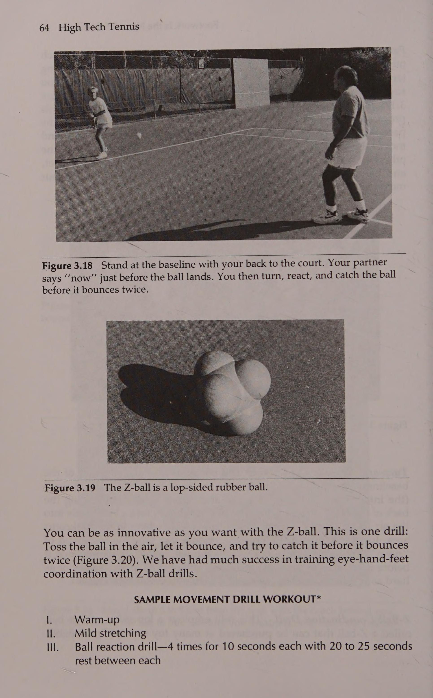
Kích thước tay cầm của vợt Một yếu tố khác mà bạn cần cân nhắc trước khi mua vợt mới là kích thước tay cầm. Đây là một thành phần quan trọng trong việc lựa chọn vợt thường bị tay vợt quần vợt bỏ qua. Họ thường thử một vài kích cỡ tay cầm mà họ cảm thấy thoải mái và sau đó thường chọn kích thước tay cầm nhỏ hơn vì cảm giác căng mà vợt mang lại cho họ. Đây là một cách thực hành nguy hiểm, bởi vì kích thước cán vợt càng nhỏ thì bạn càng phải siết cán vợt chặt hơn để duy trì khả năng kiểm soát vợt khi va chạm. Bạn càng siết vợt chặt thì bàn tay của bạn càng cố định vào vợt và do đó lực truyền từ vợt đến bàn tay, cổ tay, cẳng tay và khuỷu tay càng lớn. Do đó, nếu bạn là một tay vợt thích cảm giác giật do tay cầm nhỏ hơn mang lại, bạn có thể gặp rắc rối. Một trong những phương pháp được chấp nhận rộng rãi nhất để xác định cỡ tay cầm phù hợp là đo khoảng cách từ đường giữa lòng bàn tay đến đầu ngón đeo nhẫn của bạn (Hình 2.5). Tiến sĩ Nirschl, bác sĩ phẫu thuật chỉnh hình được đề cập trước đó trong chương này, đã phát triển phương pháp này. Số đo là kích thước tay cầm thực tế mà ông đề xuất cho tay vợt. (Hình 2.5 không được vẽ theo tỷ lệ; nó chỉ được đưa vào nhằm mục đích minh họa.) Đôi giày tennis của bạn và bạn Rất ít người nhận ra rằng một người bình thường bước gần 20.000 bước mỗi ngày và với mỗi bước đi, một lực bằng khoảng 120% trọng lượng cơ thể được truyền qua bàn chân xuống đất. Hãy tưởng tượng tỷ lệ phần trăm khổng lồ của trọng lượng cơ thể được truyền khi chạy, sau đó xem xét những con số này có ý nghĩa như thế nào đối với yêu cầu xuất phát và dừng nhanh trong quần vợt. Hãy xem xét rằng bàn chân chứa khoảng 26 xương cùng với các cơ nhỏ và một khối mô liên kết. Đập tất cả những thứ đó xuống đất trong 3 giờ mỗi ngày trên sân tập và không có gì lạ khi một tay vợt lành nghề có thể bị đau chân.
Another factor that you need to consider before buying your new racket is grip size. This is a serious component of racket selection that is often overlooked by tennis players. They often try a couple of grip sizes that feel good and then usually select the smaller grip size because of the whippy feeling the racket gives them. This is a dangerous practice, because the smaller the grip size, the tighter you must squeeze the grip to maintain racket control at impact. The tighter you squeeze the racket, the more fixed your hand becomes to the racket and thus the greater the transmission of force from the racket to the hand, wrist, forearm, and elbow. Therefore, if you are a player who likes the whippy feeling provided by a smaller grip, you may be asking for trouble. One of the most commonly accepted methods to determine the proper grip size is to measure the distance from the middle palm line of the hand to the end of your ring finger (Figure 2.5). Dr. Nirschl, the orthopedic surgeon mentioned earlier in this chapter, developed this method. The measurement is the actual grip size he recommends for players. (Figure 2.5 is not drawn to scale; it is included only for illustrative purposes.) Your Tennis Shoes and You Few people realize that the average person takes almost 20,000 steps per day and that with each step, a force of about 120 percent of the body’s weight is transmitted through the foot to the ground. Imagine the enormous percentages of body weight transmitted when running, then consider what these numbers become for the quick starts and stops required in tennis. Consider that the foot contains some 26 bones along with tiny muscles and a mass of connective tissue.
Động tác chân cần thiết trong quần vợt không giống như trong hầu hết các môn thể thao khác: xuất phát nhanh theo mọi hướng, dừng nhanh từ mọi hướng, nhảy ở Tối ưu hóa trận đấu với thiết bị phù hợp TAY' SIZER® Kích thước tay cầm phù hợp: Kỹ thuật của Arlington, Virginia 22203 Robert P. Nirschl, M.D.
Slam all of that into the ground for 3 hours a day on the practice court and it’s no wonder a skilled tennis player may have sore feet. The footwork required in tennis is unlike that in most other sports: quick starts in all directions, quick stops from all directions, jumping at
Y TẾ THỂ THAO, INC.
Optimize Game With Proper Equipment
3801 N. Fairfax Dr., Suite 504 (703) 525-8500 Chỉ đường (Tay phải) * Đặt điểm tam giác trên đường lòng bàn tay thứ hai của bàn tay.
HAND’ SIZER® Proper Grip Size: Technique of Arlington, Virginia 22203 Robert P.
* Đặt thước kẻ lên ngón đeo nhẫn.
Nirschl, M.D.
* Xem sơ đồ.
MEDICAL SPORTS, INC.
* Luôn giữ thước và ngón tay thẳng.
3801 N.
¢ Đo đến đầu ngón đeo nhẫn.
Fairfax Dr., Suite 504 Directions (Right Hand)
¢ Để đo tay trái, hãy lật Hand' Sizer lên * Số đo là cỡ tay cầm |~ thích hợp của bạn.
* Place point of triangle on second palm line of the hand. * Place ruler over ring finger. * See Diagram. * Keep ruler and fingers straight at all times. ¢ Measure to tip of ring finger. ¢ To measure left hand, turn Hand’ Sizer over * Measurement is your |~ proper grip size. ; Diagram
Sơ đồ Hình 2.5 Đây là một trong những phương pháp hiện đại hơn được sử dụng để chọn kích thước tay cầm phù hợp (Được phép của Medical Sports, Inc.). các góc khác nhau (ví dụ: thẳng lên hay nghiêng về phía sau), tiếp đất và xoắn. Vô số các thao tác này còn phức tạp hơn bởi ¢ sự tồn tại của khoảng 16 bề mặt sân tennis khác nhau, ¢ các điều kiện khí hậu khác nhau (ví dụ: thời tiết và độ ẩm), và ¢ nhiệt độ bề mặt sân thay đổi đáng kể so với độ cao, khí hậu và mùa.
Figure 2.5 This is one of the more contemporary methods used in selecting a proper grip size (Courtesy of Medical Sports, Inc.). different angles (e.g., straight up versus angled backward), landing, and twisting. This myriad of maneuvers is further complicated by ¢ the existence of approximately 16 different tennis court surfaces, ¢ various climate conditions (e.g., weather and humidity levels), and ¢ dramatic court surface temperature changes relative to altitude, climate, and season.
Tất cả những yếu tố này có thể ảnh hưởng đến ma sát (lực kéo) giữa giày và bề mặt, và chúng khiến việc lựa chọn giày quần vợt trở nên quan trọng.
All of these factors may affect the friction (traction) between a shoe and surface, and they make the selection of a tennis shoe an important one.
Nghiên cứu về giày tennis Giày tennis không trải qua những thay đổi phát triển mạnh mẽ như vợt, nhưng vẫn có một số xu hướng công nghệ rất thú vị đang diễn ra trong ngành. Những xu hướng đổi mới nhất của những năm 1980 đều do Nike thực hiện: đế khí và giày 3/4-top. Đế hơi Tennis 30 High Tech được thiết kế để hỗ trợ tay vợt quần vợt (và người chạy bộ) với khả năng giảm chấn nhằm giảm lực tác động lên phần dưới cơ thể. Nike đã nỗ lực rất nhiều trong phòng thí nghiệm nghiên cứu và phát triển để đảm bảo rằng sự kết hợp giữa khả năng giảm chấn của đế khí và độ ổn định của hệ thống hỗ trợ giày giúp vận động viên thi đấu thoải mái và bền bỉ.
Research on Tennis Shoes Tennis shoes have not endured the same drastic developmental changes as rackets, but there are still some very interesting trends in technology taking place in the industry. The most innovative trends of the 1980s were both accomplished by Nike: the air sole and the 3/4-top shoe. The air sole was designed to aid the tennis player (and runner) with cushioning to reduce the forces to the lower body. Nike went to great lengths in the research and development laboratory to ensure that the combination of cushioning achieved by the air sole and the stability of the shoe’s support system enabled the athlete to play with comfort and endurance.
Giày 3/4-top là một cuộc phiêu lưu đáng kinh ngạc—một cuộc phiêu lưu mà tôi đã tham gia từ Ngày 1. Nhiều người nghĩ rằng công nghệ tạo ra giày sân 3/4-top đã góp phần vào thành tựu tiếp thị to lớn này, nhưng cách giày này được đưa vào quần vợt chỉ là một sự tình cờ. Không có nghĩa là điều đó sẽ không bao giờ xảy ra; chiếc giày chắc chắn sẽ được tay vợt quần vợt sử dụng sớm hay muộn, nhưng sự kiện diễn ra sau đây chỉ khiến việc này diễn ra nhanh hơn.
The 3/4-top shoe was an incredible adventure—one that I was involved with from Day 1. Many think that the technology that created the 3/4top court shoe added to the tremendous marketing feat, but the way the shoe was introduced to tennis was an accident. Not to say that it would have never happened; the shoe would have definitely been used by tennis players sooner or later, but the following event that took place merely caused this to happen faster.
Năm 1982, tôi được Nike thay mặt yêu cầu tới San Francisco để quay phim với John McEnroe. Khi đến khách sạn, tôi gặp người quản lý xúc tiến quần vợt và hai kỹ sư của Nike để thảo luận về các sự kiện trong vài ngày tới. Sáng sớm ngày hôm sau, chúng tôi gặp John tại một trong những phòng tiệc của khách sạn và chụp ảnh cũng như bó bột thạch cao cho bàn chân của anh ấy để hiểu rõ cấu trúc bàn chân của anh ấy. Sau đó, anh ấy ra sân, nơi anh ấy chơi một vài hiệp tập trong khi tôi quay phim tốc độ cao (khoảng 100 khung hình mỗi giây) để kiểm tra bước chân của anh ấy và cố gắng xác định xem giày của anh ấy có thể được thiết kế tốt hơn như thế nào.
In 1982, I was requested on behalf of Nike to travel to San Francisco for a filming session with John McEnroe. When I arrived at the hotel, I was met by the tennis promotion manager and two of Nike’s engineers to discuss the events for the next couple of days. Early the next day, we met John in one of the banquet rooms of the hotel and took photographs and plaster casts of his feet to appropriately understand his foot structure. Then, it was off to the courts where he played a couple of practice sets while I took high-speed films (at about 100 frames per second) to examine his footwork and attempt to determine how his footwear could be better designed.
The films were developed overnight and the next morning the Nike engineers and I went over the films. Những gì chúng tôi thấy thật tuyệt vời! Khi John nhảy lên khỏi mặt đất (như bất kỳ tay vợt nào cũng làm khi dự đoán cú đánh của đối phương), bàn chân của anh ấy hơi nghiêng xuống (một lần nữa, giống như bất kỳ tay vợt nào cũng làm). However, when he landed, he did not correct his foot posi- tion as readily as he should have. This is definitely not to say that he had a problem with footwork, but rather he was basically too quick for his own feet! Upon landing, his foot position would correct naturally, but sometimes he would land improperly and turn his ankle.
The films were developed overnight and the next morning the Nike engineers and I went over the films. What we saw was amazing! When John hopped off the ground (as any player does when anticipating the opponent’s shot), his feet angled down slightly (again, just as any player’s do). However, when he landed, he did not correct his foot position as readily as he should have. This is definitely not to say that he had a problem with footwork, but rather he was basically too quick for his own feet! Upon landing, his foot position would correct naturally, but sometimes he would land improperly and turn his ankle.
Cuối buổi sáng hôm đó, chúng tôi thảo luận về kết quả quay phim với John và cho phép anh ấy chọn lọc khoảng 20 kiểu giày khác nhau để chọn ra một hoặc một vài đôi mà anh ấy cảm thấy hài lòng và dường như sẽ hỗ trợ thêm cho anh ấy. As John went through all the different pairs of shoes, it didn’t seem that any were to his liking. Tôi thấy một trong những kỹ sư lấy một đôi ra khỏi hộp và ném chúng vào một góc phòng (Sau này tôi phát hiện ra rằng chúng là một mẫu bóng vợt 3/4 đầu ngoài không phù hợp và lẽ ra không nên có trong hộp giày để John lựa chọn). This discarding action caught John’s eye, and (you guessed it) he wanted to see that pair and try them on. He like them and wanted to practice in them that day. We filmed John again and had the films developed over- night.
Later that morning we discussed the results of the filming with John and allowed him to sift through about 20 different styles of shoes to select a pair or a couple of pairs that felt good to him and seemed to give him additional support. As John went through all the different pairs of shoes, it didn’t seem that any were to his liking. I saw one of the engineers take a pair out of the box and throw them in a corner of the room (I found out later that they were an out-of-line 3/4-top racquetball model that wasn’t supposed to be in the box of shoes for John’s selection). This discarding action caught John’s eye, and (you guessed it) he wanted to see that pair and try them on. He like them and wanted to practice in them that day. We filmed John again and had the films developed overnight.
Optimize Game With Proper Equipment The films showed that John’s movement problem was corrected with these shoes. Many theories could be put forth to explain why the shoes work, but this is the one I feel is true. Although the sidewalls of the shoes do not cross the total ankle joint, they do come right up to it. As John dropped his foot when he left the ground, there was slight pressure against the side of the ankles. The pressure, albeit minimal, caused John to correct his foot position while still airborne and allowed him to land properly.
Optimize Game With Proper Equipment The films showed that John’s movement problem was corrected with these shoes. Many theories could be put forth to explain why the shoes work, but this is the one I feel is true. Although the sidewalls of the shoes do not cross the total ankle joint, they do come right up to it. As John dropped his foot when he left the ground, there was slight pressure against the side of the ankles. The pressure, albeit minimal, caused John to correct his foot position while still airborne and allowed him to land properly.
Các yếu tố cần cân nhắc khi chọn giày tennis Bạn nên cân nhắc nhiều yếu tố khi mua một đôi giày tennis. Tôi chắc chắn rằng bạn biết cỡ giày cụ thể của mình, kiểu dáng bạn muốn và sự thoải mái mà bạn mong đợi. Tuy nhiên, điều gì đòi hỏi một đôi giày hoàn hảo phù hợp với tay vợt quần vợt? Phong cách chơi của bạn có ảnh hưởng đến việc lựa chọn giày của bạn không? Bạn có cân nhắc xem mình sẽ chơi trên mặt sân nào và lựa chọn của bạn có thể ảnh hưởng đến thành tích của bạn như thế nào không? Bạn đánh giá cấu tạo của một đôi giày như thế nào và cấu trúc bàn chân của bạn sẽ ảnh hưởng như thế nào đến việc mua hàng của bạn? Tay vợt quần vợt lành nghề phải đối mặt với những vấn đề này. Đôi giày bạn chọn không chỉ ảnh hưởng đến chất lượng chơi của bạn mà còn có thể quyết định thời gian bạn chơi trò chơi.
Factors to Consider When Selecting Tennis Shoes You should consider many factors when purchasing a pair of tennis shoes. I’m sure you are aware of your specific shoe size, the style you want, and the comfort you expect. However, what entails a perfect shoe fit for a tennis player? Should your style of play affect your shoe selection? Do you consider what court surface you play on and how your choice might affect your performance? How do you evaluate the construction of a shoe and how your foot structure should affect your purchase? The skilled tennis player must confront these issues. The shoes you select will not only affect your quality of play but they may also dictate how long you play the game. Your Game Style
Phong cách thi đấu của bạn Trước tiên hãy xem xét phong cách chơi trong việc lựa chọn giày tennis của bạn. Nhiều tay vợt là những tay vợt cơ bản, cho dù họ đánh những cú đánh tấn công không ngừng trên mặt đất hay thu và đánh những quả cầu mặt trăng. Rõ ràng, đôi chân của những tay vợt này gặp phải rất nhiều lực ngang (từ bên ngoài) và lực trung gian (từ trong ra ngoài) khi họ đẩy sang một bên để sút hoặc cố gắng bắt kịp và đổi hướng. Điều này không có nghĩa là tay vợt không nên lo lắng về lực phía trước (phía trước) hoặc phía sau (phía sau), nhưng nhu cầu hỗ trợ chính của họ sẽ nằm ở thành bên của giày. Tay vợt giao bóng và vô lê cũng sử dụng rất nhiều lực bên hông để thực hiện cú vô lê, nhưng tay vợt này cũng sẽ tạo ra một lực rất cao về phía trước vào hộp ngón chân của giày khi tiếp cận lưới. Nếu một vận động viên giao bóng và đánh vô-lê đi giày không vừa vặn, bàn chân có thể trượt về phía trước trong giày và gây ra hiện tượng gọi là ngón chân đen: ngón chân bị đổi màu do bầm tím.
Let’s first consider style of play in your selection of a tennis shoe. Many players are baseliners, whether they hit relentless offensive ground strokes or retrieve and hit moonballs. These players’ feet, obviously, encounter a great deal of lateral (to the outside) and medial (to the inside) forces as they push off sideways for a shot or try to catch themselves and change direction. This is not to say players shouldn’t worry about forward (anterior) or rear (posterior) forces, but their major support needs will be in the sidewalls of a shoe. The serve-and-volley player also exerts a great deal of sidewall force in pushing off to volley, but this player will also generate very high levels of forward forces into the shoe’s toe box when approaching the net. If a serve-and-volleyer wears a shoe that doesn’t fit properly, it’s possible for the foot to slide forward in the shoe and cause what is known as black toe: a discoloration of the toe due to bruising.
Bề mặt sân Một yếu tố bên ngoài khác ngoài phong cách chơi có thể ảnh hưởng đến quyết định chọn giày tennis của bạn: bề mặt sân. Cách đế giày tương tác với mặt sân của 182 High Tech Tennis chắc chắn có thể quyết định trình độ chơi của bạn. Ví dụ: nếu bạn chơi trên sân cứng mang giày được thiết kế để trượt trên đất sét, bạn có thể không đổi hướng đủ nhanh, điều này sẽ gây nguy hiểm cho sự an toàn của bạn cũng như làm giảm chất lượng trận đấu của bạn.
Court Surface Another external factor besides style of play may affect your decision in selecting a tennis shoe: the court surface. How the shoe sole interacts with the court surface could definitely dictate your caliber of play. For example, if you play on a hard court wearing shoes designed to slide on clay you may not be able to change directions quickly enough, which would risk your safety as well as detract from your game.
Việc mẫu đế giày có ảnh hưởng đến lực kéo giữa đế giày và mặt sân hay không đã gây ra nhiều tranh cãi. Lần tới khi bạn đến cửa hàng giày, hãy nhìn vào đế của nhiều loại giày tennis khác nhau. Bạn có thể thấy các đường lượn sóng, đường có hoa văn chữ Z, vòng tròn đồng tâm, hình chiếu tròn không đều hoặc sự kết hợp của các mẫu đế này. Một số nhà sản xuất đã nghiên cứu kỹ lưỡng sự tương tác giữa đế giày và bề mặt sân và đã điều chỉnh đế giày của họ cho phù hợp với các bề mặt sân cụ thể, vì vậy hãy nhớ đọc tài liệu của công ty để đảm bảo giày đáp ứng được nhu cầu của bạn.
Whether or not shoe sole patterns affect the traction between a shoe sole and court surface has generated great controversy. The next time you are in a shoe store, look at the soles of various tennis shoes. You may see wavy lines, Z-patterned lines, concentric circles, uneven circular projections, or combinations of these sole patterns. Some manufacturers have exhaustively studied the interaction of shoe soles and court surface and have tailored their shoe soles to specific court surfaces, so be sure to read the company’s literature to be sure your shoe meets your needs. Shoe Construction
Cấu trúc giày Thông qua phân tích phim tốc độ cao, các nhà nghiên cứu đã xác định rằng hầu hết các kiểu đánh bằng chân trong quần vợt đều liên quan đến đòn đánh bằng gót chân (bất kể trình độ kỹ năng), sự chuyển động của lực dọc theo mặt bên của đế giày và sự truyền lực đó đến phần bóng của bàn chân. Điều này tiết lộ một số điều cho người mua tiềm năng. Đầu tiên, cấu trúc của phần đệm gót chân phải gần như vừa vặn; nó phải vừa khít nhưng không gò bó. Điều này giúp chân không bị trượt ra khỏi giày và còn giúp phân bổ lực tác động đều hơn. Thứ hai, phần lót gót vừa khít dường như là yếu tố quan trọng nhất giúp ngăn bàn chân trượt về phía trước bên trong giày. Ngoài ra, phần gót bên ngoài tròn dường như có lợi hơn so với cấu trúc gót vuông. Gót vuông, hoặc gót vuông góc với một cạnh đột ngột, có thể khiến bàn chân thực sự đập xuống đất sau khi đi qua mép đế giày, nhưng gót tròn cho phép bàn chân tiếp xúc một cách mượt mà và có kiểm soát hơn. Phần gót đúc mềm, dẻo cũng sẽ hấp thụ chấn động tốt hơn.
Through the analysis of high-speed films, researchers have determined that most foot striking patterns in tennis involve heel strike (regardless of skill level), the movement of force along the lateral aspect of the shoe sole, and the transmission of that force across to the ball of the foot. This reveals several things to the prospective buyer. First, the construction of the heel cup should be near to formfitting; it should be snug but not constricting. This prevents the foot from slipping out of the shoe and also helps to distribute impact forces more evenly. Second, a snug heel cup seems to be the most important factor in preventing the foot from sliding forward inside the shoe. Also, a rounded outer heel seems to be more beneficial than a square heel construction. The square heel, or one that is right-angled with an abrupt edge, may cause the foot to actually slap the ground after going over the edge of the shoe sole, but a round heel allows the foot to make contact in a smoother and more controlled manner. A soft, pliable, molded heel will also absorb shock better.
Đế giày phải đệm và chịu lực! Một số giày được làm từ chất liệu được thiết kế để làm được cả hai điều đó. Những loại khác được làm bằng hai vật liệu: đế giữa có đệm và đế ngoài cứng hơn, bền hơn. Tiến sĩ Robert Simpson (1982) cảm thấy rằng đế polyurethane có hai độ dày (đế trong màu trắng xốp và đế ngoài mềm dẻo nhưng chắc chắn hơn) là tốt nhất.
Shoe soles must cushion and endure! Some shoes are made from a material designed to do both. Others are constructed of two materials: a cushioned midsole and a harder, more durable outer sole. Dr. Robert Simpson (1982) feels that a polyurethane sole of two thicknesses (a spongy white inner sole and a pliable, but more firm, outer sole) is best.
Để tiến thêm một bước nữa, một số công ty đã tích hợp vào giày quần vợt của họ một loại đế hơi có khả năng giảm chấn nhiều hơn. Với sự hỗ trợ và đệm thích hợp ở khu vực này, khả năng chấn thương bàn chân, cẳng chân và đầu gối sẽ giảm đi.
To goa step further, some companies have incorporated into their tennis shoes an air sole that will provide even more cushioning. With proper support and cushioning in this area, the likelihood of foot, lower leg, and knee trauma is lessened.
Khả năng hấp thụ và hỗ trợ sốc tiếp tục từ khu vực gót chân đến giữa bàn chân. Để kiểm tra độ linh hoạt của phần giữa bàn chân, hãy uốn cong phần giữa của đế.
Shock absorption and support continue from the heel area through the midfoot. To test for midfoot flexibility, flex the sole in the middle.
Hãy cố gắng tránh hai thái cực: giày cứng và giày quá mềm.
Try to avoid the two extremes: a stiff shoe and a shoe that is too pliable.
Quá cứng sẽ hấp thụ ít chấn động, trong khi quá mềm dẻo sẽ tạo ra ít sự hỗ trợ. Bài kiểm tra độ uốn này tuy đơn giản nhưng có thể tiết lộ sự khác biệt nổi bật giữa các kiểu giày.
Too much rigidity absorbs little shock, whereas too much pliability provides little support. This flexion test, though simple, can reveal striking differences among shoe styles.
Tối ưu hóa trò chơi với thiết bị phù hợp Lực tác động của bàn chân di chuyển từ giữa bàn chân đến bàn chân trước.
Optimize Game With Proper Equipment The force of foot impact moves through the midfoot to the forefoot.
Bởi vì cơ thể đang bắt đầu đẩy vào thời điểm này và có thể vặn qua bàn chân trước để đổi hướng, nên lĩnh vực thiết kế giày này rất quan trọng. Áp lực lớn nhất có thể dồn lên phần bóng của bàn chân, vì vậy bạn nên kiểm tra xem phần đế giày đó được gia cố tốt như thế nào. Trong Hình 2.6, bạn có thể thấy điều gì xảy ra với quả bóng của bàn chân khi một tay vợt có kỹ năng thực hiện cú đánh. Một lần nữa, khu vực này của giày không nên quá cứng vì bàn chân trước phải chịu một lực rất lớn.
Because the body is beginning its push-off at this point and may be twisting over the forefoot to change direction, this area of shoe design is crucial. The greatest pressure may be over the ball of the foot, so you should examine how well that area of the shoe sole is reinforced. In Figure 2.6 you can see what happens to the ball of the foot as a skilled player maneuvers to hit a shot. Again, this area of the shoe should not be too rigid because a great deal of force is encountered in the forefoot.
Lực đó có thể làm chấn thương bàn chân nếu được phân bổ và hấp thụ kém.
That force could traumatize the foot if poorly distributed and absorbed.
Cuối cùng, bạn có phải là người hay kéo ngón chân không? Khi bạn giao bóng xong có những đường trắng dài phía sau đường cuối sân (Hình 2.7) do thứ từng là một phần của giày của bạn gây ra không? Một tay vợt trong giải đấu thậm chí còn kéo phần trên của giày của mình trong các cú đánh trên mặt đất và đi qua phần trên trước khi có bất kỳ dấu hiệu mòn nào xuất hiện ở đế. Điều này không chỉ làm hỏng một đôi giày tennis sớm mà việc kéo ngón chân còn có thể ảnh hưởng đến khả năng giữ thăng bằng và thời gian của bạn. Nếu bạn kéo lê ngón chân, giải pháp tốt nhất là học một số bài tập về động tác chân và bỏ thói quen này! Nó có thể giúp bạn tiết kiệm tiền về lâu dài. Tuy nhiên, câu trả lời tốt nhất tiếp theo là mua một đôi giày có mũi giày được gia cố. Hãy tìm những đôi giày có đế ngoài rất chắc chắn. Một số kiểu giày thậm chí còn có ngón chân to hơn bình thường, thường được gia cố bằng polyurethane hoặc một số chất tổng hợp khác. Phần đệm bổ sung này sẽ giúp đôi giày bền hơn một chút, nhưng đôi giày vẫn có thể bị hỏng trước thời hạn.
Finally, are you a toe dragger? When you finish serving are there long white lines behind the baseline (Figure 2.7) caused by what used to be part of your shoe? One player on the tour even drags the top of his shoe during ground strokes and goes through the upper before any sign of wear appears on the sole. Not only does this ruin a pair of tennis shoes prematurely, dragging your toe can also affect your balance and your timing. If you drag your toe the best solution is to take some footwork lessons and get out of the habit! It might save you money in the long run. The next best answer, however, is to purchase a shoe with a reinforced toe. Look for shoes with very sturdy outer soles. Several shoe styles even have a larger than usual toe, usually reinforced with polyurethane or some other synthetic. This added padding will help the shoes last a little longer, but the shoe still will probably die before its time.
Cấu trúc bàn chân Cho đến thời điểm này, chúng ta đã thảo luận về việc lựa chọn giày theo phong cách chơi, bề mặt sân, điểm hỗ trợ và phần đệm của bàn chân, cũng như Hình 2.6 Gabriela Sabatini đẩy ra để nổ tung về phía bên phải của cô ấy. Độ xoắn bên trong giày vào thời điểm này là rất cao.
Foot Structure Up to this point, we’ve discussed shoe selection according to style of play, court surface, support, and cushioning of the foot, as well as Figure 2.6 Gabriela Sabatini pushes off to explode to her right. The torsion within a shoe is very high at this point.
34 Quần vợt công nghệ cao a Hình 2.7 Trong (a), bạn có thể thấy có bao nhiêu tay vợt kéo ngón chân của họ bằng chân đường mòn trong khi giao bóng. Trong (b), bạn có thể xem các đường màu trắng thường thấy phía sau đường biên của nhiều sân tennis. Những đường này là do mũi giày tennis của tay vợt gây ra. khả năng đeo, nhưng ít được nói đến về cấu trúc cơ bản của bàn chân và sự liên quan của nó trong việc lựa chọn giày. Tôi sẽ đề cập đến công việc của tôi với Tiến sĩ Simpson và liên hệ chuyên môn của ông về bệnh lý bàn chân với nghiên cứu về cơ sinh học của tôi.
Figure 2.7 In (a), you can see how many players drag their toes with the trail foot while serving. In (b), you can view the white lines commonly seen behind the baseline of many tennis courts. These lines are caused by the toe of a player’s tennis shoe. wearability, but little has been said regarding basic foot structure and its involvement in shoe selection. I will refer to my work with Dr. Simpson and relate his expertise in podiatry to my study of biomechanics.
Tất cả chúng ta đều biết cỡ giày của mình. Khi thử một đôi giày, tất cả chúng ta đều đứng dậy, nghiêng người và đẩy mũi giày vào trong để xác định khoảng trống cho ngón chân của mình. Đây là một chỉ báo tốt về lượng không gian có sẵn trong hộp ngón chân. Bạn không muốn một hộp ngón chân bị bó hẹp, bạn cũng không muốn một chiếc giày có hộp ngón chân quá khổ cho phép bàn chân di chuyển tự do về phía trước. Một cách kiểm tra dễ dàng cho việc này là đứng trên thảm của cửa hàng và ấn chân vào giày về phía trước. Điều này sẽ cho biết bạn sẽ cảm thấy thế nào sau một trận đấu quần vợt.
We all know our shoe size. When trying on a pair of shoes, we all stand up, lean over, and push the front of the shoe in to determine how much room our toes have. This is a good indicator of the amount of space available in the toe box. You don’t want a toe box that constricts, nor do you want a shoe with an oversized toe box that permits free forward migration of the foot. An easy test for this is to stand on the store’s carpet and force your foot forward in the shoe. This should indicate how you'll feel later during a tennis match.
Chiều rộng bàn chân cũng ảnh hưởng đến khả năng hỗ trợ vòm và phân bổ lực. Một nguyên tắc nhỏ khi thử một đôi giày là buộc dây chắc chắn cả hai đôi giày, đứng lên và để trọng lượng của bạn lắc lư vào bên trong qua vòm rồi chuyển sang bên ngoài qua một bên. Nếu bạn cảm thấy quá nhiều áp lực từ vòm giày hoặc nếu bạn cảm thấy bị chèn ép thì có thể giày quá chật; Chuyển động quá nhiều của bàn chân trong giày có thể không hỗ trợ đầy đủ cho vòm chân của bạn và quá nghiêng (xoay ra ngoài) có thể gây ra chấn thương nghiêm trọng ở cẳng chân và đầu gối.
Foot width also affects arch support and force distribution. A good rule of thumb while trying on a pair of shoes is to lace both shoes securely, stand up, and let your weight sway to the inside over the arch and then to the outside over the side. If you feel too much pressure from the shoe’s own arch, or if you feel any pinching, the shoe is probably too tight; too much foot motion within the shoe may not support your arch adequately and too much pronation (turning outward) can cause severe lower leg and knee trauma.
Phần gót giày phải vừa khít với bàn chân nhưng không hạn chế.
The heel cup of a shoe should be snug to the foot but not restricting.
Nếu nó quá chật, bạn có thể gặp vấn đề về phân bổ lực và bị bầm tím, còn nếu nó quá lỏng, khả năng kiểm soát bàn chân sẽ kém và các vết phồng rộp có thể phát triển. Ngoài ra, hãy kiểm tra xem mép trong trên của miếng lót gót chân tiếp xúc với bàn chân của bạn ở đâu. Một số người dễ bị phồng rộp nếu mép giày cọ xát quá nhiều vào phía sau bàn chân. Nếu bạn dễ bị phồng rộp thì việc ngăn ngừa vấn đề là cách chữa trị tốt nhất mà bạn có thể thực hiện.
If it’s too tight you may have problems with force distribution and bruising, and if it’s too loose, foot control will be poor and blisters may develop. Also, test where the top inner edge of the heel cup contacts your foot. Some people blister easily if the shoe’s edge rubs too much against the rear of the foot. If you blister easily, prevention of the problem is the best cure you could have. Optimize Game With Proper Equipment
Tối ưu hóa trò chơi với thiết bị phù hợp Tóm tắt lựa chọn giày Có vẻ như câu ngạn ngữ cũ '' nếu giày vừa vặn, hãy mang nó '' có thể không hẳn đúng. Độ vừa vặn của giày sẽ ảnh hưởng đến lối chơi của bạn và lượng thời gian bạn có thể dành trên sân. Khi bạn chọn một đôi giày tennis, hãy ghi nhớ những điều sau. Tất cả tay vợt quần vợt đều cần hỗ trợ và đệm chân, nhưng bạn có thể có những nhu cầu cụ thể dựa trên cấu trúc bàn chân, sự thoải mái, trọng lượng giày, khả năng hấp thụ sốc, độ bền, bàn chân trước được gia cố, độ vừa vặn, phong cách chơi của bạn hoặc bề mặt sân mà bạn chơi.
Summarizing Shoe Selection It seems that the old adage ‘‘if the shoe fits, wear it” may not necessarily be right. How the shoe fits is what affects your play and the amount of time you can spend on the court. When you select a pair of tennis shoes, bear the following in mind. All tennis players need foot support and cushion, but you may have specific needs based on your foot structure, comfort, shoe weight, shock absorption, durability, reinforced forefoot, fit, your style of play, or the court surface you play on.
Việc cân nhắc những yếu tố này khi chọn giày có thể có tác động tích cực đến mức độ bạn chơi và thời gian bạn chơi.
Consideration of these factors when selecting your shoes could have a positive effect on how well you play and how long you play.
Lời khuyên về quần vợt của Tiến sĩ Jack Luôn thử cả hai đôi giày và thực hiện các bài kiểm tra tương tự được thảo luận ở đây đối với cả hai đôi giày. Cả hai đều phải có chức năng phù hợp tốt.
Dr. Jack’s Tennis Tips Always try on both shoes of a pair and do the same tests discussed here on both. They both must have a good functional fit.
Tại sao lại có nhiều quả bóng tennis khác nhau như vậy?
Why So Many Different Tennis Balls?
Tôi nghĩ sẽ rất thú vị khi những quả bóng tennis hai tông màu cam vàng tung ra thị trường vào đầu những năm 1980. Chúng được quảng cáo là dễ nhìn hơn 23% và được cho là sẽ tạo ra sự cải thiện lớn trong trò chơi của bạn. Tuy nhiên, các nhà quảng cáo chưa bao giờ nói bất cứ điều gì về việc đối thủ của bạn cũng có thể nhìn thấy bóng tốt hơn 23% hoặc đề cập đến việc trò chơi của họ cũng sẽ được cải thiện như thế nào.
I thought it was very interesting when the two-tone orange and yellow tennis balls hit the market in the early 1980s. They were advertised as being 23 percent easier to see and were supposed to make a big improvement in your game. However, advertisers never said anything about your opponent also being able to see the ball 23 percent better or mentioned how his or her game would also improve.
Bóng tennis chiếm một phần lớn trên thị trường. Trong những năm gần đây, ngành công nghiệp bóng tennis đã chiếm khoảng 20% tổng số tiền mà người tiêu dùng quần vợt ở Hoa Kỳ chi tiêu. Bởi vì lĩnh vực này mang lại nhiều lợi thế nên có rất nhiều thương hiệu bóng tennis tồn tại. Lựa chọn của họ có thể phụ thuộc vào bề mặt sân sẽ chơi, độ cao hoặc thời gian chơi của bạn. Hầu hết tay vợt quần vợt đều thừa nhận rằng có sự khác biệt giữa các thương hiệu bóng tennis khác nhau trên thị trường. Sự khác biệt bao gồm từ các biến thể trong đặc tính bay và bật lại cho đến khả năng của quả bóng để duy trì các đặc tính không đổi trong khi chơi (ví dụ: liệu chúng có bay lên hay không). Hãy thảo luận về một số khác biệt này.
Tennis balls are a big part of the market. In recent years the tennis ball industry has accounted for approximately 20 percent of the total money spent by the tennis consumer in the United States. Because that part of the industry is so profitable, many brands of tennis balls exist. Their selection may depend on the court surface to be played on, the altitude, or your duration of play. Most tennis players acknowledge that there is a difference among the various brand names of tennis balls on the market. The differences range from variations in flight and rebound characteristics to the ball’s ability to maintain constant characteristics during play (e.g., whether they fluff up or not).
Một đặc điểm nhận dạng chính của một số thương hiệu bóng tennis là liệu chúng có chịu áp lực hay không. Những quả bóng không có áp suất có thể hữu ích ở độ cao lớn hơn, nhưng bạn sẽ hiếm khi thấy chúng được sử dụng ở các giải đấu lớn. Lý do là nhiều tay vợt có kỹ năng cao cho biết những quả bóng này có cảm giác như đá khi chạm vào vợt. Một số cơ quan chức năng thậm chí còn cho rằng lực tác động mạnh đến mức việc sử dụng những quả bóng này có thể khiến cánh tay của bạn bị thương. Rất ít nghiên cứu được tiến hành trên quả bóng không điều áp nên không thể xác minh thông tin nào trong số này, nhưng hầu hết những tay vợt trình độ cao hơn thích chơi với những quả bóng tennis có áp suất. Một khi quả bóng tennis được điều áp, nó phải được đặt trong hộp kín chân không để mỗi quả bóng sẽ duy trì được áp suất. Nếu lon được đậy kín đúng cách, nó sẽ tạo ra tiếng rít ngắn nhưng lớn khi mở ra. Sau khi mở hộp bóng có áp suất, mỗi quả bóng sẽ duy trì đặc tính bật lại ban đầu trong khoảng một tuần (Rand, Hyer và Williams, 1979). Sau một tuần chỉ để trong hộp mở nắp, quả bóng tennis sẽ dần mất áp suất và chết.
Let’s discuss some of these differences. : One major identifying characteristic among some brands of tennis balls is whether they are pressurized or not. Nonpressurized balls may be useful at higher altitudes, but you will seldom see them used at major tournaments. The reason is that many skilled players say these balls feel like rocks when they hit the racket. Some authorities even feel that the impact is so heavy that use of these balls could hurt your arm. Little research has been conducted on the nonpressurized ball so none of this information can be verified, but most advanced players prefer playing with pressurized tennis balls Once a tennis ball is pressurized, it must be placed in a vacuum-sealed container so each ball will maintain its pressure. If the can is properly sealed it makes a short, but loud, hiss when opened. After a pressurized can of balls has been opened each ball will maintain its original rebound characteristics for about a week (Rand, Hyer, and Williams, 1979). After a week of just sitting in an open can the tennis ball will gradually lose its pressure and become dead.
Hầu hết các quả bóng tennis có áp suất đều được sản xuất để sử dụng ở điều kiện khí quyển gần mực nước biển. Những ai có cơ hội chơi ở độ cao lớn hơn nên biết rằng hầu hết các nhà sản xuất lớn đều sản xuất bóng ở độ cao lớn. Trên thực tế, nếu bạn cố gắng chơi một trận đấu tại một khu nghỉ dưỡng trên núi bằng cách sử dụng những quả bóng ở mực nước biển, bạn sẽ có một ngày khó chịu vì những quả bóng ở mực nước biển sẽ có xu hướng bay ra ngoài giới hạn. Ngược lại, đừng mang những quả bóng ở độ cao về nhà hoặc ra bãi biển. Những quả bóng tennis này được chế tạo đặc biệt để sử dụng ở độ cao áp suất thấp.
Most pressurized tennis balls are manufactured for use at near-sealevel atmospheric conditions. Those of you who have a chance to play in higher altitudes should be aware that high-altitude balls are made by almost all major manufacturers. In fact, if you try to play a match at a mountain resort using sea-level balls, you are in for a frustrating day because the sea-level balls will tend to sail out of bounds. In contrast, don’t take the high-altitude balls home with you or to the beach. These tennis balls are specifically made for use in low-pressure altitudes.
Khi bạn mua một quả bóng tennis, bạn có thể đọc trên hộp rằng nó chứa những quả bóng được phân loại là vô địch hoặc nhiệm vụ bổ sung. Những quả bóng tennis siêu hạng có nhiều lớp len hơn trên vỏ cao su, giúp bóng có tuổi thọ cao hơn. Nhược điểm chính của những quả bóng này là trên bề mặt đất sét và một số sân cứng, chúng có xu hướng phồng lên và trở nên nặng nề. Những quả bóng vô địch không chứa nhiều lớp vải che phủ và không bị phồng lên nhiều. Nhược điểm chính của chúng là chúng sẽ không tồn tại lâu như một số tay vợt mong muốn. Hầu hết các giải đấu USTA đều sử dụng bóng vô địch, giới thiệu những quả bóng mới ở nhiều thời điểm khác nhau trong trận đấu vì chúng mất đi đặc tính ban đầu và có thể trở nên nhẹ do mất ngủ trưa.
When you make a tennis ball purchase, you might read on the can that it contains balls classified as championship or extra duty. Extra-duty tennis balls have more wool nap on the rubber cover, which allows the ball to have a longer life span. The main disadvantage of these balls is that on a clay surface, and some hard courts, they tend to fluff up and become heavy. Championship balls do not contain as much nap covering and do not fluff up as much. Their main disadvantage is that they won’t last as long as some players might like. Most USTA tournaments use the championship ball, introducing new balls at various points in a match because they lose their original characteristics and may become light due to loss of nap.
Khi bạn chọn một quả bóng tennis để thi đấu hoặc tập luyện, hãy xem xét mặt sân và thời gian bạn muốn sử dụng bóng. Nếu bạn đang sưu tầm bóng tập, có thể bạn sẽ muốn mua những quả bóng có chức năng đặc biệt. Nếu bạn đang thi đấu hoặc đang luyện tập trên sân đất nện, bạn có thể muốn chọn những quả bóng vô địch. Đừng lo lắng về việc mua phải một quả bóng “xấu”; hầu hết các nhà sản xuất bóng tennis đều rất quan tâm đến việc kiểm soát chất lượng.
As you select a tennis ball for competition or practice, consider the court surface and how long you want to use the balls. If you are collecting practice balls, you will probably want to buy extra-duty balls. If you are competing or are practicing on a clay court, you may want to select championship balls. Don’t worry about buying a ‘’bad” ball; most tennis ball manufacturers are very involved in quality control.
Tối ưu hóa trò chơi với thiết bị phù hợp Lời khuyên về quần vợt của Tiến sĩ Jack Tôi khuyên bạn chỉ nên sử dụng các quả bóng vô địch có áp suất khi chuẩn bị thi đấu trong giải đấu. Rất ít giải đấu sử dụng bóng không chịu áp lực hoặc bóng chịu lực cao. Nếu bạn có thắc mắc về việc quả bóng được sử dụng tại một giải đấu cụ thể, hãy xem kỹ mẫu đăng ký hoặc gọi cho giám đốc giải đấu. Luyện tập với bóng thi đấu sẽ giúp bạn chơi tốt trong ngày thi đấu.
Optimize Game With Proper Equipment Dr. Jack’s Tennis Tips I recommend you only use pressurized championship balls as you prepare for tournament play. Very few tournaments use nonpressurized or extra-duty balls. If you have questions about the ball being used at a specific tournament, look closely at the entry form or call the tournament director.
KẾT QUẢ NET Luôn chọn lọc khi mua thiết bị chơi tennis của bạn. Rất dễ bị nhân viên bán hàng thuyết phục mua hàng. Đừng mua bất cứ thứ gì có vẻ là thương hiệu phổ biến nhất. Bất kể bạn đang tìm kiếm thiết bị nào, hãy khách quan khi đưa ra lựa chọn. Hãy tự hỏi bản thân những câu hỏi sau: ¢ Nhu cầu thể chất của tôi là gì (ví dụ: cỡ tay cầm và cấu trúc bàn chân)? ¢ Phong cách chơi của tôi có ảnh hưởng đến nhu cầu trang bị của tôi không?
Practicing with the tournament ball will help you play well on match day. NET RESULTS Always be selective when buying your tennis equipment. It’s easy to be swayed into a purchase by salespeople. Don’t buy whatever seems to be the most popular brand name. Regardless of the equipment you are looking for, be objective in making your choice.
© Việc mua hàng này có thể giúp tôi trở thành tay vợt giỏi hơn không?
Ask yourself the following questions:
Bằng cách khách quan trong việc lựa chọn trang bị, bạn có thể thu hẹp những lựa chọn phù hợp nhất với mình. Khi đó bạn có thể chủ quan hơn bằng cách chơi thử máy để xem cảm giác khi sử dụng sẽ như thế nào. Bằng cách tiếp cận việc mua hàng của bạn theo cách này, bạn sẽ nhận được thiết bị phù hợp nhất với mình.
¢ What are my physical needs (e.g., grip size and foot structure)? ¢ Does my style of play affect my equipment needs? © Could this purchase make me a better player? By being objective in your selection of equipment, you can narrow the choices that will be best for you. Then you can be more subjective by playtesting the equipment to see how it will feel when you use it.
4 Sy Eons chìm ont ;- RSE ae pila cen ptendesd - me ps a mp en er ache aa pe vr UG bal wae ieve:
By approaching your purchase in this manner, you will get equipment that’s best suited to you. UG bal ? wae ieve:
Chương 3: Cơ Sinh Học Di Chuyển: Trọng Tâm & Kỹ Thuật Xả Trọng Lượng (Unweighting)
Chapter 3: Footwork Is the Name of the Game: Center of Gravity, Unweighting, and Agility Drills
a ee i eee R Footwork Is the Name of the Game là yếu tố trong quần vợt hạn chế hầu hết sự thành công của tay vợt là khả năng di chuyển. Trên thực tế, tôi cảm thấy rằng việc cú đánh của bạn tuyệt vời như thế nào thực sự không quan trọng nếu bạn không ở đúng nơi, đúng thời điểm. Vì vậy, thật khó để tôi hiểu tại sao tay vợt không dành nhiều thời gian hơn để tập trung vào việc di chuyển. Bất kỳ ai đã từng học tennis đều biết các chuyên gia giảng dạy nhấn mạnh động tác chân và vị trí như thế nào. Tuy nhiên, rất ít vận động viên thực sự hiểu được vai trò của tư thế sẵn sàng, không có trọng lượng, thời gian phản ứng và sức mạnh hoặc cách tính thời gian cho một cú đánh phải được thực hiện trên đường chạy. Một số tay vợt mà tôi từng làm việc cùng rất nhanh ở cự ly 20 yard, nhưng khi phân tích thành tích của họ, tôi nhận thấy rằng họ thực sự nhanh từ 5 đến 15 yard và rất chậm từ 0 đến 5 yard. Và hãy đoán xem—khoảng cách trung bình bạn chạy cho một cú đánh là từ 2 đến 6 yard. Trên thực tế, khoảng 70% lỗi xảy ra trong các cú đánh quần vợt lành nghề không phải do cơ chế cú đánh mà là do chuyển động. 40 Quần vợt công nghệ cao Trọng tâm và sự cân bằng của bạn Nếu không có sự cân bằng tốt, một tay vợt sẽ trở thành người tầm thường. Sự cân bằng được kiểm soát bởi vị trí trọng tâm của bạn, điểm trung tâm nằm phía trên tâm của vùng xương chậu nơi khối lượng cơ thể được phân bổ. Điều thú vị là vị trí trọng tâm của bạn thay đổi khi tay chân của bạn thay đổi vị trí và khi bạn tăng thêm trọng lượng cho bàn tay của mình (tức là một cây vợt). Khi bạn chỉ cần đặt vợt vào tay, trọng tâm của bạn sẽ dịch chuyển một chút theo hướng của vợt. Nếu bạn nhấc cánh tay lên, trọng tâm sẽ di chuyển theo cùng một hướng. Sau đó, hãy xem trọng tâm thay đổi vị trí như thế nào trong vô số thao tác diễn ra trong trận đấu: Mỗi khi vị trí của tay và chân thay đổi thì vị trí của trọng tâm cũng thay đổi. Cách bạn xử lý những thay đổi này sẽ quyết định mức độ bạn duy trì thăng bằng trong khi thi đấu.
eee R Footwork Is the Name of the Game be factor in tennis that most limits players’ success is movement. In fact, I feel that it really doesn’t matter how great your strokes are if you are not in the right place at the right time. So it’s hard for me to understand why players don’t spend more time working specifically on movement. Anyone who has taken tennis lessons knows how teaching professionals emphasize footwork and positioning. Yet few athletes truly understand the roles of a ready position, unweighting, response time, and power or how to time a shot that has to be hit on the run. Some tennis players I have worked with are fast in a 20-yard dash, but when I break down their performance I’ve found that they are really fast from 5 to 15 yards and really slow from 0 to 5 yards. And guess what—the average distance you run for a stroke is 2 to 6 yards. In fact, about 70 percent of the errors that occur in skilled tennis strokes are not due to stroke mechanics per se but to movement. Your Center of Gravity and Balance Without good balance, a tennis player is doomed to mediocrity. Balance is controlled by the position of your center of gravity, the central point located slightly above the center of the pelvic region about which the body mass is distributed. Interestingly, the location of your center of gravity changes as your limbs change their positions and when you add extra weight to your hand (i.e., a racket). As you simply place a racket in your hand, your center of gravity shifts slightly in the direction of the racket. If you lift your arm, the center of gravity moves in the same direction. Consider then how the center of gravity shifts position during the countless maneuvers that take place during a match: Every time the positions of the arms and legs change, so does the position of the center of gravity. How you handle these changes dictates how well you maintain your balance during competition. Line of Gravity and Base of Support Imagine a line dropped vertically from your center of gravity to the ground.
Đường trọng lực và điểm tựa Hãy tưởng tượng một đường thẳng rơi thẳng đứng từ trọng tâm của bạn xuống đất. Đường trọng lực này sẽ rơi xuống đất ở đâu đó phía trên hoặc giữa hai bàn chân của bạn. Bàn chân của bạn và khu vực giữa chúng tạo thành cơ sở hỗ trợ cho bạn. Cách trọng lực và cơ sở hỗ trợ của bạn phối hợp với nhau sẽ giúp bạn chạy nước rút nhanh chóng, giữ thăng bằng hoặc ngã xuống.
This line of gravity should fall to the ground somewhere over or between your feet. Your feet and the area between them form your base of support. How the line of gravity and your base of support work together will enable you to sprint quickly, maintain balance, or fall down. For example, if you stand at attention with your feet together, the base of support is small.
Ví dụ, nếu bạn đứng chú ý với hai chân chụm vào nhau, chỗ dựa sẽ nhỏ. Khi bạn dang rộng bàn chân, điểm tựa sẽ mở rộng và bạn sẽ trở nên ổn định hơn, ngay cả khi đường trọng lực có thể không chuyển động. Sự cân bằng tối ưu xảy ra khi đường trọng lực nằm trong ranh giới của bệ đỡ; Đường càng gần tâm điểm tựa thì tay vợt càng ổn định (Hình 3.1).
When you spread your feet, the base of support expands and you will become more stable, even though the line of gravity may not move. Optimal balance occurs when the line of gravity falls within the boundaries of the base of support; the nearer the line falls to the center of the base of support, the more stable the player (Figure 3.1).
Ranh giới mong manh giữa sự cân bằng và mất cân bằng này là chìa khóa dẫn đến thành công của bạn khi di chuyển trên sân, bởi vì một khi đường trọng lực rơi ra ngoài cơ sở hỗ trợ của bạn, bạn phải di chuyển hoặc rơi thẳng xuống sân.
This fine line between balance and imbalance is the key to your success in moving on the court, because once the line of gravity falls outside your base of support, you must either move or fall flat to the court.
Để thể hiện sự tương tác giữa đường trọng lực và bệ đỡ, hãy giữ tư thế thẳng đứng với hai chân dang rộng thoải mái.
To demonstrate the interplay between the line of gravity and the base of support, assume an erect posture with your feet comfortably spread.
Không cử động vai, nhấc một chân lên. Nếu bạn làm điều này như tôi đã giải thích, tôi hy vọng cú ngã của bạn xuống đất không quá đau đớn, vì khi một chân rời khỏi mặt đất, trọng lực của bạn sẽ nằm ngoài điểm tựa mới (một chân của bạn) và bạn bắt đầu rơi xuống. Tuy nhiên, nếu bạn chuyển vai về phía một bàn chân ổn định của mình, bạn có thể giữ thăng bằng vì trọng lực dịch chuyển trên đế mới.
Without moving your shoulders, lift one foot. If you did this as I explained, I hope your fall to the ground wasn’t too painful, because once one foot left the ground, your line of gravity was outside the new base of support (your one foot) and you began to go down. However, if you shifted your shoulders toward your one stable foot, you were able to keep your balance because the line of gravity shifted over the new base.
Hành động rơi được tạo ra khi trọng lực rơi ra ngoài bệ đỡ sẽ khiến bạn bắt đầu chạy. Sự chuyển đổi từ trạng thái cân bằng sang mất cân bằng bắt đầu cuộc chạy nước rút. Sự mất cân bằng buộc bạn phải di chuyển Bước chân của mình là tên của trò chơi Hình 3.1 Khi Gabriela Sabatini chuẩn bị giao bóng, bạn có thể thấy rằng cô ấy đã ổn định; trọng tâm của cô ấy nằm ở gót chân trước. chân để không bị ngã, quá trình giữ thăng bằng và mất thăng bằng liên tục này sẽ giúp cơ thể bạn luôn được kiểm soát khi bạn chạy nước rút. Lực đẩy từ bàn chân sau của bạn sẽ đẩy trọng lực về phía trước qua đế đỡ và chân đối diện vung về phía trước, đỡ lấy cơ thể trước khi nó rơi xuống và sau đó trở thành chân đẩy cho sải chân tiếp theo.
The falling action created when the line of gravity falls outside the base of support will cause you to start running. The shift from balance to imbalance initiates the sprint. The imbalance forces you to move your Figure 3.1 As Gabriela Sabatini prepares to serve, you can see that she is stable; her center of gravity is over the heel of the front foot. feet to keep from falling, this continual process of balance to imbalance keeps your body under control as you sprint. The push-off from your hind foot forces the line of gravity forward over the base of support, and the opposite leg swings forward, catches the body before it falls, and then becomes the push-off leg for the next stride.
Cũng giống như vị trí của trọng tâm tăng lên khi cánh tay được nâng lên, nó sẽ hạ xuống khi cơ thể cúi xuống. Trọng tâm của bạn càng thấp thì cơ thể bạn càng ổn định. Tuy nhiên, có thể cúi người quá thấp khi chờ cú sút của đối thủ. Việc cúi người quá mức này gây ra quá nhiều sự ổn định, khiến cho phản ứng của bạn trước cú đánh của đối thủ trở nên chậm và không hiệu quả. Điều này làm nảy sinh cuộc thảo luận về vị trí sẵn sàng của bạn sẽ trông như thế nào.
Just as the position of the center of gravity rises when the arms are raised, it lowers when the body crouches. The lower your center of gravity, the more stable your body. However, it is possible to crouch too low when awaiting the opponent’s shot. This excessive crouch causes too much stability, making your response to the opponent’s shot slow and inefficient. This raises the discussion of how your ready position should look.
Tư thế sẵn sàng và không trọng lượng Động tác chân tốt bắt đầu với tư thế sẵn sàng: đầu gối hơi cong, trọng lượng dồn về phía trước trên đầu bàn chân, cơ thể hơi cong về phía trước ở thắt lưng, di chuyển trọng tâm của bạn xuống thấp hơn và về phía trước (sẵn sàng nổ tung theo bất kỳ hướng nào) và vợt được giữ thẳng ở phía trước cơ thể bạn.
The Ready Position and Unweighting Good footwork begins with the ready position: knees bent slightly, weight forward on the balls of your feet, body bent slightly forward at the waist moving your center of gravity lower and forward (ready to explode in any direction), and racket held directly in front of your body.
Mặc dù quan điểm sẵn sàng này được chấp nhận khá tốt, nhưng một số chuyên gia giảng dạy lại thích một quan điểm tổng quát hơn, hơi giống một quan điểm trung lập.
Although this ready position is fairly well accepted, some teaching professionals prefer a more general stance, somewhat like a neutral position.
Vị trí trung lập thực sự không mô tả bất kỳ thế đứng cụ thể nào chẳng hạn như thế sẵn sàng. Bởi vì đầu gối phải uốn cong để tạo ra chuyển động bất kể chúng có uốn cong trước khi hành động hay không, những người ủng hộ tư thế trung lập đặt câu hỏi, Tại sao lại uốn cong sớm? Họ cho rằng vấn đề của 42 High Tech Tennis là bạn có “nhận thức” được cú đánh của đối thủ hay không. Nếu bạn ở vị trí trung lập và nhận thức đúng đắn, bạn sẽ đọc được cú đánh của đối phương và di chuyển nhanh chóng giống như một tay vợt đang ở tư thế sẵn sàng thực sự. Ngay cả những kỳ thủ đẳng cấp thế giới, những người đã thể hiện được khả năng thi đấu của mình, cũng sử dụng các thế đứng khác nhau để chờ cú đánh của đối thủ (Hình 3.2). Do đó, bạn có thể không cần một thế đứng cụ thể để bắt đầu, nhưng bạn có thể muốn sử dụng một vị trí sẵn sàng thực sự nếu nó giúp bạn đoán trước được cú đánh của đối thủ.
The neutral position really doesn’t describe any particular stance such as the ready position. Because the knees must bend to create movement regardless of whether they are flexed before the action or not, advocates of the neutral position ask, Why bend prematurely? They feel that the issue is whether you are ‘‘aware” of the opponent’s shot or not. If you are in the neutral position and are properly aware, you will read the opponent’s shot and move quickly just as well as a player who assumes an actual ready position stance. Even world-class players, who have already demonstrated their abilities to perform, use different stances to await opponents’ shots (Figure 3.2). Therefore, you probably don’t need a specific stance to begin with, but you might want to use an actual ready position if it helps you anticipate the opponent's shot.
Ngay khi bạn đọc được cú đánh của đối thủ, bạn sẽ giảm cân. Bạn có thể đã nghe thuật ngữ này được sử dụng trong trượt tuyết khi một người trượt tuyết quay lưng lại với tuyết.
As soonas you read the opponent’s shot, you will unweight. You may have heard this term used in skiing when a skier turns against the snow.
Giảm trọng lượng trong quần vợt chỉ đơn giản là việc giảm bớt lực giữa giày của tay vợt và mặt sân. Trước khi bạn chuẩn bị di chuyển, lực giữa giày và sân bằng trọng lượng cơ thể của bạn.
Unweighting in tennis simply refers to a lessening of force between a player’s shoes and the court surface. Before you prepare to move, the force between your shoes and the court is equal to your body weight.
Một khi bạn quyết định di chuyển, đầu gối của bạn sẽ nhanh chóng uốn cong, làm giảm lực giữa giày của bạn và sân. Sau đó, khi đầu gối của bạn mở rộng để đẩy ra, lực giữa giày và sân sẽ vượt quá trọng lượng cơ thể của bạn. Để xem điều này hoạt động như thế nào, hãy đứng trên cân trong phòng tắm và ghi lại số đọc. Bây giờ hãy nhảy ra khỏi cân! Bạn sẽ thấy kim (hoặc các con số nếu bạn có cân kỹ thuật số) đi xuống khi bạn gập đầu gối và sau đó vượt quá trọng lượng thực tế của mình khi bạn tăng tốc hướng lên trên để nhảy ra khỏi cân. Đây chính xác là quá trình diễn ra trên sân đấu. Đầu gối của bạn uốn cong, giảm lực tác động lên sân và cho phép bàn chân của bạn thay đổi vị trí, sau đó duỗi ra một cách mạnh mẽ để đẩy ra. Bước tiếp theo là bám theo quả bóng để vào vị trí. a b Hình 3.2 Zina Garrison và Boris Becker minh họa cách một tay vợt chờ đợi cú đánh của đối phương.
Once you make the decision to move, your knees will quickly flex, decreasing the force between your shoes and the court. Then, as your knees extend to push off, the force between your shoes and the court exceeds your body weight. To see how this works, stand on a bathroom scale and note the reading. Now jump off the scale! You should have seen the needle (or numbers if you have a digital scale) go down as you flexed your knees and then go above your actual weight as you accelerated upward to jump off the scale. This is exactly the process that occurs on the court. Your knees flex, decreasing the force against the court and allowing your feet to change positions, and then forcefully extend to push off. The next step is following the ball to get in position. a b Figure 3.2 Zina Garrison and Boris Becker demonstrate how a player awaits the opponent's shot.
Động tác bằng chân là tên của trò chơi Theo dõi Nguyên tắc theo dõi, hay theo dõi trực quan chuyển động của quả bóng và phản ứng với nó bằng chuyển động của chính bạn, là một khía cạnh thường bị bỏ qua trong quá trình phát triển của một vận động viên quần vợt. Những tay vợt nâng cao có thể đã thành thạo việc theo dõi, nhưng những tay vợt ở trình độ trung cấp và mới bắt đầu luôn gặp vấn đề với nó. Ví dụ, quả bóng di chuyển về phía bạn càng nhanh thì càng khó theo dõi. Tương tự như vậy, những quả bóng di chuyển ở quỹ đạo rất thấp hoặc rất cao cũng khó theo dõi.
Name of the Game Tracking The principle of tracking, or visually following the ball’s movement and responding to it with your own movement, is an often overlooked aspect of a tennis player’s development. Advanced players have probably mastered tracking, but intermediates and beginners always have problems with it. For example, the faster a ball travels toward you, the harder it is to track. Likewise, balls traveling at very low or very high trajectories are also difficult to track.
Tùy thuộc vào cấp độ kỹ năng của bạn, bạn có thể sử dụng nhiều bài tập khác nhau sử dụng các kỹ năng theo dõi cần thiết để chơi quần vợt. Nếu bạn là người mới bắt đầu, hãy nhờ ai đó đứng cách bạn khoảng 5 đến 10 feet và ném bóng từ từ về phía bạn theo hình vòng cung nhỏ. Khi bạn tăng khả năng bắt bóng thành công, hãy yêu cầu người ném tăng tốc độ và vòng cung của cú ném. Khi bạn đạt đến tốc độ và vòng cung khó, hãy luyện tập cho đến khi bạn có thể bắt bóng dễ dàng. Mục tiêu của bạn là nhận biết vị trí và vận tốc của quả bóng càng nhanh càng tốt.
Depending on your skill level, you can use various drills that employ the tracking skills required to play tennis. If you are a beginner, have someone stand about 5 to 10 feet away from you and toss balls slowly toward you in a small arc. As you increase your success in catching the balls, have the thrower increase the speed and arc of the toss. Once you reach a difficult speed and arc, practice until you can catch the balls easily. Your goal is to recognize the position and velocity of the balls as quickly as possible.
Khi kỹ năng của bạn phát triển trong lĩnh vực này (hoặc nếu bạn đã thành thạo bài tập vừa mô tả), hãy để đối tác của bạn ném bóng đến các vị trí khác nhau, buộc bạn phải đổi hướng và di chuyển nhanh chóng để vào vị trí bắt bóng. Bóng có thể được ném rộng, ngắn hoặc phía sau bạn khi bạn học cách theo dõi và di chuyển, giống như bạn phải làm trên sân tennis. Ở phần sau của chương này, tôi sẽ thảo luận về một số bài tập theo dõi và di chuyển cụ thể mà tôi quy định cho tay vợt ở mọi cấp độ kỹ năng.
As your skill develops in this area (or if you are already proficient in the drill just described), have your partner toss the balls to different positions, forcing you to change direction and move quickly to get in position to catch the balls. Balls can be tossed wide, short, or behind you as you learn to track and move, much like you must do on the tennis court. Later in this chapter, I will discuss some specific tracking and movement drills that I prescribe to players at all skill levels. The Unit Turn
The Unit Turn Khi bóng đã rời khỏi vợt của đối phương, đã đến lúc di chuyển! Cú đánh dễ dàng nhất để đánh trả là một cú đánh rất gần bạn nên bạn không cần phải chạy theo. Ví dụ: nếu bóng đến ngay phía thuận tay của bạn, chuyển động tiếp theo sẽ xảy ra là lượt đơn vị. Thay vì chỉ lấy vợt về bằng cánh tay, bạn lấy vợt về bằng chuyển động của chân, hông và vai. Về cơ bản, cơ thể chuyển động như một đơn vị.
Once the ball has left the opponent’s racket, it’s time to move! The easiest shot to return is one hit very close to you so you don’t have to run for it. If the ball comes right to your forehand, for example, the next movement that will occur is the unit turn. Instead of taking the racket back with your arm alone, you take the racket back by movements of the legs, hips, and shoulders. Basically, the body moves as one unit.
Ngay khi bạn nhận ra hướng bóng đi khỏi vợt đối phương, bạn nên di chuyển chân gần nhất về phía bóng đang di chuyển, như bạn thấy trong Hình 3.3. Ví dụ: nếu bạn là người thuận tay phải và bóng đang đến bên thuận tay của bạn, bạn sẽ nhấc chân phải lên và hướng nó ra phía bên đó. Khi điều này xảy ra, toàn bộ phần bên phải của cơ thể, bao gồm cả vợt, sẽ xoay quanh bên phải. Thực hiện đúng cách, chuyển động này cũng sẽ gây ra sự mất cân bằng nhẹ về phía trước. Mặc dù bạn nên bước về phía bóng bằng chân đối diện (trong trường hợp này là chân trái), việc xoay đơn vị cũng cho phép đánh được cú đánh 44 High Tech Tennis a b Hình 3.3.
As soon as you recognize the direction of the ball off the opponent’s racket, you should move the foot closest to the side where the ball is traveling, as you see in Figure 3.3. For example, if you’re a right-hander and the ball is coming to your forehand, you will pick up the right foot and point it outward to that side. As this happens, the whole right side of the body, including the racket, rotates around to the right. Done properly, this movement should also cause a slight forward imbalance. Although it is desirable to step toward the ball with the opposite foot (the left in this case), the unit turn also allows for the stroke to be hit
Ivan Lendl và Jennifer Capriati trình diễn cách tay vợt sử dụng lượt quay của đơn vị để chuẩn bị cho lượt quay trở lại. bất kể bạn có thời gian để bắt tay vào cảnh quay hay không. Tuy nhiên, nếu bạn không bước vào cú đánh, trọng tâm của bạn sẽ có xu hướng duy trì ngay phía trên hoặc phía sau chân bạn (thay vì hơi hướng về phía trước như lẽ ra phải vậy) và bạn sẽ không đánh bóng tốt như bạn có thể.
Figure 3.3. Ivan Lendl and Jennifer Capriati demonstrate how a player uses the unit turn to prepare for a return. regardless of whether or not you have time to step into the shot. However, if you don’t step into the shot, your center of gravity will tend to remain either directly above or behind your feet (instead of slightly forward as it should be) and you will not hit the ball as well as you could.
Di chuyển một khoảng cách ngắn về phía sau ~ Bởi vì việc xoay đơn vị một cách tự nhiên bao gồm chuyển động sang một bên, nên nó dễ dàng chuẩn bị cho cơ thể chuyển động nhanh sang một bên. Động tác xoay tăng cường hai loại chuyển động ngang: lê chân sang một bên và chạy nước rút. Đầu tiên, hãy tưởng tượng rằng quả bóng chỉ cách bạn khoảng 4 feet khi chạm bóng (Hình 3.4). Bạn có thể không cần phải chạy nước rút nhưng vẫn cần phải di chuyển thật nhanh.
Moving a Short Distance Laterally ~ Because the unit turn naturally involves motion to the side, it readily prepares the body for quick lateral movement. The turn enhances two kinds of lateral motion: shuffling the feet sideways and sprinting. First, imagine that the ball is only going to be about 4 feet directly to your right at impact (Figure 3.4). You may not have to sprint, but you will still need to move quickly.
Để giải thích cách thực hiện điều này, tôi thích sử dụng sự tương tự từ bóng rổ.
In explaining how to do this, I like to use an analogy from basketball.
Hình ảnh Michael Jordan chơi phòng thủ gần rổ cách đường biên ngang của anh ấy khoảng 5 feet. Anh ta đang bảo vệ một tay vợt đối phương có bóng.
Picture Michael Jordan playing defense near the basket about 5 feet from his own baseline. He is guarding an opposing player who has the ball.
Đối thủ của anh ta bắt đầu lái xe về phía cuối sân xung quanh anh ta. Jordan sẽ làm cách nào để ngăn cản tay vợt đi vòng qua anh ta? Rõ ràng là anh ta sẽ không quay đầu và chạy nước rút 5 feet! Anh ta sẽ ''trượt'' về phía cuối sân, cắt đứt đường vào rổ của đối phương.
His opponent begins to drive the baseline around him. How will Jordan prevent the player from going around him? Obviously, he won’t turn and sprint 5 feet! He will ‘‘slide” over to the baseline, cutting off the opponent's path to the basket.
Việc trượt này được thực hiện bằng cách di chuyển chân sang bên rất nhanh. Đó là cách nhanh nhất để di chuyển một khoảng rất ngắn sang ngang, đặc biệt nếu bạn là tay vợt ở trình độ trung cấp trở xuống. Bạn thấy đấy, khi bạn bước chân là tên của trò chơi c d Hình 3.4 Vận động viên này trình diễn cách di chuyển nhanh sang một bên. Chú ý sự xáo trộn của bàn chân (a, b và c), điều này cho phép anh ta di chuyển nhanh hơn so với chuyển động sải bước hoàn toàn. xáo trộn một vài bước, bạn vẫn ở vị trí sẵn sàng (Hình 3.5) và có thể thực hiện xoay, xoay thiết bị và bước vào cảnh quay. Điều này làm cho trò chơi trở nên rất dễ dàng, bởi vì bạn không bao giờ phải đánh giá vị trí của cơ thể mình so với quả bóng khi bạn phải di chuyển một khoảng ngắn sang một bên.
This sliding is accomplished by shuffling the feet side to side very quickly. It’s the quickest way to move a very short distance laterally, especially if you are an intermediate player or below. You see, once you Figure 3.4 This athlete demonstrates how to move quickly to the side. Notice the shuffling of the feet (a, b, and c), which allows him to move more rapidly than would a complete striding movement. shuffle a couple of steps, you are still in a ready position (Figure 3.5) and can perform the unit turn, rotate, and step into the shot. This makes the game very easy, because you never have to judge where your body is relative to the ball when you have to move a short distance to the side.
Tuy nhiên, nếu bạn là một tay vợt có kỹ năng, bạn phải học cách ''bùng nổ'' với hầu hết mọi đường bóng. Nếu bóng chỉ cách vài bước, bạn có thể xáo trộn, nhưng hiếm khi bạn có thể làm được điều này nếu bạn đang chơi với một tay vợt có kỹ năng khác; anh ấy hoặc cô ấy sẽ không đánh bóng ở gần bạn thường xuyên như vậy.
If you are askilled player, however, you must learn to ‘‘explode” toward almost every ball. If the ball is only a couple of steps away you can shuffle, but seldom will you be able to do this if you are playing another skilled player; he or she is not going to hit the ball that close to you that often.
46 High Tech Tennis a Hình 3.5 Tay vợt này trình bày cách xáo trộn theo chiều ngang và sau đó sử dụng động tác xoay đơn vị để chuẩn bị vợt.
Figure 3.5 This player demonstrates how to shuffle laterally and then use the unit turn to prepare the racket.
Khi bóng ở xa bạn hơn vài feet, bạn nhất định phải nổ tung với quả bóng. Việc quay đơn vị cho phép chân của bạn quay ra đúng hướng và sự mất cân bằng về phía trước do việc quay đơn vị gây ra cho phép bạn hoàn thành vụ nổ. Khi quan sát bất kỳ vận động viên giỏi nào trên sân quần vợt, hãy quan sát xem người đó làm gì. Động tác đầu tiên là lái về phía bóng, chạy nước rút, sau đó là bước lắp bắp để có được tư thế đánh hoàn hảo.
When the ball is farther than a few feet from you, you must definitely explode to the ball. The unit turn allows your foot to turn out in the right direction, and the forward imbalance caused by the unit turn enables you to complete the explosion. When viewing any great mover on the tennis court, watch what he or she does. The first movement is to drive toward the ball, sprint, and then stutter step to gain the perfect stroke position.
Lời khuyên về quần vợt của Tiến sĩ Jack Một gợi ý hay có thể giúp bạn thực hiện động tác bằng chân là hãy nghĩ đến việc tấn công bóng bằng chân. Khi quả bóng đến gần bạn, hãy nghĩ đến việc di chuyển tích cực để vào vị trí càng nhanh càng tốt.
Dr. Jack’s Tennis Tips A good cue that might help you with your footwork is to think of attacking the ball with your feet. As the ball approaches you, think of aggressively moving to get in position as quickly as possible.
Làm thế nào mà bàn chân gần phía bóng di chuyển nhất gần đây đã được thảo luận sôi nổi. Một số người cho rằng vận động viên nên sử dụng “bước trọng lực” để có được lực đẩy về phía quả bóng. Bước trọng lực này xảy ra như sau: Khi tay vợt nhận ra bóng đang di chuyển sang bên phải của mình (ví dụ), bàn chân phải thực sự kéo về phía dưới cơ thể và đẩy cơ thể về phía quả bóng. Hành động này hơi giống hành động giậm chân mà người chạy sử dụng khi chân của họ duỗi về phía trước rồi lùi lại phía dưới cơ thể, dường như kéo cơ thể qua bàn chân đang giậm. Một vấn đề mà tôi thấy với hành động này là Footwork Is the Name of the Game, rất ít vận động viên có thể thực hiện được nó mà không buộc trọng tâm hướng lên trên khi chân bị kéo xuống dưới cơ thể. Tôi nhận thấy rằng vận động viên phải “ngã” theo hướng của quả bóng, nhưng điều này có thể khó thực hiện đối với một số tay vợt. Tôi thích dạy các vận động viên quần vợt sự kết hợp của cái mà các chuyên gia bóng chày gọi là bước đâm và sau đó là bước chéo.
How the foot closest to the side where the ball is traveling moves has recently come under great discussion. Some feel that a ‘‘gravity step” should be employed by the athlete to gain the driving action toward the ball. This gravity step occurs like this: Once the player recognizes the ball moving to his or her right (for example), the right foot actually pulls back under the body and drives the body toward the ball. This action is somewhat like the pawing action a runner uses when his or her foot extends forward and then comes back under the body, seeming to pull the body over the pawing foot. A problem I see with this action is that few athletes can accomplish it without forcing the center of gravity to rise upward as the leg is pulled under the body. I realize that the athlete is supposed to ‘‘fall” in the direction of the ball, but this may be difficult for some players to do. I prefer to teach tennis players a combination of what baseball experts call a jab step and then a crossover.
Vào đầu những năm 1980, tôi có may mắn được làm việc với huấn luyện viên chạy cơ bản của Chicago White Sox, Dave Nelson. Dave, người đã tiếp tục chỉ đạo hệ thống giải đấu nhỏ cho Oakland A's và hiện đang làm việc với Cleveland Indians, là một tay vợt toàn sao của giải đấu lớn và đã từng dẫn đầu Liên đoàn Mỹ trong các căn cứ bị đánh cắp, vì vậy anh ấy được coi là một chuyên gia về những gì anh ấy đã làm và những gì anh ấy đã huấn luyện. Chúng tôi đã dành cả hai mùa để quay phim những vận động viên chạy căn cứ giỏi nhất ở Giải VĐQG Mỹ, cố gắng xác định kỹ thuật khởi đầu tốt nhất cho một vận động viên chạy căn cứ đang cố gắng đánh cắp căn cứ.
In the early 1980s I had the fortune to work with the baserunning coach for the Chicago White Sox, Dave Nelson. Dave, who has gone on to direct the minor league system for the Oakland A’s and who now works with the Cleveland Indians, was a major league all-star player and at one time led the American League in stolen bases, so he was considered an expert at what he did and what he coached. We spent two entire seasons filming the best base runners in the American League, trying to determine the best start technique for a base runner attempting to steal a base.
Cuộc tranh cãi lớn trong các giải đấu lớn là liệu vận động viên chạy có nên sử dụng bước jab, giống như bước rẽ đơn vị mà chúng tôi đã xác định hay không, hay liệu bàn chân phải (bàn chân gần đế thứ hai nhất) có nên xoay và chân trái phải vượt qua hay không.
The big controversy in the major leagues was whether a runner should use a jab step, which resembles the unit turn we have defined, or whether the right foot (the foot closest to second base) should pivot and the left should cross over.
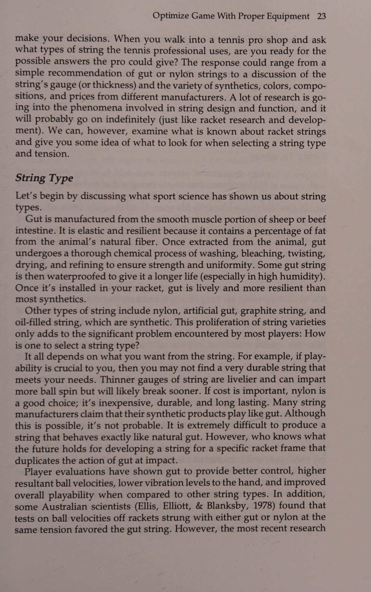
Nhiều vận động viên chạy trong nghiên cứu của chúng tôi đã sử dụng bước trọng lực để tăng tốc về phía đế thứ hai. Trên thực tế, sau khi nghiên cứu hoàn thành, kết quả rất rõ ràng: Những người chạy cơ bản nhanh nhất đã sử dụng sự kết hợp của cả cú đâm và cú chéo. Đầu tiên, họ đẩy chân phải sang một bên rồi kéo xuống dưới đất trong khi đồng thời di chuyển bằng chân trái, chân này ngay lập tức vượt qua để thực hiện hành động chạy nước rút. Tuy nhiên, hãy nhớ rằng người chạy đế biết rằng anh ta phải chạy hết tốc lực về phía đế tiếp theo. Tay vợt quần vợt sẽ học cách tự nhiên để làm điều này. Đây là cách tôi cảm thấy tay vợt quần vợt nên học cách di chuyển: Jab bằng chân gần nhất với vị trí bóng hướng tới, sau đó vượt qua để chạy nước rút.
Many of the runners in our study used a gravity step to accelerate toward second base. In fact, once the study was completed, the results were obvious: The fastest base runners used a combination of both the jab and crossover. They first jabbed the right foot out to the side and then pulled it under to ‘‘paw” the ground while simultaneously driving with the left leg, which immediately crossed over to assume the sprinting action. Bear in mind, however, that a base runner knows he must sprint full out toward the next base. Tennis players will naturally learn to do this. This is how I feel tennis players should learn to move: Jab with the foot closest to where the ball is headed, and then cross over to sprint.
Đúng, có thể bước trọng lực sẽ nhanh hơn đối với một số người, nhưng tôi thực sự cảm thấy rằng tay vợt phải học cách di chuyển bằng cách đâm và sau đó băng qua giống như người chạy cơ bản.
Yes, it’s possible that the gravity step will be faster for some, but I truly feel that players must learn to move by jabbing and then crossing over just like the base runner. Dr.
Mẹo chơi quần vợt của Tiến sĩ Jack Một gợi ý bạn có thể sử dụng để cải thiện chuyển động của mình là 'Sẵn sàng, đọc, phản ứng!'' Hãy đảm bảo rằng bạn luôn sẵn sàng khi đối thủ bắt đầu đánh bóng; sau đó ngay lập tức tập trung vào quả bóng và đọc những gì đã xảy ra trong quá trình đối phương tiếp xúc với bóng; và cuối cùng, phản ứng để di chuyển. Giả vờ như đôi chân của bạn có tính đàn hồi và có cảm giác bùng nổ. Việc đào tạo nâng cao nhận thức này đã giúp ích rất nhiều cho tay vợt trong quá trình di chuyển trên sân của họ. Trên thực tế, đó chính là gợi ý được sử dụng để giúp các tay vợt trong đội cú bắt lưới (Volley) Olympic Hoa Kỳ năm 1988 khi họ chuẩn bị đánh trả cú đánh của đối thủ.
Jack’s Tennis Tips A cue you can use to improve your movement is ‘Ready, read, react! Make sure you are always ready as the opponent begins to hit the ball; then immediately focus on the ball and read what has happened during the opponent's contact with the ball; and finally, react to move. Pretend your legs are elastic and have the feeling of explosiveness. This awareness training has helped a lot of players in their on-court movement. In fact, it was the same cue used to help the players on the 1988 U.S. Olympic volleyball team as they prepared to return an opponent's spike.
48 Quần vợt công nghệ cao Đánh trên đường chạy Tay vợt có kỹ năng phải có khả năng đánh một cú trên đường chạy. Mặc dù bản thân nó đã làm hài lòng đám đông nhưng việc chạy hết tốc lực và đánh một cú chuyền dọc để giành chiến thắng rõ ràng cũng là một trong những cảm giác phấn khích nhất trong môn quần vợt. Tuy nhiên, ngay cả khi rất ly kỳ, cú đánh đó phải là một trong những cú đánh khó nhất trong quần vợt vì động tác bằng chân, vị trí cơ thể, thời gian và công việc của vợt cần thiết để thành công.
Hitting on the Run Skilled players must be able to hit a shot on the run. While being a crowd pleaser in itself, it is also one of the most exhilarating feelings in tennis to be running full tilt and hit a down-the-line passing shot for a clear winner. However, even as thrilling as it is, that shot has to be one of the toughest in tennis because of the footwork, body positioning, timing, and racket work necessary to make it successful.
Điểm mấu chốt cần nhớ khi đánh trên đường chạy là phải cân bằng nhất có thể. Đôi khi rất khó để làm chủ được sự ổn định của cơ thể, đặc biệt nếu bạn không quen với những cú đánh ngắn hoặc góc cạnh của đối thủ. Trong những tình huống như thế này, việc chạy trốn là điều bắt buộc và sự cân bằng là điều tay vợt ít lo lắng nhất. Tuy nhiên, nhiều cú đánh khi đang chạy là không cần thiết; điều này có thể xảy ra do sự lười biếng, chọn thời điểm kém, phán đoán bóng không chính xác khỏi vợt đối phương hoặc chỉ vì muốn đánh để làm hài lòng đám đông. Khi bạn quan sát một tay vợt dường như đánh được rất nhiều bóng trong khi chạy nước rút, hãy chú ý đến vị trí cơ thể và động tác chân của anh ta hoặc cô ta. Động tác bằng chân có thể hơi lười biếng, thậm chí là chuyển động chậm khi bắt đầu chuyển động về phía bóng. Sau đó, khi quả bóng tiến gần đến nơi sẽ tiếp xúc, tay vợt đột ngột tăng tốc và cuối cùng lảo đảo trước quả bóng. Những tay vợt làm điều này đang tính toán thời gian của cơ thể chứ không phải cú đánh của họ đến vị trí tiếp xúc với bóng, khiến cho một cú đánh cân bằng gần như không thể thực hiện được. Điều này gây ra cú swing vội vã, chật chội và thường mang lại kết quả không tốt. Để ngăn chặn (hoặc khắc phục) vấn đề này, bạn cần phải đến vị trí trên sân nơi bóng sẽ chạm nhẹ trước khi bóng đến. Khi bạn đến địa điểm tiếp xúc bóng sớm, bạn sẽ dễ dàng đạt được sự cân bằng trên cơ thể, thời gian và độ chính xác của cú đánh.
The key point to remember about hitting on the run is to be as balanced as possible. Sometimes body stability is very difficult to master, especially if you are not accustomed to your opponent's hitting short or angled shots. In situations like this, hitting on the run is a must and balance is the least of a player’s worries. However, many shots hit on the run aren’t necessary; this may happen because of laziness, poor timing, inaccurate judgment of the ball off the opponent’s racket, or just the desire to hit a crowd pleaser. When you watch a player who seems to be hitting a great number of balls while sprinting, watch his or her body positioning and footwork. The footwork might be a little lazy, even slow motion, at the start of the movement toward the ball. Then, as the ball gets closer to where contact will occur, the player suddenly accelerates and ends up lurching at the ball. Players who do this are timing their bodies, not their strokes, to the position of ball contact, making a balanced shot almost impossible. This causes a hurried, cramped swing that often has poor results. To prevent (or correct) this problem, you need to get to the court position where the ball will be hit slightly before the ball arrives. When you arrive early at the site of ball contact, you will more easily achieve upper body balance, timing, and accuracy of the stroke.
Nếu bạn phải đánh một quả bóng trên đường chạy, bạn nên đánh nó như thế nào cho đúng?
If you have to hit a ball on the run, how should you get to it properly?
Nhiều tay vợt có thể trả lời, Chạy hết sức có thể (và đôi khi đó chính xác là những gì bạn phải làm)! Tuy nhiên, hãy cố gắng hết sức, một số tay vợt không biết cách chạy đúng khi cầm vợt trên tay. Ví dụ, nhiều tay vợt quần vợt cảm thấy họ phải cầm vợt chạy về phía sau để chuẩn bị vung vợt. Nếu bạn đang ở giai đoạn đầu của quá trình học cách di chuyển bằng vợt, có thể bạn sẽ phải chạy với vợt về phía sau, nhưng nếu bạn đã vượt quá giai đoạn đó thì hãy quên nó đi! Cơ thể con người không được thiết kế để chạy với cánh tay duỗi về phía sau khi cầm vợt. Nó khiến bạn chậm ít nhất gấp đôi.
Many players might answer, Run as hard as you can (and sometimes that’s exactly what you have to do)! However, try as they might, some players don’t know how to run correctly when they have rackets in their hands. For example, many tennis players feel they must run with the rackets back in preparation to swing. If you are in the early stages of learning to move with your racket, maybe you will have to run with the racket back, but if you’re beyond that stage, forget it! The human body was not made to run with the arm extended backward while holding a racket. It causes you to be at least twice as slow.
Một huấn luyện viên điền kinh nổi tiếng đã từng nói với tôi rằng những vận động viên chạy nước rút chỉ nhanh ở mức mà cánh tay của họ cho phép. Về cơ bản, cánh tay phải bơm mạnh như chân để giúp tay vợt tăng tốc. Hành động của cánh tay này giúp phối hợp hành động nhanh chóng của chân. Tay cầm vợt có thể được giữ chặt giống như khi không có vợt trong tay. Chỉ cần cẩn thận rằng khi bạn bắt đầu bơm cánh tay vợt của mình để giúp tăng tốc bản thân, bạn sẽ không bị vợt đập vào đầu!
A well-known track coach once told me that sprinters were only as fast as their arms would let them be. Basically, the arms must pump just as hard as the legs to help the player accelerate. This arm action assists in coordinating the quick action of the legs. The racket arm can be held in close just the same as if there were no racket in the hand. Just be careful that when you begin pumping your racket arm to help accelerate yourself, you don’t crack yourself in the head with your racket!
Động tác bằng chân là tên của trò chơi Xoay vợt khi đang chạy Chìa khóa để chạy với vợt là biết khi nào nên bắt đầu vung vợt về phía sau. Nhiều tay vợt gặp phải tình trạng rối loạn chức năng hoàn toàn khi cố gắng kết hợp tất cả các chuyển động này. Để cân bằng nhất, các chi đối diện của bạn (ví dụ: chân trái và tay phải) phải di chuyển đồng bộ. Hình ảnh chạy nước rút sang một bên để thực hiện cú đánh thuận tay dọc theo đường biên. Cố gắng chạy về phía trước một chút, như tay vợt trong Hình 3.6 minh họa. Bằng cách chạy về phía trước, bạn sẽ có động lượng tuyến tính (Linear Momentum) về phía trước về phía điểm va chạm (nếu bạn di chuyển trực tiếp sang một bên, toàn bộ động lượng của bạn sẽ sang một bên và nếu bạn di chuyển về phía sau, toàn bộ động lượng của bạn cũng sẽ lùi lại).
Swinging the Racket When on the Run The key to running with the racket is knowing when to initiate the backswing. Many players go through total dysfunction when trying to combine all these movements. To be the most balanced, your opposing limbs (e.g., left leg and right arm) should move in synchrony, Picture sprinting to the side for a forehand passing shot down the line. Try to run slightly forward, as the player in Figure 3.6 demonstrates. By running forward, you will have forward linear momentum toward the point of impact (if you move directly to the side, all of your momentum is to the side and if you move backward, all of your momentum is backward as well).
Trong khi sải bước, khi chân của bạn gần bóng nhất tiếp xúc với sân (chân trái đối với tay vợt thuận tay phải), cánh tay cầm vợt của bạn sẽ bắt đầu di chuyển về phía sau để tạo thành cú vung vợt hơi tròn về phía sau. Cú vung tiếp tục và khi chân sau đẩy lên khỏi mặt đất (chân phải đối với tay vợt thuận tay phải), hông và thân xoay nhẹ, truyền lực từ SS c d Hình 3.6 Tay vợt này hướng dẫn cách tính thời gian cho cú đánh của bạn đến điểm va chạm.
During your stride, as your foot nearest the ball contacts the court (the left foot for a right-handed player), your racket arm should begin moving backward into its slightly circular backswing. The swing continues and as the hind foot pushes off the ground (the right foot for a right-handed player), the hips and trunk rotate slightly, transferring force from the Figure 3.6 This player shows how to time your stroke to the point of impact.
Hãy chú ý ở phần (d) cách anh ấy được 'chuẩn bị'' và giữ thăng bằng cho cú vung về phía trước. 50 High Tech Tennis tiếp đất tới tay vợt để tiếp xúc bóng hiệu quả ở phía trước cơ thể.
Notice in (d) how he is ’set” and balanced for the forward swing. ground out to the racket arm for an effective ball contact well in front of the body. Dr. Jack’s Tennis Tips
Lời khuyên về quần vợt của Tiến sĩ Jack Đôi khi bạn không đo được khoảng cách giữa cơ thể và bóng một cách chính xác. Khi điều này xảy ra, hãy thử bước đi lắp bắp khi bạn đến gần quả bóng. Bước đi lắp bắp này sẽ giúp bạn kiểm soát được cơ thể vào vị trí một cách hiệu quả nhất.
Sometimes you won't gauge the distance between your body and the ball properly. When this happens, try stutter stepping as you near the ball. This stutter stepping will enable you to gain control of your body and get into position the most efficient way.
Rõ ràng có nhiều cách khác để đánh bóng trên đường chạy, nhưng kỹ thuật này cho phép sử dụng toàn bộ động lượng tuyến tính (Linear Momentum) và góc. Thời điểm cho một số cú đánh nhất định có thể không cho phép sự phối hợp chuyển động này, nhưng nếu thời gian và vị trí cơ thể cho phép thì phương pháp này là hiệu quả nhất.
There are obviously other ways to hit a ball on the run, but this technique allows for total use of the linear and angular momentum. The timing for certain shots may not permit this movement coordination either, but if time and body position allow, this method is the most efficient. Dr. Jack’s Tennis Tips
Mẹo chơi tennis của Tiến sĩ Jack Khi di chuyển để đánh bóng (đặc biệt là cú đánh chuyền), hãy cố gắng cắt bóng bằng cách di chuyển nhẹ về phía trước. Điều này cho phép bạn có động lượng tuyến tính (Linear Momentum) về phía trước và có nghĩa là bạn sẽ không phải vung vợt quá mạnh để thực hiện cú đánh. Ngoài ra, hãy đảm bảo kiểm soát được phần thân trên của bạn khi bắt đầu cú swing trên đường chạy.
When moving to hit a ball (especially a passing shot), try to cut the ball off by moving slightly forward. This enables you to have forward linear momentum and means you will not have to swing as forcefully to hit the shot. Also, be sure to keep your upper body under control when initiating your swing on the run. Returning a Ball Hit Right at You
Trả lại một quả bóng trúng ngay vào bạn Cũng giống như một số người gặp khó khăn khi đánh trên đường chạy, những người khác dường như có nỗi ám ảnh về những quả bóng bay thẳng vào họ. Họ thường hoảng sợ vì không biết phải làm gì. Điều này xảy ra thường xuyên nhất ở cấp độ bắt đầu chơi quần vợt, nhưng nó cũng có thể được thấy ở cấp độ kỹ năng. Người mới bắt đầu hoặc người mới bắt đầu nâng cao có thể ở đường cuối sân (với đối thủ cũng ở đường cuối sân cách đó ít nhất 78 feet) và nhìn thấy bóng di chuyển về phía mình. Thay vì thoát ra khỏi đường bay của bóng, tay vợt vẫn đứng yên và cuối cùng hất vợt về phía trước cơ thể chỉ để cố gắng giữ bóng trong cuộc. Tình huống xấu hổ này là kết quả của việc kém tập trung hoặc động tác chân kém. Khi một tay vợt có kỹ năng bị bóng cản trở, nguyên nhân thường là do kém tập trung hoặc đơn giản là do lười chuẩn bị cho cú đánh.
Just as some people have trouble hitting on the run, others seem to have a phobia for balls coming right at them. They often panic because they don’t know what to do. This occurs most often at the beginning level of tennis, but it can also be seen at the skilled level. A beginner or advanced beginner can be at the baseline (with the opponent also at the baseline at least 78 feet away) and see the ball traveling toward him or her. Instead of getting out of the ball’s flight path, the player stays put and ends up scooping the racket in front of the body just trying to keep the ball in play. This embarrassing situation is the result of either poor concentration or poor footwork. When a skilled player gets jammed by a ball, it’s usually caused by poor concentration or simply laziness in preparing for the shot.
Động tác bằng chân là tên của trò chơi Bất kể lý do khiến cú sút của đối phương bị cản trở là gì, có một triết lý đơn giản luôn có hiệu quả—tránh ra!
Regardless of the reason for getting jammed by an opponent's shot, there is a simple philosophy that works all the time—get out of the way!
Điều này nghe có vẻ đơn giản—và có lẽ buồn cười—nhưng điều đó đúng. Những người chuyên nghiệp thường là người giỏi nhất trong việc tránh xa những quả bóng đang đến gần. Động tác bằng chân của họ không nhất thiết phải liên tục (nói cách khác, họ không phải lúc nào cũng nhảy lung tung) nhưng khi đối thủ chuẩn bị tung cú sút, họ sẵn sàng lao tới. Ngay khi nhận ra bóng đang hướng về phía mình, họ sẽ ngay lập tức di chuyển sang một bên vào vị trí để thực hiện cú đánh của mình. Khi di chuyển sang một bên, họ giữ trọng tâm trên chân để giữ thăng bằng nhằm thực hiện các cú trả bóng có kiểm soát.
As simplistic—and probably ridiculous—as this sounds, it’s true. The pros are usually the best at moving away from approaching balls. Their footwork is not necessarily continuous (in other words, they’re not jumping around all the time) but as their opponents prepare to hit the shot, they are ready to pounce. As soon as they recognize the ball heading toward them, they will immediately move to the side into position for their own strokes. As they move to the side, they keep their centers of gravity over their feet to stay balanced to hit controlled returns. This is where less skilled players can get into trouble.
Đây là lúc những tay vợt kém kỹ năng hơn có thể gặp rắc rối. Biết cách di chuyển sang một bên bao xa là rất quan trọng. Nếu chuyển động quá xa vị trí đánh bóng, tay vợt sẽ luôn bị căng, và nếu chuyển động không đủ xa thì cú xoay sẽ bị chật chội. Kinh nghiệm di chuyển khỏi bóng rất quan trọng nhưng không cần phải luyện tập quá nhiều để học được động tác thích hợp. Vấn đề thường là tập trung vào những gì bạn phải làm trong vài lần đầu tiên, luyện tập thêm vài lần nữa khi bạn đã thành thạo và sau đó sử dụng nó trong cuộc thi.
Knowing how far to move to the side is crucial. If the movement is too far away from where the ball will be hit, the player is always stretching, and if the movement isn’t far enough, the swing will be cramped. Experience at moving away from the ball is important, but it doesn’t take too much practice to learn the proper action. It’s usually a matter of focusing on what you must do the first few times, practicing it several more times once you've got it down, and then using it in competition. Recovery After a Shot
Phục hồi sau cú đánh Thường thì bạn sẽ thấy mình đánh trả một quả bóng đã đưa bạn ra ngoài ranh giới sân. Ngay cả khi việc quay lại chỉ đưa bạn đến một trong các bên lề, bạn vẫn phải phục hồi để đạt được vị trí chiến lược trên sân. Bước phục hồi này rất quan trọng đối với việc phát triển phạm vi bảo hiểm tại tòa của bạn. Một vấn đề mà nhiều vận động viên gặp phải là họ quá tập trung vào việc quay trở lại vị trí sân chiến lược đến mức đánh không tốt.
Often you will find yourself returning a ball that has taken you outside the court boundaries. Even if the return only takes you to one of the sidelines, you have to recover toward a strategic court position. This recovery step is vital to the development of your on-court coverage. A problem encountered by many athletes is that they focus so hard on returning to a strategic court position that they don’t hit the shot well.
Trên thực tế, có thể thấy một số tay vợt đang hồi phục trước khi họ đánh bóng!
In fact, some players can be seen recovering before they hit the ball!
Mục tiêu đầu tiên của bạn là đánh bóng tốt. Khi bạn đã đảm bảo được tác động vững chắc thì hãy phục hồi. Ví dụ, cơ thể bạn phải được kiểm soát tốt khi tiếp xúc với bóng. Không nên có chuyển động bên ngoài nào có thể cản trở cú đánh. Bây giờ bạn có thể vuông góc với mạng và bắt đầu khôi phục.
Your first goal is to hit the ball well. Once you’ve ensured a solid impact, then recover. For example, your body should be well controlled at ball contact. There should be no extraneous movement that might hamper the stroke. Now you can square around to the net and begin recovering.
Ví dụ: sau khi một đấu thủ đánh một cú thuận tay mạnh mẽ, người ta thường thấy chân chạy xoay quanh để vuông góc cơ thể của vận động viên với lưới.
After a player hits an aggressive forehand, for example, it’s common to see the trail leg rotate around to square the athlete’s body to the net.
Tay vợt ngay lập tức phanh lại bằng cách đặt chân đường mòn và đẩy ra để quay trở lại vị trí sân chiến lược (lưu ý rằng tôi không nói rằng tay vợt luôn quay trở lại giữa vạch cuối sân, bởi vì thực tế là đôi khi không thể quay trở lại giữa sân). Khi bạn chắc chắn rằng cú đánh của mình sẽ được hoặc đã được đánh với khả năng kiểm soát tối đa, bạn có thể xoay chân đường của mình xung quanh và đẩy lùi về phía trung tâm (Hình 3.7). Nếu bạn không thể quay trở lại giữa sân, hãy đảm bảo đối đầu với đối thủ trước khi họ thực hiện 52 Quần vợt công nghệ cao Hình 3.7 Jennifer Capriati trình bày kiểu đánh trong đó cần thực hiện bước phục hồi. Bàn chân phải của cô ấy sẽ xoay người sau khi tiếp xúc với bóng, chống lại sân và đẩy ra để giúp cô ấy có được vị trí chiến lược trên sân. tiếp xúc với bóng. Nếu bạn vẫn đang hướng về phía giữa đường cuối sân khi bóng được tiếp xúc, bạn sẽ dễ dàng bị bóng đánh phía sau.
The player immediately brakes by planting the trail leg and pushes off to return toward a strategic court position (notice I did not say the player always returns to the middle of the baseline, because the fact remains that sometimes it’s impossible to get all the way back to the center of the court). Once you are sure your shot will be or has been hit with maximum control, you can swing your trail leg around and push off back toward the center (Figure 3.7). If you cannot make it back to the center of the court, be sure to square off to the opponent before he or she makes Figure 3.7 Jennifer Capriati demonstrates the type of shot where a recovery step should be performed. Her right foot will swing around after ball contact, plant against the court and push off to help her gain a strategic court position. contact with the ball. If you’re still heading toward the center of the baseline when the ball is contacted, you are easy prey to a ball hit behind you. Dr. Jack’s Tennis Tips
Mẹo chơi quần vợt của Tiến sĩ Jack Hãy nhớ rằng khi bạn đang hồi phục về vị trí sân chiến lược và ngay trước khi đối thủ vung vợt, hãy lao thẳng về phía đối thủ để bạn có thể lấy lại quả bóng đã đánh phía sau bạn. Nhờ vào đà của bạn, bạn sẽ dễ dàng tiếp tục chạy về phía giữa đường cuối sân, nhưng nếu bạn đang đi theo hướng đó và bóng đánh về phía sau bạn, điểm sẽ nghiêng về đối thủ của bạn!
Remember that when you are recovering to a strategic court position, and just before the opponent swings at the ball, square off to the opponent so you can retrieve a ball hit behind you. Because of your momentum it will be easy to continue running toward the center of the baseline, but if you’re headed that way and the ball is hit behind you, the point is over in favor of your opponent!
Các cú đánh trên mặt đất ở thế mở và đóng Nhiều tay vợt không cần lo lắng về bước phục hồi vì chúng thường đã mở sẵn khi đánh bóng. Có nhiều giả thuyết, cả tích cực lẫn tiêu cực, về các cú đánh tiếp đất ở tư thế mở.
Open- and Closed-Stance Ground Strokes Many players don’t need to worry about a recovery step because they are often already opened up when they hit the ball.
Theo quy định, không có gì sai với một cú đánh ở tư thế mở, miễn là tay vợt có thời gian chuẩn bị và đánh bóng chính xác. Tuy nhiên, chỉ một số cú đánh nhất định mới cho phép sử dụng thế đứng mở. Ví dụ, bạn có bao giờ thắc mắc tại sao cú thuận tay lại thường được đánh với tư thế mở không?
There are many theories, both positive and negative, about open-stance ground strokes. As a rule, there’s nothing wrong with an open-stance stroke, provided the player has time to get set and hit the ball correctly. Only certain strokes, however, allow usage of an open stance.
Footwork Is the Name of the Game _ Bạn có thường xuyên thấy một cú đánh trái tay bằng một tay từ thế đứng mở không?
For example, have you ever wondered why the forehand is so often hit with an open stance?
Hãy phân tích những nét vẽ khác nhau này để xác định một số câu trả lời.
How often do you see a one-handed backhand hit from an open stance?
Nếu một đấu thủ thuận tay phải đứng quay mặt vào lưới chờ cú đánh của đối phương và đối phương đánh bóng về phía thuận tay của mình, thì đấu thủ đó chỉ có thể bước sang một bên, xoay người và vung vợt, do đó có tư thế thuận tay mở. Sẽ có rất ít sự chuyển dịch trọng lượng cơ thể về phía trước; chỉ có việc xoay cơ thể mới cho phép vận động viên thực hiện động tác vung vợt ra sau vừa đủ và vung vợt hiệu quả. Điều này sẽ được thảo luận sâu hơn trong chương tiếp theo.
Let’s analyze these various ground strokes to determine some answers. If a right-handed player stands facing the net awaiting the opponent's shot and the opponent strikes a ball toward his or her forehand side, the player may only have to sidestep, rotate the body, and swing, hence the open-stance forehand. There will be little transfer of body weight forward; only body rotation will allow the athlete to take a sufficient backswing and swing effectively.
Tuy nhiên, hiếm khi bạn thấy một cú đánh trái tay bằng một tay từ thế đứng mở. Nếu bóng được đánh về phía trái tay của tay vợt, vợt sẽ ở bên thân đối diện với vị trí của bóng. Vì vậy, tay vợt phải vươn người ngang người để chuẩn bị vợt cho cú đánh trả. Hãy tưởng tượng những chuyển động mà một tay vợt sẽ phải trải qua để bước sang một bên về phía quả bóng và đánh một cú trái tay bằng một tay ở tư thế mở.
This will be discussed in depth in the next chapter. However, seldom will you see a one-handed backhand hit from an open stance. If a ball is hit to the player’s backhand side, the racket is on the side of the body opposite the position of the ball. Therefore, the player must reach across his or her body to prepare the racket for the return.
Vì vậy, tôi khuyên bạn nên sử dụng cú trái tay chính thống, thế đứng khép kín, bằng một tay như trong Hình 3.8. Như có thể thấy rõ, động tác chân tốt là điều cần thiết để định vị cơ thể bạn sang một bên phù hợp cho cú đánh.
Imagine the contortions a player would have to go through to sidestep toward the ball and hit an open-stance, one-handed backhand. Therefore, I recommend you use the orthodox, closed-stance, onehanded backhand seen in Figure 3.8.
Động tác bằng chân cũng cần thiết để thực hiện cú đánh trái tay bằng hai tay thành công, nhưng đối với người đánh hai tay ở tư thế mở thì sao? Bạn thực sự sẽ thấy những cú đánh trái tay bằng hai tay ở tư thế cởi mở hơn so với những cú đánh bằng một tay, nhưng tại sao? Một lý do có thể đến từ một số tài liệu huấn luyện của những năm 1970, thời điểm mà trái tay bằng hai tay trở nên rất phổ biến. Nhiều tác giả Hình 3.8 Tay vợt này thể hiện các động tác thích hợp khi đánh một cú công bóng trái tay bằng một tay hiệu quả.
As may be evident, good footwork is essential to adequately position your body sideways for the stroke. Footwork is also necessary for a successful two-handed backhand, but what about an open-stance two-hander? You will actually see more openstance, two-handed backhands than one-handers, but why? One reason may come from some of the coaching literature of the 1970s, a time when the two-handed backhand became so popular. Many of the authors
54 High Tech Tennis gọi trái tay bằng hai tay (của tay vợt thuận tay phải) tương tự như đánh thuận tay trái. Họ ngụ ý rằng vì tay trái đặt gần mặt vợt hơn nên hai tay quan trọng hơn. Cho dù bạn có tin lý do này hay không, nó có thể giúp giải thích khả năng đánh trái tay bằng hai tay với tư thế cởi mở. Nói rằng cú đánh giống như cú thuận tay trái (của tay vợt thuận tay phải) ngụ ý rằng việc xoay vai (để đưa tay trái đi vòng) là yếu tố tạo ra lực chủ yếu để vung vợt. Điều đó có nghĩa là cơ thể có thể mở để vung vợt miễn là tay phải vẫn cầm vợt như một tác nhân tạo lực nhỏ và để kiểm soát vợt bổ sung. Một tay vợt hai tay hiệu quả có thể được đánh nên có vẻ như cú đánh được đánh với tư thế mở. Như bạn có thể thấy trong Hình 3.9, một số tay vợt sẽ chuẩn bị vung vợt ở tư thế nửa mở (bước nhiều hơn về phía lưới thay vì trực tiếp về phía bóng), và khi họ bắt đầu vung vợt, thân của họ sẽ xoay về phía bóng cùng với một bước phục hồi, điều này khiến có vẻ như tay vợt đã thực sự vung vợt với tư thế hoàn toàn mở.
Figure 3.8 This tennis player demonstrates the proper movements when hitting an effective one-handed backhand drive. referred to the two-handed backhand (of a right-handed player) as being similar to hitting a left-handed forehand. They implied that because the left hand is placed closer to the racket face, it is the more important of the two hands. Whether you believe this rationale or not, it may help to explain the possibility of hitting the two-handed backhand with an open stance. Saying that the stroke resembles a left-handed forehand (of a right-handed player) implies that shoulder rotation (to bring the left hand around) is the dominant producer of force to swing the racket. That would mean that the body could be open to swing the racket as long as the right hand was still holding the racket as a minor producer of force and for additional racket control. An effective two-hander can be hit so it looks like the stroke is hit with an open stance.
Cho dù bạn nghĩ cú đánh tiếp đất ở tư thế mở có độc đáo hay ngoạn mục đến đâu, hầu hết tay vợt nên luôn cố gắng vào vị trí càng nhanh càng tốt và bước vào cú đánh. Phương pháp này giúp cải thiện động tác bằng chân và giúp tay vợt đánh bóng kiểm soát tốt hơn. Tay vợt bước vào cú đánh cũng sẽ có thể tiếp cận xa hơn với khả năng kiểm soát tốt hơn; tay vợt sử dụng cú đánh ở tư thế mở phải đến gần bóng hơn một chút để có tác động hiệu quả hoặc di chuyển nhanh hơn để vào vị trí cho Hình 3.9 Hình vẽ, lấy từ các bộ phim quay ở tốc độ 100 khung hình mỗi giây, cho thấy Bjorn Borg đã thực hiện cú đánh trái tay bằng hai tay ở tư thế nửa mở hiệu quả như thế nào rất tốt.
As you can see from Figure 3.9, some players will set up to swing in a half-open stance (stepping more toward the net instead of directly toward the ball), and as they initiate the swing, their trunks will rotate toward the ball along with a recovery step, which makes it seem like the player has actually swung with a completely open stance. No matter how unique or spectacular you think an open-stance ground stroke is, most players should always try to get into position as quickly as possible and step into the shot. This method helps to improve footwork and enables players to hit with better control. The player who steps into the shot will also be able to reach farther with more control; the player using the open-stance stroke must either get slightly closer to the ball for an effective impact or move quicker to get in position for the
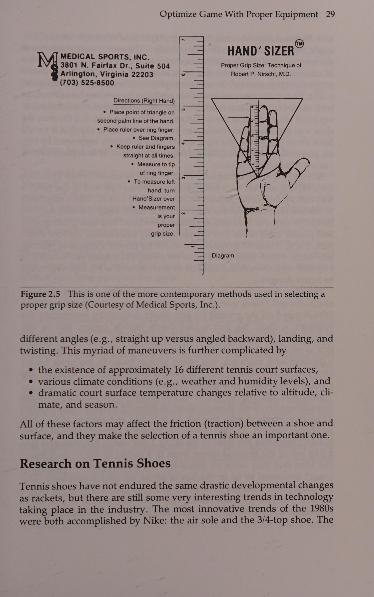
Động tác bằng chân là tên của trò chơi xoay người. Tuy nhiên, đôi khi không có thời gian để dừng lại và bắt tay vào cảnh quay; cú đánh ở tư thế mở có thể là tất cả những gì bạn có.
Figure 3.9 The figure drawing, taken from films shot at 100 frames per second, shows how Bjorn Borg hit his effective half-open stance two-handed backhand drive so well. Name of the Game swing.
Bất kể bạn thích chụp ở tư thế mở hay đóng, có một số điều cần nhớ khi thực hiện việc định vị cơ thể.
Sometimes, however, there isn’t time to stop and step into the shot; the open-stance shot may be all you have.
Khi chờ đợi cú đánh của đối phương, hãy cố gắng giữ cho đôi chân của bạn di chuyển để không bị bắt bằng chân bẹt. Tôi nói với các tay vợt của mình rằng hãy có "đôi chân vui vẻ" khi họ chuẩn bị cho cú trả bóng. Điều đó không có nghĩa là bạn nhảy xung quanh như một con thỏ rừng, nhưng khi đối thủ bắt đầu vung vợt về phía trước, hãy nhảy một bước rất ngắn để tập trung cơ chân của bạn để di chuyển theo bóng.
Regardless of whether you prefer open- or closed-stance shots, there are several things to remember when working on your body positioning. As you await the opponent's shot, try to keep your feet moving so you don’t get caught flat-footed. I tell my players to have ‘“happy feet” as they get prepared for a return. That doesn’t mean you jump around like a jackrabbit, but when the opponent begins his or her forward swing, take a very short hop to set your leg muscles for movement to the ball.
Cú nhảy này phải được căn thời gian sao cho bạn tiếp đất đúng lúc đối phương chạm bóng. Chuyển động đầu tiên của bạn sau đó phải là một đơn vị quay sang một bên. Nếu bạn không phải chạy nước rút để lấy bóng, hãy lê chân và chuẩn bị càng sớm càng tốt. Nếu bạn phải chạy nước rút về phía quả bóng, hãy cố gắng đến đó sớm để phần thân trên của bạn có thể ổn định nhất có thể. Tránh đánh khi đang chạy bất cứ khi nào bạn có thể.
This hop should be timed so that you land at exactly the same time the opponent hits the ball. Your first movement should then be a unit turn to the side. If you don’t have to sprint for the ball, shuffle your feet and get prepared as early as possible. If you must sprint toward the ball, try to get there early so your upper body can be as stable as possible. Avoid hitting on the run whenever you can.
Về việc đánh ở tư thế mở hay đóng, bạn có thể làm bất cứ điều gì bạn muốn. Tuy nhiên, hãy nhớ rằng hầu hết tay vợt đánh từ tư thế mở không làm như vậy vì nó có thể hiệu quả hơn mà đơn giản vì họ lười biếng. Để giúp bạn di chuyển, tôi sẽ chia sẻ một số bài tập di chuyển mà chúng tôi sử dụng với các tay vợt của mình tại Quần vợt Quốc tế Harry Hopman/Saddlebrook.
As far as hitting with an open or closed stance, you can do whatever you want. Remember, however, that most players who hit from an open stance don’t do so because it might be more effective, but simply because they’re lazy. To help you with your movement, I’ll share some of the movement drills we use with our players at Harry Hopman/Saddlebrook International Tennis.
Cách cải thiện khả năng di chuyển của bạn Bạn có thể sử dụng nhiều bài tập để cải thiện khả năng di chuyển trên sân của mình.
How to Improve Your Movement You can use numerous drills that will improve your on-court movement.
Những bài tập này được thiết kế với sự hỗ trợ của đồng nghiệp của tôi, Mike Nishihara (trợ lý giám đốc phát triển thể thao và sức khỏe tại Saddlebrook Resort). Mike hướng dẫn các bài học vận động cho nhiều học sinh trong chương trình phát triển vận động viên tại Quần vợt Quốc tế Harry Hopman/Saddle-brook. Mặc dù tôi có thể hơi thiên vị nhưng chúng tôi đã đạt được thành công xuất sắc trong việc giúp đỡ tay vợt quần vợt về thời gian phản ứng, khả năng tăng tốc, tốc độ, sự nhanh nhẹn, cân bằng động và khả năng phối hợp.
These drills have been designed with the assistance of my colleague, Mike Nishihara (assistant director of sports and health development at Saddlebrook Resort). Mike conducts movement lessons for many students in the player development program at Harry Hopman/Saddlebrook International Tennis. Although I may be a bit biased, we have had excellent success in helping tennis players with response time, acceleration, speed, agility, dynamic balance, and coordination.
Chìa khóa thành công của những cuộc tập trận này là chúng tôi đã thiết kế chúng dành riêng cho quần vợt. Không có đèn, chuông hoặc còi để tay vợt phản hồi; quả bóng là gợi ý duy nhất chúng ta sử dụng như một tác nhân kích thích. Các chuyển động mà tôi sẽ mô tả được thiết kế dựa trên nghiên cứu của các đồng nghiệp của tôi hoặc của các nhà nghiên cứu Hoa Kỳ khác bên cạnh một số công việc được thực hiện bởi Liên đoàn Quần vợt Đức. Để giúp bạn hiểu lý do tại sao những bài tập này sẽ giúp bạn di chuyển tốt hơn trên sân, chúng tôi sẽ thảo luận về một số kết quả nghiên cứu này.
The key to the success of these drills is that we have designed them to be specific to tennis. There are no lights, bells, or whistles for the player to respond to; the ball is the only cue we use as a stimulus. The movements I will describe have been designed based on research by my colleagues or by other U.S. researchers in addition to some of the work done by the German Tennis Federation. To help you understand why these drills will enable you to move better on the court, we will discuss some of these research findings.
Khoảng cách trung bình di chuyển mỗi cú đánh trong cuộc thi giữa hai nam có kỹ năng là khoảng 2 mét trên sân cứng và 4 mét trên sân đất nện. Trong một trận đấu kéo dài hai set, những tay vợt này sẽ chạy tổng quãng đường là 1.648 mét (hơn 1 dặm một chút) và quãng đường này trải dài trong khoảng một giờ. Các thay đổi trong Quần vợt Công nghệ cao Định hướng 56 có thể dao động từ khoảng 4 đến 8 lần cho mỗi điểm, ngụ ý rằng trong thi đấu, một tay vợt có kỹ năng sẽ thay đổi hướng trong khoảng 1,4 đến 2,0 giây một lần.
The average distance moved per stroke in a competition between two skilled males is about 2 meters on hard court and 4 meters on clay. In a two-set match, these players will run a total distance of 1,648 meters (a little over 1 mile), and this is spread out over about an hour. Directional changes can range from about 4 to 8 times per point, implying that in competition a skilled player will change direction about every 1.4 to 2.0 seconds.
Những dữ liệu này đến từ các phân tích video về các trận đấu đơn thực tế diễn ra giữa hai vận động viên có trình độ cao. Người ta cho rằng dữ liệu thu được về các trận đấu của nam và nữ sẽ khác nhau đáng kể, nhưng tôi suy đoán rằng dữ liệu sẽ phản ánh những điểm tương đồng. Đúng, điểm trong một số trận đấu của nữ dài hơn so với điểm trong một số trận đấu của nam, nhưng tôi nghĩ số liệu thống kê về trận đấu thậm chí có thể bị sai lệch. Để chứng minh điều tôi muốn nói, hãy xem dữ liệu lấy từ trận chung kết nam và nữ từ năm 1988 của Hoa Kỳ.
These data come from video analyses of actual singles matches played between two skilled athletes. It’s arguable that data obtained on men’s and women’s matches would be drastically different, but I speculate that the data will reflect similarities. Yes, the points of some women’s matches are longer than those in some men’s matches, but I think the match statistics might even out. To demonstrate what I mean, take a look at the data taken from the men’s and women’s finals from the 1988 U.S. Open Tennis Tournament.
Giải quần vợt mở rộng.
Lendl Versus Wilander
Lendl Versus Wilander Tổng điểm = 325 Thời gian của trận đấu = 4 giờ, 54 phút Thời gian trung bình cho mỗi điểm = 12,2 giây Thời gian trung bình giữa các lần giao bóng = 12,1 giây Thời gian trung bình giữa các điểm = 28,3 giây Thời gian trung bình cho mỗi lần chuyển đổi = 128,2 giây* Phần trăm điểm trong dưới 10 giây = 59 phần trăm Điểm phần trăm trong 10 đến 20 giây = 22 phần trăm Điểm phần trăm trong nhiều hơn hơn 20 giây = 19 phần trăm Graf so với Sabatini Tổng điểm = 161 Thời gian của trận đấu = 1 giờ, 41 phút Thời gian trung bình mỗi điểm = 10,8 giây Thời gian trung bình giữa các lần giao bóng = 10,7 giây Thời gian trung bình giữa các điểm = 16,2 giây Thời gian trung bình mỗi lần thay đổi = 100,1 giây* Phần trăm điểm trong dưới 10 giây = 62 phần trăm Điểm phần trăm trong 10 đến 20 giây = 25 phần trăm Điểm phần trăm trong hơn 20 giây = 13 phần trăm (Số liệu thống kê trận đấu được in lại với sự cho phép của Dr. Jeff Chandler, nhà khoa học đã thu được những dữ liệu này.) *Người ta suy đoán rằng thời gian chuyển đổi lâu hơn 90 giây cho phép vì các tay vợt vẫn ngồi trên ghế của họ bên cạnh cho đến khi hết 90 giây.
Total points = 325 Time of match = 4 hours, 54 minutes Average time per point = 12.2 seconds Average time between serves = 12.1 seconds Average time between points = 28.3 seconds Average time per changeover = 128.2 seconds* Percent points in less than 10 seconds = 59 percent Percent points in 10 to 20 seconds = 22 percent Percent points in more than 20 seconds = 19 percent Graf Versus Sabatini Total points = 161 Time of match = 1 hour, 41 minutes Average time per point = 10.8 seconds Average time between serves = 10.7 seconds Average time between points = 16.2 seconds Average time per changeover = 100.1 seconds* Percent points in less than 10 seconds = 62 percent Percent points in 10 to 20 seconds = 25 percent Percent points in more than 20 seconds = 13 percent (Match statistics reprinted with permission of Dr. Jeff Chandler, the scientist who obtained these data.) *It is speculated that changeover times were longer than the allowed 90 seconds because the players remained seated in their chairs courtside until the 90 seconds elapsed.
Footwork Is the Name of the Game _ 57 Như bạn có thể thấy, số liệu thống kê về điểm là tương tự nhau mặc dù nam chơi lâu hơn và có lẽ họ đánh bóng mạnh hơn nữ.
As you can see, the point statistics are similar even though the men played longer and they probably hit the ball harder than did the women.
Với suy nghĩ này, tôi cảm thấy bất kỳ tay vợt quần vợt nào, bất kể giới tính, đều có thể hưởng lợi từ các bài tập vận động mà tôi đề xuất. Vui lòng không sử dụng những bài tập này để điều trị bệnh tim mạch - hãy phát triển nền tảng aerobic vững chắc trước khi thử những bài tập này. Và nếu bạn chưa bao giờ thực hiện các bài tập như thế này trước đây hoặc nếu bạn có bất kỳ lo ngại nào về việc thực hiện chúng, hãy tham khảo ý kiến bác sĩ về việc thực hiện chúng.
With this is mind, I feel any tennis player, regardless of gender, can benefit from the movement drills I recommend. Please don’t use these drills to get in cardiovascular condition—develop a solid aerobic foundation before trying these exercises. And if you have never done exercises like these before or if you have any concerns about doing them, consult your physician about doing them.
Khi bạn luyện tập các bài tập, hãy cố gắng mô phỏng các điểm và trận đấu của một trận đấu thực tế. Ví dụ: một điểm có thể kéo dài từ 5 giây (tôi nhận thấy nếu người thắng giao bóng bị đánh trúng, điểm đó sẽ kéo dài khoảng 0,5 giây) đến khoảng 25 hoặc 30 giây (đôi khi lâu hơn nhưng điều này rất hiếm). Một nghiên cứu cho thấy điểm trung bình trên sân đất nện giữa hai nam giới có kỹ năng là 10 giây; trên sân cứng là 5,2 giây và trên sân cỏ là 2,8 giây. Thời gian trung bình giữa các điểm thường từ 16 giây đến tối đa là 30 giây. Sau khi mô phỏng khoảng 10 hoặc 12 điểm, hãy nghỉ 90 giây sau các bài tập để mô phỏng sự chuyển đổi. Thực hiện các bài tập này hai lần một tuần trong khoảng 20 đến 30 phút. Thực hiện chúng thường xuyên hơn mức này không nhất thiết sẽ mang lại sự cải thiện nhanh hơn.
As you practice the drills, try to simulate the points and games of an actual match. For example, a point can last anywhere from 5 seconds (I realize if a service winner is hit, the point lasts about .5 seconds) to about 25 or 30 seconds (sometimes longer but this is rare). One study found that the average point on clay between two skilled males was 10 seconds; on hard court it was 5.2 seconds and on grass 2.8 seconds. The average time between points is usually from 16 seconds to a maximum of 30 seconds. After simulating about 10 or 12 points, take a 90-second break from the drills to simulate a changeover. Do these drills twice a week for approximately 20 to 30 minutes. Doing them more often than this will not necessarily bring faster improvement.
Bài tập di chuyển để bước chân nhanh hơn Dựa trên thông tin được trình bày cho đến nay, tôi cảm thấy có một số yếu tố cần xem xét sẽ giúp bạn trở thành một tay vợt nhanh hơn: ¢ bạn nhìn thấy bóng ra khỏi vợt đối phương tốt như thế nào, ¢ bạn xử lý tốc độ, hướng và độ xoáy của bóng nhanh như thế nào, ¢ bạn quyết định làm gì liên quan đến chuyển động và nhận thức chiều sâu tốt như thế nào, ¢ tín hiệu thần kinh truyền từ não đến cơ chân của bạn nhanh như thế nào (tôi biết không có nghiên cứu hiện tại nào cho phép tôi sẽ giúp bạn cải thiện yếu tố này!), và quan trọng nhất là ¢ bước đầu tiên của bạn!
Movement Drills for Quicker Footwork Based on the information presented so far, I feel there are several factors to consider that will make you a faster tennis player: ¢ how well you see the ball off the opponent’s racket, ¢ how quickly you process the ball’s speed, direction, and spin, ¢ how well you decide what to do relative to moving and depth perception, ¢ how fast the nerve signal passes from your brain to your leg muscles (I know of no current research that allows me to help you improve this factor!), and, most importantly, ¢ your first step!
Bởi vì khoảng cách trung bình bạn sẽ di chuyển trong một cú đánh là khoảng 4 mét, nên bước đầu tiên của bạn khi di chuyển đến bóng là rất quan trọng phải không? Đó là lý do tại sao chìa khóa của các bài tập động tác bằng chân này liên quan đến việc bạn di chuyển so với chuyển động của quả bóng ở bước đầu tiên.
Because the average distance you will move during a stroke is about 4 meters, doesn’t it make sense that your first step when moving to the ball is crucial? That’s why the keys to these footwork drills involve your moving relative to the ball’s motion with your first step.
Bài tập phản ứng bóng. Giống như bài tập lưng phòng thủ trong bóng đá mà bạn thấy trong phần khởi động trước trận đấu, bài tập này yêu cầu bạn phải phản ứng với chuyển động của bóng. Huấn luyện viên hoặc đối tác cầm bóng trong tầm nhìn rõ ràng (Hình 3.10).
Ball Reaction Drill. Just like the football defensive back drill you see in pregame warm-ups, this drill requires you to respond to the movement of the ball. A coach or partner holds the ball in clear vision (Figure 3.10).
Huấn luyện viên có thể di chuyển bóng theo bốn hướng khác nhau mà bạn phải đáp ứng. Nếu quả bóng di chuyển về phía bạn, bạn phải lùi lại; nếu bóng đi sang phải hoặc sang trái, bạn phải lộn ngang theo hướng của 58 High Tech Tennis. Hình 3.10 Huấn luyện viên giữ bóng cao và tốt trong tầm nhìn của bạn. Khi huấn luyện viên di chuyển bóng, bạn phải phản ứng theo hướng đó. quả bóng; và nếu bóng di chuyển ra xa bạn, bạn phải chạy nhanh về phía trước. Cố gắng thực hiện khoảng 4 lần trong số này, mỗi lần kéo dài khoảng 10 giây (thời gian trung bình cho mỗi điểm) và cách nhau khoảng 20 đến 25 giây giữa mỗi lần (thời gian trung bình giữa các điểm).
The coach can move the ball in four different directions, to which you must respond. If the ball moves toward you, you must backpedal; if the ball goes to the right or left, you must sideshuffle in the direction of the Figure 3.10 The coach holds the ball high and well in view of you. As the coach moves the ball, you must react in that direction. ball; and if the ball moves away from you, you must sprint forward. Try to do about four of these lasting about 10 seconds each (the average time per point) and have about 20 to 25 seconds between each one (the average time between points).
Bài tập tung và bắt. Huấn luyện viên hoặc đối tác đứng trước mặt bạn khoảng 8 đến 10 feet (Hình 3.11). Huấn luyện viên có thể nhẹ nhàng ném một quả bóng tennis sang hai bên, trước mặt bạn hoặc phía sau bạn. Bạn phải phản ứng và nổ tung với quả bóng, bắt nó (bằng một hoặc hai tay, tùy thuộc vào mức độ bạn muốn làm việc). Ngay khi bắt được bóng, hãy ném lại cho huấn luyện viên. Huấn luyện viên luôn để bóng trong tầm mắt của bạn, ngay lập tức ném bóng sang khu vực khác. Việc này duy trì trong khoảng 10 giây, sau đó bạn có 20 đến 25 giây để nghỉ trước khi thực hiện lại.
Toss-and-Catch Drill. The coach or partner stands about 8 to 10 feet in front of you (Figure 3.11). The coach can gently toss a tennis ball to either side of you, in front of you, or behind you. You must react and explode to the ball, catching it (either with one hand or two, depending on how hard you want to work). Immediately upon catching the ball, toss it back to the coach. The coach, always keeping the ball in your sight, immediately tosses the ball to another area. This keeps up for about 10 seconds, then you have 20 to 25 seconds to rest before doing it again.
Thực hiện bài tập này khoảng 4 lần, hãy nhớ rằng khoảng cách tối đa bạn nên chạy cho mỗi quả bóng là khoảng 4 mét.
Do this drill about 4 times, bearing in mind that the maximum distance you should run for each ball is about 4 meters.
Bài tập (Drill) cuộn và bắt.
Roll-and-Catch Drill.
Huấn luyện viên hoặc đối tác đứng trước mặt bạn khoảng 8 đến 10 feet (Hình 3.12). Huấn luyện viên lăn một quả bóng tennis sang hai bên hoặc nhẹ nhàng trước mặt bạn. Bạn phải phản ứng với quả bóng lăn, lao về phía quả bóng để bắt và ném lại cho huấn luyện viên. Khi nhận bóng, huấn luyện viên sẽ lăn bóng sang khu vực khác cách không quá 4 mét, luôn đảm bảo bóng nằm trong tầm nhìn của bạn. Một lần nữa, hãy thực hiện khoảng 4 trong số các động tác bằng chân này là tên của trò chơi. Hình 3.11 Huấn luyện viên có thể ném bóng ngắn, sâu hoặc sang một bên, buộc bạn phải phản ứng theo hướng đó và bắt bóng trước khi nó nảy lên.
The coach or partner stands about 8 to 10 feet in front of you (Figure 3.12). The coach rolls a tennis ball to either side of or softly in front of you. You must react to the rolling ball, exploding toward the ball to catch it and toss it back to the coach. Upon receiving it, the coach rolls the ball to another area no more than 4 meters away, always ensuring the ball is in your sight. Again, do about 4 of these Figure 3.11 The coach can toss the ball short, deep, or to either side, forcing you to react in that direction and catch the ball before it bounces.
Hình 3.12 Huấn luyện viên có thể lăn bóng sang một bên hoặc ngắn, buộc bạn phải phản ứng theo hướng đó để lấy bóng. kéo dài khoảng 10 giây mỗi lần với thời gian nghỉ từ 20 đến 25 giây ở giữa mỗi lần.
Figure 3.12 The coach can roll the ball to either side or short, forcing you to react in that direction to retrieve the ball. lasting about 10 seconds each with a 20- to 25-second rest in between each.
Bài tập (Drill) tung hoặc cuộn và bắt. Đây chỉ đơn giản là sự kết hợp của hai bài tập trước; Huấn luyện viên có thể ném bóng hoặc lăn bóng, do đó bạn phải phản ứng với một quả bóng đang bay hoặc một quả bóng trên bề mặt sân. Mọi thứ khác vẫn giữ nguyên như các cuộc tập trận trước.
Toss- or Roll-and-Catch Drill. This is simply a combination of the previous two drills; the coach can either toss the ball or roll it so you must respond to a ball in flight or one on the court’s surface. Everything else remains the same as the previous drills.
Mũi khoan lục giác. Bài tập (Drill) này sử dụng hình sáu cạnh có cạnh 24 inch và các góc bằng nhau giữa các cạnh (Hình 3.13). Hình lục giác cho phép tay vợt tập di chuyển theo nhiều hướng. Bắt đầu bên trong hình lục giác và theo lệnh '' sẵn sàng, đi! '' của huấn luyện viên hoặc đồng đội (người có đồng hồ bấm giờ), nhảy từ trong hình lục giác ra ngoài hình lục giác và quay lại vào trong, luôn tiếp đất bằng cả hai chân và tiếp tục chuyển động này quanh hình lục giác 3 lần nhanh nhất có thể mà không chạm vào một đường hoặc bỏ sót một chuyển động nào. Bạn chỉ cần làm điều này một vài lần nhưng hãy nhớ nghỉ 30 giây giữa các lần thử.
Hexagon Drill. This drill uses a six-sided figure with sides of 24 inches and equal angles between sides (Figure 3.13). The hexagon shape allows the player to practice moving in many directions. Begin inside the hexagon, and upon the command of ”ready, go!” by the coach or partner (who has a stopwatch), jump from inside the hexagon to outside the hexagon and back inside again, always landing on both feet, and continuing this motion around the hexagon 3 times as quickly as possible without touching a line or missing a movement. You only need to do this a couple of times but be sure to have 30 seconds of rest between trials.
Đây là một bài tập tuyệt vời về sự nhanh nhẹn, cân bằng động và phối hợp.
This is a great drill for agility, dynamic balance, and coordination.
Hình 3.13 Theo lệnh '' Sẵn sàng, đi!'', bạn phải nhảy từ bên trong hình lục giác ra bên ngoài và quay lại xung quanh hình lục giác 3 lần.
Figure 3.13 On the command of ‘‘Ready, go!” you must hop from inside the hexagon to outside and back in all the way around the hexagon 3 times.
Nhện chạy.
Spider Run.
Sân sau được thiết lập với các quả bóng tennis được đặt ở giao điểm của đường biên đơn và đường cuối sân, giao điểm của đường biên đơn và đường giao bóng, và giao điểm của đường giao bóng Footwork Is the Name of the Game và đường giao bóng trung tâm. Bắt đầu bằng một chân ở điểm giữa ở vạch cuối sân (Hình 3.14). Theo lệnh "sẵn sàng, đi!'' của huấn luyện viên hoặc đối tác, hãy chạy nhanh đến quả bóng ở phía sân deuce, nhặt nó lên và trả nó về điểm giữa. Ngay lập tức, chạy nhanh đến quả bóng tiếp theo theo hướng ngược chiều kim đồng hồ, nhặt tất cả các quả bóng và đặt chúng xuống điểm giữa. Vai trò của huấn luyện viên gồm có hai phần: di chuyển từng quả bóng ra khỏi đường đi khi nó được đặt ở điểm giữa và sử dụng đồng hồ bấm giờ để cung cấp cho bạn phản hồi về mức độ bạn làm tốt. Đừng làm điều này nữa hơn hai lần với thời gian nghỉ 30 giây giữa các lần chạy.
The backcourt is set up with tennis balls placed at the intersections of the singles sidelines and baseline, intersections of the singles sidelines and service line, and the intersection of the service line and center service line. Begin with one foot on the center mark at the baseline (Figure 3.14). On the command of “ready, go!” by the coach or partner, sprint to the ball on the deuce court side, pick it up, and return it to the center mark. Immediately, sprint to the next ball in a counterclockwise fashion, picking up all the balls and placing them down at the center mark. The coach’s role is twofold: to move each ball out of the Way as it is set down at the center mark and to use a stopwatch to give you feedback on how well you do. Do not do this more than twice with a 30-second rest between runs.
Hình 3.14 Theo lệnh ‘’Sẵn sàng, đi!’” bạn phải chạy nhanh về bên phải, nhặt bóng và đưa nó về vị trí ban đầu. Việc này tiếp tục theo chiều ngược chiều kim đồng hồ cho đến khi tất cả các quả bóng được tập hợp lại.
Figure 3.14 On the command of ‘’Ready, go!” you must sprint to the right, pick up the ball, and return it to the starting position. This continues in a counterclockwise fashion until all balls are gathered.
Ngõ Lunges và Hops.
Alley Lunges and Hops.
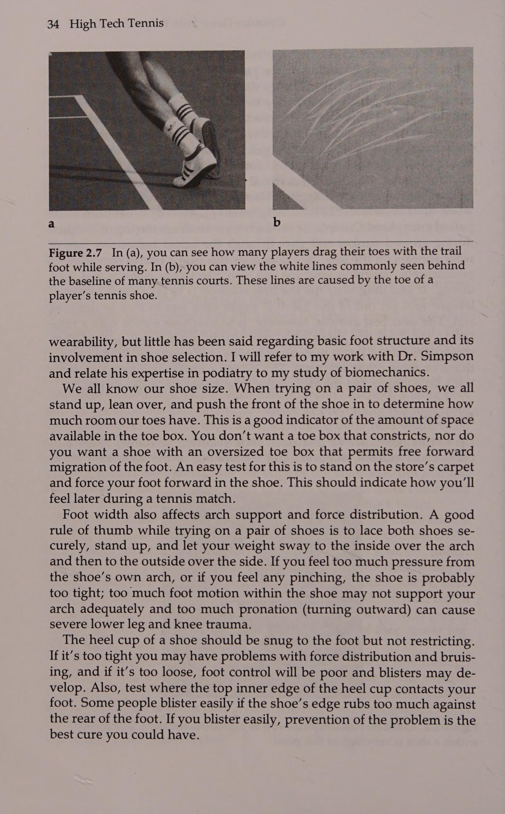
Những chuyển động này mô phỏng bước phục hồi.
These movements simulate the recovery step.
Đứng ở một bên con hẻm (Hình 3.15) và thực hiện 10 lần lao từ bên này sang bên kia con hẻm. (Đừng lo lắng nếu chân bạn ngắn - bạn không cần phải nhảy hoàn toàn ra ngoài các con hẻm.) 10 lần nhảy đầu tiên phải là những động tác lao mạnh mẽ nhưng vẫn được kiểm soát. Sau đó, nghỉ ít nhất 30 giây và thực hiện 10 lần nhảy từ bên này sang bên kia bằng cách thực hiện cùng một động tác, chỉ không nhảy quá xa hoặc quá mạnh— các động tác nhảy phải nhanh và có kiểm soát.
Stand on one side of the alley (Figure 3.15) and do 10 lunges from one side of the alley to the other. (Don’t be concerned if your legs are short—you don’t have to jump completely outside the alley lines.) The first 10 jumps should be lunges that are powerful, yet controlled. Then, rest at least 30 seconds and do 10 hops from one side to the other by doing the same movement, only don’t jump as far or as forcefully— movements for the hops should be rapid and controlled.
Bài tập phối hợp tay-mắt.
Eye-Hand Coordination Drills.
Đứng cách tường hoặc ván sau khoảng 6 đến 8 feet. Khi bạn quay mặt vào tường, huấn luyện viên sẽ vào vị trí ngay phía sau bạn (Hình 3.16). Khi bạn dự đoán bóng sẽ đi qua, huấn luyện viên sẽ ném một quả bóng vào tường bên phải hoặc bên trái của bạn. Mục tiêu của bạn là bắt bóng trước khi nó bay qua bạn sau khi đập vào tường.
Stand about 6 to 8 feet from a wall or backboard. As you face the wall, the coach assumes a position directly behind you (Figure 3.16). As you anticipate the ball going by, the coach tosses a ball against the wall either to your right or left. Your goal is to catch the ball before it flies past you after rebounding against the wall.
Bài tập này ban đầu có thể dễ dàng, sau đó dần dần trở nên khó khăn hơn do huấn luyện viên ném bóng nhanh hơn, bạn di chuyển đến gần tường hơn hoặc cả hai.
This drill can be easy at first and then gradually made more difficult by the coach tossing the ball faster, your moving closer to the wall, or both.
Thực hiện động tác này 8 đến 10 lần cho mỗi bên cơ thể.
Do this 8 to 10 times for each side of the body.
62 High Tech Tennis Hình 3.15 Bạn phải lao từ bên này sang bên kia của con hẻm và bật trở lại bên kia trong suốt thời gian của bài tập này.
Figure 3.15 You must lunge from one side of the alley to the other and rebound back to the other for the duration of this exercise.
Hình 3.16 Đứng cách tường khoảng 6 đến 8 feet với xe phía sau.
Figure 3.16 Stand about 6 to 8 feet from the wall with the coach behind you.
Huấn luyện viên ném bóng sang một bên và bạn phải phản ứng và bắt bóng trước khi nó bật lại.
The coach tosses the ball to one side and you must react and catch the ball before it rebounds past.
Footwork là tên của trò chơi Bài tập tay nhanh của đối tác trò chơi.
Partner Quick Hands Drill.
Bạn và đối tác đứng đối diện nhau cách nhau khoảng 3 đến 4 feet. Cúi người để mỗi bạn có thể lăn những quả bóng tennis, mỗi người có một quả bóng trong tay phải. Một trong các bạn nói, "sẵn sàng, đi!'' và mỗi người lăn một quả bóng về phía người kia (Hình 3.17). Ngay khi bắt được quả bóng, hãy lăn nó lại và tiếp tục quá trình này cho đến khi một người xử lý sai quả bóng hoặc không thể theo kịp tốc độ. Bạn có thể mở rộng bài tập này để một người đứng yên và di chuyển người kia xung quanh (chỉ một vài feet sang bên này hoặc bên kia) hoặc cả hai người di chuyển lẫn nhau để tập luyện mắt, bàn chân và bàn tay. Xen kẽ bài tập này một vài lần ở bất kỳ vị trí nào trong chuyển động của bạn tập luyện.
You and your partner stand facing each other about 3 to 4 feet apart. Crouching so each of you can field rolling tennis balls, each person has a ball in his or her right hand. One of you says, “ready, go!” and each person rolls a ball toward the other (Figure 3.17). Immediately upon catching the ball roll it back, and continue this process until one person mishandles the ball or cannot keep up with the pace. You can expand this drill so one person remains stationary and moves the other person around (only a couple of feet to one side or the other) or both people move each other around working on eyes, feet, and hands.
Hình 3.17 Hai tay vợt này hướng dẫn cách thực hiện động tác khoan tay nhanh.
Intersperse this drill a couple of times anywhere in your movement workouts.
Mũi khoan xoay và nổ. Bài tập này đặt bạn ở giữa đường cuối sân và quay lưng về phía sân. Đồng đội đứng ở chữ T (điểm giao nhau giữa đường giao cầu và đường giao cầu trung tâm) quay mặt về phía sau sân (Hình 3.18). Đối tác nên ném quả bóng nhẹ nhàng lên không trung cao khoảng 10 đến 15 feet để nó tiếp đất ở đâu đó trong khu vực sân sau. Ngay trước khi quả bóng tiếp đất, đối tác có thể ra lệnh “” ngay bây giờ”. Bạn phải quay nhanh, tìm quả bóng và nổ tung để bắt nó trước khi nó nảy lên hai lần. Rõ ràng, bài tập này có thể được thực hiện dễ hoặc khó tùy theo nhu cầu của bạn. Hãy thử khoảng 8 đến 10 trong số này trong mỗi phiên.
Figure 3.17 These two players show how to perform a quick hands drill.
Bài tập phối hợp Z-Ball. Bài tập (Drill) này sử dụng một quả bóng cao su có mặt nghiêng gọi là quả bóng Z có thể mua ở nhiều cửa hàng đồ chơi (Hình 3.19). 64 High Tech Tennis ~~ Hình 3.18 Đứng ở vạch cuối sân, quay lưng về phía sân. Đối tác của bạn nói "bây giờ" ngay trước khi bóng chạm đất. Sau đó, bạn xoay người, phản ứng và bắt bóng trước khi nó nảy lên hai lần.
Z-Ball Coordination Drill. This drill employs a lop-sided rubber ball called a Z-ball that can be purchased at many toy stores (Figure 3.19).
Hình 3.19 Quả bóng Z là một quả bóng cao su có cạnh nghiêng.
Figure 3.18 Stand at the baseline with your back to the court.
Bạn có thể sáng tạo theo ý muốn với Z-ball. Đây là một bài tập:
Your partner says ‘‘now” just before the ball lands.
Tung quả bóng lên không trung, để nó nảy lên và cố gắng bắt nó trước khi nó nảy hai lần (Hình 3.20). Chúng tôi đã đạt được nhiều thành công trong việc rèn luyện phối hợp mắt-tay-chân bằng bài tập Z-ball.
You then turn, react, and catch the ball before it bounces twice.
BÀI TẬP MẪU DI CHUYỂN* I.
Figure 3.19 The Z-ball is a lop-sided rubber ball.
Khởi động II Kéo giãn nhẹ Wl.
You can be as innovative as you want with the Z-ball.
Bài tập phản ứng bóng—4 lần, trong 10 giây, mỗi lần nghỉ 20 đến 25 giây giữa mỗi lần Động tác chân là tên của trò chơi_ Hình 3.20 Đường chuyển động của quả bóng Z sau khi nảy lên là không thể đoán trước do hình dạng của nó. Cố gắng bắt nó sau khi bật lên có thể cải thiện khả năng phối hợp mắt-tay-chân.
This is one drill: Toss the ball in the air, let it bounce, and try to catch it before it bounces twice (Figure 3.20). We have had much success in training eye-hand-feet coordination with Z-ball drills. SAMPLE MOVEMENT DRILL WORKOUT*
IV.
I.
Vi.
Warm-up II Mild stretching Wl.
Vil.
Ball reaction drill—4 times for 10 seconds each with 20 to 25 seconds rest between each
VIII.
Figure 3.20 The movement path of a Z-ball after a bounce is unpredictable due to its shape. Trying to catch it after a bounce can improve eye-hand-feet coordination. Vil.
IX.
VIII.
Xx.
IX.
Xl.
Xl.
XIl.
XIl.
XIII.
XIII.
XIV.
XIV.
XV.
XV.
Bài tập tung và bắt—4 lần, trong 10 giây, mỗi lần có 20 đến 25 giây nghỉ giữa mỗi bài tập Cuộn và bắt—4 lần, mỗi lần 10 giây, nghỉ 20 đến 25 giây giữa mỗi lần; sau đó nghỉ 90 giây để mô phỏng sự chuyển đổi giữa các trò chơi.
Toss-and-catch drill—4 times for 10 seconds each with 20 to 25 seconds rest between each Roll-and-catch drill—4 times for 10 seconds each with 20 to 25 seconds rest between each; then 90 seconds rest to simulate the changeover between games.
Bài tập ném hoặc lăn và bắt—4 lần, trong 10 giây, mỗi lần nghỉ 20 đến 25 giây giữa mỗi lần tập Lục giác—2 lần, nghỉ 30 giây giữa mỗi lần chạy Spider—1 lần nghỉ 30 giây Alley lunges—2 lần, 10 lần lao tới, với 20 đến 25 giây nghỉ giữa mỗi hiệp 10 bước nhảy trong hẻm—2 lần, mỗi lần 10 bước nhảy, với Nghỉ 20 đến 25 giây giữa mỗi bộ 10 bài tập phối hợp mắt-tay—8 đến 10 lần cho mỗi tay, nghỉ 90 giây Bài tập tay nhanh của đối tác—1 lần bài tập Xoay và nổ—10 lần bài tập Z-ball—10 lần *Đây chỉ là một chương trình mẫu. Chương trình cá nhân của bạn phải do chuyên gia giảng dạy quần vợt của bạn quy định (có lưu ý đến những khái niệm này) và phải dành cho những cá nhân khỏe mạnh, năng động. Nói cách khác, bạn phải có thể trạng tốt trước khi tập luyện; đừng sử dụng những bài tập này để có được thân hình cân đối. 66 Quần vợt công nghệ cao ne TEESE KẾT QUẢ NET nnn EEE Khi thực hiện động tác của bạn, bạn phải nhấn mạnh vào chất lượng chứ không phải số lượng. Thực hiện nhiều động tác bằng chân chưa chắc đã tốt hơn. Hãy thực hiện số tiền quy định khoảng hai lần một tuần và bạn sẽ thấy sự cải thiện trong phạm vi bảo hiểm của sân đấu trong vòng một vài tuần. Sự nhanh chóng trong quần vợt là kết quả của việc nhận thức được cú đánh của đối thủ và những gì cần làm để đáp trả cũng như từ việc thực hiện chuyển động thực tế. Vì lý do đó, hãy tập trung vào quả bóng và thử ba chữ R: sẵn sàng, đọc, phản ứng! Luôn sẵn sàng khi đối thủ bắt đầu vung vợt, đọc và phản ứng ngay lập tức với mỗi cú đánh (ngay cả khi nó hướng thẳng tới bạn), sau đó nổ tung vào quả bóng. Đây là những chìa khóa để trở thành người di chuyển tốt hơn trên sân.
Toss- or roll-and-catch drill—4 times for 10 seconds each with 20 to 25 seconds rest between each Hexagon drill—2 times with 30 seconds rest between each Spider run—1 time with 30 seconds rest Alley lunges—2 times, 10 lunges each time, with 20 to 25 seconds rest between each set of 10 Alley hops—2 times, 10 hops each time, with 20 to 25 seconds rest between each set of 10 Eye-hand coordination drills—8 to 10 times for each hand 90 seconds rest Partner quick hands drill—1 time Turn-and-explode drill—10 times Z-ball drill—10 times *This is only a sample program. Your personal program should be prescribed by your tennis teaching professional (with these concepts in mind) and should be for healthy, active individuals. In other words, you should be fit before doing drills; don’t use these drills to get fit. ne TEESE NET RESULTS nnn EEE When working on your movement, the emphasis should be on quality, not quantity. Doing more of the footwork is not necessarily better. Do the prescribed amount about twice a week and you should see improvement in your court coverage within a few weeks. Quickness in tennis results as much from awareness of the opponent's shot and of what to do in response as from the actual execution of motion itself. For that reason, focus on the ball and try the three Rs: ready, read, react! Always be ready as the opponent starts to swing, read and immediately react on every shot (even if it’s coming right to you), and then explode to the ball. These are the keys to being a better mover on the court.
Phần 2: Kiểm Soát Đối Đầu Với Sức Mạnh & Giải Phẫu Trái Tay Một Tay vs Hai Tay
Chương 4: Kiểm Soát Đối Đầu Sức Mạnh: Động Lượng Tuyến Tính & Động Lượng Góc
Chapter 4: Control Versus Power: Linear vs Angular Momentum and Power Sources
tee thet Sỹ tế Bùi Tel « Ste ut A Control vs Power— Cái nào quan trọng hơn? ci việc sử dụng đúng khả năng kiểm soát và sức mạnh có lẽ là yếu tố quan trọng nhất trong việc phân biệt những tay vợt giỏi với những tay vợt giỏi. Những tay vợt ưu tú biết cách kết hợp những cú đánh tốc độ cao với những cú đánh có kiểm soát chậm hơn. Theo bản năng, họ biết cách xoay chuyển khó khăn trong những tình huống nhất định để tạo ra kết quả tốt nhất. Nói tóm lại, họ đánh mọi quả bóng đều có mục đích, sử dụng sự kết hợp tối ưu giữa lực và khả năng kiểm soát.
tee thet Sy te Bui Tel « Ste ut A Control Versus Power— Which Is More Important? ci correct usage of control and power is probably the single most important factor in separating the great players from the good ones. Elite tennis players know how to mix highspeed shots with slower controlled shots. They instinctively know how hard to swing in certain situations to produce the best results. In short, they hit every ball with a purpose, using an optimal combination of force and control.
Là một tuyển thủ mong muốn cải thiện khả năng thi đấu của mình, bạn nên phấn đấu vì điều gì? Làm thế nào bạn có thể đạt được tính nhất quán trong cú đánh một cách tốt nhất và kết hợp nó với sức mạnh cần thiết để thực hiện ở cấp độ cao hơn? Câu trả lời cho hai câu hỏi này sẽ được thảo luận trong chương này. Tuy nhiên, điều đầu tiên chúng ta phải làm là phân biệt giữa quyền kiểm soát và quyền lực.
As a player desiring to improve your competitive ability, what should you strive for? How can you best achieve stroke consistency and mix it with the power necessary to perform at a higher level? The answers to these two questions will be discussed in this chapter. However, the first thing we must do is differentiate between control and power.
Một số nhà chức trách định nghĩa việc kiểm soát đơn giản là đưa bóng vào cuộc thường xuyên nhất có thể. Những người khác triết lý hơn một chút thì nói rằng việc kiểm soát trong quần vợt là đánh quả bóng cuối cùng trên sân. Cả hai đều là những định nghĩa đầy đủ, nhưng cả hai đều không thực sự giúp chúng ta hiểu được sự kiểm soát, bởi vì việc kiểm soát trong một trận đấu quần vợt thực sự phụ thuộc rất nhiều vào tình huống hiện tại. Ví dụ: kiểm soát là gì khi cú giao bóng của bạn đang ở tỷ số 4-5 ở hiệp thứ ba, 30-40, và bạn thấy mình đang chạy để thực hiện một cú đánh trái tay rộng trong khi đối thủ cách lưới khoảng 8 feet, sẵn sàng lao vào bất cứ thứ gì bạn đánh? Một số bạn có thể nói, "Lob và giữ bóng trong cuộc." Những người khác có thể cảm thấy, "Chỉ cần đưa bóng vào; ít nhất, khiến anh ta hoặc cô ta đánh một người chiến thắng để đánh bại tôi!"' Và những kẻ giết người ngoài kia có thể nghĩ, "'Tôi sẽ làm điều đó, một kẻ la hét ở cuối sân!'' Khả năng kiểm soát đối với những tay vợt này khá khác nhau. Việc kiểm soát cần thiết để chỉ đơn thuần giữ bóng trong cuộc không khó bằng mức cần thiết đối với người la hét ở cuối sân.
Some authorities define control simply as getting the ball in play as often as possible. Others who are a bit more philosophical say that control in tennis is hitting the last ball in the court. Both are adequate definitions, but neither really helps us understand control, because control in a tennis match really depends a lot on the situation at hand. For example, what is control when it’s your serve at 4-5 in the third, 30-40, and you find yourself on the run for a wide backhand while the opponent is about 8 feet from the net ready to pounce on anything you hit? Some of you might say, ‘“Lob and keep the ball in play. Others might feel, “Just get it in; at least, make him or her hit a winner to beat me! And the killers out there might think, “‘I’ll go for it, a screamer down the line! Control for these players is quite different. The control needed to merely keep the ball in play isn’t nearly as difficult as that necessary for the screamer down the line.
Đánh bằng lực không nhất thiết có nghĩa là bạn phải giết bóng để có hiệu quả. Nếu bạn đánh một quả bóng bằng tất cả sức lực của mình, giống như một vận động viên đánh bóng chày có thể làm khi đi tới hàng rào phần sân bên trái, các bộ phận cơ thể của bạn sẽ hoạt động để tạo ra vận tốc vợt cao nhất có thể. Khi bạn vung vợt chỉ để đạt được sức mạnh tối đa, các bộ phận cơ thể của bạn không quan tâm liệu bóng có vượt qua lưới hay đi vào trong đường bên kia của lưới hay không; họ chỉ đang cố gắng tạo ra nhiều động lực nhất có thể cho quả bóng. Trong quần vợt, bạn phải quan tâm đến việc kiểm soát đường bay của quả bóng để nó ở trong ranh giới sân nhưng đủ xuyên qua để khiến đối thủ phải phòng thủ. Vì vậy, đánh bằng sức mạnh có nghĩa là bạn tối ưu hóa hành động giữa các bộ phận cơ thể để đánh một cú đánh tốc độ cao mà vẫn duy trì được khả năng kiểm soát tốt. Các chuyên gia gọi đây là khả năng có được một “cây gậy tốt vào bóng”. Nhưng hãy nhớ rằng, bạn đánh bóng mạnh đến đâu không quan trọng; nó vẫn phải hạ cánh tại sân đấu!
Hitting with power doesn’t necessarily mean you have to kill the ball to be effective. If you strike a ball with all your might, as a baseball batter might when going for the left field fence, your body parts work to generate the highest racket velocity possible. When you swing only for maximum power, your body parts don’t care whether the ball makes it over the net or inside the lines on the other side of the net; they are only trying to provide the ball with as much impetus as possible. In tennis, you must be concerned about controlling the ball’s flight so it stays inside the court boundaries yet is penetrating enough to keep the opponent on the defensive. Therefore, hitting with power means that you optimize the action between body parts to hit a high-velocity stroke and still maintain good control. The pros call this being able to get a ‘good stick on the ball. But remember, it doesn’t matter how hard you hit the ball; it still has to land in the court!
Tránh những lỗi tốn kém đó Việc giữ bóng trong cuộc tất nhiên là rất quan trọng. Sai lầm là kẻ giết người! Và sai lầm xảy ra thường xuyên hơn người chiến thắng. Nhiều huấn luyện viên giỏi nhất của môn thể thao này cảm thấy rằng hơn 75% tổng số điểm ghi được trong một trận đấu là do lỗi. Hãy cùng xem một trong những trận đấu gần nhất trong lịch sử NCAA.
Avoid Those Costly Errors Keeping the ball in play is, of course, vital. Mistakes are killers! And mistakes occur more often than winners. Many of the game’s greatest coaches feel that more than 75 percent of all points scored in a match are due to errors. Let’s look at one of the closest matches in NCAA history.
Bảng 4.1 xem xét trận chung kết đơn NCAA năm 1978 giữa John McEnroe và John Sadri và so sánh tổng số lỗi đã phạm và tổng số người thắng hoàn toàn trong trận đấu 4 set mà McEnroe thắng: 7-6(5-3), 7-6(5-3), 5-7,°7-6(5-3). Áp dụng thể thức tie-break 9 điểm, đây là một trận đấu cực kỳ sít sao với chỉ 2 điểm cách biệt giữa thắng và thua: 144 điểm cho McEnroe và 142 cho Sadri. Đặc biệt lưu ý rằng mặc dù Sadri giao bóng nhiều hơn McEnroe 21 cú giao bóng, nhưng anh ta cũng phạm nhiều hơn 26 lỗi đánh bóng.
Table 4.1 examines the 1978 NCAA singles final between John McEnroe and John Sadri and compares the total errors committed and total outright winners made during a 4-set match that McEnroe won: 7-6(5-3), 7-6(5-3), 5-7,°7-6(5-3). Utilizing a 9-point tie-breaker format, this was an extremely close match with only 2 points separating winning from losing: 144 points for McEnroe and 142 for Sadri. Note especially that although Sadri served 21 more aces than McEnroe, he also committed 26 more stroking errors.
Bảng 4.2 mô tả trận đấu năm 1987 giữa Steffi Graf và Martina Navratilova. Như bạn có thể thấy, thời gian không thay đổi được thực tế là hầu hết các trận đấu quần vợt đều thắng do lỗi chứ không phải do người thắng. Tỉ số của trận chung kết Pháp mở rộng này là 6-4, 4-6, 8-6 nghiêng về Graf. Tỷ số sát nút nhưng số liệu thống kê cũng vậy. Tổng số người thắng chung cuộc là 38-35 nghiêng về Graf, nhưng những lỗi không đáng có (thủ phạm thực sự gây ra trận thua) là 32 cho Graf và 39 cho Navratilova.
Table 4.2 depicts a 1987 match between Steffi Graf and Martina Navratilova. As you can see, time has not changed the fact that most tennis matches are won on errors, not winners. The score of this French Open final was 6-4, 4-6, 8-6 in favor of Graf. The score was close but so were the statistics. Total outright winners were 38-35 in favor of Graf, but unforced errors (the real culprit responsible in losing a match) were 32 for Graf and 39 for Navratilova.
Kiểm soát so với sức mạnh Bảng 4.1 Tóm tắt thống kê trận đấu Giải vô địch đơn NCAA lần thứ 94* John McEnroe đấu với John Sadri Ngày 29 tháng 5 năm 1978 Athens, Georgia McEnroe Sadri Tổng số lỗi phạm phải Thuận tay Trái tay chéo sân oF Thẳng về phía trước Đánh từ sân sau Đánh từ giữa sân Đánh từ lưới Dài và rộng Lưới dài và rộng i Lỗi kép Tổng số người thắng hoàn toàn ở thuận tay Trái tay chéo sân Thẳng về phía trước Đánh từ sân sau Đánh từ phía sau) Đánh từ giữa sân Đánh từ lưới Aces a Percent giao bóng lần đầu trong Tỷ số trận đấu: McEnroe đánh bại Sadri 7-6 (5-3), 7-6 (5-3), 5-7, 7-6 (5-3).
Table 4.1 Match Statistical Summary 94th NCAA Singles Championship* John McEnroe Versus John Sadri May 29, 1978 Athens, Georgia McEnroe Sadri Total errors committed Forehand Backhand Crosscourt oF Straight ahead Hit from backcourt Hit from midcourt Hit from net Long ea Wide Net Long and wide i Double faults Total outright winners on Forehand Backhand Crosscourt Straight ahead Hit from backcourt alle) Hit from midcourt Hit from net Aces a Percent first serves in Match score: McEnroe defeated Sadri 7-6 (5-3), 7-6 (5-3), 5-7, 7-6 (5-3).
Thời gian thi đấu: 4 giờ 15 phút.
Time of match: 4 hr 15 min. *From Hensley (1979).
*Từ Hensley (1979).
Various Game Styles
Nhiều phong cách trò chơi khác nhau Rõ ràng bạn cần cố gắng đạt được sự nhất quán như một chiến lược quan trọng trong trò chơi của mình. Tuy nhiên, bạn không thể hy sinh tốc độ bóng chỉ để giữ bóng trong cuộc.
You obviously need to strive for consistency as a key strategy in your game. But, you can’t sacrifice ball speed just to keep the ball in play. Before discussing how you can hit with both velocity and control, let’s
Trước khi thảo luận về cách bạn có thể đánh với cả tốc độ và khả năng kiểm soát, hãy xem Bảng 4.2 Trận tranh chức vô địch Pháp mở rộng giữa Steffi Graf và Martina Navratilova (Được phép của Computernnis) Mục Graf Navratilova Aces Người chiến thắng giao bóng Lỗi kép Phần trăm giao bóng đầu tiên Phần trăm điểm giao bóng đầu tiên thắng Dz 2) Trận giao bóng được giữ Điểm break đối với Trò chơi giao bóng bị hỏng Người thắng Điểm thắng buộc Lỗi không bắt buộc Phần trăm điểm lùi thắng Thắng tiến tới điểm ròng thắng ròng Tổng số điểm thắng được xem xét phong cách chơi của các chuyên gia khác nhau. Điều này sẽ cho thấy rằng bạn có thể chơi theo nhiều cách khác nhau mà vẫn đạt được kết quả xuất sắc.
Table 4.2 The French Open Championship Match Between Steffi Graf and Martina Navratilova (Courtesy of Computennis) Item Graf Navratilova Aces Service winners Double faults First-serve percent Percent first-serve points won Dz 2) Service games held Break points against Service games broken ~ Winners “ Points won forcing Unforced errors Percent backcourt points won Advances to net Points won at net Total points won examine the game styles of different pros. This will show that you can play many different ways and still net excellent results. The game has seen many different styles of play that were and still are successful.
Trò chơi đã chứng kiến nhiều phong cách chơi khác nhau và vẫn thành công. Laver có thể thay đổi tốc độ và quay tốt, Smith thống trị bằng một trò chơi giao bóng và vô lê lớn, còn McEnroe xuất hiện với sự khéo léo và tính nghệ thuật của một thiên tài. Từ ngữ nói về Connors và Agassi sẽ là hai tốc độ — khó và khó hơn — trong khi Becker đánh những cú đánh giống như những quả BB từ một khẩu súng trường hơi. Trong trò chơi dành cho nữ, King và Navratilova sẽ được biết đến như những tay giao bóng và vô lê tuyệt vời, Evert sẽ luôn là tay vợt chạm đất ổn định và duyên dáng, Graf và Capriati kết hợp giữa tốc độ và sức mạnh, ‘và Sabatini tung ra cú đánh xoáy lên cao qua lưới và đi sâu vào sân.
Laver could vary speeds and spins well, Smith dominated with a big serve-and-volley game, and McEnroe came along with the finesse and artistry of a genius. The word on Connors and Agassi would be two speeds—hard and harder—whereas Becker hits serves like BBs out of an air rifle. In the women’s game, King and Navratilova will be known as the great serve and volleyers, Evert will always remain the steady and graceful ground stroker, Graf and Capriati combine speed and power, ‘and Sabatini hits the heavy topspin high over the net and deep into the court. All of these pros use different match strategies because of the ways they hit the ball. Borg was said to have an unorthodox swing with a severe racket roll during the follow-through.
Tất cả những chuyên gia này đều sử dụng các chiến lược thi đấu khác nhau tùy theo cách họ đánh bóng. Borg được cho là có một cú xoay người không chính thống với một cú lăn vợt nghiêm trọng trong suốt quá trình theo dõi. McEnroe dường như đứng thẳng khi vung vợt, còn Agassi trông như thể anh ta thực sự đang cố gắng nhảy lên khỏi mặt đất khi cố gắng đánh mọi cú thuận tay mạnh nhất có thể.
McEnroe seems to stand straight up as he swings, and Agassi looks as though he actually tries to jump off the ground as he tries to hit every forehand as hard as possible. The unique part of each style is that the basic laws of physics govern what each player does to hit the ball so well. These principles of physics will assist you in learning to hit with optimal control and power.
Điểm độc đáo của mỗi phong cách là các định luật vật lý cơ bản chi phối hành động của mỗi tay vợt để đánh bóng thật tốt. Những nguyên tắc vật lý này sẽ hỗ trợ bạn học cách đánh với khả năng kiểm soát và sức mạnh tối ưu.
Four Goals for Every Player of Any Skill Level No matter what the skill level of the player I’m working with, I want that player to strive for four goals. These goals are, in order,
Kiểm soát so với sức mạnh Bốn bàn thắng cho mọi tay vợt ở mọi cấp độ kỹ năng Bất kể cấp độ kỹ năng của tay vợt mà tôi đang làm việc cùng là gì, tôi muốn tay vợt đó phấn đấu để đạt được bốn bàn thắng. Các mục tiêu này theo thứ tự là 1. kiểm soát, 2. tính nhất quán, 3. chiều sâu và 4. sức mạnh.
1. control, 2. consistency, 3. depth, and 4. power. All are related to one another but each must be developed and understood independently. For example, each player must first learn control of the ball as well as control of his or her body. Remember, no matter how hard you hit the ball, it has to stay in the court.
Tất cả đều liên quan với nhau nhưng mỗi cái phải được phát triển và hiểu một cách độc lập. Ví dụ, trước tiên mỗi tay vợt phải học cách kiểm soát bóng cũng như kiểm soát cơ thể của mình. Hãy nhớ rằng, dù bạn có đánh bóng mạnh đến đâu thì nó vẫn phải ở trong sân. Thứ hai, tay vợt cần phát triển tính nhất quán của các chuyển động để tính nhất quán của cú đánh cũng sẽ được phát triển.
Second, a player needs to develop consistency of movements so shot consistency will be developed as well. Once you have control and consistency, you can learn how to hit with depth into the court by using more net clearance on your shots. Consistently deep, penetrating shots on your part will spell the downfall for most of your opponents.
Khi bạn có khả năng kiểm soát và tính nhất quán, bạn có thể học cách đánh có chiều sâu vào sân bằng cách sử dụng nhiều khoảng trống hơn trong các cú đánh của mình. Những cú đánh xuyên thấu, sâu liên tục của bạn sẽ gây ra sự sụp đổ cho hầu hết đối thủ của bạn. Bạn có thể học cách đánh có chiều sâu khi học cách kiểm soát và tính nhất quán, nhưng tôi không muốn bạn phải đối mặt với quá nhiều thứ khi học cách trở thành một tay vợt giỏi hơn. Kiểm soát bóng và thực hiện các cú đánh phù hợp với kỹ thuật phù hợp là những điều kiện tiên quyết quan trọng để tăng thêm chiều sâu cho các tiết mục thi đấu của bạn. Cuối cùng, sức mạnh có thể được đưa vào phong cách chơi của bạn. Một lần nữa, đúng là bạn có thể học cách đánh với sức mạnh khi bạn phát triển khả năng kiểm soát, tính nhất quán và chiều sâu, nhưng cách tiếp cận từng việc một này sẽ có hiệu quả! Đừng cố gắng làm quá nhiều, quá nhanh, quá sớm. Nó có thể làm cho trò chơi rất bực bội.
You could learn to hit with depth as you learn control and consistency, but I don’t want you dealing with too many things as you learn to be a better player. Controlling the ball and making your shots consistent with proper technique are crucial prerequisites for adding depth to your competitive repertoire. Finally, power can be brought into your game style. Again, it’s true that you could learn to hit with power as you develop control, consistency, and depth, but this approach of one thing at a time works! Don’t try to do too much, too fast, too soon. It could make the game very frustrating. Dr. Jack’s Tennis Tips When working on control, swing the hands slowly with accuracy. You must develop speed with your legs, hips, and trunk, but you should never think of swinging hard with your hand. The slow hand movements will also help you develop consistency later on.
Lời khuyên về quần vợt của Tiến sĩ Jack Khi thực hiện việc kiểm soát, hãy vung tay chậm rãi với độ chính xác.
When you begin hitting with depth, don’t try to hit harder; simply hit the ball higher over the net!
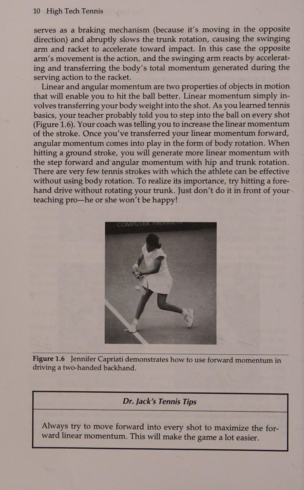
Bạn phải phát triển tốc độ bằng chân, hông và thân, nhưng bạn đừng bao giờ nghĩ đến việc vung mạnh bằng tay. Động tác tay chậm cũng sẽ giúp bạn phát triển tính nhất quán sau này.
Depth into the court does not necessarily connote velocity. Gradually, increase the speed of your shot to develop power, but try to not sacrifice control, consistency, or depth!
Khi bạn bắt đầu đánh có chiều sâu, đừng cố đánh mạnh hơn; chỉ cần đánh bóng cao hơn qua lưới! Độ sâu của sân không nhất thiết có nghĩa là vận tốc. Dần dần, tăng tốc độ cú đánh của bạn để phát triển sức mạnh, nhưng cố gắng không hy sinh khả năng kiểm soát, tính nhất quán hoặc chiều sâu!
The Body’s Sources of Power: Linear and Angular Momentum Two very simple concepts affect hitting a ball with control and high velocity, and both involve a transfer of momentum: linear momentum and angular momentum (Figure 4.1). These two sources of power should act together in a coordinated manner.
Nguồn sức mạnh của cơ thể:
In chapter 11 discussed how the trans-
Động lượng tuyến tính và động lượng góc (Angular Momentum) Hai khái niệm rất đơn giản ảnh hưởng đến việc đánh một quả bóng có kiểm soát và vận tốc cao, và cả hai đều liên quan đến sự truyền động lượng: động lượng tuyến tính (Linear Momentum) và động lượng góc (Angular Momentum) (Hình 4.1). Hai nguồn quyền lực này cần phải hành động cùng nhau một cách phối hợp. Trong chương 11 đã thảo luận về cách chuyển đổi Cc. Hình 4.1 Hãy chú ý cách vận động viên này truyền động lượng tuyến tính (Linear Momentum) về phía trước bằng cách bước vào cú đánh (a và b). Sau đó, mômen động lượng được tạo ra do chuyển động quay của vật (c và d).
Figure 4.1 Notice how this athlete transfers linear momentum forward by stepping into the shot (a and b). The angular momentum is then generated by body rotation (c and d). fer of linear and angular momentum is accomplished: by stepping into the shot and rotating the upper body, respectively. Momentum and the Backswing The upper body rotation is similar for both closed- and open-stance strokes and is initiated at the backswing. One of the biggest controversies among tennis players and their coaches is which backswing— straight back, small loop, or large loop—provides the best racket velocity and control.
Kiểm soát so với sức mạnh của động lượng tuyến tính (Linear Momentum) và góc được thực hiện: bằng cách bước vào cú đánh và xoay phần thân trên tương ứng.
The traditional train of thought was that a straight-back preparation (Figure 4.2) allowed the most control, whereas the largeloop backswing (Figure 4.3), allowed the highest racket velocity.
Động lượng và động tác vung vợt sau Xoay phần thân trên tương tự nhau đối với cả cú đánh ở tư thế đóng và tư thế mở và được bắt đầu ở động tác vung vợt sau. Một trong những tranh cãi lớn nhất giữa các vận động viên quần vợt và huấn luyện viên của họ là việc vung vợt ra sau—thẳng về phía sau, giật nhỏ hay giật lớn—mang lại tốc độ và khả năng kiểm soát vợt tốt nhất. Suy nghĩ truyền thống cho rằng việc chuẩn bị vợt thẳng (Hình 4.2) cho phép kiểm soát tốt nhất, trong khi đó, việc chuẩn bị vợt về phía sau với vòng lặp lớn (Hình 4.3) cho phép tốc độ vợt cao nhất. Các nhà khoa học thể thao cho chúng ta biết đúng là tốc độ vợt cao được tạo ra bởi cú vung vợt sau với vòng lặp lớn, nhưng việc kiểm soát có thể là một vấn đề thực sự với cú vung vợt đó vì thời gian cần thiết để đánh bóng hiệu quả. Nghiên cứu đã phát hiện ra rằng động tác backswing vòng lặp nhỏ (Hình 4.4) không chỉ cho phép sự kết hợp tuyệt vời giữa vận tốc và khả năng kiểm soát mà quan trọng hơn là giúp cơ thể duy trì nhịp điệu trong mỗi cú đánh. Điều này giúp vận động viên ổn định thời gian đánh bóng và tránh các vấn đề về thời gian do động tác vung vợt sau vòng lớn gây ra. Khi bạn đang thiết lập nhịp vuốt ve, việc chuẩn bị vòng lặp nhỏ cũng tạo điều kiện thuận lợi cho việc tạo ra động lượng tuyến tính (Linear Momentum) và góc bằng cách bắt đầu chuyển động xoay thân cây. a Hình 4.2 Tay vợt này cho thấy cách thực hiện cú công bóng thuận tay bằng một cú vung vợt về phía sau thẳng.
Sport scientists tell us it’s true that high racket velocity is generated by the large-loop backswing, but control can be a real problem with that backswing because of the timing necessary to hit a ball effectively. Research has found that the small-loop backswing (Figure 4.4) not only allows for an excellent combination of velocity and control but, just as importantly, helps the body maintain its rhythm during each stroke. This helps the athlete stabilize timing in hitting a ball and avoid the timing problems caused by the large-loop backswing. When you’ re establishing a stroking rhythm, the small-loop preparation also facilitates the generation of linear and angular momentum by initiating the trunk rotation. a Figure 4.2 This player shows how a forehand drive is hit with a straight-back backswing. Figure 4.3 This player demonstrates how to use a large-loop backswing to hit a forehand drive. Note the height of the hand. a Figure 4.4 In this sequence you can see how a forehand should be hit with a small-loop backswing. Note the height of the hand. Momentum and Footwork Because the body rotation is more pronounced for an open-stance stroke, we will use this as an example of how the transfer of angular momentum occurs before we consider the role of momentum in a forward-step stroke. Footwork in Open-Stance Ground Stroke
74 High Tech Tennis a b c Hình 4.3 Tay vợt này trình bày cách sử dụng động tác vung vợt sau vòng lớn để đánh một cú công bóng thuận tay. Lưu ý chiều cao của bàn tay. a Hình 4.4 Trong trình tự này, bạn có thể thấy cách thực hiện cú thuận tay bằng động tác vung vợt sau vòng nhỏ. Lưu ý chiều cao của bàn tay.
First we need to discuss the footwork involved in effectively hitting a stroke with an open stance. There is obviously little transfer of linear momentum forward into the stroke because the motion of the foot closest to the ball is either directly to the side or slightly behind the impact point (only in a few cases is the side step forward).
Động lượng và động tác chân Bởi vì chuyển động xoay của cơ thể rõ ràng hơn đối với cú đánh ở tư thế mở, chúng tôi sẽ sử dụng điều này làm ví dụ về cách truyền động lượng góc (Angular Momentum) Kiểm soát so với Sức mạnh xảy ra trước khi chúng tôi xem xét vai trò của động lượng trong cú đánh bước về phía trước.
There’s a specific reason for the side step, however. As you can see in Figure 4.5, the side step allows the hips and trunk to rotate backward during the backswing. Just prior to the forward swing, there will be a slight push-off by the foot closest to the ball.
Động tác bằng chân trong cú đánh trên mặt đất ở tư thế mở Đầu tiên chúng ta cần thảo luận về động tác bằng chân liên quan đến việc đánh một cú đánh với thế đứng mở một cách hiệu quả. Rõ ràng là có rất ít sự truyền động lượng tuyến tính (Linear Momentum) về phía trước trong cú đánh vì chuyển động của bàn chân gần bóng nhất là trực tiếp sang bên hoặc hơi phía sau điểm va chạm (chỉ trong một số ít trường hợp là bước sang bên về phía trước). Tuy nhiên, có một lý do cụ thể cho bước đi phụ. Như bạn có thể thấy trong Hình 4.5, bước sang bên cho phép hông và thân xoay về phía sau trong quá trình vung vợt sau. Ngay trước khi thực hiện cú vung về phía trước, sẽ có một cú đẩy nhẹ bằng chân gần bóng nhất. Lực này do mặt đất tác dụng, truyền qua chân và tuân theo một đường tác động cụ thể, như được mô tả trong Hình 4.6.
This force, exerted by the ground, passes through the leg and follows a specific course of action, as depicted by Figure 4.6. After traveling up the legs, it is received by the hips, which begin accelerating in a rotary fashion. When the hips reach a certain optimal angular velocity (the word optimal is used here instead of maximal because tennis usually doesn’t require maximum force), the trunk reaches its optimal angular velocity, and the upper limb begins to move about the shoulder. The sum of all these integrated forces then results in optimal acceleration of the racket. When coordinated correctly, this transfer of angular momentum is the factor that can make an open-stance ground stroke so effective. Figure 4.5 This individual demonstrates how the unit turn is employed in his efficient open-stance forehand drive.
Sau khi di chuyển lên chân, nó được hông nhận và bắt đầu tăng tốc theo kiểu quay. Khi hông đạt đến vận tốc góc tối ưu nhất định (từ tối ưu được sử dụng ở đây thay vì tối đa vì quần vợt thường không yêu cầu lực tối đa), thân đạt vận tốc góc tối ưu và chi trên bắt đầu di chuyển quanh vai.
STROKE SEQUENCE: GROUND REACTION FORCE ' LEGS ' HIPS ' TRUNK t UPPER LIMB t RACQUET TM Figure 4.6 This is the sequence of events that occurs as force is transferred. Jimmy Connors can serve as an excellent example of someone who has always used little linear momentum but who maximized his angular momentum.
Tổng của tất cả các lực tổng hợp này sẽ mang lại khả năng tăng tốc tối ưu cho vợt. Khi được phối hợp chính xác, sự truyền động lượng góc (Angular Momentum) này là yếu tố có thể làm cho cú đánh tiếp đất ở tư thế mở trở nên hiệu quả.
The mechanics of Connors’s forehand can be viewed in Figure 4.7. You can easily see how the body’s rotation brings the racket head toward impact so well. However, notice when Jimmy leaves the ground during his forehand.
Hình 4.5 Cá nhân này trình bày cách sử dụng cú xoay đơn vị trong cú công bóng thuận tay ở thế mở hiệu quả của mình.
In his famous jumping forehand he doesn’t leave the ground until just before impact.
TRÌNH TỰ ĐỘC:
Therefore, when you see
LỰC PHẢN ỨNG MẶT ĐẤT CHÂN HIPS THÂN T CHI TRÊN t VỢT TM Hình 4.6 Đây là chuỗi các sự kiện xảy ra khi lực được truyền.
Figure 4.7 Notice how Jimmy Connors utilizes no step forward in this forehand drive but how he maximizes his body rotation.
Jimmy Connors có thể coi là một ví dụ xuất sắc về một người luôn sử dụng ít động lượng tuyến tính (Linear Momentum) nhưng lại cực đại hóa xung lượng góc của mình. Cơ chế thuận tay của Connors có thể được xem trong Hình 4.7. Bạn có thể dễ dàng nhận thấy chuyển động xoay của thân vợt giúp đầu vợt hướng tới tác động tốt như thế nào. Tuy nhiên, hãy chú ý khi Jimmy rời khỏi mặt đất trong cú thuận tay của anh ấy. Trong cú nhảy thuận tay nổi tiếng của mình, anh ấy không rời khỏi mặt đất cho đến ngay trước khi va chạm. Do đó, khi bạn xem Hình 4.7, hãy chú ý cách Jimmy Connors không sử dụng bước tiến nào trong cú công bóng thuận tay này mà là cách anh ấy tối đa hóa khả năng xoay cơ thể của mình.
Connors a foot and a half off the ground during his strokes, you should remember that he doesn’t leave the ground until the very last instant. If Connors jumped any sooner than that, he would lose a great deal of the angular momentum he had generated. In other words, if he left the ground before all the generated force had reached his smaller body parts (the forearm and hand), Newton’s third law (action-reaction) dictates that his larger body parts would react and not send the force forward to the upper limb. Thus, the key to Connors’s great open-stance forehand is timing. Footwork in the Forward-Step Stroke
Kiểm soát so với Power Connors cách mặt đất một foot rưỡi trong các cú đánh của anh ta, bạn nên nhớ rằng anh ta không rời khỏi mặt đất cho đến giây phút cuối cùng. Nếu Connors nhảy sớm hơn thế, anh ta sẽ mất rất nhiều xung lượng góc mà anh ta đã tạo ra. Nói cách khác, nếu anh ta rời khỏi mặt đất trước khi toàn bộ lực được tạo ra tới các bộ phận cơ thể nhỏ hơn (cẳng tay và bàn tay), thì định luật thứ ba của Newton (phản lực tác động) quy định rằng các bộ phận cơ thể lớn hơn của anh ta sẽ phản ứng và không truyền lực về phía trước cho chi trên. Vì vậy, chìa khóa cho cú thuận tay trong thế mở tuyệt vời của Connors là tính thời gian.
Although the open-stance ground stroke can be utilized to hit very effective shots, it isn’t that easy to perform, which is why the traditional step into the ball is more often recommended. This seems reasonable because this conventional approach permits players to have better control over their bodies, usually allowing the stroke to be more efficient. However, this approach still necessitates synchronizing linear and angular momentum. The timing of the step forward and its coordination with the system of chain links are significant.
Động tác chân trong cú đánh bước tiến Mặc dù cú đánh mặt đất ở tư thế mở có thể được sử dụng để thực hiện những cú đánh rất hiệu quả, nhưng nó không dễ thực hiện, đó là lý do tại sao bước truyền thống vào bóng thường được khuyến khích hơn. Điều này có vẻ hợp lý vì cách tiếp cận thông thường này cho phép tay vợt kiểm soát cơ thể tốt hơn, thường cho phép cú đánh hiệu quả hơn. Tuy nhiên, cách tiếp cận này vẫn cần phải đồng bộ hóa động lượng tuyến tính (Linear Momentum) và động lượng góc (Angular Momentum). Thời điểm của bước tiến và sự phối hợp của nó với hệ thống liên kết chuỗi là rất quan trọng. Nhiều cuốn sách nói rằng hãy bước về phía trước trong cú đánh và vung vợt. Nó không dễ dàng như vậy!
Many books say to step forward into the shot and swing. It’s not that easy! As the player in Figure 4.8 faces the net and readies to swing forward for a forehand drive, the foot opposite the forehand side of the body a b
Khi tay vợt trong Hình 4.8 quay mặt vào lưới và sẵn sàng vung về phía trước để thực hiện cú công bóng thuận tay, chân đối diện với phía thuận tay của cơ thể a b Hình 4.8 Tay vợt này trình bày cách đánh cú công bóng thuận tay bằng cách sử dụng động tác bước thích hợp. Chú ý cách đặt bàn chân trước về phía trước và hơi lệch sang một bên.
Figure 4.8 This player demonstrates how to hit a forehand drive by using the proper stepping action. Notice how the front foot is placed forward and slightly to the side.
Chương 5: Bản Chất Cơ Học Của 'Quả Bóng Nặng' (The Solid or Heavy Ball)
Chapter 5: The Biomechanics of the Solid or Heavy Ball: Mass, Velocity, and Racket Mass
bước qua và tiến về phía trước theo kiểu sải bước bình thường. Bàn chân được đặt thẳng về phía điểm tiếp xúc với bóng hoặc hướng thẳng về phía lưới. Trong khi chân đối diện sải bước về phía trước, rõ ràng có một lực đẩy từ chân sau để bắt đầu chuyển trọng lượng. Khi bàn chân trước đã được đặt xuống và chịu được phần lớn trọng lượng cơ thể, quá trình truyền động lượng tuyến tính (Linear Momentum) đã hoàn tất. Tại thời điểm này, lực tạo ra từ lực đẩy chạm tới hông và bắt đầu xoay. Đây là quá trình chuyển đổi quan trọng: sự khởi đầu của xung lượng góc, thông qua chuyển động xoay hông, từ lực đẩy tuyến tính của chân sau. Thân cây bắt đầu tham gia bằng cách xoay rất sớm sau khi bắt đầu xoay hông. Sau đó, cánh tay trên nhanh chóng đưa vợt về phía trước để va chạm.
High Tech Tennis steps across and forward ina normal stridelike fashion. The foot is placed directly toward the point of ball contact or directly forward toward the net. While the opposite foot strides forward, there is an obvious pushoff from the hind foot to initiate weight transfer. Once the front foot is planted and supports a large proportion of body weight, the transfer of linear momentum is complete. At this point, the force generated from the push-off reaches the hips, which begin rotating. This is the important transition: the initiation of angular momentum, through hip rotation, from the linear push-off of the hind leg. The trunk begins its involvement by rotating very soon after the hip rotation begins. The upper arm then quickly brings the racket forward toward impact.
Do đó, sự chuyển đổi giữa động lượng tuyến tính (Linear Momentum) và động lượng góc (Angular Momentum) là rất quan trọng.
Therefore, the transition between linear momentum and angular momentum is crucial.
Một sai lầm về thời gian có thể cản trở nghiêm trọng việc tạo ra cú đánh. Để giúp học sinh của tôi hiểu được thời điểm này, tôi đưa ra một cụm từ đơn giản để các em suy nghĩ khi luyện tập: Bước, sau đó vung. Tôi cũng bảo họ cố gắng thực hiện các động tác nhịp nhàng nhất có thể. Nhịp điệu, một khi đã học được, sẽ cho phép học viên tiến tới những cú đánh nâng cao hơn (ví dụ: đánh một cú đánh trên mặt đất cao với xoáy lên). Cú xoay nhịp nhàng tương tự này cho phép tay vợt đánh những cú đánh cực kỳ khó với chuyển động dường như dễ dàng và do đó đánh được thứ được gọi là một quả bóng rắn.
A mistake in timing could severely hamper stroke production. To help my students understand this timing, I offer a simple phrase for them:-to think about when practicing: Step, then swing. I also tell them to attempt to make their strokes as rhythmic as possible. The rhythm, once learned, will allow the student to graduate to more advanced strokes (e.g., hitting a high ground stroke with topspin). This same rhythmic swing enables players to hit incredibly hard shots with seemingly effortless movement and thus to hit what’s known as a solid ball.
Quả bóng rắn (hoặc nặng) Tôi sẽ không bao giờ quên lần đầu tiên tôi đánh với Tim Gullikson (nhà vô địch đơn Wimble-don 35 tuổi trở lên năm 1991). Tôi thực sự rất phấn khích khi được tập luyện với một tay vợt tuyệt vời như vậy. Những cú đánh tôi đánh là cú đánh tốt nhất mà tôi có thể tập hợp được, nhưng có một vấn đề nhanh chóng trở nên rõ ràng. Tôi đã đánh những cú đánh tốt nhất của mình, nhưng Tim lại đánh trả mọi quả bóng mạnh hơn cú đánh trước đó của tôi. Điều kỳ lạ là anh ta dường như vung vợt không nhanh chút nào nhưng vẫn đánh một quả bóng cực kỳ chắc chắn.
The Solid (or Heavy) Ball I'll never forget the first time I hit against Tim Gullikson (1991 Wimbledon 35-and-over singles champion). I was really pumped up by getting to work out with such a great player. The shots I hit were the best I could muster, but there was one problem that quickly became apparent. I was hitting my best shots, but Tim was returning every ball harder than I had hit the previous stroke. Oddly enough, he didn’t seem to swing the racket very fast at all, but he still hit an incredibly solid ball.
Quả bóng rắn hoặc nặng là một khái niệm bị hiểu lầm rộng rãi và thường được sử dụng ở cấp độ quần vợt nâng cao. Có hai loại cú đánh quần vợt được phân loại là bóng rắn: một cú đánh với vận tốc lớn có cảm giác như nó sẽ hất vợt ra khỏi tay bạn, và một cú đánh trên mặt đất cứng với độ xoáy cực cao dường như làm mất đi khả năng kiểm soát cú đánh của chính bạn. Làm thế nào để tay vợt phát triển những cú đánh tuyệt vời này?
The solid, or heavy, ball is a widely misunderstood concept that is most often used at the advanced levels of tennis. Two types of tennis shots exist that are classified as solid balls: a stroke with a great deal of velocity that feels like it will knock the racket out of your hand, and a hard ground stroke hit with extreme topspin that seems to take away control of your own shot. How do players develop these awesome strokes?
Đánh một quả bóng rắn là một trong những yếu tố quan trọng trong việc phát triển các cú đánh nền tấn công và trả giao bóng. Ý nghĩa của việc này là cực kỳ quan trọng. Bằng cách học cách đánh một quả bóng rắn, bạn có thể phát triển một lối chơi tấn công tích cực mà không cần phải phụ thuộc hoàn toàn vào phong cách chơi giao bóng và vô lê.
Hitting a solid ball is one of the key elements in developing offensive ground strokes and service returns. The implications of this are extremely important. By learning to hit a solid ball, you can develop an aggressive, attacking game without having to depend exclusively on the serve-and-volley style of play.
Kiểm soát so với sức mạnh Khả năng đánh một quả bóng rắn phụ thuộc vào mức độ bạn có thể thực hiện bảy yếu tố sau. e Sử dụng đầy đủ và đồng bộ tất cả các bộ phận của cơ thể ¢ Tiếp xúc bóng trong vùng đánh của mặt vợt e Sử dụng tay cầm chắc chắn để tăng cường khả năng kiểm soát và giúp truyền lực tới bóng ¢ Tiếp bóng bằng cổ tay (hoặc cổ tay, nếu đánh bằng hai tay) và khuỷu tay (hoặc cùi chỏ) chắc chắn e Tạo độ xoáy thích hợp cho bóng ¢ Đánh bóng theo đúng hướng ¢ Tiếp xúc bóng trong vùng đánh của bạn Sử dụng đầy đủ và đồng bộ tất cả các bộ phận cơ thể Bạn đã nhận thức được tầm quan trọng của hệ thống liên kết của cơ thể, nhưng có một cách hiểu rất cơ bản về lý do tại sao bạn có thể không đánh bóng tốt như bạn muốn. Để xem xét, hầu như tất cả các cú đánh quần vợt đều liên quan đến lực tạo ra trên mặt đất và truyền lên chân, hông, thân và cánh tay. Sự tổng hợp liên tiếp các lực lượng này không chỉ là một phần không thể thiếu để đạt được thành tích thành công trong quần vợt mà còn phải đạt được tính liên tục. Nói cách khác, thời điểm là rất quan trọng. Ví dụ, khi chân đạt vận tốc tối đa, vận tốc đó sẽ được truyền đến hông. Khi hông đạt vận tốc quay cực đại, vận tốc trong hệ thống liên kết của cơ thể, vận tốc đó được truyền đến thân, v.v. (Hình 4.9).
The ability to hit a solid ball depends on how well you can execute the following seven factors. e Using all body parts sufficiently and in synchrony ¢ Contacting the ball in the hitting zone of the racket face e Using a firm grip to enhance control and to help with transferring force to the ball ¢ Meeting the ball with the wrist (or wrists, if hitting a two-handed shot) and elbow (or elbows) firm e Imparting the proper amount of spin on the ball ¢ Hitting the ball with a complete follow-through ¢ Contacting the ball in your strike zone Using All Body Parts Sufficiently and in Synchrony You are already aware of the importance of the body’s linked system, but there is a very fundamental way of understanding why you may not be hitting the ball as well as you want. To review, virtually all tennis strokes involve force created against the ground and transferred up through the legs, hips, trunk, and arms. Not only is this successive summation of forces integral to successful performance in tennis, but there is also a continuity by which it must be achieved. In other words, the timing is crucial. For example, once the legs reach their peak velocity, that velocity is transferred to the hips. When the hips reach their peak rotational velocity, the velocity in the body’s linked system, that velocity is transferred to the trunk, and so on (Figure 4.9). A problem becomes Upper limb
Một vấn đề trở thành chi trên Hình 4.9 Điều này thể hiện sự truyền lực hiệu quả từ chân đến chi trên. rõ ràng khi chuyển động không hiệu quả, điều này không chỉ có thể gây ra lỗi trong quá trình thực hiện cú đánh mà còn tạo ra khả năng gây thương tích.
Figure 4.9 This represents an efficient force transfer from the legs to the upper limb. apparent when movement is inefficient, which not only can cause an error in stroke production but also creates the potential for injury.
Một khía cạnh của hoạt động kém hiệu quả của hệ thống liên kết xảy ra khi một bộ phận cơ thể bị loại khỏi chuyển động. Điều này có nghĩa là phần cơ thể tiếp theo phải hoạt động chăm chỉ hơn nếu muốn đạt được kết quả tương tự. Ví dụ, hãy tưởng tượng một cú đánh trái tay bằng hai tay mà không xoay thân.
One aspect of an inefficient action of the linked system occurs when a body part is left out of the movement. This means that a subsequent body segment must work harder if the same result is to be achieved. For example, imagine a two-handed backhand hit with no trunk rotation.
Cánh tay phải vung vợt thật mạnh, sử dụng nhiều sức lực cơ bắp hơn bình thường để tạo ra tốc độ đầu vợt thích hợp.
The arms must swing the racket very hard, using more muscular effort than normal to generate a proper racket head speed.
Hình thức tạo cú đánh kém hiệu quả thứ hai xảy ra khi tất cả các bộ phận cơ thể được sử dụng nhưng không được sử dụng đúng cách. Ví dụ, một tay vợt khi đánh một quả giao bóng có thể sử dụng hông nhưng có thể ngăn chúng xoay đúng cách. Điều này sẽ đòi hỏi thân và chi trên phải hoạt động * khó hơn nhiều để tạo ra tốc độ đầu vợt chính xác.
A second form of inefficient stroke production occurs when all the body parts are used but not employed correctly. For example, a player, when hitting a serve, may utilize the hips but may block them from rotating properly. This will require the trunk and upper limb to work * much harder to generate the correct amount of racket head speed.
Dạng cuối cùng của hành trình kém hiệu quả xảy ra khi các bộ phận cơ thể trong hệ thống liên kết không được đồng bộ hóa đúng cách. Đây là thời điểm mà rất nhiều tay vợt đổ lỗi cho sai lầm của mình. Ví dụ: một tay vợt có thể gặp khó khăn trong chuyển động giao bóng của mình. Khi sự cố này xảy ra, nó sẽ khiến cơ chế định thời gian hoàn chỉnh của hệ thống liên kết của cơ thể không còn đồng bộ. Sau đó, cánh tay phải bù đắp cho sự thiếu hụt thời gian thích hợp này bằng cách vung vợt mạnh về phía trước với hoạt động cơ bắp quá mức.
The final form of stroke inefficiency takes place when the body parts in the linked system are not properly synchronized. This is the timing on which so many tennis players blame their mistakes. For example, a -player may have a hitch in his or her service motion. When this hitch occurs, it throws the complete timing mechanism of the body’s linked system out of synchrony. The arm then has to make up for this lack of proper timing by forcefully swinging the racket forward with excessive muscular action.
Tiếp xúc với bóng trong vùng đánh của mặt vợt. Tôi thấy rất thú vị khi có nhiều người sử dụng thuật ngữ điểm ngọt vợt (Sweet Spot) để mô tả vị trí trên mặt vợt mà họ cảm thấy bóng nên được đánh. Về mặt kỹ thuật, điểm ngọt vợt (Sweet Spot) là trung tâm bộ gõ của vợt và thường nằm ở đâu đó giữa tâm dây và cổ vợt. Ngược lại với những gì nhiều người tin, điểm ngọt vợt (Sweet Spot) là một điểm rất nhỏ trên mặt vợt. Hầu như không thể đánh bóng vào đúng vị trí mọi lúc. Tuy nhiên, có một khu vực nhỏ xung quanh điểm ngọt vợt (Sweet Spot) để có thể đánh trúng những cú đánh hiệu quả (Hình 4.10). Có vẻ thích hợp hơn khi nói về việc tiếp xúc bóng ở vùng đánh này của mặt vợt. Vùng đánh là một khu vực rộng từ 2 đến 4 inch (tùy thuộc vào kích thước của đầu vợt) xung quanh điểm ngọt vợt (Sweet Spot). Việc tiếp xúc với bóng trong vùng đánh khiến đầu vợt ít bị xoay và tăng cường khả năng kiểm soát cú đánh của bạn.
Contacting the Ball in the Hitting Zone of the Racket Face It’s very interesting to me how many people use the term sweet spot to describe the spot on the racket face where they feel the ball should be hit. Technically speaking, the sweet spot is the center of percussion of the racket and is usually located somewhere between the center of the strings and the throat of the racket itself. Contrary to what many believe, the sweet spot is a very tiny point on the racket face. It’s virtually impossible to hit a ball in the sweet spot all the time. However, there is a small area surrounding the sweet spot with which effective shots can be hit (Figure 4.10). It seems more appropriate to speak of contacting a ball in this hitting zone of the racket face. The hitting zone is an area ranging anywhere from 2 to 4 inches wide (depending on the size of the racket head) surrounding the sweet spot. Contacting the ball in the hitting zone results in little racket head rotation and enhances the control of your shot.
Rất khó để tập tiếp xúc bóng trong vùng đánh của vợt. Khi bạn vung vợt về phía bóng, gần như không thể xác định chính xác vị trí va chạm sẽ xảy ra. Ngay cả những tay vợt chuyên nghiệp cũng thỉnh thoảng đánh bóng ra khỏi khung vợt của họ. Nếu bạn cảm thấy vợt xoay nhiều trong tay khi tiếp xúc với bóng, bạn có thể thực hiện hai việc. Đầu tiên, Kiểm soát so với sức mạnh Vùng đánh hiệu quả Trung tâm bộ gõ (Sweet Spot) VITT77Z2 Hình 4.10 Vùng tối trên mặt vợt biểu thị kích thước vùng đánh của vợt. cố gắng làm chậm cú vung về phía trước của bạn và chỉ cần tập trung vào việc tạo ra một tác động chắc chắn với quả bóng. Mặc dù bạn không kiểm soát được vận tốc của quả bóng đang tới, bạn có thể cải thiện độ chính xác của mình bằng cách làm chậm tay và sử dụng các bộ phận cơ thể lớn hơn để tạo ra tốc độ vợt. Điều thứ hai bạn có thể cải thiện là độ bám chắc của tay cầm.
It’s difficult to practice contacting the ball in the hitting zone of the racket. When you swing your racket forward toward the ball, it’s almost impossible to gauge exactly where impact will occur. Even the pros occasionally hit balls off the frames of their rackets. If you feel a lot of racket rotation in your hand at ball contact, you can work on two things. First, Effective Hitting Zone Center of Percussion (Sweet Spot) VITT77Z2 Figure 4.10 The darkened area on the racket face indicates the size of the racket’s hitting zone. try to slow down your forward swing and simply concentrate on making a firm impact with the ball. Although you have no control over the velocity of the oncoming ball, you can improve your accuracy by slowing the hands and using the larger body parts to create racket speed. The second thing you can work on is your grip firmness. Dr. Jack’s Tennis Tips
Lời khuyên quần vợt của Tiến sĩ Jack Đối với một số tay vợt, việc làm chậm đầu vợt sẽ có tác dụng rất tốt. Tuy nhiên, nếu bạn là một tay vợt giỏi (5.0 trong Chương trình xếp hạng quần vợt quốc gia [NTRP] trở lên) hoặc nếu bạn lo lắng trong một trận đấu, bạn có thể phải vung vợt nhanh hơn một chút để duy trì cảm giác nhịp nhàng. Chỉ cần nhớ lái bóng bằng chân, hông và thân mình chứ không phải bằng tay. Bất kể bạn làm gì, hãy luôn nghĩ đến việc đánh bóng một cách “ngọt ngào” nhất có thể.
For some players, slowing down the racket head will work very well. However, if you are a good player (5.0 on the National Tennis Rating Program [NTRP] or above) or if you are nervous in a match, you might have to swing a little faster to maintain a sense of rhythm. Just remember to drive the ball with your legs, hips, and trunk, not your hand. Regardless of what you do, think of hitting the ball as ‘‘sweetly” as you can every time.
Sử dụng cách cầm vợt chắc chắn để tăng cường khả năng kiểm soát và truyền lực vào bóng Nhiều cơ quan quản lý quần vợt và cơ sinh học tin rằng độ cứng của tay cầm là một yếu tố quan trọng, đôi khi là quan trọng nhất, để đánh tốt một quả bóng tennis. Bằng cách duy trì cách cầm vợt chắc chắn, tay vợt sẽ giảm độ giật của vợt và do đó tăng lực tác dụng lên bóng. Tuy nhiên, một cuộc tranh cãi về Quần vợt Công nghệ Cao 82 đã nổ ra liên quan đến mức độ bám chắc mà tay vợt nên duy trì trong một cú đánh. Nguyên nhân của cuộc tranh luận này bắt nguồn từ nghiên cứu về độ cứng của tay cầm được tiến hành vào cuối những năm 1970 và trong suốt những năm 1980. Một số nhà khoa học đã nghiên cứu khả năng bật lại của một quả bóng tennis khi nó được bắn vào tâm vợt trong hai điều kiện: vợt được kẹp chắc chắn trong một tay cầm vise và vợt đứng thăng bằng ở đầu vợt.
Using a Firm Grip to Enhance Control and Transfer Force to the Ball Numerous biomechanical and tennis authorities believe that grip firmness is an important, sometimes the most important, factor in hitting a tennis ball well. By maintaining a firm grip, the player reduces racket recoil and thereby increases the force applied to the ball. However, a controversy has erupted concerning the degree of grip firmness a player should maintain during a stroke. The cause of this debate stems from the research on grip firmness conducted in the late 1970s and throughout the 1980s. Several scientists studied the rebound of a tennis ball as it was fired against the center of a racket under two conditions: the racket firmly clamped in a vise grip, and the racket standing balanced on its butt end.
Nói cách khác, các nhà nghiên cứu đã mô phỏng hai thái cực về độ cứng của tay cầm: tay cầm rất chắc chắn và không có tay cầm nào cả. Thật ngạc nhiên, quả bóng bật lại với vận tốc như nhau trong cả hai trường hợp. Các nhà nghiên cứu kết luận rằng không có thời gian để vợt di chuyển đáng kể trong khi xảy ra va chạm, do đó ảnh hưởng của vợt đứng tự do đến tốc độ bóng bằng với ảnh hưởng của vợt kẹp.
In other words, the researchers simulated two extremes of grip firmness: a very strong grip and no grip at all. Amazingly, the ball rebounded with similar velocities in both cases. Researchers concluded that there is no time for the racket to move appreciably while impact occurs, so the effect of a free-standing racket on ball speed equaled that of a clamped racket.
Điều này ngụ ý rằng độ cứng của tay cầm có thể không quan trọng đến thế. Tuy nhiên, hãy nhớ rằng những nghiên cứu này quan tâm đến tác động trung tâm lên vợt bất động; chúng ta đã biết rằng phần lớn các tác động đều nằm ngoài trung tâm.
This implies that grip firmness may not be that important. Bear in mind, however, that these studies were concerned with central impacts on a motionless racket; we already know that a large majority of impacts are off center.
Tôi và các đồng nghiệp đã tiến hành một thí nghiệm để xác định ảnh hưởng của độ cứng tay cầm đối với các điểm tiếp xúc bóng lệch tâm. Bóng bị tác động vào vợt khi nó xoay tự do và khi nó được kẹp chặt vào tay cầm. Chúng tôi nhận thấy rằng vận tốc bật lại của bóng cao hơn một chút (mặc dù không đáng kể) trong tình huống được kẹp đối với các điểm tiếp xúc lệch tâm tương ứng. Tuy nhiên, quan sát quan trọng là với tình trạng bị kẹp, mỗi quả bóng sẽ bật ra trực tiếp từ mặt vợt.
My colleagues and I conducted an experiment to determine the effects _of grip firmness for off-center ball contacts. Balls were impacted against a racket when it was free to rotate and when it was firmly clamped at the handle. We found that ball rebound velocities were slightly (although not significantly) higher in the clamped situation for respective off-center contacts. The important observation, however, was that with the clamped condition each ball rebounded directly out from the racket face.
Đối với điều kiện xoay tự do, bóng rời vợt ở một góc sai.
For the free-to-rotate condition, the ball left the racket at an errant angle.
Do đó, có vẻ như bất kể ảnh hưởng của độ cứng của tay cầm đến tốc độ bật lại, việc thiếu tay cầm chắc chắn sẽ khiến khả năng kiểm soát bóng kém.
Therefore, it seemed that regardless of the effect of grip firmness on rebound velocity, the lack of a firm grip causes poor ball control.
Bruce Elliott đã thực hiện một số công việc hiện đại hơn trong lĩnh vực này. Thay vì sử dụng vợt bất động, ông đã chế tạo một cánh tay cơ khí có tay nắm để giữ vợt với độ cứng khác nhau.
Bruce Elliott has done some of the more contemporary work in this area. Instead of using motionless rackets, he constructed a mechanical arm with a hand grasp that would hold the racket with varying firmness.
Khi một quả bóng được bắn ra từ máy đánh bóng, cánh tay vợt được kích hoạt và vung về phía trước với vận tốc tương đương với vận tốc của một tay vợt nam điêu luyện.
As a ball was fired from a ball machine, the racket arm was triggered and swung forward with velocity comparable to that of a skilled male player.
Elliott nhận thấy vận tốc bật lại từ tay cầm chắc chắn đến tay cầm nhẹ giảm 7%. Ông kết luận rằng việc cầm vợt chắc chắn là hoàn toàn cần thiết để tăng sức mạnh của cú đánh và cải thiện khả năng kiểm soát. Ngày nay chúng ta biết rằng điều này vẫn đúng và trên thực tế, nó sẽ được phóng đại nếu bạn sử dụng vợt thân rộng.
Elliott found a 7 percent reduction in rebound velocities from the firm to the light grip. He concluded that a firm grip was absolutely necessary to increase the power of a stroke and to improve control. We know today that this still holds true and, in fact, is magnified if you use a wide body racket.
Chúng ta biết rằng trong quần vợt cần có cách cầm vợt chắc chắn, vì vậy hãy cùng thảo luận điều gì tạo nên cách cầm vợt chắc chắn. Nếu bạn chỉ cầm vợt trước mặt thì có lẽ tay cầm của bạn rất nhẹ, chỉ đủ chặt để đỡ vợt. Nếu bạn vung vợt bằng cách cầm này, hai điều có thể xảy ra: Vợt sẽ bay ra khỏi tay bạn khi nó vung về phía trước và các cơ ở cẳng tay của bạn sẽ không được thiết lập để điều khiển vợt trong khi va chạm và bạn sẽ mất kiểm soát cú đánh. Khi chuẩn bị đánh một cú đánh, bạn có thể duy trì cách cầm vợt nhẹ trong quá trình vung vợt về phía sau, nhưng khi vung vợt về phía trước, bạn nên siết chặt tay cầm để tăng cường cú đánh của mình. Tay cầm Control Versus Power không nhất thiết phải là kiểu cầm chết, nhưng nó phải đủ chắc chắn để giảm thiểu độ xoáy của vợt khi va chạm.
We know that a firm grip is required in tennis, so let’s discuss what makes a firm grip. If you simply hold the racket in front of you, your grip is probably very light, just tight enough to support the racket. If you swing at a ball with this grip, two things will probably happen: The racket will fly out of your hand as it is swung forward, and the muscles of your forearm will not be set to control the racket during impact and you'll lose control of the shot. When preparing to hit a shot you can maintain a light grip during the backswing, but as you swing the racket forward you should squeeze the grip firmly to enhance your stroke. The grip need not be a death grip, but it should be firm enough to minimize racket rotation at impact.
Để vợt có đủ lực khi đánh một cú đánh, lực phải được tạo ra từ các bộ phận khác của cơ thể. Sự truyền lực qua các phần cơ thể này đạt đến đỉnh điểm khi bàn tay tạo lực cho vợt.
For a racket to have sufficient impetus when hitting a shot, force must be generated from other body parts. The transfer of force through these body segments culminates with the hand giving impetus to the racket.
Do đó, việc nắm chắc là vô cùng quan trọng vì nó đóng vai trò là mắt xích cuối cùng trong quá trình truyền động lượng này.
Therefore, a firm grip is of utmost importance because it serves as the final link in this transfer of momentum.
Tuy nhiên, về độ cứng của tay cầm thì không thể quay lại được.
There is a point of no return as far as grip firmness goes, however.
Định luật thứ ba của Newton nói rằng đối với mọi hành động đều có một phản ứng ngang bằng và ngược chiều. Bạn càng siết vợt chặt thì lực truyền đến tay và cẳng tay của bạn càng nhiều, đặc biệt là từ những tác động lệch tâm. Sẽ cần thực hành để xác định độ bám của bạn nên chắc chắn như thế nào.
Newton’s third law says that for every action, there’s an equal and opposite reaction. The tighter you squeeze the racket, the more force that’s transmitted to your hand and forearm, especially from those off-center impacts. It will take practice to determine how firm your grip should be.
Nếu vợt xoay trong tay bạn hoặc nếu bạn gặp khó khăn trong việc kiểm soát thì có thể tay cầm của bạn quá lỏng. Nếu bạn cảm thấy bàn tay, cẳng tay và khuỷu tay bị rung hoặc có lực rất lớn, hãy nới lỏng tay cầm một chút và tham khảo phần trong chương 2 về lựa chọn tay cầm để chắc chắn rằng bạn đang sử dụng đúng kích cỡ tay cầm.
If the racket turns in your hand or if you have difficulty with control, your grip may be too loose. If you experience a great deal of vibration or force into your hand, forearm, and elbow, loosen your grip a bit and refer to the section in chapter 2 on grip selection to be sure you’re using the correct grip size.
Đối với tôi, có vẻ như cuộc tranh cãi liên quan đến độ chắc chắn của tay cầm nên được giải quyết. Khi chờ cú đánh của đối thủ, bạn nên sử dụng cách cầm vợt lỏng lẻo. Tuy nhiên, tôi phải khuyên bạn nên cầm vợt chắc chắn khi tiếp xúc vì một số lý do: ¢ Để duy trì khả năng kiểm soát đầu vợt khi nó sẵn sàng đánh bóng Để cung cấp vận tốc vợt tối ưu khi nó vung về phía trước Truyền lực vừa đủ cho bóng khi va chạm Để tránh vợt bị xoắn trong tay bạn khi tiếp xúc với bóng Để liên kết hiệu quả lực tạo ra bởi chuỗi động học (Kinetic Chain) của cơ thể với vợt Đón bóng bằng cổ tay và khuỷu tay Hoàn toàn chắc chắn Giữ cổ tay (hoặc cổ tay) chắc chắn khi gặp bóng là một điều cần thiết khác. một phần quan trọng của việc đánh một quả bóng rắn, cũng như việc giữ cho khuỷu tay (hoặc các khuỷu tay) vững chắc.
It seems to me that the controversy concerning grip firmness should be put to rest. When awaiting the opponent’s shot, you should use a loose grip. However, I must recommend a firm grip at impact for several reasons: ¢ To maintain control over the racket head as it readies to hit the ball To provide optimal racket velocity as it’s swung forward To impart ample force to the ball at impact To prevent the racket from twisting in your hand during ball contact To effectively link the force generated by the body’s kinetic chain to the racket Meeting the Ball With the Wrists and Elbows Completely Firm Keeping the wrist (or wrists) firm when meeting the ball is another integral part of hitting a solid ball, as is keeping the elbow (or elbows) firm.
Có thể thực hiện một cú đánh khá mạnh bằng cách xoay bóng với một cú xoay thẳng đứng lớn, nhưng cú đánh sẽ không nặng bằng nếu bóng được đánh sâu với độ xoáy tối ưu. Đây là lý do tại sao!
It is possible to hit a fairly hard shot by spinning the ball with a large vertical swing, but the shot won’t be nearly as heavy as if the ball is driven deep with optimal spin. Here’s why!
Khi lực được truyền qua chuỗi động năng của cơ thể, nó phải truyền từ thân đến chi trên. Ba khớp ở chi trên (vai, khuỷu tay và cổ tay) đóng vai trò không thể thiếu trong việc đảm bảo lực tối ưu chạm tới vợt. Khi tay vợt cố gắng đánh một quả bóng đặc, cổ tay hoặc khuỷu tay không được cử động quá mức bất kể kiểu đánh được thực hiện là gì.
As force is transferred through the body’s kinetic chain, it must pass from the trunk to the upper limb. The three joints in the upper limb (shoulder, elbow, and wrist) are integral in ensuring that optimal force reaches the racket. When a player attempts to hit a solid ball, there should be no excessive wrist or elbow movement regardless of the shot type attempted.
| 84 Quần vợt công nghệ cao Hãy nhớ rằng có hai cách để đánh một quả bóng đặc: bằng cách đánh một cú đánh tốc độ cao và bằng cách đánh một cú đánh mạnh với xoáy lên hoặc xoáy xuống nặng.
Remember that there are two ways to hit a solid ball: by hitting a highvelocity shot and by hitting a hard shot with heavy topspin or underspin.
Sự săn chắc của cổ tay và khuỷu tay là cần thiết trong cả hai tình huống. Khi bạn đánh một cú đánh mạnh, các khớp chi trên cần truyền lực từ thân tới mức tối đa. Khi muốn đánh một quả bóng rắn có độ xoáy lớn, bạn vẫn không nên sử dụng động tác khớp quá mức.
Wrist and elbow firmness is necessary in both situations. When you hit a hard stroke, the upper limb joints need to maximize the force transfer from the trunk. When you want to hit a solid ball with a great deal of spin, you still should not use excessive joint action.
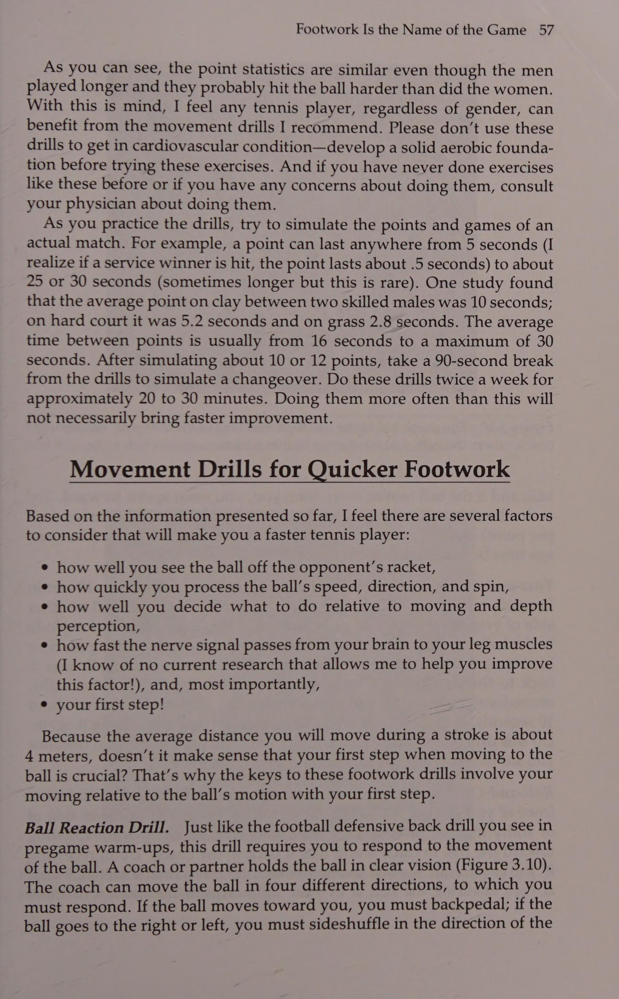
Mặc dù việc tạo spin được thảo luận sâu trong chương 6, nhưng có một số điều bạn cần lưu ý liên quan đến chủ đề này. Ví dụ: bạn có thể kết hợp cổ tay và khuỷu tay để đánh nhiều xoáy lên vào bóng nhưng không thể đánh một cú đánh tốc độ cao với xoáy lên nặng. Borg có thể coi là một ví dụ về một người đánh khá mạnh và có nhiều xoáy lên.
Although spin production is discussed in depth in chapter 6, there are some things you should be aware of relative to this topic. For example, you can incorporate the wrist and elbow to hit a lot of topspin on the ball but not to hit a high-velocity shot with heavy topspin. Borg can serve as an example of someone who hit fairly hard and with much topspin.
Nhiều người cảm thấy anh ấy là một tay vợt cổ tay vì khả năng theo dõi quá mức của anh ấy. Tuy nhiên, phân tích phim tốc độ cao, được trình bày trong Hình 4.11, cho thấy khuỷu tay và cổ tay của Borg di chuyển rất ít trước khi va chạm nhưng lại di chuyển rất nhiều sau khi bóng được đánh. Chính hành động đầu vợt thẳng đứng, có kiểm soát đã cho phép anh ta đánh được một quả bóng nặng uy lực (Heavy/Solid Ball) với xoáy lên.
Many people felt he was a wristy player because of his exaggerated follow-through. However, a high-speed film analysis, represented in Figure 4.11, shows that Borg’s elbow and wrist moved very little before impact but moved a great deal after the ball was hit. It was the controlled, vertical racket head action that allowed him to hit a heavy ball with -topspin.
Hình 4.11 Hãy quan sát mức độ ít hoạt động của khớp chi trên xảy ra trong cú công bóng thuận tay xoáy lên của vận động viên này.
Figure 4.11 Observe how little upper limb joint action occurs during this ath\ete’s topspin forehand drive.
Truyền một lượng xoáy thích hợp lên bóng Lượng xoáy chính xác đơn giản có nghĩa là đủ độ xoáy để giữ bóng không đi ra ngoài và khiến đối thủ ở thế phòng thủ (xem chương 6). Quá nhiều xoáy sẽ làm mất đi vận tốc theo phương ngang của quả bóng, vì độ xoáy là do chuyển động thẳng đứng của vợt gây ra. Khi vợt di chuyển theo chiều dọc để tạo xoáy, bạn phải hy sinh tốc độ vợt về phía trước. Hình 4.12a cho thấy chuyển động của vợt khi đánh bóng với ít xoáy lên. Ngược lại, Hình 4.12b mô tả chuyển động của vợt trong một Trận kiểm soát so với sức mạnh 25° I 65° 2 Se te er Hình 4.12 Những sơ đồ này mô tả chuyển động vợt tuyến tính trong (a) xoáy lên nhẹ và (b) xoáy lên nặng. cú đánh xoáy lên nặng. Hình 4.13a và b minh họa các cú đánh trong đó bóng được đánh với xoáy xuống nhẹ và xoáy xuống nặng. Trong cả bốn trường hợp, vợt di chuyển tổng khoảng cách như nhau (được biểu thị bằng chiều dài của mũi tên), nhưng chuyển động về phía trước bị rút ngắn khi vợt tạo ra xoáy lên hoặc xoáy xuống quá mức. Khi chuyển động về phía trước ít hơn và vẫn xảy ra trong cùng một khoảng thời gian, quả bóng sẽ không nhận được nhiều 45° 15° ae Hình 4.13 Những hình ảnh này minh họa chuyển động của vợt cần thiết để đánh (a) xoáy xuống nhẹ và (b) xoáy xuống nặng.
Imparting the Proper Amount of Spin on the Ball The correct amount of spin simply means enough spin to keep the ball from going out and to keep the opponent on the defensive (see chapter 6). Too much spin takes away from the horizontal velocity of the ball, because spin is caused by the vertical motion of the racket. When the racket moves vertically to produce spin, you sacrifice forward racket speed. Figure 4.12a shows the racket motion when a ball is hit with little topspin. In contrast, Figure 4.12b depicts the racket motion during a Figure 4.12 These diagrams depict the linear racket motion during (a) slight topspin and (b) heavy topspin. heavy topspin stroke. Figure 4.13a and b illustrates strokes in which the ball is hit with slight underspin and heavy underspin. In all four cases, the racket travels the same total distance (as denoted by the length of the arrows), but the forward motion is shortened when the racket imparts excessive topspin or underspin. When the forward motion is less and still occurs over the same time period, the ball will not receive as much Figure 4.13 These pictures illustrate the racket movement necessary to hit (a) slight underspin and (b) heavy underspin.
86 High Tech Tennis có lực về phía trước và sẽ không di chuyển nhanh.
forward force and will not travel as fast.
Một lỗi phổ biến của nhiều tay vợt trình độ cao là thực hiện xoay quá nhiều mà vẫn cố đánh bóng thật mạnh. Rất ít tay vợt có thể đánh nhiều xoáy và duy trì được khả năng kiểm soát một cách nhất quán.
A common mistake of many advanced players is using excessive spins and still trying to hit the ball very hard. Very few players can hit a lot of spin and consistently maintain control.
Bạn nên thực hiện những cú đánh xa lưới từ 4 đến 6 feet và đi sâu vào phần sân đối phương. Để làm được điều này, bạn sẽ phải thực hiện những cú đánh xuyên thấu với độ xoáy nhẹ. Lấy chiều sâu sân và khoảng trống phía trên lưới làm mục tiêu luyện tập của bạn, bạn sẽ thấy sự cải thiện đáng kể trong các cú đánh của mình.
You should work on hitting shots that clear the net by 4 to 6 feet and go deep into your opponent’s court. To do this you'll have to hit penetrating strokes with slight spin. Having depth in the court and clearance above the net as your practice goals, you should see significant improvement in your shots.
Đánh bóng với một cú theo dõi hoàn chỉnh Một số yếu tố quyết định mức độ bạn đánh một quả bóng rắn rất khó theo dõi (ví dụ: vị trí bóng chạm vào mặt vợt). Tuy nhiên, việc theo dõi có thể là yếu tố quan trọng nhất mà bạn có toàn quyền kiểm soát. Cách duy nhất bạn có thể thực hiện được những cú đánh xuyên đất là vung đầu vợt qua tác động một cách hiệu quả. Cho đến khi bóng được đánh, đầu vợt không thể giảm tốc trong quá trình vung vợt về phía trước.
Hitting the Ball With a Complete Follow-Through Some of the factors that determine how well you hit a solid ball are difficult to monitor (e.g., where the ball hits on the racket face). However, follow-through may be the most important factor over which you have total control. The only way you can hit penetrating ground strokes ‘is to swing the racket head through impact effectively. Until the ball is hit, there cannot be racket head deceleration during the forward swing.
Mặc dù bóng đã được đánh, bạn có thể học được rất nhiều điều về cú đánh của mình từ cách bạn thực hiện cú đánh đó.
Even though the ball is already hit, you can learn a great deal about your stroke from how you follow through.
Nhiều tay vợt kết thúc cú đánh theo hướng của họ với vợt hướng lên cao, qua lưới hoặc cả hai (Hình 4.14). Điều này có nghĩa là các cú xoay của họ phải đi theo một vòng cung trong khi di chuyển từ vị trí đã chuẩn bị đầy đủ cho đến khi kết thúc động tác theo dõi. Những tay vợt khác quàng vợt qua vai, như bạn thấy trong Hình 4.15. Và vẫn còn những người khác thực hiện theo với mặt vợt hướng lên trời, như minh họa trong Hình 4.16.
Many players finish their follow-throughs with their rackets pointing high, across the net, or both (Figure 4.14). This means that their swings must follow an arc while traveling from the fully prepared position to the end of the follow-through. Other players wrap their rackets over their shoulders, as you see in Figure 4.15. And still others follow through with their racket faces directed skyward, as demonstrated in Figure 4.16.
Không có gì sai với bất kỳ cú đánh theo cú đánh nào trong số này, nhưng bạn phải cân nhắc một điều khi bạn tăng tốc vợt khi tiếp xúc vào cú đánh theo cú đánh của mình. Đừng nghĩ đến việc bạn sẽ theo bóng như thế nào mà hãy nghĩ đến mặt vợt sẽ di chuyển như thế nào khi tiếp xúc bóng. Một gợi ý mà tôi đưa ra cho các vận động viên của mình là hãy nghĩ đến việc làm cho các sợi dây bám theo quả bóng càng lâu càng tốt khi nó đánh. Những tay vợt nhớ được cụm từ đó đã thành công khá tốt trong việc thực hiện cú đánh có kiểm soát.
There is nothing wrong with any of these follow-throughs, but you must consider one thing as you accelerate the racket through impact into your follow-through. Don’t think of how you will follow through but of how the racket face will travel through impact. One cue I give my athletes is to think of making the strings follow the ball as long as possible when it’s hit. Players who remember that phrase have had pretty good success in swinging through impact with control.
Mẹo chơi tennis của Tiến sĩ Jack Để đảm bảo tác động tốt, hãy cố gắng làm cho mặt vợt theo bóng.
Dr. Jack’s Tennis Tips To ensure a good impact, try to make the racket face follow the ball.
Một cách khác để xem xét điều này là hãy nghĩ đến việc đánh liên tiếp ba quả bóng tưởng tượng bằng một cú đánh của bạn.
Another way to look at this is to think of hitting three imaginary balls sequentially with your one stroke.
Kiểm soát so với sức mạnh 87 Hình 4.14 Những bức ảnh này cho thấy cú đánh tiếp theo của vận động viên kết thúc với vợt hướng lên cao.
Figure 4.14 These photos show the athlete’s follow-through ending with the racket pointing high.
Một cú xoay hoàn chỉnh với đầy đủ động tác theo sau là cần thiết để đạt được vận tốc tối đa đồng thời truyền độ xoáy chính xác cho quả bóng. Để đánh xuyên qua bóng, bạn phải cố gắng đánh bóng tốt ở phía trước đường giữa cơ thể (Hình 4.17). Đánh bóng ở phía sau giữa cơ thể buộc bạn phải vung lên nhanh và do đó không đánh được bóng 88 High Tech Tennis Hình 4.15 Đây là một động tác quấn tiếp theo cho trái tay bằng hai tay.
A complete swing with a full follow-through is necessary to achieve maximum velocity while imparting the correct amount of spin on the ball. In order to hit through the ball, you must strive to hit it well in front of your body midline (Figure 4.17). Hitting the ball behind the middle of the body forces you to swing upward quickly and thus not hit the ball Figure 4.15 This is a wrap follow-through for a two-handed backhand.
Hình 4.16 Vận động viên này thể hiện một cú đánh tiếp theo trong đó mặt vợt hướng lên trời. một cách hiệu quả (Hình 4.18). Điểm tiếp xúc về phía trước sẽ cho phép bạn truyền toàn bộ lực cơ thể lên chi trên và đạt được vận tốc vợt cao.
Figure 4.16 This athlete demonstrates a follow-through in which the racket faces skyward. effectively (Figure 4.18). A forward contact point will allow you to transfer all bodily forces to the upper limb and to attain a high racket velocity.
Khi bạn đánh bóng, hãy thực hành động tác kéo dài sau khi va chạm. Điều này sẽ giúp bạn tiếp tục tăng tốc vợt khi tiếp xúc. Nếu phần tiếp theo được viết tắt, chắc chắn rằng bạn đã bắt đầu giảm tốc độ vợt trước khi đánh bóng.
As you hit the ball, practice a long follow-through after impact. This will help you to continue accelerating the racket through impact. If the follow-through is abbreviated, it’s a sure bet that you started slowing down the racket before you hit the ball.
Kiểm soát so với sức mạnh a b a b Hình 4.18 Khi bạn buộc phải đánh bóng ở phía sau đường giữa cơ thể, cú xoay của bạn thường sẽ đột ngột với rất ít lực trực tiếp đằng sau nó.
Figure 4.18 When you are forced to hit the ball behind your body midline, your swing will usually be abrupt with little direct force behind it.
Tiếp xúc với bóng trong vùng đánh của bạn Thành phần cuối cùng của việc đánh một quả bóng rắn là tiếp xúc với bóng ở độ cao tối ưu cho cơ thể bạn. Đây là yếu tố quan trọng trong việc phân biệt tay vợt giỏi với tay vợt chuyên nghiệp. Hầu hết các đối thủ thường để bóng xuống quá thấp trước khi đánh, điều này khiến cho cú đánh xuyên đất khó đánh trúng. Chỉ cần thêm một bước hoặc một bước rưỡi về phía trước, những cú đánh nền mạnh mẽ sẽ nằm trong tầm tay. Hình 4.19 minh họa ba độ cao khác nhau mà tại đó quả bóng có thể gặp nhau.
Contacting the Ball in Your Strike Zone The final component of hitting a solid ball is meeting the ball at the optimum height for your body. This is a big factor in separating good tournament players from pros. Most competitors often let the ball get too low before hitting it, which makes a penetrating ground stroke difficult to hit. With one extra step or step-and-a-half forward, aggressive ground strokes are within reach. Figure 4.19 illustrates three different heights at which a ball may be met.
90 High Tech Tennis c Hình 4.19 Những sơ đồ này minh họa việc thực hiện một cú đánh xuyên đất dễ dàng hơn nhiều khi bạn cố gắng đạt được điểm tiếp xúc thích hợp so với cơ thể của mình.
Figure 4.19 These diagrams illustrate how much easier it is to hit a penetrating ground stroke when you strive for a proper impact point relative to your body.
Quan sát các điểm tiếp xúc bóng khác nhau: (a) gần mắt cá chân, (b) cao hơn đầu gối một chút và (c) gần cao ngang thắt lưng. Cũng lưu ý quỹ đạo bay của bóng tương ứng từ các điểm va chạm đó. Vì vậy, bạn nên cố gắng tiếp xúc bóng gần cao ngang thắt lưng bất cứ khi nào có thể.
Observe the different points of ball contact: (a) near ankle level, (b) slightly above knee level, and (c) near waist height. Also note the respective ball flight trajectories from those impact points. Therefore, you should strive to contact a ball near waist height whenever possible.
Hình 4.19a cho thấy một quả bóng được đánh cách mặt đất khoảng 12 inch (thấp hơn mức đầu gối đối với người cao 6 feet). Bóng phải đi theo đường đi lên khá dốc để qua lưới và rơi sâu vào phần sân đối phương. Nếu bạn muốn vung mạnh vào bóng, bạn phải truyền nhiều xoáy lên vào bóng để nó tiếp đất trong ranh giới của sân. Mặc dù xoáy lên nặng là một cách để đánh một quả bóng rắn, nhưng tôi nghĩ bạn sẽ thấy việc đó dễ dàng hơn nhiều nếu điểm tiếp xúc cao hơn mặt đất một chút.
Figure 4.19a shows a ball that has been hit about 12 inches above the ground (well below knee level for someone 6 feet tall). The ball must follow a fairly steep upward path to clear the net and land deep in the opponent’s court. If you wish to swing hard at the ball, you have to impart a lot of topspin on the ball so it will land within the court boundaries. Although heavy topspin is one way to hit a solid ball, I think you'll see how much easier it is if the contact point is a little higher above the ground.
Quả bóng trong Hình 4.19b được chạm tới ngay dưới mức lưới (cao 2-1/2 feet).
The ball in Figure 4.19b is met just below net level (2-1/2 feet high).
Bất kỳ cú sút tốc độ cao nào cũng phải theo đường hướng lên trên một chút để trọng lực không kéo bóng vào lưới. Độ xoáy cần thiết để đưa bóng vào sân ít hơn độ xoáy yêu cầu trong Hình 4.19a (giả sử hai quả bóng được đánh ở cùng một vận tốc). Bởi vì quả bóng trong Hình 4.19b không cần phải được đánh với quỹ đạo hướng lên nhiều như trong Hình 4.19a, cú đánh có thể mang lại vận tốc bóng cao hơn mặc dù quả bóng vẫn có thể có quá nhiều xoáy lên để tạo ra hiệu ứng thực sự của một quả bóng đặc.
Any high-velocity shot must follow a slightly upward path so gravity won't pull the ball into the net. The amount of spin necessary to bring the ball into the court is less than that required in Figure 4.19a (assuming the two balls are hit at the same velocity). Because the ball in Figure 4.19b doesn’t have to be hit with as much upward trajectory as the one in Figure 4.19a, the stroke could provide higher ball velocity even though the ball still might have too much topspin to give the true effect of a solid ball.
Quả bóng trong Hình 4.19c ở độ cao lý tưởng để một người cao 6 feet có thể đánh một quả bóng đặc: cao xấp xỉ thắt lưng hoặc cao hơn một chút. Bóng không cần phải đi theo đường dốc hướng lên để tiếp đất có chiều sâu ở phần sân sau của đối phương và cần ít độ xoáy hơn để giữ bóng trong ranh giới sân. Quả bóng trong Hình 4.19c có thể di chuyển với tốc độ cao hơn, khiến nó trở thành một cú đánh có tính tấn công cao hơn.
The ball in Figure 4.19c is at the ideal height for a 6-foot-tall person to hit a solid ball: approximately waist height or slightly above. The ball does not have to follow a steep upward path to land with depth in the opponent's backcourt and requires less spin to keep it within the court boundaries. The ball in Figure 4.19c can travel at a higher rate of speed, making it a more offensive shot. Dr. Jack’s Tennis Tips
Lời khuyên khi chơi tennis của Tiến sĩ Jack Về cơ bản có một cách để định vị cơ thể của bạn sao cho bóng tiếp xúc trong vùng tấn công của bạn. Khi chuẩn bị đánh từng cú đánh, bạn phải di chuyển bàn chân của mình. Bằng cách di chuyển nhanh về phía trước với một quả bóng ngắn có độ nảy thấp, đánh một quả bóng đang bay lên hoặc di chuyển lùi lại trên một quả bóng sâu, có độ nảy cao, bạn sẽ ngạc nhiên trước những cú đánh của mình sẽ được cải thiện như thế nào. Ngoài việc cho phép bạn đánh một quả bóng chắc chắn, kỹ thuật này sẽ cho phép cú đánh của bạn di chuyển theo một kiểu tương tự mỗi lần, làm cho tất cả các cú đánh của bạn trở nên nhất quán hơn.
There is basically one way to position your body so the ball is contacted in your strike zone. As you prepare to hit each stroke, you must move your feet. By quickly moving forward on a short lowbouncing ball, hitting a ball on the rise, or moving backward on a deep, high-bouncing ball, you’ll be amazed at how your strokes will improve. As well as enabling you to hit a consistently solid ball, this technique will allow your stroke to move in a similar pattern each time, making all of your shots more consistent. NET RESULTS
KẾT QUẢ TUYỆT VỜI Khi bạn luyện tập tạo ra nhiều lực hơn cho các cú đánh của mình, hãy luôn lưu ý rằng quần vợt về cơ bản là một trò chơi kiểm soát. Sức mạnh sẽ không có tác dụng mấy nếu bạn không kiểm soát được cú đánh của mình. Từ từ cố gắng kết hợp những lợi ích của khả năng thể chất của cơ thể bạn bằng cách sử dụng xung lượng tuyến tính và xung lượng góc một cách tối ưu. Bằng cách sử dụng các bộ phận cơ thể một cách đồng bộ, bạn sẽ phát triển được nguồn cung cấp năng lượng âm thanh. Đừng cố gắng đánh những cú xoáy quá mức mà hãy nghĩ đến việc đưa bóng đi sâu vào phần sân đối phương. Động tác chân đúng cách cũng sẽ giúp bạn đạt được mục tiêu đánh bóng chắc chắn. Bằng cách đánh bóng ở độ cao mong muốn so với mặt sân và với cơ thể của bạn, bạn sẽ có thể tối ưu hóa việc truyền lực tới bóng.
As you practice generating more force behind your shots, always be aware that tennis is basically a control game. Power will do little good if you have no control over your shots. Slowly try to combine the benefits of your body’s physical capabilities by utilizing linear and angular momentum in an optimum combination. By using your body parts in synchrony, you will develop a sound power supply. Don’t try to hit excessive spins, but think of driving the ball deep into your opponent's court. Proper footwork will also help you reach your goal of hitting a solid ball. By hitting the ball at the desirable height relative to the court and to your body, you will be able to optimize your force transfer to the ball.
Vì vậy, hãy cố gắng chú ý cẩn thận đến các khái niệm được mô tả trong chương này. Nếu bạn luyện tập chúng một cách chăm chỉ, bạn sẽ có thể cải thiện đáng kể các cú đánh nền của mình. Bằng cách học cách thực hiện những cú đánh mặt đất hung hãn một cách nhất quán, bạn sẽ có khả năng chơi một trò chơi tấn công, tấn công mà không cần phải dựa vào phong cách chơi giao bóng và vô lê. Do những thay đổi to lớn mà môn quần vợt đã trải qua trong vài năm qua (ví dụ: mặt sân chậm hơn và vợt có hiệu suất cao), việc đánh những cú đánh tấn công trên mặt đất nhanh chóng trở thành cách để phát triển một trò chơi quần vợt chiến thắng. Việc phát triển các kiểu đánh mặt đất này kết hợp với tính nhất quán của cú đánh phải là mục tiêu của mọi tay vợt trong giải đấu. bạn nhé:
Therefore, try to pay careful attention to the concepts described in this chapter. If you practice them diligently, you should be able to greatly improve your ground strokes. By learning to hit consistently aggressive ground strokes, you will be capable of playing an offensive, attacking game without having to rely on the serve-and-volley style of play. Due to tremendous changes that tennis has undergone in the past few years (e.g., slower courts and highperformance rackets), hitting offensive ground strokes is quickly becoming the way to develop a winning tennis game. Development of these types of ground strokes combined with shot consistency should be the goal of every tournament player.
O gaan 6) H25 Siete ‘iis bos RO edie i Bai. fi ed ete a tee muôi tôi eet at e Diba ae as aes é te i. ii ed "e a —— a a —— ae oe tT nll 2aaeh ts a wy 4 en ih 9p —_ Limetic af q-a ta, P khoen aj) Sit baltoe it, bi roe . : oo 'te? wy ih Powe ys te 7 thuê iM inl? tue Svore fen ep eee gretGm 2+ fan Pl wie tite etic ding sexe rranatl air pe Tee Sv age) efi li (tes lươn vị cứu tinh ude aeut Qa bilge rên rỉ) ponte ey ih igre ater et aera ay i '- ny talwee haa of Eared) wolls lbw supiniies) 208 y sia) Aes PS fiat ERIS Ge Qitivlegh (ae va toa trea oy Sit ee a? ep Aw Lili '-se-welamrry A mannan rem dle nat a ats =) '4 = = 9 a “ie hl Fa ad ee Suthep cote a pares 1 tate' Goad inte awl aE ie eal eae po pl, Oh Es eg lt ni' ? ee bg che eR tm me arama Tae Po Glatt aint oti the fini — Tiwid.ain es. Wey Dunitabomek và aruanteette.
‘ Limetic af q-a ta, P eyelets aj) Sit baltoe it, bi roe . : oo ‘te? wy ih Powe ys te 7 hire iM inl? tue Svore fen ; ep eee gretGm 2+ fan Pl wie tite etic ding sexe rranatl } air pe Tee Sv age) efi li (tes eel savior ude aeut Qa & } bilge whiny) ponte ey ih igre ater et aera ay > i ‘ny talwee haa of eared) wolls lbw supiniies) 208 y sia) Aes PS fiat ERIS Ge Qitivlegh (ae va toa trea oy Sit ee = = a? ep Aw Lili ‘-se-welamrry A mannan rem dle nat a ats _ =) ‘4 = = 9 a " “ie hl F ad ee Suthep cote a pares 1 tate’ Goad inte awl aE ie eal eae po pl, Oh Es eg lt ni’ ? ee , bg che eR tm me arama Tae Po Glatt aint oti the fini — Tiwid.ain es. wey Dunitabomek w aruanteette.
Bt 3 rapt teite nephrons Se i aaa sậy disetepottink pak saniad Wi tins teed
Bt 3 rapt teite nephrons Se i aaa reed disetepottink pak saniad . Wi tins teed —
Chương 6: Cuộc Tranh Luận Thế Kỷ: Trái Tay Một Tay Đối Đầu Trái Tay Hai Tay
Chapter 6: One-Handed vs Two-Handed Backhand: Biomechanics, Range of Motion, and Skill Acquisition
Hạt đậu.
The One-Handed Versus the Two-Handed Backhand: Which Is Better?
PS Peek ER Trái tay một tay so với trái tay hai tay:
H ow would you react if I told you that a two-handed backhand is easier to hit than a one-handed backhand?
Cái nào tốt hơn?
What if you read that there is very little difference in reach between onehanded and two-handed backhands?
Bạn sẽ phản ứng thế nào nếu tôi nói với bạn rằng trái tay bằng hai tay dễ đánh hơn trái tay bằng một tay?
I feel that both of these statements are true, and though many traditionalists might argue vehemently against them, these arguments are outdated when compared to the findings of recent sport science research.
Điều gì sẽ xảy ra nếu bạn đọc được rằng có rất ít sự khác biệt về tầm với giữa cú đánh trái tay bằng một tay và bằng hai tay? Tôi cảm thấy cả hai tuyên bố này đều đúng và mặc dù nhiều người theo chủ nghĩa truyền thống có thể phản đối kịch liệt những lập luận này nhưng những lập luận này đã lỗi thời khi so sánh với những phát hiện của nghiên cứu khoa học thể thao gần đây. Trước khi áp dụng kết quả nghiên cứu này vào trò chơi của bạn, chúng ta nên thảo luận xem những nét này ra đời như thế nào và các cơ quan chức năng khác nhau nhìn nhận chúng như thế nào.
Before applying the results of this research to your game, we should discuss how these strokes came into being and how various authorities view them. The one-handed backhand has been used since tennis began in the 1870s. The two-handed backhand was virtually unheard of until the 1930s, when Vivian McGrath became the world’s first highly ranked player to compete using this stroke.
Cú trái tay một tay đã được sử dụng kể từ khi quần vợt bắt đầu vào những năm 1870. Trái tay bằng hai tay hầu như chưa từng được biết đến cho đến những năm 1930, khi Vivian McGrath trở thành tay vợt có thứ hạng cao đầu tiên trên thế giới thi đấu bằng cú đánh này. Sau đó, rất ít tay vợt sử dụng trái tay bằng hai tay cho đến những năm 1970, khi cú đánh trở nên phổ biến nhờ Bjorn Borg, Chris Evert, Jimmy Connors và Tracy Austin. Nhưng tại sao lại có sự trở lại đột ngột của người thuận tay đôi?
Very few players used the twohanded backhand after that until the 1970s, when the stroke became popular because of Bjorn Borg, Chris Evert, Jimmy Connors, and Tracy Austin. But why the sudden return of the two-hander? What the Experts Say Authorities offer various reasons for the prominence of the two-handed backhand. Some say today’s players used it when they were young because they didn’t have enough strength or confidence to control the racket with a one-handed backhand.
94 Quần vợt công nghệ cao Điều các chuyên gia nói Các nhà chức trách đưa ra nhiều lý do khác nhau cho sự nổi bật của trái tay bằng hai tay. Một số người nói rằng các tay vợt ngày nay sử dụng nó khi còn trẻ vì họ không có đủ sức mạnh hoặc sự tự tin để kiểm soát vợt bằng cú trái tay bằng một tay. Trong Hình 5.1, bạn có thể thấy một excel- a Hình 5.1 Rõ ràng là với hai tay cầm vợt (a), vận động viên có thể kiểm soát chuyển động của vợt tốt hơn so với khi chỉ sử dụng một tay (b). cho mượn vận động viên quần vợt có cú đánh trái tay bằng hai tay tốt nhưng không thể đánh cú đánh bằng một tay tốt. Những người ủng hộ cú đánh trái tay bằng một tay cảm thấy rằng cú đánh bằng hai tay là một sự ảnh hưởng và cho rằng việc vung vợt tennis bằng cả hai tay là không chính thống và cồng kềnh.
In Figure 5.1, you can see an excel-a Figure 5.1 It seems obvious that with two hands on the racket (a), the athlete can better control its motion than when using only one hand (b). lent tennis player who has a good two-handed backhand but can’t hit a one-handed stroke very well. Proponents of the one-handed backhand feel that the two-handed stroke is an affectation and state that the swinging of a tennis racket with both hands is unorthodox and cumbersome. They go on to note that newcomers to the game appear to be caught in the grip of a revolution because of a desire to imitate the top players in the world.
Họ tiếp tục lưu ý rằng những người mới tham gia trò chơi dường như bị cuốn vào vòng vây của một cuộc cách mạng vì mong muốn bắt chước những tay vợt hàng đầu trên thế giới.
Advocates of both types of backhand drives have proposed that their preferred strokes should be hit similar to a forehand.
Những người ủng hộ cả hai loại cú công bóng trái tay đã đề xuất rằng các cú đánh ưa thích của họ nên được đánh tương tự như cú thuận tay. Tôi tin rằng đây là trường hợp của cú đánh trái tay bằng hai tay nhưng không xảy ra với cú đánh bằng một tay.
I believe this is the case with the two-handed backhand but not with the one-handed stroke. In the forehand, for instance, an eastern, semiwestern, or western forehand grip is usually recommended, and ball contact should occur over the front foot.
Ví dụ, trong cú thuận tay, kiểu cầm thuận tay phía Đông, nửa Tây hoặc phía Tây thường được khuyến khích và việc tiếp xúc bóng phải xảy ra qua bàn chân trước. Tuy nhiên, để đánh trái tay bằng một tay một cách hiệu quả, cần phải thay đổi cách cầm (so với bất kỳ cách cầm thuận tay nào đã lưu ý trước đó), tiếp xúc bóng phải xảy ra phía trước bàn chân trước (Hình 5.2). Ngoài ra, một nhóm cơ hoàn toàn khác được sử dụng để kiểm soát vợt, khiến cho cơ chế vung vợt gần như không có sự tương đồng. Cú thuận tay và cú trái tay bằng hai tay giống nhau hơn nhiều, như được thể hiện trong kiểu đánh một tay và một tay. Điểm tiếp xúc trái tay bằng hai tay trong Hình 5.3. Để đánh trái tay bằng hai tay, có thể sử dụng hai cách cầm vợt thuận tay phía đông (mặc dù tay gốc có thể được thay đổi thành kiểu cầm vợt lục địa nếu muốn) và việc tiếp xúc bóng thường xảy ra bằng bàn chân trước giống như trong cú thuận tay. Trên thực tế, nhiều người nói rằng sử dụng cú đánh trái tay bằng hai tay cũng giống như đánh cú thuận tay từ phía đối diện.
To hit a one-handed backhand effectively, however, a grip change is necessary (from any of the previously noted forehand grips), the ball contact must occur ahead of the front foot (Figure 5.2). In addition, a completely different set of muscles is used for racket control, making similarity of swing mechanics virtually nonexistent. The forehand and two-handed backhand are much more similar, as shown by the One-Handed Vs. Two-Handed Backhand contact point in Figure 5.3. To hit a two-handed backhand, two eastern forehand grips can be used (although the base hand can be changed to a continental grip if desired) and ball contact usually occurs over the front foot just as in the forehand. In fact, many say that using a twohanded backhand is just like hitting a forehand from the opposite side.
Hình 5.2 Tay vợt này chứng minh vị trí tiếp xúc bóng phải xảy ra để thực hiện cú công bóng trái tay bằng một tay hiệu quả.
Figure 5.2 This player demonstrates where ball contact must occur for an effective one-handed backhand drive.
Hình 5.3 Bạn có thể thấy rằng tay vợt này sẽ đánh bóng ở phía trước cơ thể bằng cú trái tay bằng hai tay (a), giống như khi anh ta đánh bóng bằng cú thuận tay (b).
Figure 5.3 You can see that this player will hit the ball in front of his body with a two-handed-backhand (a), much as he would on a forehand (b). Reach
Reach Bởi vì cả hai tay đều được sử dụng cho người thuận tay bằng hai tay, nên những người ủng hộ trái tay một tay hết lần này đến lần khác chỉ trích nó vì nó thiếu 96 Lời khuyên về Quần vợt Công nghệ Cao của Tiến sĩ Jack. Nếu bạn sử dụng trái tay bằng hai tay, tôi khuyên bạn nên sử dụng cách cầm vợt lục địa ở tay đế (bàn tay gần cơ thể bạn nhất). Điều này sẽ làm giảm bớt căng thẳng cho cánh tay và cho phép bạn tự do hơn trong việc thực hiện cú đánh. đạt. Trong một nghiên cứu phim tốc độ cao mà tôi thực hiện trên 36 tay vợt có kỹ năng cao, tôi không thể tìm thấy sự khác biệt nào về tầm với giữa hai cú đánh khi những tay vợt đã chuẩn bị kỹ càng để vung vợt. Khi các tay vợt trong nghiên cứu của tôi không phải chạy để chuẩn bị đánh, việc tiếp xúc bóng trong mỗi cú đánh xảy ra ở cùng một khoảng cách với cơ thể. Câu nói này thường gợi lên câu hỏi sau: Thế còn tình huống trong đó một tay vợt thực sự bị căng ra để thực hiện cú trả bóng trái tay thì sao? Chúng ta có thể hình dung làm thế nào các vận động viên chuyên nghiệp có thể lao vào thực hiện cú đánh bằng trái tay bằng một tay, nhưng còn những tay vợt sử dụng trái tay bằng hai tay thì sao? Liệu họ cũng có thể đạt được tầm bắn rộng? Có lẽ là không! Tuy nhiên, bạn đã thấy bao nhiêu cú đánh trái tay bằng một tay trong số đó mang lại chiến thắng?
Because both hands are used on the two-hander, proponents of the onehanded backhand have time and time again denounced it for its lack of Dr. Jack’s Tennis Tips If you use a two-handed backhand, I recommend you use a continental grip on the base hand (the hand closest to your body). This will alleviate any stress to the arm and allow you more freedom in stroke production. reach. In a high-speed film study I conducted on 36 highly skilled players, I could find no differences in reach between the two strokes when the players were properly prepared to swing. When the players in my study didn’t have to run for shot preparation, ball contact for each stroke occurred about the same distance from the body. This statement usually stimulates the following question: What about the situation in which a player is really stretched out for a backhand return? We can visualize how the pros can lunge at a shot with a one-handed backhand, but what about those players utilizing a two-handed backhand? Could they also reach the wide shot? Probably not! However, how many of those lunging one-handed backhands have you seen hit for winners?
Tôi chắc chắn là rất ít. Hầu hết những cú đánh rộng đó đều được trả về dưới dạng các cú vô-lê hoặc lốp bóng phòng thủ; chúng không phải là những đòn thâm nhập, tấn công. Quan điểm của tôi là một đấu thủ có cú trái tay bằng hai tay hiệu quả (Hình 5.4) có thể học cách đánh những cú lao bằng một tay đó và phát triển Hình 5.4 Mặc dù đấu thủ trong những hình này có cú đánh trái tay bằng hai tay cực kỳ hiệu quả (a), anh ta hoàn toàn có khả năng thực hiện động tác lao bằng một tay khi bị kéo ra khỏi sân (b).
Very few, I’m sure. Most of those wide shots are returned as defensive underspin drives or lobs; they are not penetrating, offensive strokes. My point is that a player who has an effective two-handed backhand (Figure 5.4) can learn to hit those one-handed lunges and develop a Figure 5.4 Although the competitor seen in these figures has an extremely effective two-handed backhand (a), he is quite capable of performing a onehanded lunging maneuver when he is pulled wide of the court (b).
Một tay Vs. Trái tay hai tay 97 cú công bóng xoáy xuống hoặc lốp bóng phòng thủ tốt. Vì vậy, thực sự không có lý do gì để tránh cú trái tay bằng hai tay do được cho là thiếu tầm với, đặc biệt là với những quả bóng mà bạn có thể dễ dàng chuẩn bị.
One-Handed Vs. Two-Handed Backhand 97 sound defensive underspin drive or lob. Therefore, there is really no rationale for avoiding a two-handed backhand due to a supposed lack of reach, especially on balls you can easily prepare for. Low-Bouncing Balls
Bóng có độ nảy thấp Một cú đánh có thể gây ra vấn đề cho tay vợt bằng hai tay là bóng thấp ở phía trước cơ thể (Hình 5.5). Rõ ràng, với cả hai tay cầm vợt, Hình 5.5 Tay vợt sử dụng trái tay bằng hai tay thường gặp vấn đề với bóng có độ nảy thấp. Tay vợt trong hình này đã sử dụng động tác chân cực tốt để vào vị trí cho pha trả bóng. tay vợt phải thấp hơn để đánh trả một cú đánh tấn công như vậy. Với cú đánh trái tay bằng một tay, cơ thể không cần phải hạ thấp quá mức để đánh bóng hiệu quả. Do đó, tay vợt có cú đánh trái tay bằng hai tay phải chạm bóng nhanh hơn để có điểm tiếp xúc bóng cao hơn hoặc phải học cách đánh cú đánh thấp đó bằng một tay, như tay vợt trong Hình 5.6.
The one shot that could cause a two-hander problems is a low ball in front of the body (Figure 5.5). Obviously, with both hands on the racket, Figure 5.5 A player using a two-handed backhand often has problems with a low-bouncing ball. The player in this figure has used extremely good footwork to get in position for the return. the player must get lower to return such a shot offensively. With a onehanded backhand, the body doesn’t have to get quite as low to hit the ball effectively. Therefore, the player with a two-handed backhand must get to the ball quicker for a higher ball-contact point or must learn to hit that low shot with one hand, as has the player in Figure 5.6. Dr. Jack’s Tennis Tips
Lời khuyên về quần vợt của Tiến sĩ Jack Nếu bạn là một vận động viên trong giải đấu hoặc mong muốn trở thành một vận động viên, tôi khuyên bạn nên học cách đánh tiếp cận trái tay bằng một tay. Cú đánh thấp ở phía trước cơ thể là yếu tố hạn chế chính đối với cú đánh trái tay bằng hai tay. Tham khảo chương 9 để biết cách thực hiện cú đánh tiếp cận.
If you are a tournament player or wish to become one, I suggest that you learn a one-handed backhand approach shot. A low shot in front of the body is a major limiting factor for a two-handed backhand. Refer to chapter 9 to study how the approach shot should be hit. Figure 5.6 Here you see how a player with a two-handed backhand hits an approach shot.
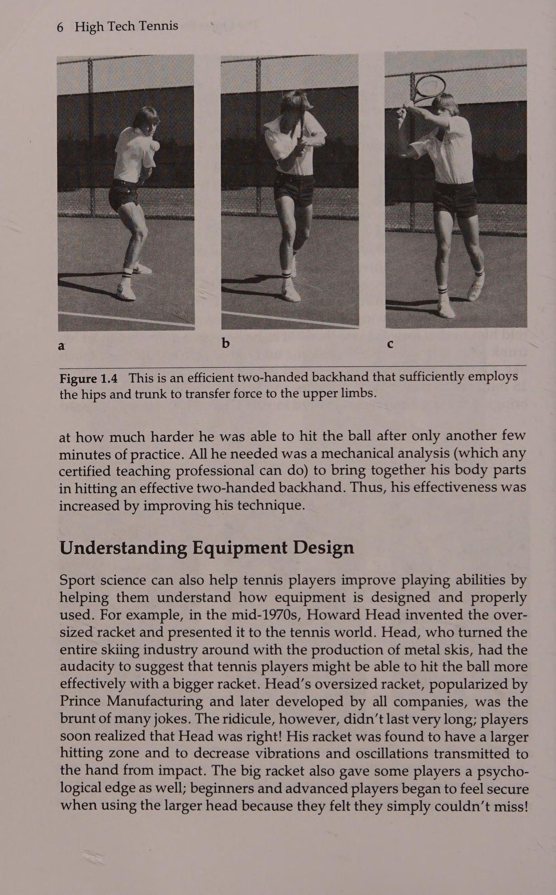
98 High Tech Tennis b c Hình 5.6 Ở đây bạn thấy một tay vợt có cú đánh trái tay bằng hai tay thực hiện cú đánh tiếp cận như thế nào.
The Role of Muscular Strength It has been fairly well accepted that the one-handed backhand requires greater strength of the performer.
Vai trò của sức mạnh cơ bắp Người ta đã chấp nhận khá tốt rằng trái tay bằng một tay đòi hỏi sức mạnh lớn hơn của người thực hiện. Bởi vì chỉ có một chi trên được sử dụng để tạo ra lực khi vung vợt và vì cánh tay không thể dựa vào hành động của thân cây nhiều như cú đánh trái tay bằng hai tay, nên cú đánh bằng một tay đòi hỏi nhiều sức mạnh hơn. Người mới bắt đầu sử dụng trái tay bằng một tay thường bị chuột rút khi giữ khuỷu tay rất gần cơ thể (Hình 5.7), chính xác là vì lý do đó; người mới bắt đầu không có đủ khả năng thể chất để sử dụng vợt hiệu quả. Ngược lại, chuyển động co rút thường không được thấy ở cú đánh trái tay bằng hai tay bởi vì chuyển động vung vợt đòi hỏi khuỷu tay phải khá gần với cơ thể. Ngoài ra, vợt thực sự sẽ ít khó khăn hơn khi vung vợt bằng hai tay quanh cán vợt so với khi chỉ sử dụng một tay.
Because only one upper limb is used to generate force in swinging the racket, and because the arm can’t rely on trunk action as much as with a two-handed backhand, it makes sense that the one-handed stroke demands more strength. A beginner using a one-handed backhand often cramps the elbow, holding it very close to the body (Figure 5.7), for exactly that reason; the beginner doesn’t have the physical capabilities to wield the racket efficiently. In contrast, the cramping motion is not usually seen in the two-handed backhand because the swinging motion necessitates the elbows being fairly close to the body. In addition, the racket should actually be less difficult to swing with two hands around the handle than when only one hand is used. One-Handed Vs. Two-Handed Backhand
Một tay Vs. Trái tay bằng hai tay Hình 5.7 Tay vợt này thực sự không có đủ khả năng thể chất để hỗ trợ và vung vợt bằng trái tay một tay. Chú ý cách cô ấy vung vợt bằng cách giữ cánh tay trên sát vào cơ thể, cho thấy cô ấy cần hỗ trợ chuyển động vợt bằng thân mình.
Figure 5.7 This player really doesn’t have the physical capabilities to support and swing the racket with a one-handed backhand. Notice how she is swinging by holding her upper arm close to the body, indicating she needs to support the racket motion with her trunk.
Nếu bạn gặp khó khăn trong việc vung vợt bằng một tay, khả năng kiểm soát đầu vợt kém có thể dẫn đến vị trí đánh bóng kém, khó tạo xoáy, xoay đầu vợt nghiêm trọng trong và sau khi va chạm, cũng như điểm tiếp xúc bóng muộn.
If you have difficulty in swinging the racket with one hand, poor racket head control can result, causing poor shot placement, difficulty in imparting spin, severe turning of the racket head during and after impact, and a late ball-contact point.
Để ngăn chặn những vấn đề này, bạn có thể dẫn đầu bằng khuỷu tay hoặc thả đầu vợt ngay trước khi va chạm (Hình 5.8) để giúp đẩy bóng qua lưới.
To prevent these problems, you could lead with the elbow or drop the racket head just prior to impact (Figure 5.8) to help propel the ball over the net.
Sử dụng trái tay bằng hai tay có thể loại bỏ những khó khăn này (mặc dù không phải lúc nào cũng vậy). Điều chắc chắn là với hai tay trên cán vợt, bạn có thể vung vợt lên trên hiệu quả hơn và duy trì khả năng kiểm soát đầu vợt tốt hơn, đặc biệt là khi bắt đầu đánh các cú công bóng xoáy lên.
Using the two-handed backhand could eliminate these difficulties (although not always). It’s definitely true that with two hands on the racket handle you can swing upward more effectively and maintain better racket head control, especially when beginning to hit topspin drives. Spin Production
Sức mạnh tạo xoáy cũng đóng một vai trò quan trọng trong việc tạo ra xoáy lên. Như đã thấy trong Hình 5.9, xoáy lên thường khó đánh khi sử dụng trái tay bằng một tay do lực bổ sung cần thiết để vung vợt theo một góc dốc hướng lên trên. Để so sánh, việc truyền topspin bằng trái tay bằng hai tay rất đơn giản; sức mạnh có được từ việc sử dụng hai tay cho phép tay vợt đạt được góc xoay hướng lên trên cần thiết để tạo ra độ xoáy trên. Tuy nhiên, tay vợt thường gặp vấn đề trong việc điều khiển vợt của họ theo chuyển động từ cao xuống thấp để tạo xoáy xuống và chuyển động từ bên này sang bên kia để tạo xoáy ngang. Một số tay vợt thuận tay sẽ bù đắp khi đánh một cú đánh xoáy xuống bằng cách chỉ dùng một tay để tạo điều kiện thuận lợi cho Quần vợt công nghệ cao tới 100. Hình 5.8 Dưới đây là hai động tác mà tay vợt thường thực hiện khi cố gắng đánh một cú đánh trái tay qua lưới: (a) dẫn đầu bằng khuỷu tay khi chuẩn bị đánh bóng và (b) sử dụng rất nhiều động tác cổ tay để cố gắng tiếp xúc với bóng.
Strength also plays a significant role in producing topspin. As seen in Figure 5.9, topspin is often difficult to hit using a one-handed backhand due to the additional strength needed to swing the racket at a steep upward angle. In comparison, imparting topspin with a two-handed backhand is simple; strength gained from the use of two hands allows the player to achieve the upward swing angle needed to produce topspin. However, players often have problems maneuvering their rackets in a high-to-low motion for underspin and a side-to-side motion for sidespin. Some two-handers will compensate when hitting an underspin shot by following through with only one hand to facilitate the high-to- Figure 5.8 Here are.two of the movements players often go through in trying to hit a backhand drive over the net: (a) leading with the elbow when preparing to hit the ball and (b) using a great deal of wrist action in trying to make contact with the ball.
~\ BAS a b Hình 5.9 Bằng cách so sánh (a) và (b), bạn có thể thấy việc vung vợt bằng một chi khó khăn hơn nhiều khi cố gắng đánh cú công bóng xoáy lên. hành động thấp. Hãy để ý vận động viên trong Hình 5.10 khi anh ta thực hiện một cú đánh xoáy xuống về phía trái tay. Mặc dù một số tay vợt thực hiện cú đánh bằng cả hai tay trên vợt, nhưng nhiều tay vợt sẽ thực hiện cú đánh chỉ bằng một tay trên vợt. Việc thực hiện theo cú đánh bằng một tay có thể cho phép thao tác vợt mượt mà hơn khi tiếp xúc, tạo điều kiện thuận lợi cho chuyển động từ cao xuống thấp để đánh bóng xoáy xuống. (Vui lòng tham khảo chương 6 để biết chi tiết về cách tạo ra xoáy.) Một tay Vs. Trái tay hai tay Hình 5.10 Đây là cách một tay vợt có cú trái tay bằng hai tay có thể đánh một cú trái tay xoáy xuống và thực hiện cú đánh bằng một tay.
Figure 5.9 By comparing (a) and (b), you can see how much more difficult it is to swing the racket with one limb when trying to hit topspin drive. low action. Notice the athlete in Figure 5.10 as he hits an underspin shot on the backhand side. Although some players follow through with both hands on the racket, many players will follow through with only one hand on the racket. A one-handed follow-through might allow a smoother racket action through impact, facilitating the high-to-low motion for hitting underspin. (Please refer to chapter 6 for specifics about how spin is produced.) One-Handed Vs. Two-Handed Backhand Figure 5.10 This is how a player with a two-handed backhand can hit an underspin backhand and follow through with one hand. High-Bouncing Balls
Bóng nảy cao Những người ủng hộ cả hai cú đánh trái tay đã báo cáo rằng bóng có độ nảy cao có thể được đánh hiệu quả hơn với cú đánh ưa thích của họ. Tất cả điều này phụ thuộc vào thể lực của tay vợt và kiểu bắn trúng. Rất khó để đánh một cú trái tay bằng một tay với độ xoáy lên trên một quả bóng nảy ở độ cao ngang đầu. Xoáy xuống thường được khuyến nghị cho cú đánh này và bóng thường không thể được đánh với vận tốc quá cao. Để so sánh, một tay vợt có cú trái tay bằng hai tay có thể mạnh mẽ đánh một cú đánh ngang bằng đầu người hoặc bằng xoáy lên và thường có tốc độ bóng cao hơn khả năng có thể bằng một tay (Hình 5.11). Rất khó để đánh một cú phẳng trái tay cao bằng một tay hoặc bằng xoáy lên. Đó là lý do tại sao người ta thường khuyên bạn nên đánh cú đánh một tay bằng xoáy xuống.
Advocates of both backhands have reported that high-bouncing balls can be hit more effectively with their preferred stroke. This all depends on the physical capability of the player and the type of shot to be hit. It’s extremely difficult to hit a one-handed backhand with topspin on a ball bouncing at head height. Underspin is usually recommended for this shot, and the ball usually cannot be hit with a very high velocity. In comparison, a player with a two-handed backhand can aggressively hit a head-height bail either flat or with topspin and usually with a higher ball velocity than is possible with one hand (Figure 5.11). It is very difficult to hit a high one-handed backhand flat or with topspin. That’s why it’s usually recommended that you hit the one-hander with underspin. Disguise
Ngụy trang Cú trái tay bằng hai tay đã được ca ngợi vì cho phép tay vợt ngụy trang các cú đánh. Người ta nói rằng tay thứ hai trên vợt có thể điều động đầu vợt vào thời điểm cuối cùng có thể, hướng bóng đến một phần sân mà đối thủ không nghi ngờ. Nếu bạn đã từng thi đấu trong một giải đấu với một người có cú đánh trái tay bằng hai tay tốt, bạn biết rằng một tay vợt như vậy có thể búng cổ tay của họ vào giây cuối cùng (Hình 5.12) để vượt qua đường chéo của bạn khi bạn đang mong đợi một cú đánh dọc biên. Tuy nhiên, điều tương tự cũng có thể nói đối với một tay vợt mạnh với cú trái tay bằng một tay tốt. Lần tới khi bạn luyện tập với người nào đó 102 High Tech Tennis dc a b c Hình 5.11 Tay vợt này trình diễn cách đánh một cú trái tay cao bằng hai tay. a Hình 5.12 Cú trái tay bằng hai tay dễ dàng cho phép bạn ngụy trang các cú đánh, bởi vì tay có thể dễ dàng thay đổi hướng của mặt vợt. có cú trái tay bằng một tay xuất sắc, đứng trên lưới và thực hành bài tập sút vô lê. Sau khi bạn thực hiện một vài cú vô lê trong bài tập, đối thủ của bạn nên cố gắng vượt qua bạn dọc biên hoặc chéo sân.
The two-handed backhand has been lauded for enabling players to disguise shots. It’s said that the second hand on the racket can maneuver the racket head at the last possible instant, directing the ball to a part of the court unsuspected by the opponent. If you’ve ever played a tournament match against someone with a good two-handed backhand, you know such a player can flick his or her wrist at the last second (Figure 5.12) to pass you crosscourt when you are expecting a down-theline shot. However, the same can be said for a strong player with a good one-handed backhand. The next time you practice with someone who Figure 5.11 This player demonstrates how to hit a high two-handed backhand. a Figure 5.12 The two-handed backhand easily allows you to disguise shots, because the hands can easily change the direction of the racket face. has an excellent one-handed backhand, stand at the net and practice a volley-passing shot drill. After you’ve hit a couple of volleys in the drill, your opponent should try to pass you either down the line or crosscourt.
Công việc của bạn là đọc cú đánh trước khi nó được đánh trúng. Nếu đối thủ của bạn thành thạo loại bài tập này, tôi nghĩ bạn sẽ thấy rằng một cú trái tay tốt bằng một tay cũng có thể được ngụy trang tốt (Hình 5.13).
Your job is to read the passing shot before it is hit. If your opponent is skilled at this type of drill, I think you'll find that a good one-handed backhand can also be well disguised (Figure 5.13).
Một tay Vs. Trái tay bằng hai tay Hình 5.13 Vận động viên này chứng minh rằng có thể thấy một cú búng cổ tay tương tự khi đánh một cú trái tay ngắn ngang bàn bằng một tay.
One-Handed Vs. Two-Handed Backhand Figure 5.13 This athlete demonstrates that a similar wrist flick may be seen when hitting a short crosscourt one-handed backhand.
Với tất cả thông tin này, chúng ta có thể đưa ra quyết định gì về hai loại cú công bóng trái tay? Cả hai nét đều có một số ưu điểm và nhược điểm rõ ràng, đã được lưu ý trước đó trong chương này. Ngoài ra, một số tuyên bố ủng hộ hoặc chống lại một trong các cú đánh có thể không chính đáng.
With all this information in mind, what decisions can we make about the two types of backhand drives? Both strokes have some obvious advantages and disadvantages, noted earlier in this chapter. Also, some of the claims made for or against one of the strokes may be unjustified.
Thông tin này có thể giúp bạn xác định cách trái tay của bạn có thể được cải thiện bằng cách sử dụng một trong hai kỹ thuật, nhưng chúng tôi có thể tiến thêm một bước nữa vào phân tích của mình. Bằng cách nghiên cứu hai cú đánh từ quan điểm của một nhà khoa học thể thao, bạn sẽ nhận được câu trả lời cho một số câu hỏi chưa được giải quyết của mình.
This information can help you determine how your backhand might be enhanced by using either technique, but we can go a step further into our analysis. By studying the two strokes from a sport scientist’s viewpoint, you'll get the answers to some of your unresolved questions. What Sport Science Tells Us
Khoa học thể thao cho chúng ta biết điều gì Bạn có nhớ nghiên cứu phim tốc độ cao đã thảo luận trước đó, trong đó phân tích kỹ thuật trái tay của 36 tay vợt có tay nghề cao (18 người cho mỗi cú đánh) không? Để thử nghiệm thành công, quả bóng phải đi theo một quỹ đạo tương tự, bất kể kiểu cú đánh nào. Điều này có nghĩa là vợt của tất cả tay vợt phải hoạt động giống nhau khi tiếp xúc, bất kể kiểu cú đánh. Một phát hiện quan trọng liên quan đến số lượng bộ phận cơ thể được sử dụng trong mỗi cú đánh và cách chúng phối hợp hợp lý. Ví dụ: tất cả tay vợt sử dụng mỗi loại cú đánh đều có một cú xoay ngược hình tròn nhỏ. Điều này cho phép mỗi người có tốc độ đầu vợt cao hơn một chút khi va chạm so với khi thực hiện động tác vung vợt về phía sau thẳng và do đó đánh được cú đánh tốc độ cao.
Do you remember the high-speed film study discussed earlier, in which the backhand techniques of 36 highly skilled tennis players (18 for each stroke) were analyzed? For a trial to be successful, the ball had to follow a similar trajectory, regardless of stroke type. This meant that the rackets of all players had to be doing the same thing at impact, again regardless of stroke type. One significant finding dealt with the number of body parts used in each stroke and how they’re properly coordinated. For example, all players using each stroke type had a small circular backswing. This enabled each person to have a slightly higher racket head speed at impact than with a straight-back backswing and thus to hit a high-velocity shot.
104 Quần vợt công nghệ cao Lời khuyên về quần vợt của Tiến sĩ Jack Khi bạn chuẩn bị đánh trái tay, bằng một tay hoặc bằng hai tay, hãy giả vờ như tên của bạn được viết trên lưng và xoay thân đủ để đối thủ có thể đọc được tên của bạn.
Dr. Jack’s Tennis Tips As you prepare to hit a backhand, one-handed or two-handed, pretend your name is written on your back and rotate your trunk enough so your opponent can read your name.
Đối với trái tay bằng một tay, các nhà nghiên cứu phát hiện ra rằng năm bộ phận cơ thể riêng biệt được sử dụng trước khi va chạm. Sau khi tay vợt trong Hình 5.14 bước về phía quả bóng, hông hơi xoay, truyền động lượng cho thân và thân bắt đầu xoay. Sau đó cánh tay trên di chuyển quanh vai. Chuyển động của cánh tay trên này được chuyển thành chuyển động nhẹ của cẳng tay, từ đó làm cho bàn tay và vợt ở vị trí tiếp xúc với bóng. Sự tiếp xúc bóng phải xảy ra ở phía trước bàn chân trước khoảng 12 đến 14 inch để đảm bảo truyền động lượng dọc theo tất cả các bộ phận cơ thể này và để định hướng mặt vợt theo phương thẳng đứng đối với đường bay của bóng. a b Hình 5.14 Bạn có thể thấy các bộ phận cơ thể khác nhau được sử dụng như thế nào khi đánh cú công bóng trái tay bằng một tay. Lưu ý rằng có sự xoay nhẹ của hông và thân trong quá trình vung vợt và hông và thân không hoàn toàn mở ra cho đến khi bóng được đánh.
For the one-handed backhand, researchers found that five distinct body parts are used prior to impact. After the player in Figure 5.14 steps toward the ball the hips turn slightly, transferring momentum to the trunk, which begins rotating. Then the upper arm moves about the shoulder. This upper arm motion is transferred to slight forearm movement, which in turn causes the hand and racket to position for ball contact. Ball contact must occur about 12 to 14 inches ahead of the front foot to ensure transfer of momentum along all these body parts and to orient the racket face vertically with respect to ball flight. a b Figure 5.14 You can see how the different body parts are used when hitting a one-handed backhand drive. Notice that there is slight hip and trunk rotation during the swing and that the hip and trunk do not completely open up until the ball has been hit. Dr. Jack’s Tennis Tips
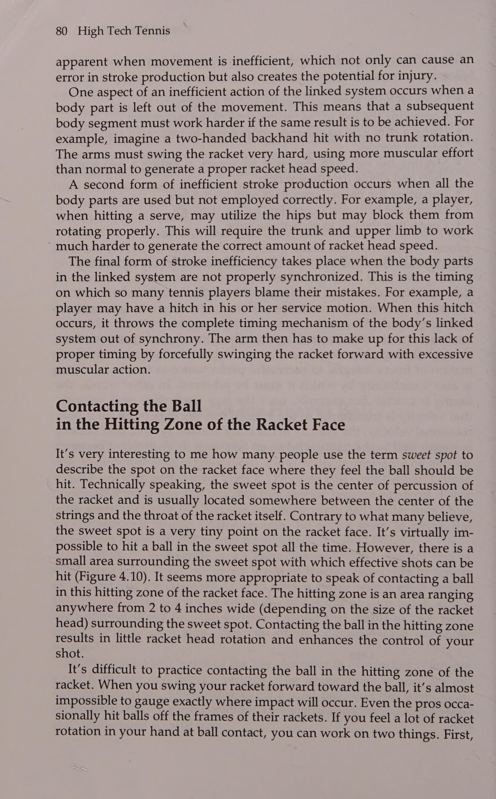
Lời khuyên về quần vợt của Tiến sĩ Jack Khi bạn thực hiện cú đánh trái tay bằng một tay, hãy để các khớp ngón tay của bạn theo bóng ra khỏi vợt và sau đó hướng mặt lên trời.
When you follow through on the one-handed backhand, have your knuckles follow the ball off the racket and then face the sky. One-Handed Vs. Two-Handed Backhand
Một tay Vs. Trái tay bằng hai tay Chính việc phối hợp năm bộ phận cơ thể đó khiến nhiều người gặp khó khăn khi chơi quần vợt bằng trái tay bằng một tay. Đã bao nhiêu lần bạn thấy một tay vợt dẫn bóng bằng cùi chỏ hoặc thả đầu vợt để giúp bóng qua lưới? Tay vợt như vậy có thể sử dụng các bộ phận chính của cơ thể, nhưng khi truyền động lượng cho cẳng tay qua khuỷu tay, tay vợt này sẽ mất phối hợp và dẫn trước bằng khuỷu tay. Hoặc tay vợt có thể truyền tốt động lượng từ khuỷu tay đến cẳng tay nhưng không thể lấy được bằng cổ tay một cách hiệu quả và khiến đầu vợt bị rơi nghiêm trọng, gây ra một cú đánh khó xử. Trái tay bằng hai tay là một câu chuyện khác.
It’s coordinating those five body parts that causes many people to have trouble playing tennis with a one-handed backhand. How many times have you seen a player lead with the elbow or drop the racket head to help hit the ball over the net? Such a player is able to use the major body parts, but when it comes to transferring the momentum to the forearm through the elbow, this player loses the coordinated pattern and leads with the elbow. Or a player may be able to transfer the momentum through the elbow to the forearm well but can’t get it by the wrist efficiently and severely drops the racket head, causing an awkward followthrough. The two-handed backhand is a different story. Dr. Jack’s Tennis Tips
Lời khuyên về tennis của Tiến sĩ Jack Tôi cảm thấy điểm chính của cú trái tay bằng một tay là vai trước (vai phải đối với tay vợt thuận tay phải). Giả vờ có một ranh giới giữa hai vai của bạn; khi vai của bạn hướng về phía va chạm, hãy cố gắng cố định vai trước sao cho nó hướng về phía nơi bóng sẽ được đánh và sau đó tăng tốc tay cầm vợt về phía va chạm.
I feel the main point of a one-handed backhand is the front shoulder (the right shoulder for a right-handed player). Pretend there is a line between your two shoulders; as your shoulders fire around toward impact, try to fix the front shoulder so it’s pointing toward where the ball will be hit and then accelerate the racket arm toward impact.
Cú đánh bằng hai tay chỉ sử dụng hai bộ phận cơ thể để vung vợt về phía va chạm. Sau khi tay vợt trong Hình 5.15 bắt đầu chuyển động lượng tuyến tính (Linear Momentum) về phía trước và bước về phía điểm tiếp xúc với bóng, hông bắt đầu xoay. Chúng lần lượt làm cho thân cây quay. Cánh tay của cả hai a b c Hình 5.15 So sánh chuyển động của hông và thân trong cú đánh trái tay bằng hai tay với chuyển động của cú đánh trái tay bằng một tay được thấy trong Hình 5.14. Quan sát mức độ xoay hông xảy ra trong (c) trong khi vai đưa cánh tay và vợt về phía điểm tiếp xúc.
The two-handed stroke only utilizes two body parts to swing the racket toward impact. After the player in Figure 5.15 begins the forward transfer of linear momentum and steps toward the ball contact point, the hips begin to rotate. They in turn cause the trunk to rotate. The arms of both a b c Figure 5.15 Compare the hip and trunk movement in a two-handed backhand with that of the one-handed backhand seen in Figure 5.14. Observe the amount of hip rotation that occurs in (c) while the shoulders bring the arms and racket toward the impact point.
106 Tay chân của Quần vợt Công nghệ Cao xoay theo thân mình, trong khi không có chuyển động nào xảy ra ở khuỷu tay hoặc cổ tay khi tiếp xúc. Tức là thân và cánh tay xoay như một bộ phận cơ thể. Sau khi va chạm, bất kỳ sự thay đổi nào sẽ xảy ra trong phần tiếp theo, tùy thuộc vào đặc điểm riêng của mỗi tay vợt. Cách thực hiện phổ biến nhất là quấn cánh tay và vợt qua vai.
limbs rotate with the trunk, whereas no movement occurs at the elbows or wrists up to impact. That is, the trunk and arms rotate as one body part. After impact any number of contortions occur for the followthrough, depending on each player’s idiosyncrasies. The most common follow-through is to wrap the arm and racket over the shoulder. Dr. Jack’s Tennis Tips
Lời khuyên về tennis của Tiến sĩ Jack Khi vung vợt cho cú đánh trái tay bằng hai tay, đừng cố lái vợt bằng tay. Điều này thường gây ra hành động cổ tay quá mức và mất kiểm soát cú đánh. Thay vào đó, hãy nghĩ đến việc lái bóng bằng vai.
When swinging the racket for a two-handed backhand, do not try to drive the racket with your hands. This usually causes excessive wrist action and loss of shot control. Instead, think of driving the ball with your shoulders.
Tuyên bố của chúng tôi về cú búng cổ tay trong cả hai cú đánh giờ đây có thể được thảo luận.
Our statement about a wrist flick in either stroke can now be discussed.
Chuyển động nhẹ của cổ tay xảy ra trong một cú đánh trái tay bằng một tay thành thạo, nhưng rất ít được thấy ở cú đánh trái tay bằng hai tay. Tuy nhiên, tôi phải nói thêm rằng tất cả các tay vợt trong nghiên cứu của tôi đều đánh những cú trái tay dọc biên. Bạn có thể thấy nhiều hơn (nhưng không nhiều hơn) chuyển động của cổ tay trong cả hai cú đánh khi thực hiện cú đánh chéo bàn. Đề nghị của tôi là giữ cho cổ tay (hoặc cổ tay) vững chắc trong cả hai cú đánh và quên việc đánh bóng chéo sân.
Slight wrist movement does occur in a skilled one-handed backhand, but little is seen in the two-handed backhand. I must add, however, that all the players in my study were hitting down-the-line backhands. You may see more (but not a lot more) wrist motion in both strokes when going crosscourt. My suggestion is to keep the wrist (or wrists) firm in both strokes and forget about flicking the ball crosscourt. Ease of Skill Acquisition
Dễ dàng tiếp thu kỹ năng Trái tay nào dễ học hơn? Có vẻ như tay vợt có thể phát triển các kỹ năng để đánh trái tay bằng hai tay hiệu quả dễ dàng hơn.
Which backhand is easier to learn? It seems that a player may be able to develop the skills to hit an effective two-handed backhand more readily.
Nếu bạn phải học một trong hai cú đánh và bạn biết rằng tất cả các đặc điểm của mỗi cú đánh đều giống nhau ngoại trừ việc một cú đánh chỉ sử dụng hai bộ phận cơ thể chính và cú đánh kia sử dụng năm bộ phận, bạn nghĩ cái nào sẽ dễ học hơn? Và điều gì sẽ xảy ra nếu bạn học chơi trái tay bằng hai tay và sau này muốn chuyển sang đánh trái tay bằng một tay? Hầu như bất kỳ chuyên gia giảng dạy nào được chứng nhận đều có thể giúp bạn thay đổi các nét vẽ sau này, vì vậy trước tiên hãy phát triển các kỹ năng nền tảng của bạn với bất kỳ nét vẽ nào bạn chọn và sau đó thực hiện thay đổi nếu bạn mong muốn.
If you have to learn one of two strokes and you know that all characteristics of each stroke are similar except that one only uses two major body parts and the other uses five, which do you think would be easier to learn? And what if you learn to play with a two-handed backhand and wish to change later to a one-handed backhand? Almost any certified teaching professional can help you change strokes later, so develop your foundational skills first with whichever stroke you choose and then work on a change later if you so desire. NET RESULTS
KẾT QUẢ TUYỆT VỜI Cả trái tay một tay và hai tay đều có những đặc điểm cụ thể có lợi cho hiệu suất tối ưu. Tuy nhiên, khi bạn xác định điều gì là tốt nhất cho bạn và trò chơi của mình, hãy xem xét một số thuộc tính được liệt kê trong Bảng 5.1. Với những khái niệm này trong đầu, hãy quyết định xem lĩnh vực nào Một tay Vs. Trái tay bằng hai tay khiến bạn gặp nhiều khó khăn nhất khi chơi. Bạn thậm chí có thể muốn viết ra việc sử dụng trái tay bằng một hoặc hai tay sẽ giúp ích hoặc gây tổn hại cho trò chơi của chính bạn như thế nào. Đó thực sự là một sự lựa chọn cá nhân.
Both the one-handed and two-handed backhands have specific characteristics that are conducive to optimal performance. However, as you determine what would be the best for you and your game, consider some of the attributes listed in Table 5.1. With these concepts in mind, decide what areas One-Handed Vs. Two-Handed Backhand give you the most problem when playing. You may even want to write down how the use of either a one- or two-handed backhand would help or hurt your own game. It is really an individual choice.
Theo ý kiến của tôi, cú đánh trái tay bằng hai tay có thể là một cú đánh cực kỳ mạnh mẽ. Tôi cũng cảm thấy rằng nó có thể được học dễ dàng hơn nhiều so với đối tác của nó.
In my opinion, the two-handed backhand can be an incredibly powerful stroke. I feel also that it can be learned much easier than its counterpart.
Nhiều người đã đánh giá thấp trò chơi hai tay vì nó không có tầm với; tuy nhiên, lời chỉ trích này có vẻ không chính đáng. Cú đánh không chỉ mang lại cho bạn khả năng đánh bóng xoáy lên và bóng có độ nảy cao cao hơn mà còn cho phép bạn sử dụng nhiều động tác xoay thân cây hơn để tạo ra lực đánh bóng. Ngoài ra, cú đánh bằng hai tay cho phép lực va chạm được chia nhỏ và hấp thụ bởi hai cánh tay thay vì một. Nhiều người cho rằng trái tay bằng hai tay là một mốt nhất thời hoặc một liều thuốc tâm lý mang lại sự tự tin hơn. Tôi nghĩ rằng nó có thể đóng vai trò như một tài sản cho trò chơi của tay vợt—cú đánh vẫn ở đây. Nếu bạn không tin, hãy nhìn Chang, Agassi, Seles và Capriati – những tay cầm hai tay của họ là những vũ khí khá tốt.
Many people have downplayed the two-hander because of its lack of reach; however, this criticism seems unjustified. The stroke not only provides you with a greater ability to hit topspin and high-bouncing balls, but it also allows you to use more trunk rotation in generating force to hit the ball. In addition, the two-handed stroke allows the shock of impact to be split up and absorbed by two arms instead of one. Many think the two-handed backhand is a fad or a psychological placebo that gives more confidence. I think it can serve as an asset to a player’s game—the stroke is here to stay. If you don’t believe it, look at Chang, Agassi, Seles, and Capriati—their two-handers are pretty good weapons.
Bảng 5.1 So sánh đặc điểm trái tay một tay và hai tay Trái tay một tay Trái tay hai tay Số lượng bộ phận cơ thể — Năm—hông, thân, cánh tay, Hai—hông, thân và cẳng tay đã sử dụng, và cánh tay bàn tay (như một đơn vị) Sản xuất xoáy Xoáy dưới dễ dàng; xoáy lên dễ dàng; xoáy xuống có thể gây ra vấn đề Ngụy trang Tương tự Sức mạnh Tương tự Cần nhiều hơn vì Ít cần thiết hơn do sự tham gia của một tay - sự tham gia của hai cánh tay Thay đổi cách cầm Không thực sự cần thiết Bạn có thể chọn một chút nhưng được khuyến nghị thay đổi hoặc không thay đổi Phạm vi tiếp cận Tương tự khi bạn nhận được Tương tự khi bạn chuẩn bị đầy đủ và chuẩn bị đầy đủ và đặt đúng vị trí đúng vị trí Cú trả thấp (mắt cá chân Dễ dàng thu lại Bạn thường phải sử dụng cao) một tay Bóng có độ nảy cao Dễ dàng nhưng thường thì bạn Dễ dàng đánh phẳng hoặc bằng (đầu cao hoặc hơi phải sử dụng xoáy lên ở trên) tôi, tôi đã ngồi vidi dpeaie! 4 e iV } gl s:a¥!
Table 5.1 Comparison of One-Handed and Two-Handed Backhand Characteristic One-handed backhand Two-handed backhand Number of body parts — Five—hips, trunk, arm, Two—hips, trunk and used forearm, and hand arms (as one unit) Spin production Underspin easy; topspin Topspin easy; underspin can cause problems can cause problems Disguise Similar Similar Strength More required because Less required because of of one-arminvolvement — two-arm involvement Grip change Not absolutely necessary You can select a slight but is recommended change or no change Reach Similar when you get Similar when you get adequately prepared and adequately prepared and properly positioned properly positioned Low returns (ankle Easier to retrieve You usually must use high) one hand High-bouncing balls Easy but usually you Easy to hit flat or with (head high or slightly must use underspin topspin above)
4) (rs ae we Ld r= hese cleat Ce tla el acu tei of iE) era sc Tigra, z poonty Pascal Wil) oy HE 4 hoiitears recite eee: _ ee hicdyneigtyy plal lew bo y.tte: adh > aR vihetian ety cm ns iy Bee Mee q “hy At ese: =a Gay baht xoăn: {Sipay ' whore Moen tp by ary ty Pig. et Sat Bea UP Hy Sy ofieh yee} eh, Farge ge 8 Fuel eee | A a a ree way pry es eye si ape hy reread \ i: wevide coein 2¢ ech lhe ri Py ; oe “4 bea feos ty qu tit lươn ot tae; “ly #17) die nhợt nhạt Tins ip as ¢% on ai b Sf je 2 celeb <5 ie? a did] i hb cf z a i M oo TRY 4 2h y WAL? Ps wr att SRE Ly See ae BOT charge ‘ Uhtiy tae “y sy tee fete Lire 29" 98g e) Oe ib eM, ~, iJ niles spihenaa alii hemmed oo ee et: ss “Dễ không?
. we I Ld r= hese cleat Ce tla el ‘ acu tei of iE) erase sc Tigra, z + poontty Pascal Wil) oy HE 4 hoiitears recite eee: _ ee hic dyeneigtyy plal lew bo y.tte: adh > aR vihetian ety cm ns iy Bee Mee q “hy At ese: =a Gay baht curly: {Sipay ' whore ; Moen tp by ary ty Pig. et Sat Bea UP Hy Sy ofieh yee} eh, Farge ge 8 fuel eee I A a ree way pry es eye si ape hy reread \ i: wevide coein 2¢ ech lhe ri Py ; ] pFacliges Arie yh ‘tele eo 2 tty » el ietely trast rey Os Be woe Se eae ts octet FouarS CHT ren oe “4 bea feos ty qu tits eel ot tae; “ly #17) die pale aged Tins ip as ¢% on ai b Sf je 2 celeb <5 ie? a did] i hb cf z a i % M : oo TRY 4 2h y WAL? Ps wr at att SRE Ly See ae BOT fee ‘ Uhtiy tae “y sy tee fete Lire 29" 98g e) Oe ib eM, ~, iJ ’ . * niles spihenaa alii hemmed oo ee et: ss “Eas?
“s “tat eruiets? hàn Wiretis n+ hh may tôi?
“s “tat eruiets? weld Wiretis n+ hh sew i?
“a ray ‘= bi P24 ree* ite: ae ane ‘ bie i ae we us, 7 ae vad is Soeeees A nbn: Let ae Peh i sivanband Kibo babe ui i qe ay 4 ply, ikea’ PE ak ad Abe. S28 se. fw Sa Lee Sine Sadi J ap) Ser Sta fg!) Tuổi ae tức là 4 Ft " ot Shas Hg * ro ta font hake Tee) ek) Harte Iviad Bes ayeerecd «£ i Gon Heys: Pd he ad EE a Sh ied a \ patealneng we 1 es eo maak iid a gee OOD sili paarnery: hn ay See si Saaaltchibagc. ieee aM ile. eceeaaenraes —— fan: = I- Fy RE
“a ray ‘= bi P24 ree* ite: ae ane ‘ bie i ae we us, 7 ae vad » is Soeeees A ; nbn: Let ae Peh i sivanband Kibo babe ui i qe ay 4 ply, ikea’ PE ak ad Abe. S28 se. fw Sa Lee Sine Sadi J ap) Ser Sta fg!) Ages ae ie 4 Ft " ot Shas Hg _ * ro ta font . hake Tee) ek) Harte Iviad Bes ayeerecd ~ «£ i Gon Heys: Pd he ad EE a : , Sh ied a \ patealneng we 1 : es eo maak iid a gee OOD sili paarnery: hn ay See | I si Saaaltchibagc. ieee aM ile. & eceeaaenraes
Phần 3: Vật Lý Của Độ Xoáy & Cơ Học Cú Vô-Lê Hoàn Hảo
Chương 7: Vật Lý Của Độ Xoáy: Hiệu Ứng Magnus & Quỹ Đạo Bay Của Bóng
Chapter 7: Ball Spin Dynamics: Magnus Effect, Trajectory Control, and Court Bounce Friction
AE nae Paseet yer vskis 1k nioul’ Ball Spin:
Ball Spin: Why, When, and How ie is only one way to produce ball spin in tennis.
Tại sao, Khi nào và Như thế nào tức là chỉ có một cách để tạo ra độ xoáy của bóng trong quần vợt. Bạn phải tăng tốc đầu vợt khi tiếp xúc để lướt vào mặt sau của quả bóng theo một trong ba cách: 1. Hướng lên trên đối với xoáy lên 2. Hướng xuống đối với xoáy xuống 3. Đi ngang đối với xoáy ngang Bạn vung vợt càng thẳng đứng (hoặc nằm ngang) (theo một trong hai hướng), bạn sẽ tạo ra càng nhiều xoáy. Góc của mặt vợt khi tiếp xúc có thể có một số ảnh hưởng đến mức độ xoáy, nhưng nó sẽ chủ yếu quyết định hướng bóng bay ra khỏi vợt.
You must accelerate the racket head through impact to brush the backside of the ball in one of three ways: 1. Upward for topspin 2. Downward for underspin 3. Sideways for sidespin The more vertical (or horizontal) you swing the racket (in either direction), the more ball spin you'll produce. The angle of the racket face at impact may have some influence on the amount of spin, but it will primarily determine the direction of ball flight off the racket.
Lượng xoáy mà tay vợt truyền vào bóng, kết hợp với vận tốc cú đánh cao, thường quyết định mức độ hiệu quả của tay vợt. Ví dụ, Bjorn Borg luôn được coi là bậc thầy về topspin.
The amount of spin a player imparts on the ball, combined with a high stroke velocity, often determines how effective the player will be. For example, Bjorn Borg has always been considered the master of topspin.
Nếu bạn có cơ hội xem anh ấy thi đấu trên truyền hình, bạn có thể đã nghe những người thông báo nói về những cú giật xoáy cực mạnh của anh ấy và đối thủ khó có thể trả lại bất kỳ cú đánh nào trong số đó một cách hiệu quả. Ngược lại, Chris Evert có thể đánh cú thuận tay đáng kinh ngạc; Steffi Graf sử dụng rất nhiều cú đánh trái tay của mình; và Jimmy Connors luôn chơi với rất ít độ xoáy. Vậy thì điều gì về độ xoáy khiến phong cách của mỗi tay vợt trở thành phong cách chiến thắng?
If you had the chance to watch him play on television, you probably heard the announcers speak of his tremendous looping topspin shots and how difficult it was for the opponent to return any of those shots effectively. In contrast, Chris Evert could hit incredible sidespin on her forehand; Steffi Graf uses a great deal of underspin on her backhand; and Jimmy Connors has always played with very little spin. What is it, then, about spin that makes each player’s style a winning one?
Spin có thể được sử dụng vì nhiều lý do. Một số tay vợt thích sử dụng xoáy xuống (hoặc xoáy xuống) vì họ cảm thấy họ có thể kiểm soát vị trí cú đánh tốt hơn. Tuy nhiên, đôi khi, một cú đánh xoáy xuống không thể bị đánh với lực lớn (như trong một cú đánh chuyền) và vẫn có thể kiểm soát được. Những tay vợt khác, những người có thể tấn công bóng mạnh mẽ hơn, sẽ tận dụng xoáy lên. Họ dường như đánh được những quả bóng thường bay ra ngoài đường biên ngang nhưng không phải do xoáy lên được truyền vào. Vẫn còn những đối thủ khác sử dụng xoáy ngang trong một số cú đánh, đặc biệt là khi giao bóng. Bởi vì có rất nhiều biến thể của xoáy bóng tồn tại, bạn cần tìm hiểu về độ xoáy và lý do tại sao nó lại quan trọng trong quần vợt vô địch.
Spin can be used for various reasons. Some players like to use underspin (or backspin) because they feel they can better control shot placement. Sometimes, however, an underspin shot cannot be hit with great force (as in a passing shot) and still be controlled. Other players, who may attack the ball more aggressively, utilize topspin. They seem to hit balls that would normally fly beyond the baseline but don’t because of the imparted topspin. Still other competitors use sidespin on some strokes, especially on the serve. Because so many variations of ball spin exist, you need to learn about spin and why it’s so important in championship tennis. The Effect of Spin on Ball Flight
Ảnh hưởng của độ xoáy lên đường bay của bóng Khi một quả bóng tennis di chuyển về phía đối thủ, đường bay của nó bị ảnh hưởng bởi không khí xung quanh. Sự nhiễu loạn của không khí tạo ra những dòng xoáy nhỏ xung quanh và phía sau quả bóng khiến nó chạy chậm lại. Khi quả bóng quay, không khí thậm chí còn có tác động đáng kể hơn đến đường bay của quả bóng. Một quả bóng có xoáy lên quay theo hướng nó di chuyển và xoáy mang theo nó một lớp không khí nhỏ ở ranh giới (Hình 6.1). Ở phía có lớp ranh giới đối diện với không khí đi vào sẽ hình thành một vùng áp suất cao (Hình 6.2). Ở phía đối diện của quả bóng, hai luồng không khí cùng chiều và vận tốc của luồng không khí tới tăng lên một chút, gây ra vùng áp suất thấp. Quả bóng có xu hướng di chuyển về phía có ít áp lực nhất. Với topspin, áp lực ở trên cùng sẽ lớn hơn Lớp ranh giới của luồng không khí tới của hướng bay Hình 6.1 Khi quả bóng gặp không khí đang tới, một lớp không khí biên nhỏ di chuyển xung quanh quả bóng khi nó quay.
As a tennis ball travels toward the opponent, its flight is affected by the surrounding air. Air turbulence creates tiny eddies around and behind the ball that cause it to slow down. When the ball is spinning, the air has an even more significant effect on ball flight. A ball with topspin rotates in the direction in which it travels and the spin carries with it a small boundary layer of air (Figure 6.1). On the side where the boundary layer is opposite to the oncoming air, a high-pressure area is built up (Figure 6.2). On the opposite side of the ball the two air flows are in the same direction and the velocity of the oncoming air is slightly increased, causing a low-pressure area. The ball tends to move toward the side where the least pressure exists. With topspin, pressure is greater on top Boundary Layer Oncoming Air of Air Direction of Flight Figure 6.1 As the ball encounters the oncoming air, a small boundary layer of air travels around the ball as it spins. Hi Oo Sry Boundary Layer Pressure ncoming Air of Air Direction of Flight —
Bóng xoáy: Tại sao, khi nào và như thế nào Hi Oo Sry Lớp biên Áp suất không khí đến của Hướng không khí của đường bay Hình 6.2 Lớp không khí biên được mang xung quanh quả bóng theo hướng xoáy lên tương tác với không khí tới để tạo ra một vùng áp suất cao phía trên quả bóng. của quả bóng và giảm xuống dưới quả bóng, buộc nó rơi nhanh hơn bình thường. Đó là lý do tại sao một cú đánh xoáy lên nặng lại có quỹ đạo giật như vậy. Với bóng xoáy xuống (Hình 6.3), điều ngược lại xảy ra: Áp lực lớn hơn ở bên dưới quả bóng, giữ bóng ở trên không lâu hơn, khiến cho quả bóng được đánh nhẹ sẽ ''nổi'' và quả bóng được đánh mạnh hơn sẽ "'bay". Cũng giống như các cú đánh trên mặt đất 'thường được đánh bằng xoáy xuống hoặc xoáy lên, phần lớn các cú giao bóng được đánh với các kiểu xoáy ngang khác nhau. Như đã thấy trong Hình 6.4, độ xoay của một quả bóng giao bóng dao động (đối với những tay vợt thuận tay phải) từ vị trí 3 giờ xoáy ngang của quả bóng đến độ xoáy lên gần như 12-0. Trong khi bay, quả bóng có xoáy ngang hoạt động giống như quả bóng cong của vận động viên ném bóng chày. Nó di chuyển theo một đường cong đối diện với cạnh của Hướng không khí tới của Lớp biên của Áp suất Bay. Khi bóng có xoáy xuống, lớp ranh giới di chuyển xung quanh quả bóng theo hướng xoáy xuống, tạo ra tương tác mạnh bên dưới quả bóng. Sự tương tác này tạo ra một vùng áp suất cao dưới quả bóng.
Figure 6.2 The boundary layer of air being carried around the ball in topspin direction interacts with the oncoming air to create a high-pressure zone above the ball. of the ball and reduced under the ball, forcing it to drop more rapidly than normal. That’s why a heavy topspin shot has such a looping trajectory. With underspin (Figure 6.3) the opposite occurs: Greater pressure is underneath the ball, keeping it in the air longer, causing the softly hit ball to ‘‘float” and the harder hit ball to “‘sail. Just as ground strokes are ‘most often hit with either underspin or topspin, the majority of serves are hit with varying types of sidespin. As seen in Figure 6.4, the rotation on a served ball ranges (for right-handed players) from a 3-o’clock sidespin on the ball to an almost 12-0’clock topspin. In flight, the ball with sidespin acts the same as a baseball pitcher’s curve ball. It travels in a curved path opposite the side of the Boundary Layer Oncoming Air of Air Direction of Flight Pressure Figure 6.3. When the ball has underspin, the boundary layer travels around the ball in the direction of the underspin, creating a violent interaction beneath the ball. This interaction creates a high-pressure zone under the ball. Figure 6.4 This figure depicts the types of ball spin that can usually be imparted. Note that a 12-o’clock spin is topspin, whereas a 3-o’clock spin is sidespin. ball where the high-pressure zone is created (Figure 6.5).
Hình 6.4 Hình này mô tả các kiểu bóng xoáy thường có thể được truyền. Lưu ý rằng cú xoay lúc 12 giờ là xoáy lên, trong khi cú xoay lúc 3 giờ là xoáy ngang. Quả bóng nơi tạo ra vùng áp suất cao (Hình 6.5). Trên thực tế, nếu một tay vợt thuận tay phải tạo ra một lượng xoáy ngang cực lớn (xoay 3-0'đồng hồ), quả bóng có thể lệch vài feet về bên trái so với đường đi mà lẽ ra nó sẽ đi nếu không có cú xoáy nào được đánh trúng.
In fact, if a right-handed player imparts an extreme amount of sidespin (3-0’clock spin), the ball might deviate several feet to the left of the path it would have taken if no spin were hit. In summary, consider a hypothetical situation (Figure 6.6) in which three ground strokes are hit with identical velocity and trajectory but with different types of spin. Let’s assume a ball hit with no spin will land halfway between the service line and baseline.
Tóm lại, hãy xem xét một tình huống giả định (Hình 6.6) trong đó ba cú đánh nền được đánh với vận tốc và quỹ đạo giống nhau nhưng có kiểu quay khác nhau. Giả sử một quả bóng được đánh không xoáy sẽ hạ cánh ở giữa đường giao bóng và đường cuối sân. Nói một cách tương đối, một quả bóng có xoáy lên sẽ tiếp đất gần đường giao bóng, và một cú đánh có xoáy xuống sẽ nảy gần đường biên ngang. Đường bay của quả bóng được đánh bằng xoáy ngang sẽ bị ảnh hưởng theo quỹ đạo đi ngang và sẽ cong về phía giữa sân hoặc về phía đường biên.
Relatively speaking, a ball with topspin will land near the service line, and a shot with underspin will bounce near the baseline. The flight of a ball hit with sidespin will be affected in a sideways trajectory and will curve either toward the middle of the court or toward the sideline. Oncoming Air te) fe) M53 . <o° + Boundary Layer 20000° of Air Direction of Flight Figure 6.5 When a ball is hit with sidespin the high pressure zone is created where the turbulence occurs between the boundary layer of air and the oncoming air.
Oncoming Air te) fe) M53 .
BASE LINE NET SERVICE BASE LINE LINE
Figure 6.6 If three balls are hit from the same height at the same velocity with the same angle of departure from the racket, their flight patterns might differ as shown here.
Bóng xoáy: Tại sao, khi nào và như thế nào BASE LINE SERVICE NET SERVICE BASE LINE LINE Hình 6.6 Nếu ba quả bóng được đánh từ cùng một độ cao ở cùng một vận tốc với cùng một góc xuất phát khỏi vợt, đường bay của chúng có thể khác nhau như được hiển thị ở đây. Nếu một quả bóng không xoáy (- -) rơi vào giữa đường giao bóng và đường cuối sân, một quả bóng có xoáy lên (-) sẽ nảy ngắn hơn vào phần sân đối phương trong khi một quả bóng có xoáy xuống (.
If a ball with no spin (- -) lands halfway between the service line and baseline, a ball with topspin (—) would bounce shorter into the opponent's court whereas a ball with underspin (. . . ) would land farther into the opponent’s court.
. .
The Effect of Spin on Ball Bounce
) sẽ tiếp đất xa hơn về phần sân đối phương.
Spin also affects how the ball bounces.
Hiệu ứng của Xoay đối với Bóng nảy Xoay cũng ảnh hưởng đến cách bóng nảy. Bạn có nhớ môn vật lý ở trường trung học rằng nếu bạn nhìn vào gương ở một góc xiên, bạn sẽ thấy một vật gì đó ở phía bên kia căn phòng nằm cùng góc với gương như bạn không? Tương tự, nếu hai người đứng cách gương một góc và cùng nhìn về phía tâm gương thì họ sẽ nhìn thấy nhau. Về lý thuyết, một quả bóng tennis sẽ nảy lên theo cách tương tự nếu nó không có độ xoáy. Tức là góc nảy từ mặt sân sẽ giống với góc tiếp cận sân tennis. Tuy nhiên, do các yếu tố ma sát và hệ số hồi vị giữa quả bóng và sân tennis, góc nảy hầu như luôn lớn hơn góc tiếp cận.
Do you remember from highschool physics that if you look into a mirror at an oblique angle, you see something across the room that’s situated at the same angle to the mirror as you? Similarly, if two people stand equidistant to and at the same angle from a mirror and both look toward the mirror’s center, they will see each other. In theory, a tennis ball will bounce in the same manner if it has no spin. That is, the angle of the bounce from the court surface will be similar to the angle of approach to the tennis court. Due to frictional factors and the coefficient of restitution between the ball and tennis court, however, the angle of rebound is almost always greater than the approach angle.
Độ xoáy khiến bóng nảy lên khác đi nhiều. Ví dụ, chuyển động xoay của một quả bóng có xoáy lên sẽ đẩy lùi về phía sân, làm cho quả bóng bật lại ở một góc thấp hơn so với một quả bóng không xoáy (Hình 6.7).
Spin causes the ball to bounce much differently. For instance, the rotation on a ball with topspin pushes backward against the court, causing the ball to rebound at a lower angle than a ball with no spin (Figure 6.7).
A Lưu ý cú đẩy lùi không xoáy lên của bóng Hình 6.7 So sánh góc nảy của một quả bóng có xoáy lên với góc của một quả bóng không xoáy. Có một lực đẩy nhẹ về phía sau của quả bóng đang quay, khiến góc bật lại của nó nhỏ hơn một chút so với góc bật lại của quả bóng không quay.
, A Note the No Spin Topspin backward push Figure 6.7 Compare the angle of rebound for a ball with topspin to the angle of a ball with no spin. There is a slight backward push by the spinning ball, which causes its rebound angle to be slightly less than the rebound of a ball with no spin.
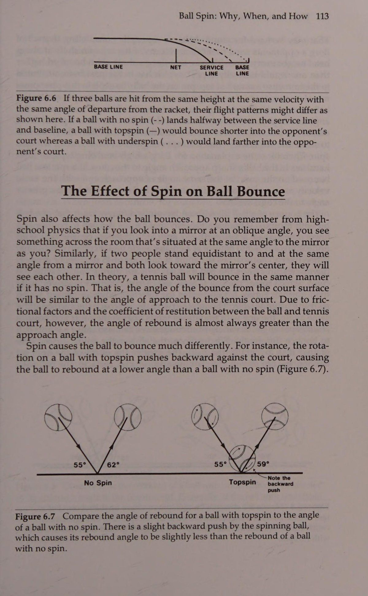
Điều đó có thể khiến bạn khó tin, đặc biệt khi xem xét rằng tất cả các đối thủ của Borg đều từng đánh trả các cú đánh xoáy lên của anh ấy ở độ cao ngang đầu mỗi lần. Đúng là các cú sút của Borg thường nảy cao hơn người ta thường mong đợi, điều này trước đây được cho là do bóng xoáy lên quá nhiều. Để giải thích hiện tượng này, tôi phải đề cập đến hai điều. Đầu tiên, hãy nhớ rằng xoáy lên làm cho quả bóng nảy ở một góc thấp hơn so với quả bóng không xoáy chỉ khi các góc tiếp cận bề mặt giống hệt nhau. Thứ hai, một cú giật xoáy lên làm cho bóng vòng qua lưới, và hiệu ứng giật này buộc bóng chạm vào bề mặt ở một góc dốc hơn nhiều so với một quả bóng không xoáy. Vì vậy, lời giải thích cho cú thuận tay nảy cao của Borg nằm ở góc tiếp cận sắc nét của bóng tới sân. Nếu một quả bóng không xoáy nảy lên trên sân ở cùng một góc tiếp cận và với cùng vận tốc như một quả bóng có xoáy lên, thì quả bóng không xoáy sẽ nảy ở một góc lớn hơn so với bề mặt sân.
That may be hard for you to believe, especially considering that all of Borg’s opponents used to hit their returns of his topspin shots at about head height every time. It’s true that Borg’s shots often bounced higher than one would normally expect, which has in the past been attributed to the immense amount of topspin on the ball. To explain this phenomenon, I must mention two things. First, remember that topspin makes the ball bounce at a lower angle than a ball with no spin only when the angles of approach to the surface are identical. Second, a topspin drive causes the ball to loop over the net, and this looping effect forces the ball to strike the surface at a much steeper angle than would a ball without spin. Therefore, the explanation for Borg’s high-bouncing topspin forehand lies in the ball’s sharp approach angle to the court. If a spinless ball bounced on the court at the same angle of approach and with the same velocity as one with topspin, the spinless ball would bounce at a greater angle to the court surface.
Độ nảy của một quả bóng được đánh bằng xoáy xuống khác với độ nảy của một quả bóng được đánh bằng xoáy lên. Trong khi một cú đánh xoáy lên làm cho bóng nảy ở một góc thấp hơn so với một quả bóng không xoáy, thì chuyển động quay trên quả bóng có xoáy xuống làm cho nó nảy ở một góc lớn hơn trong những điều kiện nhất định.
The bounce of a ball hit with underspin is different from that of a ball hit with topspin. Whereas a topspin shot causes the ball to bounce at a lower angle than a ball with no spin, the rotation on the ball with underspin causes it to bounce at a greater angle under certain conditions.
Khi bóng tiếp cận sân ở một góc từ 45 độ trở lên, xoáy xuống khiến bóng đẩy về phía trước khi tiếp xúc với sân, khiến bóng chậm lại và bật lại theo phương thẳng đứng hơn bình thường. Hình 6.8 minh họa các cú nảy khác nhau do không xoáy và do xoáy xuống. Mặc dù hai quả bóng tiếp cận bề mặt ở cùng một góc, nhưng quả bóng có xoáy xuống có xu hướng bám vào mặt sân và nảy ở một góc dốc hơn. Nhiều trường hợp khác nhau cũng có thể khiến quả bóng tennis nảy lên khác nhau. Ví dụ, bề mặt sân càng chậm (càng nhám để "'nắm'' bóng), tác động của xoáy lên cú nảy càng lớn. Trên sân đất nện hoặc Har-Tru (mặt sân đất sét nhân tạo), bóng không quay Lưu ý lực đẩy xoáy xuống Hình 6.8 Lưu ý tác động của xoáy xuống đối với lực nảy của quả bóng tennis. Quả bóng đang quay có một lực đẩy nhẹ về phía trước so với mặt sân, khiến góc bật lại của nó lớn hơn một chút so với quả bóng không quay.
When the ball approaches the court at an angle of 45 degrees or greater, the underspin causes the ball to push forward during contact with the court, which forces the ball to slow down and rebound more vertically than normal. Figure 6.8 illustrates the different bounces caused by no spin and by underspin. Though the two balls approach the surface at the same angle, the one with underspin tends to grab the court and bounce at a steeper angle. A variety of circumstances can also cause a tennis ball to bounce differently. For instance, the slower the court surface (the grainer it is to “‘grab” the ball), the greater the effect of the spin on the bounce. On clay or Har-Tru (an artificial clay surface), the ball with No Spin Note the“ Underspin push Figure 6.8 Notice the effect that underspin can have on the rebound of a tennis ball.
Bóng xoáy: Tại sao, Khi nào và Làm thế nào xoáy xuống sẽ có xu hướng dừng lại và đứng lên (hoặc nảy theo chiều dọc hơn). Trên cỏ nó sẽ trượt và bật lại rất thấp và nhanh.
There is a slight forward push by the spinning ball against the court, which causes its rebound angle to be slightly greater than that of a ball with no spin.
Góc mà cú đánh xoáy xuống chạm vào bề mặt sân cũng sẽ ảnh hưởng đến lực bật lại. Các phân tích phim tốc độ cao chứng minh rằng một cú đánh tiếp đất mềm, lười biếng với xoáy xuống sẽ khiến cú đánh đứng thẳng, tạo cơ hội cho đối thủ đánh trả dễ dàng. Một cú đánh cắt lưới vừa qua lưới thường sẽ trượt và nảy thấp, buộc đối phương phải khuỵu gối để đánh trả. Sự khác biệt về lực bật lại này là do góc tiếp cận bề mặt. Nói chung, khi góc lớn hơn 45 độ, bóng có xoáy xuống sẽ nảy theo phương thẳng đứng hơn. Khi bóng chạm sân ở góc dưới 45 độ, nó thường sẽ trượt và ở vị trí rất thấp (Hình 6.9). Vì vậy, mục đích của hầu hết các cú đánh mặt đất xoáy xuống là đưa bóng sâu vào phần sân đối phương với quỹ đạo thấp, buộc đối phương phải đánh lên để phá lưới. Ví dụ: khi John McEnroe quyết định vào lưới bằng một cú đánh ngắn nảy dưới mức lưới, anh ấy sẽ hiếm khi sử dụng cú đánh tiếp cận xoáy lên nhưng thường sẽ chạm bóng bằng xoáy xuống. Khi bạn thực hiện cú đánh tiếp cận xoáy xuống với quỹ đạo thấp, góc tiếp cận của nó với sân sẽ thấp, khiến nó trượt và duy trì ở mức thấp sau khi nảy. Điều này buộc đối phương phải đánh bóng hướng lên trên để bóng lọt vào lưới, từ đó nâng cao cơ hội thực hiện cú vô lê của bạn. Tuy nhiên, nếu cú chip đi quá cao qua lưới, góc tiếp cận sân sẽ quá dốc và bóng sẽ nảy cao, tạo cơ hội cho đối phương dễ dàng giành chiến thắng. Do đó, điều bắt buộc là không được đánh một cú đánh xoáy xuống quá cao qua lưới.
underspin will tend to stop and sit up (or bounce more vertically). On grass it will skid and rebound very low and fast. The angle at which the underspin shot hits the court surface will also affect the rebound. High-speed film analyses demonstrates that a soft, lazy ground stroke hit with underspin will cause the shot to sit up, giving the opponent a chance for an easy return. A sliced drive that just clears the net will usually skid and take a low bounce, forcing the opponent to bend his or her knees to hit the return. This difference in rebound is caused by the angle of approach to the surface. In general, when the angle is greater than 45 degrees, the ball with underspin will bounce more vertically. When the ball hits the court at less than 45 degrees, it will usually skid and stay very low (Figure 6.9). Therefore, the intent of most underspin ground strokes is to drive the ball deep into the opponent’s court with a low trajectory, forcing the opponent to hit up for net clearance. When John McEnroe, for example, decides to go to the net on a short shot that bounces below net level, he’ll seldom use a topspin approach shot but will usually chip the ball with underspin. When you hit the underspin approach shot with a low trajectory, its approach angle to the court will be low, causing it to skid and remain low after the bounce. This forces the opponent to hit upward on the ball so it will clear the net, thus bettering your chances for a put-away volley. If, however, the chip shot goes too high over the net, the approach angle to the court will be too steep and the ball will take a high bounce, giving the opponent a chance at an easy winner. It’s therefore imperative not to hit an underspin ground stroke too high over the net.
Khi quả bóng được giao với xoáy ngang nảy lên, nó có thể đi theo một số đường, tùy thuộc vào kiểu bóng xoáy. Quả bóng được đánh theo hướng 3 giờ hoặc 2 giờ sẽ có xu hướng tiếp tục đi theo đường cong ban đầu sau khi nảy lên. Nghĩa là, xoáy thực sự có ít ảnh hưởng đến độ nảy về mặt Hình 6.9 Hãy quan sát độ nảy của một quả bóng có xoáy xuống có thể bị ảnh hưởng như thế nào bởi góc tiếp cận của nó với sân tennis. Nói chung, nếu quả bóng có xoáy xuống tiếp cận sân ở một góc lớn hơn 45 độ thì kết quả là góc bật lại lớn hơn. Tuy nhiên, khi bóng có xoáy xuống tiếp cận sân tennis ở một góc nhỏ hơn 45 độ, lực bật lại đôi khi nhỏ hơn góc tiếp cận.
When the ball served with sidespin bounces, it can take several paths, depending on the type of ball spin. The ball hit with a 3-o’clock or 2-0’clock spin will tend to continue in its original curved path once it bounces. That is, the spin actually has little effect on the bounce in terms Figure 6.9 Observe how the rebound of a ball with underspin can be affected by its approach angle to the tennis court. Generally, if the ball with underspin approaches the court at an angle greater than 45 degrees, the result is a greater rebound angle. However, when the ball with underspin approaches the tennis court at an angle less than 45 degrees, the rebound is occasionally less than the approach angle.
116 High Tech Tennis về việc thay đổi vận tốc hoặc độ cao nảy của bóng. Một quả bóng có độ xoáy 1-0 phút (phần nào là sự kết hợp giữa xoáy lên và xoáy ngang) sẽ có xu hướng nảy theo hướng ngược lại với hướng bay của bóng (tùy thuộc vào bề mặt sân). Mặt sân càng chậm (ví dụ: mặt sân đất nện), hiệu ứng xoáy sẽ càng mạnh, khiến bóng nảy theo hướng ngược lại với hướng bay của bóng. Tuy nhiên, trên bề mặt sân nhanh (ví dụ: cỏ), hiệu ứng xoáy sẽ giảm đi và độ nảy của bóng sẽ không quá mạnh. Nếu cú nảy có thể khiến bóng đi chệch khỏi đường bay của nó thì kiểu giao bóng này có thể rất hiệu quả, đặc biệt là khi giao bóng thứ hai.
of changing the ball’s velocity or height of bounce. A ball with a 1-0’clock spin (somewhat of a combination of topspin and sidespin) will tend to bounce in a direction opposite to that of ball flight (depending on the court surface). The slower the court (e.g., clay), the more effect the spin will have, causing the ball to bounce in the direction opposite to ball flight. On a fast court surface (e.g., grass), however, the spin’s effect will be lessened and the ball’s bounce won’t be as severe. If the bounce can cause the ball to deviate extremely from its flight path, this serve type can be very effective, especially as a second serve. Application of Spin
Ứng dụng của Xoay Bởi vì xoáy bóng có thể được sử dụng để thay đổi tốc độ của một pha đánh bóng hoặc giữ cho đối thủ không bị mắc kẹt trong một kiểu đánh bóng, nên xoáy phải trở thành một phần không thể thiếu trong tiết mục của bất kỳ tay vợt nào. Vấn đề bây giờ làm thế nào để áp dụng spin.
Because ball spin can be used to vary the pace of a rally or keep the opponent from getting grooved to one type of ball bounce, spin must become an integral part of any player’s repertoire. The problem now is how to apply spin.
Ba kỹ thuật áp dụng xoáy lên đã phổ biến trong quá khứ.
Three techniques for the application of topspin have been popular in the past.
1. Xoay vợt lên trên với mặt vợt thẳng đứng để chạm vào mặt sau của bóng, giữ cho cổ tay và khuỷu tay khá chắc chắn (Hình 6.10) 2. Xoay vợt tương tự nhưng sử dụng chuyển động ở khuỷu tay và cổ tay, giúp tăng tốc đầu vợt theo chiều dọc hơn (Hình 6.11) Hình 6.10 Lưu ý rằng xoáy lên có thể bị đánh bằng cách vung vợt theo kiểu từ thấp đến cao trong khi sử dụng ít chuyển động cổ tay hoặc khuỷu tay.
1. Swinging upward with a vertical racket face to brush the backside of the ball, keeping the wrist and elbow fairly firm (Figure 6.10) 2. Swinging the racket similarly but employing movement at the elbow and wrist, which accelerates the racket head more vertically (Figure 6.11) Figure 6.10 Note that topspin can be hit by swinging in low-to-high fashion while employing little wrist or elbow movement.
Bóng xoáy: Tại sao, Khi nào và Như thế nào Hình 6.11 Trình tự này cho thấy một tay vợt đánh một cú xoáy lên cực mạnh. 118 Quần vợt công nghệ cao 3. Xoay bàn tay, cẳng tay và vai khi tiếp xúc, cố gắng lăn mặt vợt qua quả bóng (Hình 6.12) a Hình 6.12 Tay vợt này cố gắng lăn vợt qua quả bóng. Do khoảng thời gian tác động, việc lăn mặt vợt qua bóng là điều gần như không thể.
Figure 6.11 This sequence shows a player hitting extremely heavy topspin. 3. Rotating the hand, forearm, and shoulder at contact, trying to roll the racket face over the ball (Figure 6.12) a Figure 6.12 This player attempts to roll the racket over the ball. Due to the time period of impact, rolling the racket face over the ball is virtually impossible.
Bởi vì nhiều huấn luyện viên có những lý thuyết trái ngược nhau về xoáy lên, tôi quyết định điều tra hai yếu tố chính của việc tạo xoáy: chuyển động tuyến tính của vợt trong việc tạo ra xoáy, và chuyển động quay của vợt trước khi tiếp xúc, khi tiếp xúc và sau khi tiếp xúc. Một máy ảnh tốc độ cao chụp ảnh với tốc độ 500 khung hình mỗi giây được sử dụng để quay phim 30 tay vợt có kỹ năng khi họ thực hiện các cú đánh phẳng (không có độ xoáy), các cú đánh có xoáy lên và các cú đánh xoáy xuống.
Because many coaches have contradictory theories about topspin, I decided to investigate the two major elements of spin production: the linear motion of the racket in imparting spin, and the rotation of the racket prior to contact, at contact, and after contact. A high-speed camera shooting pictures at 500 frames per second was used to film 30 skilled players as they hit flat shots (with no spin), shots with topspin, and underspin shots.
Rất khó để đánh một quả bóng hoàn toàn không xoáy. Tất cả các tay vợt đều vung nhẹ lên trên (Hình 6.13) khi cố gắng đánh một quả bóng phẳng; lý do cho điều này là gấp đôi.
It is extremely difficult to hit a ball completely without spin. The players all swung slightly upward (Figure 6.13) when attempting to hit a flat ball; the reasons for this are twofold.
1. Cú đánh phải hướng lên trên để bóng qua lưới; nếu sử dụng một cú xoay hoàn toàn theo chiều ngang, quả bóng sẽ không bao giờ vượt qua được.
1. The swing must be directed upward for the ball to clear the net; if a completely horizontal swing is used, the ball will never make it over.
2. Để thực hiện một cú đánh không xoáy, tay vợt phải vô hiệu hóa độ xoáy về phía trước của quả bóng đang đến gần, điều này có thể được thực hiện bằng một cú xoay người hướng lên trên.
2. To hit a spinless shot, the player must negate the forward spin of the approaching ball, which can be accomplished with an upward swing.
Khi so sánh hai đường không xoáy và xoáy lên trong Hình 6.13, bạn có thể thấy rằng cú vung vợt của những tay vợt này trở nên dốc gần như gấp đôi Bóng xoáy: Tại sao, Khi nào và Làm thế nào Topspin Không xoáy ngược Hình 6.13 Lưu ý chuyển động tuyến tính của đầu vợt khác nhau như thế nào khi đánh các xoáy bóng khác nhau. Góc chuyển động của đầu vợt khi đánh bóng xoáy lên gần như dốc gấp đôi so với khi đánh không xoáy. Góc chuyển động của đầu vợt khi đánh bóng xoáy xuống (spin dưới) là theo hướng dốc xuống. khi đánh xoáy lên. Điều này cho chúng ta biết rằng chuyển động tuyến tính của đầu vợt rất quan trọng trong việc tạo xoáy. Ngoài ra, còn có hai điểm khác cần được thảo luận. Đầu tiên, vận động viên càng tăng tốc vợt theo chiều dọc thì độ xoáy được tạo ra càng nhiều. Thứ hai, mâu thuẫn với một trong những lý thuyết đã đề cập trước đây về việc tạo ra xoáy lên, không có tay vợt nào xoay đầu vợt trong nỗ lực tạo thêm độ xoáy cho bóng. Tuy nhiên, sau khi va chạm, người ta thấy đầu vợt bị xoay trong nhiều cú đánh. Một lý do cho sự xoay này có thể là do bóng tiếp xúc lệch tâm trên mặt vợt, điều này được thấy trong khoảng 95% các lần va chạm. Khi một quả bóng chạm vào bên dưới hoặc phía trên tâm vợt, như trong Hình 6.14, mô-men xoắn được tạo ra, buộc đầu vợt phải quay.
When comparing the two lines for no spin and topspin in Figure 6.13, you can see that the swings of these players became almost twice as steep Topspin No Spin Backspin Figure 6.13 Notice how the linear motion of the racket head differs for hitting various ball spins. The angle of racket head motion when hitting topspin is almost twice as steep as that for hitting no spin. The angle of the racket head movement when hitting backspin (underspin) is in a steep downward direction. when hitting topspin. This tells us that the linear motion of the racket head is important in spin production. In addition, two other points should be discussed. First, the more vertically the athlete accelerated the racket, the more spin was produced. Second, in contradiction to one of the previously mentioned theories on topspin production, none of the players rotated the racket head in their attempts to put additional spin on the ball. Following impact, however, racket head rotation was seen in many of the strokes. One reason for this rotation could be off-center ball contact on the racket face, which was seen in about 95 percent of the impacts. When a ball hits below or above the center of the racket, as shown in Figure 6.14, torque is created, forcing the racket head to rotate.
Trong Hình 6.13, bạn cũng có thể quan sát hành động dốc xuống để tạo ra xoáy xuống. Vợt luôn ở gần phương thẳng đứng (không bao giờ quá 5 đến 7 độ) và không xảy ra hiện tượng xoay vợt cho đến sau khi bóng đã được đánh.
In Figure 6.13, you can also observe the steep downward action to produce underspin. The racket was always close to vertical (never being more than 5 to 7 degrees) and no racket rotation occurred until after the ball had been hit.
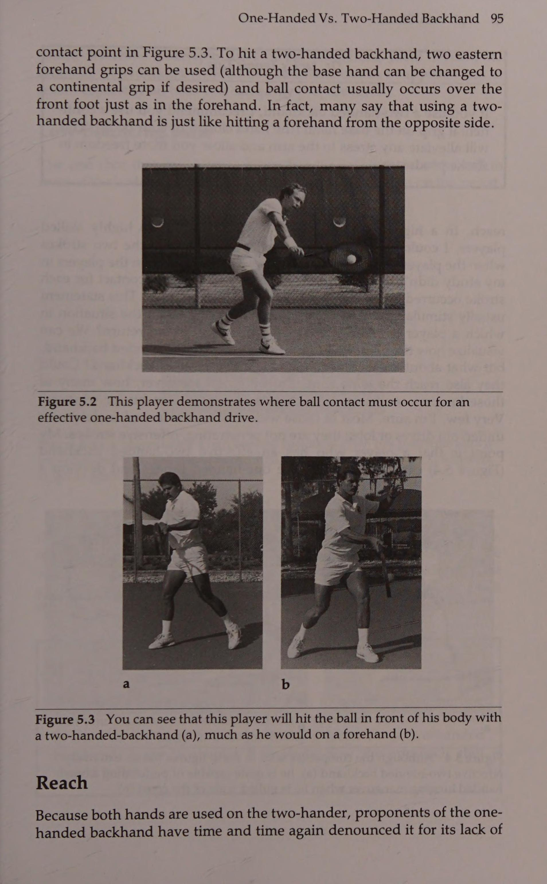
Một lý do khác cho việc xoay đầu vợt là khi cánh tay và bàn tay bắt chéo cơ thể, chúng xoay một cách tự nhiên sao cho lòng bàn tay úp xuống.
Another reason for racket head rotation is that as the arm and hand cross the body, they naturally rotate so the palm of the hand faces down.
Đặt vợt vào tay bạn và vợt sẽ lăn bằng tay. Hành động này là do cấu trúc của vai gây ra và không xảy ra cho đến khi cánh tay vượt qua cơ thể, rõ ràng là ngay sau khi đánh quả bóng tennis.
Place a racket in your hand, and the racket rolls over with the hand. This action is caused by the structure of the shoulder and does not occur until the arm crosses the body, obviously well after a tennis ball is hit.
Bất kể lý do xảy ra là gì, không có chuyển động xoay đầu vợt nào góp phần làm bóng xoáy; vào thời điểm bất kỳ chuyển động quay nào xảy ra, quả bóng là 120 High Tech Tennis $0 Tuần 0 OS aA a b Hình 6.14 Bạn có thể thấy mô-men xoắn được tạo ra như thế nào từ các tác động lệch tâm bên dưới trục trung tâm của vợt (a) và phía trên trục trung tâm của vợt (b). rõ ràng là ra khỏi vợt và đang quay trở lại lưới. Do đó, chuyển động quay của mặt vợt không thể ảnh hưởng đến độ xoáy của bóng. Mặt vợt khi va chạm thường rất gần với phương thẳng đứng. Điều này cho chúng ta biết rằng góc của mặt vợt chỉ đóng một vai trò nhỏ trong việc tạo ra xoáy lên, một kết luận có thể gây ra một số hoài nghi, bởi vì tất cả chúng ta đều đã thấy các tay vợt chuyên nghiệp áp dụng xoáy lên bằng cách dường như lăn vợt qua bóng. Nhưng sự thật vẫn còn đó; nó chỉ không xảy ra.
Regardless of the reason for its occurrence, no racket head rotation contributed to ball spin; by the time any rotation did occur, the ball was $0 Wee 0 OS Figure 6.14 You can see how a torque is created from off-center impacts below the central axis of the racket (a) and above the central axis of the racket (b). clearly off the racket and on its way back over the net. Therefore, the rotation of the racket face couldn’t possibly have affected the amount of spin on the ball. The racket face at impact was usually very close to being vertical. This tells us that the angle of the racket face plays only a minor role in imparting topspin, a conclusion that may cause some skepticism, because we’ ve all seen professional players apply topspin by seeming to roll the racket over the ball. But the facts remain; it just doesn’t happen. Hitting Topspin
Đánh xoáy lên Nếu lăn mặt vợt không phải là cách để tạo ra xoáy lên thì thực hiện như thế nào? Giả sử rằng bạn đang đứng ở đường cuối sân trong tư thế sẵn sàng, cầm vợt bằng tay thường và giữ tay đối diện ở cổ họng. Ngay khi bạn nhìn thấy bóng rời khỏi vợt của đối phương và di chuyển về phía thuận tay của bạn, hãy xoay người và giúp lấy lại vợt bằng tay đối diện của bạn (Hình 6.15). Ngay trước khi bắt đầu cú vung về phía trước, hãy bước về phía quả bóng (hoặc sử dụng tư thế mở mà bạn thích) rồi vung lên để thiết lập sự tiếp xúc ngay phía trước cơ thể của bạn. Kết thúc quá trình theo dõi của bạn ở trên cao trên đầu của bạn. Lúc đầu, bạn nên giữ chắc cổ tay và khuỷu tay khi đánh xoáy lên. Khi bạn đã phát triển được thời gian chính xác, bạn có thể cố gắng đạt được độ xoáy bổ sung bằng cách sử dụng nhiều chuyển động cổ tay và khuỷu tay khác nhau để tăng tốc đầu vợt theo chiều dọc hơn.
If rolling the racket face is not the way to produce topspin, how is it done? Let’s assume that you are standing at the baseline in your ready position, holding the grip of your racket with your normal hand and keeping your opposite hand at the throat. As soon as you see the ball come off the opponent's racket anid travel toward your forehand side, employ the unit turn and help take the racket back with your opposite hand (Figure 6.15). Just prior to initiating the forward swing, step toward the ball (or use an open stance it you prefer) and then swing upward to establish contact just in front of your body. End your follow-through high above your head. At first, you should keep your wrists and elbows firm when hitting topspin. Once you develop the precise timing, you can try to gain additional spin by employing various wrist and elbow movements to accelerate the racket head more vertically.
Bóng xoáy: Tại sao, Khi nào và Như thế nào Hình 6.15 Lưu ý hành động vợt từ thấp đến cao được sử dụng để đánh một cú thuận tay xoáy lên.
Figure 6.15 Notice the low-to-high racket action used to hit a topspin forehand. Dr. Jack’s Tennis Tips
Lời khuyên về quần vợt của Tiến sĩ Jack ¢ Khi đánh bóng xoáy lên, hãy nghĩ đến việc đánh mạnh phần sau của quả bóng lên trên, cố gắng làm cho nó xoay quanh một trục cố định.
¢ Wher hitting topspin, think of aggressively brushing the back of the ball upward, trying to make it revolve around a fixed axis.
Sau khi bạn học cách xoay bóng, hãy ngay lập tức thực hiện các cú đánh xoáy lên của bạn sâu vào phần sân đối phương.
Once you learn how to spin the ball, immediately work on hitting your topspin shots deep into the opponent's court.
Nếu bạn gặp khó khăn khi đánh xoáy lên, hãy thử ''làm chật'' quả bóng (hoặc đến gần nó hơn một chút) một chút. Điều này làm giảm độ dài của cần gạt (tầm với của bạn) và sẽ cho phép bạn xoay cốp xe nhanh hơn.
If you have trouble hitting topspin, try ‘‘crowding” the ball (or getting a little closer to it) just a bit. This decreases the length of the lever (your reach) and will allow you to rotate your trunk faster.
Hãy làm những gì Laver nói rằng anh ấy đã làm khi có áp lực. Anh ta thực sự sẽ vung mạnh hơn với một cú xoay người hướng lên trên theo chiều dọc hơn để đánh được nhiều xoáy lên hơn, cố gắng giữ bóng trong sân.
Do what Laver says he did when the pressure was on. He would actually swing harder with a more vertically upward swing to hit more topspin, trying to keep the ball in the court. Hitting Underspin
Đánh bóng xoáy xuống Để đánh một quả bóng có xoáy xuống, bạn phải đánh vào mặt sau của quả bóng theo kiểu hướng xuống (Hình 6.16). Huấn luyện trước đây đã tạo ra một số phương pháp đánh bóng xoáy xuống tương tự như các phương pháp được đề xuất cho xoáy lên của 122 High Tech Tennis, cách lố bịch nhất là xoay vợt dưới bóng khi va chạm. Nghiên cứu của chúng tôi về 30 tay vợt có kỹ năng cao đã chỉ ra rõ ràng rằng xoáy xuống chỉ có thể được truyền bằng cách đánh mặt sau của quả bóng theo hướng hướng xuống với mặt vợt hơi mở, như bạn thấy trong Hình 6.16.
To hit a ball with underspin, you must strike the backside of the ball in a downward fashion (Figure 6.16). Past coaching has produced several methods of hitting underspin that are similar to those suggested for topspin, the most ludicrous being to turn the racket under the ball at impact. Our study of the 30 highly skilled players clearly indicated that underspin can be imparted only by brushing the backside of the ball in a downward manner with the racket face slightly open, as you see in Figure 6.16.
Bây giờ, đúng là bất cứ khi nào một chuyên gia đánh một cú trái tay xoáy xuống, vợt dường như xoay dưới bóng khi tiếp xúc và tiếp tục xoay sau khi bóng rời vợt. Hãy nhớ rằng thời gian tiếp xúc bóng quá ngắn nên không thể xoay đầu vợt đủ nhanh để hỗ trợ tạo xoáy. Một lý do khiến vợt có thể xoay là do ở vị trí tiếp theo, bàn tay và cẳng tay sẽ xoay theo hướng tự nhiên. Hình 6.16 Ở đây bạn có thể thấy cách đánh một cú công bóng trái tay bằng hai tay với xoáy xuống.
Now, it’s true that whenever a pro hits an underspin backhand, the racket seems to turn under the ball at contact and continue to turn after the ball leaves the racket. Remember that the time of ball contact is so short that it’s impossible to rotate the racket head fast enough to aid in spin production. One reason the racket may turn is that it’s natural in the follow-through position for the hand and forearm to turn so the palm Figure 6.16 Here you can see how to hit a two-handed backhand drive with underspin.
Bóng xoáy: Tại sao, Khi nào và Như thế nào hướng xuống dưới (điều tương tự cũng xảy ra trong suốt thời gian theo dõi khi tay vợt đánh được nhiều xoáy lên). Một lý do khác gây ra hiệu ứng xoay có thể là do lực do bóng tạo ra trên mặt vợt.
faces downward (the same thing happened during the follow-through when players hit a lot of topspin). Another reason for the turning effect may be the force produced by the ball on the racket face.
Trong hầu hết 30 trường hợp được nghiên cứu, bóng tiếp xúc với vợt trong vùng đánh phía trên tâm một chút, khiến vợt quay như trong Hình 6.14b. Để đánh một cú đánh xoáy xuống, bạn phải đưa vợt về phía sau cao hơn so với khi thực hiện một cú đánh mặt đất thông thường. Với đầu vợt hơi mở ra, bạn phải vung vợt xuống để đánh bóng. Đừng chặt bóng mà hãy đánh nhẹ xuống dưới cho đến khi tiếp xúc với bóng. Tại thời điểm này, tay vợt chuyên nghiệp thường sẽ di chuyển vợt lên cao ngang vai. Đây là một chuyển động nhịp nhàng không thực sự cần thiết đối với tất cả mọi người. Tuy nhiên, cú xoay đi xuống là cần thiết để đạt được xoáy xuống.
In almost all of the 30 cases studied the ball contacted the racket in the hitting zone slightly above the center, causing the racket to rotate as shown in Figure 6.14b. To hit an underspin shot, you must take the racket back higher than you would for a routine ground stroke. With the racket head turned slightly open, you must swing downward to hit the ball. Don’t chop at the ball, but drive slightly downward until after ball contact. At this point, a pro will usually move the racket up around shoulder height. This is a rhythmic motion that isn’t really necessary for everyone. The downward swing, however, is essential to hit underspin.
Mặt vợt mở chỉ đơn giản kết hợp với cú vung xuống để đưa bóng qua lưới. Chỉ cần lưu ý không mở mặt vợt quá nhiều, khiến cú đánh xoáy xuống có quỹ đạo cao và tạo điều kiện cho bóng ngồi lên cho đối phương. Giữ ở mức thấp và sâu, xoáy xuống trở thành một vũ khí hữu ích.
The open racket face simply combines with the downward swing to send the ball over the net. Just be careful not to open the racket face too much, causing the underspin shot to have a high trajectory and allowing the ball to sit up for the opponent. Kept low and deep, underspin becomes a useful weapon.
Lời khuyên về quần vợt của Tiến sĩ Jack Khi đánh một cú công bóng xoáy xuống, hãy cố gắng đánh bóng với một cú đánh dài về phía lưới. Điều này sẽ đảm bảo vận tốc đầu vợt cao khi tiếp xúc.
Dr. Jack’s Tennis Tips When hitting an underspin drive, try to knife the ball with a long follow-through toward the net. This will insure a high racket head velocity through impact.
Cái nào dễ đánh hơn: Xoáy lên hay Xoáy xuống?
Which Is Easier to Hit: Topspin or Underspin?
Trong trường hợp nào (xoáy lên hoặc xoáy xuống) bạn nghĩ bóng có thể được xoay nhiều hơn? Câu hỏi này nghe có vẻ hơi buồn cười nhưng câu trả lời thực sự đóng vai trò lớn trong việc kiểm soát một cú đánh tennis. Đây là manh mối cho câu trả lời: Hầu hết tay vợt sử dụng kiểu xoáy nào khi áp lực trong trận đấu trở nên căng thẳng? Mặc dù không phải ai cũng làm điều đó, nhưng nhiều đối thủ (đặc biệt là những người hay lo lắng) sử dụng xoáy xuống trong những tình huống này và họ thậm chí không biết tại sao. Để giúp bạn hiểu lý do, hãy nghĩ xem một quả bóng quay như thế nào khi nó nảy ra khỏi sân; 99,9% thời gian nó có xoáy lên (Hình 6.17). Tuy nhiên, hãy tưởng tượng rằng bạn vừa đánh quả bóng đó (quả bóng xoáy lên về phía bạn) và nó đang quay theo hướng giống như khi nó hướng về phía đối thủ của bạn. Bây giờ xoáy lên, như bạn đã thấy trước khi đánh bóng, là xoáy xuống. Do đó, khi bạn thực hiện một cú trả bóng xoáy lên, bạn phải dừng xoáy đã có trên quả bóng khỏi cú nảy và thay đổi nó để quả bóng quay theo hướng ngược lại. Khi bạn đặt xoáy xuống lên quả bóng, bạn chỉ cần thêm vào Topspin Topspin Underspin Topspin Trước Sau, Trước, Sau khi nảy, nảy, nảy, nảy, nảy. những gì đã có ở đó. Đó là lý do tại sao bạn sẽ dễ bắn trúng hơn khi có áp lực!
In which case (topspin or underspin) do you think more rotation can be put on the ball? This question may sound a little ridiculous, but the answer actually plays a big role in controlling a tennis shot. Here’s a clue to the answer: What type of spin do most players resort to when the pressure in a match gets tight? Although not everyone does it, many competitors (especially the nervous ones) use underspin in these situations and they don’t even know why. To help you understand the reason, think how a ball rotates following its bounce from the court; 99.9 percent of the time it has topspin (Figure 6.17). However, imagine that you have just hit that ball (which came toward you with topspin) and it’s spinning the same way as it heads toward your opponent. Now the topspin, as you viewed it before you hit the ball, is underspin. Therefore, when you hit a topspin return, you must stop the spin already on the ball from the bounce and change it so the ball rotates in the opposite direction. When you place underspin on the ball you merely add to Topspin Topspin Underspin Topspin Before the After the Before the After the Bounce Bounce Bounce Bounce (a) (b) Figure 6.17 Notice in these two conditions how a ball, with initial topspin (a) or underspin (b), has topspin following the rebound. what's already there. That’s why it’s an easier shot to hit when the pressure’s on! NET RESULTS
KẾT QUẢ NET Việc thành thạo việc tạo xoáy là điều cần thiết nếu bạn muốn chơi quần vợt vô địch. Để ngăn cản đối thủ của bạn bắt chước các cú đánh của bạn, bạn phải có khả năng thay đổi độ xoáy của bóng. Khi làm như vậy, bạn có thể khiến đối thủ mất thăng bằng và cũng ngăn cản họ dễ dàng chuẩn bị phát bóng cho cú đánh của bạn. Tuy nhiên, hãy nhớ rằng đối thủ của bạn cũng sẽ cố gắng làm điều tương tự. Do đó, việc làm chủ cú xoay không chỉ bao gồm khả năng thực hiện nhiều cú xoay khác nhau mà còn có thể đọc được quỹ đạo cú đánh của đối thủ và chuẩn bị theo cách nó sẽ dội về phía bạn.
A mastery of spin production is a necessity if you want to play championship tennis. To prevent your opponent from getting grooved to your strokes, you must be able to vary ball spins. In doing so, you can keep the opponent off balance and also prevent him or her from easily setting up to tee off on your shots. Remember, however, that your opponent will also try to do the same thing. Therefore, the mastery of spin not only includes the ability to hit various spins but also to read the trajectory of the opponent’s shot and prepare according to how it will bounce toward you.
Chương 8: Cú Vô-Lê Hiện Đại: Bộ Tay Cố Định & Nghệ Thuật Đón Chặn Trên Lưới
Chapter 8: Advanced Volleying: Firm Wrist, Low Center of Gravity, and Touch Drop Volleys
Tạo ra một cú vô lê tốt thậm chí còn tốt hơn A, những tay vợt quần vợt có kỹ năng biết cách thực hiện cú vô lê, có lẽ vì cần rất ít chuyển động của vợt, khiến cho cú vô lê trở thành một cú đánh khá đơn giản. Tuy nhiên, nhiều cú vô lê thiếu tốc độ, độ sâu và độ xuyên thấu cần thiết cho giải quần vợt vô địch.
Making a Good Volley Even Better A, skilled tennis players know how to volley, probably because very little racket movement is required, making the volley a fairly simple shot to hit. However, many volleys lack the velocity, depth, and penetration necessary for championship tennis.
Một số tay vợt quần vợt có thể không nhận ra sự khác biệt giữa cú vô lê đấm và cú vô lê công, tầm quan trọng của thời gian ở bước tách trước khi thực hiện cú vô lê hoặc quỹ đạo của bóng ra khỏi vợt sẽ như thế nào.
Some tennis players may not realize the difference between a punch volley and a drive volley, how crucial the timing is on the split step prior to volleying, or what the trajectory of the ball off the racket should be.
Chương này sẽ đề cập đến những chủ đề này và hơn thế nữa.
This chapter will address these topics and more.
Nguyên nhân của những cú vô lê kém Trước tiên chúng ta nên thảo luận về hai nguyên nhân chính dẫn đến những cú vô lê kém: quá chú trọng vào việc phát triển các cú đánh nền khi học chơi và nỗi sợ phải vào lưới.
Causes of Poor Volleys We should first discuss two major causes of poor volleys: overemphasis on developing ground strokes while learning to play, and fear of being at the net.
Nhiều tay vợt đẳng cấp thế giới, chẳng hạn như Andre Agassi, Michael Chang và Steffi Graf, nổi tiếng với những cú đánh mặt đất hiệu quả nhưng không phải nhờ những cú vô lê. Mặc dù tất cả những vận động viên này đều có những cú vô lê xuất sắc nhưng bạn hiếm khi nhìn thấy họ trên lưới vì điểm mạnh của họ luôn nằm ở những cú đánh nền. Bởi vì họ không tập đánh vô-lê nhiều như những người như Navratilova hay McEnroe nên kỹ năng tính giờ trên lưới của họ không tốt như mong đợi. Nhận thức được điều này, một số tay vợt có xu hướng mất tự tin vào những cú vô lê của mình trong những thời điểm quan trọng. Một lần khi Andrea Jaeger đánh bại Chris Evert trong trận chung kết của một giải đấu lớn, cô được hỏi chiến lược cơ bản của mình là gì. Câu trả lời của cô ấy là, "Tôi muốn kiên nhẫn và chờ đợi cô ấy phạm sai lầm. Tôi thực sự không muốn vào lưới hoặc làm điều gì đó ngu ngốc". Jaeger tỏ ra rất tôn trọng những cú đánh nền của Evert và cô ấy biết những cú đánh nền của chính mình là thuộc tính mạnh nhất của cô ấy. Tuy nhiên, một người có cú đánh tiếp cận mạnh mẽ và cú vô lê có thể kết thúc điểm dễ dàng hơn một chút; do đó chúng tôi thấy cần phải phát triển tất cả các khía cạnh trong trò chơi của bạn.
Many world-class players, such as Andre Agassi, Michael Chang, and Steffi Graf, are renowned for their effective ground strokes but not for their volleys. Although all of these athletes have excellent volleys, you seldom see them at the net because their strengths have always been in their ground strokes. Because they don’t practice volleying as much as someone like Navratilova or McEnroe, their timing skills at the net aren’t as good as they could be. Realizing this, some tennis players tend to lose confidence in their volleys during important points. Once when Andrea Jaeger beat Chris Evert in the finals of a major tournament, she was asked what her basic strategy was. Her reply was, “I wanted to be patient and wait for her to make a mistake. I really didn’t want to go to the net or do something else that was stupid. Jaeger showed a great deal of respect for Evert’s ground strokes, and she knew her own ground strokes were her strongest attributes. However, a person with an aggressive approach shot and volley may have been able to end the points a bit easier; thus we see the need to develop all aspects of your game.
Một nguyên nhân khác của những cú vô lê có vấn đề là sự sợ hãi, bạn có thể hiểu được điều này nếu tưởng tượng mình đang ở trong một pha đánh bóng về cơ bản. Khi bạn và đối thủ đánh bóng từ vạch cuối sân này đến vạch cuối sân khác, quả bóng sẽ di chuyển ít nhất 78 feet.
Another cause of problematic volleys is fear, which you can understand if you imagine yourself in a baseline rally. As you and your opponent hit the ball from baseline to baseline, the ball travels at least 78 feet.
Bạn có thời gian để đọc cú đánh của đối thủ, quyết định bạn định làm gì với quả bóng, di chuyển vào vị trí và đánh cú đánh thích hợp sau khi bóng nảy. Đột nhiên bạn nhận ra đối phương đã đánh một quả bóng ngắn bên trong đường giao bóng, vì vậy bạn thực hiện một cú đánh tiếp cận, hy vọng giành được một vị trí chiến lược hơn trên lưới. Khi đối thủ đánh trả cú đánh tiếp cận của bạn, quả bóng chỉ di chuyển khoảng 50 feet về phía bạn và bạn cần phải thực hiện một cú vô lê. Không dễ để theo dõi quỹ đạo của quả bóng và thời gian của bạn phải thay đổi đáng kể từ một cú đánh đất thông thường ở đường cuối sân sang phản ứng nhanh và chuyển động của cú vô lê trên lưới. Với tất cả những thay đổi đột ngột về thời gian và sự chuẩn bị, chúng ta có thể hiểu tại sao một số người sợ vị trí trên lưới và họ khó thực hiện cú vô lê tốt trong một thời điểm như thế nào.
You have time to read the opponent’s shot, decide what you intend to do with the ball, move into position, and hit the proper stroke following the bounce. Suddenly you realize the opponent has hit a short ball inside the service line, so you hit an approach shot, hoping to gain a more strategic position at the net. As the opponent hits the return of your approach shot, the ball travels only about 50 feet toward you, and you need to hit a volley. It’s not easy to follow the ball’s trajectory and your timing must change drastically from a routine ground stroke at the baseline to the quick reaction and movement of volleying at the net. With all these sudden changes in timing and preparation, we can see why some people fear the net position and how difficult it is for them to volley well during a point.
Động tác bằng chân là rất quan trọng trong cú vô lê Cũng như các cú đánh khác trong quần vợt, một cú vô lê tốt bắt đầu bằng động tác bằng chân thích hợp. Động tác chân bằng cú bắt lưới (Volley) khác với động tác bằng chân ở các cú đánh khác vì cơ thể thường không xoay nhiều và vì cú vô lê là cú đánh ngắn hơn nhiều nên cần ít lực phản ứng mặt đất hơn so với các cú đánh mặt đất. Tuy nhiên, việc định vị vẫn rất quan trọng. Nếu bạn không ở vị trí để thực hiện một cú vô lê tấn công, bạn sẽ phải thực hiện một cú đánh phòng thủ hơn để giữ bóng. Điều này mang lại cho đối thủ của bạn thêm một cơ hội để đánh cú ghi điểm trực tiếp. Vì vậy, hãy nói về động tác chân thích hợp cho cú vô lê.
Footwork Is Crucial on the Volley As with other strokes in tennis, a good volley begins with proper footwork. Volley footwork is different than footwork on the other strokes because the body often doesn’t turn as much and because the volley is a much shorter stroke that requires less ground reaction force than ground strokes. However, positioning is still crucial. If you’re not in position to hit an offensive volley, you'll have to settle for a more defensive shot to keep the ball in play. This gives your opponent one more chance to hit a winner. So let’s talk about proper footwork for the volley. Getting to the Net: The Split Step
Lên lưới: Bước Tách bóng Có hai cách để vào lưới: giao bóng và vô lê, hoặc đánh một cú đánh tiếp cận và tiến về phía lưới. Cho dù bạn sử dụng phương pháp nào, bạn Thực hiện cú vô lê tốt phải sử dụng động tác bằng chân giống như khi bạn ở gần vị trí thực hiện cú vô lê. Đây là bước tách, một bước giống như chuyển động nhảy lò cò. Tất cả chúng ta đều đã thấy những người chuyên nghiệp thực hiện nó. Ví dụ, khi John McEnroe thực hiện một cú giao bóng đôi (Hình 7.1), anh ấy sẽ thực hiện theo nó và khi đối thủ bắt đầu cú vung về phía trước, McEnroe hơi dang rộng hai chân của mình (nhưng giữ chúng song song với vai của anh ấy) để tiếp đất ở tư thế sẵn sàng chờ đối thủ trả bóng. Vị trí sẵn sàng hoặc bước tách này có thể là phần bị bỏ qua nhiều nhất trong cú vô lê. c Hình 7.1 John McEnroe có một động tác giao bóng và vô lê xuất sắc. Lưu ý bước tách xảy ra ngay trước cú vô lê ở (d). 128 High Tech Tennis Mục đích của việc chia bước là gì? Có phải là trở nên ổn định ở một vị trí sẵn sàng để bạn có thể di chuyển nhanh chóng như nhau theo mọi hướng? Đó là một phần câu trả lời, nhưng còn nhiều điều hơn thế nữa để đạt được một cú vô lê tuyệt vời. Đúng là khi một vận động viên quần vợt điêu luyện chia bước, chúng ta thấy hai bàn chân tách ra, nhưng vị trí này không cố định khi tay vợt tiếp đất. Bàn chân không chỉ đơn giản tách ra, tiếp đất và giữ nguyên vị trí đó cho đến khi bắt đầu cú xoay. Trên thực tế, trọng tâm của cơ thể vẫn tiếp tục chuyển động về phía trước ngay cả khi bàn chân đứng vững trong giây lát. Khi hai bàn chân tách ra để thực hiện bước tách, chúng phải tạo ra chất đàn hồi và bật ra khỏi bước tách và theo cú vô lê. Nếu không xảy ra hiện tượng nảy, mắt cá chân và đầu gối sẽ trở thành bộ giảm xóc chính và uốn cong đáng kể. Điều này sẽ buộc tay vợt phải chìm sâu hơn vào tư thế cúi người và sẽ cản trở phản ứng nhanh.
There are two ways to get to the net: serve and volley, or hit an approach shot and advance toward the net. Whichever method you employ, you must use the same footwork as you near the volleying position. This is the split step, a step that resembles a movement in hopscotch. We've all seen the pros perform it. For example, when John McEnroe hits a serve in doubles (Figure 7.1) he follows it in, and as the opponent begins his forward swing, McEnroe spreads his legs slightly (but keeps them parallel with his shoulders) to land in somewhat of a ready position awaiting the opponent’s return. This ready position or split step may be the single most overlooked part of volleying. c Figure 7.1 John McEnroe has an excellent serve-and-volley maneuver. Notice the split step occurring just prior to the volley in (d). What is the purpose of the split step? Is it to become stable in a ready position so you can move with equal quickness in all directions? That’s partially the answer, but there’s much more to hitting a great volley. It’s true that as a skilled tennis player split steps we see the feet go apart, but this position is not static once the player lands. The feet do not simply -go apart, land, and stay in that location until the swing is initiated. In fact, the body’s center of gravity keeps moving forward even though the feet plant for an instant. When the feet separate to split step, they should generate an elastic quality and bounce out of the split step and into the volley. If no bounce occurs, the ankles and knees will become major shock absorbers and flex significantly. This will force the player to sink deeper into a crouch position and will hinder quick reactions.
Tính thời gian của Bước chia Thời gian là rất quan trọng với nước đi này. Những tay vợt bước vào bước chia bóng quá sớm sẽ bật ra khỏi bước đó quá nhanh, chuẩn bị sẵn sàng cho cú vô lê quá sớm để truyền đà hiệu quả. Những tay vợt bắt đầu bước tách bóng quá muộn trông như thể họ đang chạy qua cú vô lê, khiến cơ thể mất thăng bằng và kiểm soát cú đánh cực kỳ kém. Theo nguyên tắc chung, bạn nên tách bước khi đối thủ của bạn bắt đầu vung vợt về phía trước.
Timing the Split Step Timing is crucial with this move. Players who go into the split step too soon will bounce out of it too quickly, readying themselves for the volley too early for an effective momentum transfer. Players who initiate the split step too late look as though they are running through the volley, causing poor body balance and extremely poor shot control. As a general rule, you should split step as your opponent begins the forward swing.
Mặc dù không phải là cách có giá trị về mặt khoa học để xác định thời điểm tách bước, nhưng đây là một cách thực hành tốt vì nó thường cho phép bạn tách bước và đánh một cú vô lê đúng lúc. Trên thực tế (chỉ để cung cấp cho bạn một chút thông tin khoa học), tôi và các đồng nghiệp đã sử dụng phim tốc độ cao để đánh giá cơ chế của bước phân tách. Chúng tôi nhận thấy rằng những tay vô lê cừ khôi thực sự đã tách bước ngay sau cú va chạm của đối thủ. Điều này có nghĩa là thông qua thử và sai, họ đã biết chính xác thời điểm phải thực hiện bước tách bóng để đưa họ vào lưới nhanh nhất có thể mà vẫn cho phép bộ não của họ có đủ thời gian để xử lý tác động và đưa ra tín hiệu di chuyển về vị trí cú bắt lưới (Volley). Tuy nhiên, tôi không khuyên bạn nên thử tách bước ngay sau khi đối phương tiếp xúc với bóng. Mối quan hệ giữa đôi mắt của bạn tập trung vào những gì đang diễn ra và bộ não của bạn cố gắng xác định chính xác thời điểm hạ cánh một cách có ý thức sẽ tạo ra quá nhiều vấn đề về thời gian và chuyển động. Vì vậy, hãy thử tiếp đất ở bước chia đôi ngay khi đối phương tiếp xúc với bóng. Khi kỹ năng của bạn phát triển, có thể bạn sẽ bắt đầu hạ cánh sau đó trong tích tắc và thậm chí bạn sẽ không nhận ra điều đó!
Although not a scientifically valid way of determining when to split step, this is a good practice because it usually will allow you to split step and hit a well-timed volley. In fact (just to give you a little scientific tidbit), my colleagues and I used high-speed film to evaluate the mechanics of the split step. We found that the great volleyers actually split step during the instant just after the opponent’s impact. This means that through trial and error, they learned exactly when the split step must occur to get them to the net as quickly as possible and still allow their brains to have enough time to process the impact and give the signal to move toward the volley position. However, I don’t advise you try split stepping just after the opponent makes contact with the ball. The relationship between your eyes focusing on what’s going on and your brain consciously trying to determine exactly when to land simply would create too many timing and movement problems. So, try landing on the split step just as the opponent makes contact with the ball. As your skill develops, you will probably begin landing a split second later and you won't even realize it!
Lời khuyên về quần vợt của Tiến sĩ Jack Nếu bạn có một cú giao bóng xuất sắc hoặc một cú đánh tiếp cận hoàn hảo và bạn thấy đối thủ của mình bắt đầu lao vào bóng, đừng tách bước!
Dr. Jack’s Tennis Tips If you have an excellent serve or a perfect approach shot and you see your opponent beginning to lunge at the ball, don’t split step!
Cú trả bóng có thể sẽ yếu, khiến bạn có thể lao vào gần lưới hơn.
The return will likely be weak, enabling you to rush in closer to the net.
Tạo Cơ chế Cú bắt lưới (Volley) Tốt của Bước Tách Bước Chức năng của bước tách là mở rộng thế đứng, tạo ra một cơ sở hỗ trợ ổn định, nhưng không cố định khi tiếp đất. Đế càng rộng và ổn định hơn (trong phạm vi lý do), bạn càng trở nên không ổn định theo hướng chuyển động quay của đơn vị. Điều này cho phép chuyển động rất nhanh theo bất kỳ hướng nào. Sau đó, điểm chính là tính toán thời gian hợp lý cho hành động tách bước và tạo ra sự mất cân bằng nhẹ về phía trước theo hướng của cú vô lê.
Mechanics of the Split Step The function of the split step is to widen the stance, creating a stable, yet not fixed, base of support upon landing. The wider and more stable the base (within reason), the faster you become unstable toward the direction of the unit turn movement. This allows very fast movements in any direction. The main point, then, is to properly time the split step action and create a slight imbalance forward in the direction of the volley.
Cú bắt lưới (Volley) từ bước tách bóng Khi bạn chuẩn bị bật ra khỏi bước tách bóng để thực hiện cú vô lê, hãy luôn cố gắng bước về phía trước để thực hiện cú đánh, như trong Hình 7.2. Khi bạn đi Hình 7.2. Tay vợt hướng dẫn cách tiến về phía trước khi tung cú vô lê mạnh. lên lưới, hãy coi vị trí bàn chân song song của bạn trong bước tách bóng giống như đáy của một hình tam giác (Hình 7.3). Khi bóng đến gần, bước lên đỉnh tam giác ngay trước khi tiếp xúc với bóng. Điều này sẽ đảm bảo truyền động lượng vào cú đánh một cách âm thanh. Một lần bạn đánh bóng, giữ nguyên vị trí đáy của tam giác một lần nữa. Rõ ràng, đôi khi động tác bằng chân này sẽ không thể thực hiện được, chẳng hạn như khi bạn bị cản trở bởi cú đánh của đối phương hoặc khi bạn phải căng người để thực hiện cú vô lê trả bóng. Tuy nhiên, nếu bạn hiểu và sử dụng cách chuyển trọng lượng về phía trước này, cú vô lê của bạn sẽ được cải thiện rất nhiều.
Volleying From the Split Step As you prepare to bounce out of the split step to hit the volley, always try to step forward into the shot, as shown in Figure 7.2. When you go Figure 7.2. The player shows how to move forward when hitting a strong volley. to the net, think of your parallel foot positioning in the split step as being the base of a triangle (Figure 7.3). As the ball approaches, step to the top of the triangle just before making contact with the ball. This will ensure a sound transfer of momentum into the stroke. One you hit the ball, maintain the base of the triangle position again. Obviously, at times this footwork will be impossible, such as when you get jammed by an opponent’s stroke or when you must stretch to volley the return. However, if you understand and use this forward weight transfer, your volley should improve immensely.
Cơ chế phần thân trên trong cú bắt lưới (Volley) Khi bạn đạt được các chuyển động chính xác của phần thân dưới, phần thân trên sẽ phát huy tác dụng. Nếu động tác bằng chân của bạn được thực hiện chính xác thì hông và 130 High Tech Tennis b c Hình 7.3. Từ vị trí sẵn sàng (a) đấu thủ bước về phía đỉnh tam giác (b) để đánh vô-lê (c). cốp xe sẽ được xoay một chút để phù hợp với động tác vô-lê tốt. Lúc này, một số tay vợt mắc lỗi nghiêm trọng khi đánh cú bắt lưới (Volley).
Upper Body Mechanics in Volleying Once you achieve the correct lower body movements, the upper body comes into play. If your footwork is precisely performed, the hips and Figure 7.3. From the ready position (a) the player steps toward the top of the triangle (b) to volley the ball (c). trunk will be turned slightly to accommodate a good volleying action. At this point, some tennis players make a serious mistake when volleying.
Họ cố gắng chế ngự cú vô lê bằng cách sử dụng một cú xoay người hoàn toàn gây cản trở nghiêm trọng việc kiểm soát.
They try to overpower the volley by using a full swing that severely hampers control.
Bởi vì việc đánh cú vô lê với độ chính xác rõ ràng là quan trọng, nên tiếp theo chúng ta sẽ thảo luận về ưu điểm và nhược điểm của hai loại cú vô lê khác nhau rõ ràng: cú vô lê đấm và cú vô lê truyền động. Cú vô lê đấm, được minh họa trong Hình 7.4, đề cập đến một cú vô lê ngắn, gọn, sử dụng rất ít động tác xoay người ra sau hoặc theo sau. Cú vô lê công, như trong Hình 7.5, lấy tên từ động tác vung vợt ra sau và theo sát được nhấn mạnh khi tay vợt đánh bóng vào phần sân đối phương. Thời gian là rất quan trọng khi bạn thực hiện cú vô lê và điều này đặc biệt đúng với cú vô lê truyền động.
Because hitting the volley with precision is obviously important, we next discuss the advantages and disadvantages of two distinctly different volley types: the punch volley and the drive volley. The punch volley, shown in Figure 7.4, refers to a short, compact volley that utilizes very little backswing or follow-through. The drive volley, seen in Figure 7.5, gets its name from an emphasized backswing and follow-through employed as the player drives the ball into the opponent's court. Timing is crucial when you volley and this is particularly true with the drive volley.
Cú vô lê đấm cũng phải là một cú đánh đúng lúc, nhưng nhờ vào Cú vô lê đẹp Hình 7.4 Vận động viên này thể hiện cách thực hiện cú vô lê đúng cách. Chú ý động tác vung nhẹ về sau và vuốt ngắn được sử dụng khi tiếp xúc với bóng.
The punch volley must also be a well-timed stroke, but because of the Figure 7.4 This athlete shows the proper execution for a punch volley. Notice the slight backswing and short stroking maneuver used when contacting the ball.
Hình 7.5 Thí sinh này thực hiện cú vô lê truyền động. So sánh sự khác biệt trong cú vung vợt sau và cú đánh tiếp theo với cú đấm vô lê, xem trong Hình 7.4. các chuyển động của chi trên dài hơn theo yêu cầu của cú đánh bóng, thời gian thậm chí còn quan trọng hơn đối với cú đánh bóng. Để chứng minh thực tế này và cho thấy các kỹ thuật này ảnh hưởng như thế nào đến các cấp độ kỹ năng khác nhau, tôi và các đồng nghiệp đã tiến hành một nghiên cứu về kỹ thuật vô-lê của những tay vợt ở trình độ cao cấp, trung cấp và mới bắt đầu. Tất cả các tay vợt được yêu cầu đứng ở một vị trí cụ thể trên sân gần lưới và đánh một cú vô lê trực tiếp về phía mục tiêu gần đường cuối sân. Họ được quay với tốc độ 200 khung hình mỗi giây khi cố gắng thực hiện những cú vô lê về phía mục tiêu.
Figure 7.5 This competitor demonstrates a drive volley. Compare the difference in the backswing and follow-through with those of the punch volley, seen in Figure 7.4. longer upper limb movements required by the drive volley, timing is even more critical for the drive. To prove this fact and show how different skill levels are affected by these techniques, my colleagues and I conducted a study on the drive volley techniques of advanced, intermediate, and beginning players. All players were asked to stand in a specific spot on the court near the net and hit a drive volley directly back toward a target close to the baseline. They were filmed at 200 frames per second as they tried to hit drive volleys toward the target.
Đúng như chúng tôi mong đợi, các tay vợt có kỹ năng thực hiện những cú vô lê xuất sắc, đánh từng quả bóng gần tâm mặt vợt. Những tay vợt ở trình độ trung bình chỉ đánh những cú vô lê tầm thường và hầu hết các tác động đều lệch tâm, gây ra tình trạng xoay vợt rất nhiều. Không cần phải nói, những người mới bắt đầu cũng gặp khó khăn; rất ít cú vô lê của họ thậm chí còn đi qua lưới và tất cả các tác động đều đi chệch trung tâm một cách nghiêm trọng. Chỉ có một người bắn trúng mục tiêu và điều thú vị là đó không phải là một trong những tay vợt cao cấp. Đó là một trong những người mới bắt đầu, sau khi chán nản với những cú vô lê truyền động, đã sử dụng một cú vô lê đấm. Cú vô lê đầu tiên và duy nhất của anh đã trúng đích. Điều tra sâu hơn cho thấy tất cả các tay vợt đều có quyền kiểm soát nhiều hơn bằng cách sử dụng cú vô lê. Do đó, nghiên cứu này có vẻ quan trọng ở hai khía cạnh: (1) chỉ những tay vợt có kỹ năng mới có đủ thời gian cần thiết để thực hiện một cú vô lê hiệu quả và thậm chí khả năng kiểm soát của họ cũng bị nghi ngờ khi sử dụng nó, và (2) cú vô lê đấm có thể cung cấp cho tay vợt nhiều khả năng kiểm soát hơn so với cú vô lê công.
As we expected, the skilled players executed excellent drive volleys, hitting each ball near the racket face center. The intermediate players hit only mediocre drive volleys, and most impacts were off-center, causing a great deal of racket rotation. The beginners, needless to say, had their difficulties; very few of their drive volleys even made it over the net and all impacts were severely off center. Only one person hit the target, and interestingly enough it wasn’t one of the advanced players. It was one of the beginners who, after becoming frustrated with drive volleys, used a punch volley. His first and only punch volley hit the target. Further investigation revealed that all the players had more control using a punch volley. Therefore, this study seems important in two respects: (1) only skilled players have the timing required to hit an effective drive volley, and even their control is suspect when using it, and (2) the punch volley may provide a player with a good deal more control than the drive volley.
Chuyển động của cánh tay trong cú bắt lưới (Volley) hiệu quả Bất kể sử dụng cú đánh hay cú vô lê, chuyển động của cánh tay của một số tay vợt quần vợt vẫn có thể gây ra một số vấn đề nghiêm trọng về độ chính xác.
Arm Movement in Effective Volleying Regardless of whether a drive or punch ' volley is used, the arm motions of some tennis players can still cause some serious accuracy problems.
Khi tay vợt bước vào và bước ra khỏi bước chia đôi, họ thường giữ khuỷu tay của mình sát vào cơ thể. Điều này có thể làm chậm tốc độ hoạt động của vợt của tay vợt rất nhiều. Trên thực tế, tôi chắc rằng bạn đã nghe nói rằng một số tay vợt được cho là có bàn tay lên lưới nhanh vì họ phản ứng rất tốt với những cú đánh tốc độ cao. Bàn tay có thể có liên quan gì đó, nhưng chìa khóa thực sự nằm ở vị trí của chi trên. Khi khuỷu tay được giữ chặt vào cơ thể, chi trên phải xoay ra ngoài. Thực tế, vợt đi vào một vị trí hơi lùi về phía sau mà đối với nhiều tay vợt, điều này có thể khiến bóng tiếp xúc muộn và khả năng kiểm soát kém. Nếu khuỷu tay được giữ hơi xa cơ thể, chi trên có thể được sử dụng hiệu quả hơn một chút và sẽ ít xảy ra chuyển động xoay ở vai hơn. Điều này có nghĩa là vợt sẽ không chuyển sang vị trí backswing mà sẽ ở phía trước cơ thể. Điều này cho phép tác động hiệu quả hơn và giúp tay vợt có đôi tay nhanh hơn so với khi giữ cùi chỏ.
As players bounce into and out of the split step, they often hold their elbows close to their bodies. This can slow down a player’s racket work tremendously. In fact, I’m sure you’ve heard how some players are said to have quick hands at the net because they react to high-velocity shots so well. The hands may have something to do with it, but the real key lies in the upper limb positioning. When the elbows are held in tight to the body, the upper limb must rotate outward. The racket actually goes into a slight backswing position that, for many players, can cause late ball contact and poor control. If the elbows are held slightly away from the body, the upper limb can be used a bit more effectively, and less rotation at the shoulder will occur. This means the racket will not go into a backswing position but will stay in front of the body. This allows for more effective impact and enables the player to have quicker hands than if the elbows are held in.
Nhanh tay là cần thiết khi bạn phản ứng với một quả bóng chạm vào băng lưới. Khi điều này xảy ra, bóng thường nằm ở phần sân của đối phương và bạn sẽ giành được điểm. Tuy nhiên, đôi khi, quả bóng sẽ chạm vào băng lưới và tiếp tục hướng về phía bạn theo một trong hai cách: (1) Nó sẽ lật băng lưới và hơi bay lên trên, mất một chút vận tốc, hoặc (2) nó sẽ đập mạnh vào băng và hầu như không rơi xuống sân của bạn. Khi nghe bóng chạm băng, bạn phải phản ứng nhanh: (1) nhấc đầu vợt lên một chút để nếu bóng bay ra khỏi lưới bạn sẽ có cơ hội tiếp xúc với nó, hoặc (2) ngay lập tức chạy nhanh về phía trước để có thể đánh bóng trước khi nó nảy lên hai lần. Mặc dù hai hiện tượng này không xảy ra thường xuyên trong một trận đấu quần vợt, nhưng tôi đã chứng kiến rất nhiều điểm do một tay vợt giành được chỉ bằng cách phản ứng với một trong những tình huống này. Hãy nhớ rằng, đối thủ của bạn không cố tình đánh vào băng lưới, vì vậy bất cứ khi nào bóng chạm lưới và thực hiện một cú vô lê tốt vào sân của bạn, đối thủ của bạn thường mất cảnh giác và phải phản ứng với bạn.
Quick hands are necessary when you react to a ball that hits the net tape. When this occurs the ball usually stays on the opponent’s side of the court and you win the point. At times, however, the ball will hit the net tape and continue toward you in one of two ways: (1) It will tip the net tape and skip slightly upward, losing little velocity, or (2) it will hit the tape solidly and barely fall over into your court. When you hear the ball hit the tape, you must react quickly: Either (1) lift the racket head slightly so if the ball skips up off the net you will have a chance to contact it, or (2) immediately sprint forward so you can hit the ball before it bounces twice. Although these two phenomena don’t happen often in a tennis match, I’ve seen a lot of points won by a player merely reacting to one of these situations. Remember, your opponent isn’t intentionally trying to hit the net tape, so whenever the ball hits the net and comes
Nên sử dụng cách cầm vợt nào khi đánh cú bắt lưới (Volley) Chúng tôi đã nghiên cứu tầm quan trọng của động tác chân và cơ chế cơ thể thích hợp khi đánh cú bắt lưới (Volley), vì vậy bước tiếp theo là phân tích cách cầm vợt. Điều này có vẻ tầm thường đối với một số tay vợt, nhưng cách định hướng vợt trong tay sẽ có ảnh hưởng rất lớn đến việc bóng được đánh tốt như thế nào và nó sẽ đi đến đâu sau khi được đánh. Có hai luồng suy nghĩ tồn tại khi quy định cách cầm vợt để sử dụng khi thực hiện cú vô lê: (1) Thay đổi cách cầm vợt từ cách cầm vợt thuận tay phía đông cho cú vô lê thuận tay sang kiểu cầm vợt trái tay phía đông cho cú vô lê trái tay và (2) sử dụng cách cầm vợt lục địa cho cú vô lê ở cả hai bên.
into your court, your opponent is usually caught off guard and must react with you. What Grip to Use When Volleying We've studied the importance of proper footwork and body mechanics in hitting volleys, so the next step is to analyze how the racket should be held. This may seem trivial to some players, but how the racket is oriented in the hand will have a huge effect on how well the ball is hit and where it will go once hit. Two trains of thought exist when prescribing the grips to use when volleying: (1) Change grips from an eastern forehand grip for a forehand volley to an eastern backhand grip for a backhand volley, and (2) use a continental grip for volleys on both sides.
Mục tiêu chính của mỗi kỹ thuật là cung cấp cho tay vợt cách cầm vợt thoải mái, giúp mặt vợt gần như phẳng khi va chạm. Có những ưu điểm và nhược điểm về cơ sinh học liên quan đến kỹ thuật cầm vợt, và trong một thời gian khá dài, các nhà chức trách đã tranh luận rằng cách cầm bóng nào mang lại lợi thế lớn nhất cho cú vô lê.
The primary goal of each technique is to provide the player with a comfortable grip that provides a nearly flat racket face at impact. There are biomechanical advantages and disadvantages related to either gripping technique, and for quite some time authorities have debated which grip provides the greatest advantages for volleying.
Các cơ quan quản lý quần vợt trong nhiều năm đã phân chia không chỉ giữa phương pháp cầm vợt nào là tốt nhất cho người mới bắt đầu mà còn giữa thời điểm kỹ thuật có vẻ phù hợp nhất khi kỹ năng tăng lên. Ba trường phái tư tưởng lớn về giảng dạy tồn tại.
Tennis authorities over the years have been split not only between which gripping method is best for the beginning player but also between when technique seems most appropriate as skill rises. Three major schools of thought on teaching exist.
1. Nếu tay vợt học cách cầm vợt lục địa trong giai đoạn đầu chơi và sử dụng nó trong suốt sự nghiệp của mình, tay vợt sẽ có cơ hội tốt hơn để phát triển cú đánh nâng cao.
1. If the player learns the continental grip in the early stages of playing and uses it throughout his or her career, the player has a better chance for advanced stroke development.
2. Cách thay đổi cách cầm vợt kiểu đông được dạy tốt nhất cho những người mới bắt đầu, những người nên sử dụng kỹ thuật này trong suốt sự nghiệp của mình. 3. Phương pháp cầm vợt phía Đông được sử dụng tốt nhất để dạy cho người mới chơi, nhưng tay vợt nên chuyển sang cách cầm vợt kiểu lục địa khi kỹ năng phát triển.
2. The eastern grip change is best taught to the beginners, who should use this technique for the duration of their careers. 3. The eastern grip method is best used to teach the novice player, but the player should change to the continental grip as skill develops.
Sự đa dạng về quan điểm này đã đưa ra quyết định sử dụng phương pháp nào là khó khăn đối với bất kỳ tay vợt nào. Vì vậy, chúng ta cần tìm hiểu cụ thể các chuyên gia nói gì về công dụng của từng tay cầm. Sau đó, chúng ta có thể áp dụng các khái niệm khoa học thể thao vào cuộc tranh cãi để giúp bạn đưa ra những quyết định nhất định về điều gì là tốt nhất cho mình.
This diversity of opinion has made the decision of which method to use a difficult one for any player. Therefore, we need to examine specifically what the experts say about the use of each grip. Then we can apply sports science concepts to the controversy to help you make certain decisions about what is best for you.
Những người ủng hộ sự nắm bắt lục địa (Hình 7.6) chỉ ra một số ưu điểm của kỹ thuật này, tuyên bố phổ biến nhất là yếu tố thời gian liên quan khi so sánh với sự thay đổi sự nắm bắt phía đông. Bởi vì thời gian cần thiết để chuẩn bị cú đánh giảm đi khi tay vợt ở trên lưới, những người ủng hộ cảm thấy rằng kiểu cầm vợt lục địa cần ít thời gian hơn để thực hiện một cú vô lê hiệu quả. Nhóm này cũng trích dẫn rằng tay vợt sử dụng cách cầm vợt lục địa chỉ cần quan tâm đến phương pháp cầm vợt, điều này có vẻ mong muốn trong các tình huống áp lực. Một tuyên bố khác ủng hộ việc sử dụng cách cầm vợt kiểu lục địa là nó mang lại mức độ thích ứng cao hơn. b Hình 7.6 Lưu ý cách chữ V của bàn tay nằm trên cạnh vát bên trong (góc) của cán vợt khi tay vợt sử dụng kiểu cầm kiểu lục địa. về phía tay vợt. Kỹ thuật này cho phép mặt vợt mở một cách tự nhiên, hỗ trợ xử lý bóng thấp và một số người cảm thấy rằng mặt vợt mở phù hợp nhất với các tình huống phản ứng khác nhau xảy ra trong trận đấu trên lưới. Vẫn còn những người khác cho rằng sự thoải mái và tự tin của tay vợt được cải thiện bằng cách sử dụng cách cầm vợt kiểu lục địa (vì không cần thay đổi cách cầm), do đó cải thiện lối chơi trên lưới.
Those who support the continental grip (Figure 7.6) point to several advantages of this technique, the most popular claim being the time factor involved when compared with the eastern grip change. Because the time needed for stroke preparation is reduced when the player is at the net, proponents feel that the continental grip requires less time to execute an effective volley. This group also cites that the player using a continental grip need only be concerned about the gripping method, which seems desirable in pressure situations. Another claim favoring use of the continental grip is that it provides for a greater degree of adaptability Figure 7.6 Notice how the V of the hand is located over the inside beveled (angled) edge of the racket handle when the player uses a continental grip. on the part of the player. This technique naturally permits an open racket face, which assists in handling low balls, and some feel that the open racket face is most adaptable for the various reaction-type situations that occur in net play. Still others claim that the player’s comfort and confidence are improved by using the continental grip (because no grip change is required), thus improving play at the net.
Trường phái tư tưởng thứ hai liên quan đến cách cầm cú bắt lưới (Volley) bao gồm những huấn luyện viên ủng hộ quan điểm rằng phương pháp thay đổi cách cầm theo phương đông là tốt nhất cho tay vợt nâng cao. Hầu hết những người có thẩm quyền này cảm thấy có nhiều thời gian, ngay cả trong những pha trao đổi cú bắt lưới (Volley) trên lưới nhanh nhất, để thực hiện việc thay đổi cách cầm từ thuận tay (Hình 7.7a và b) sang trái tay (Hình 7.7c và d). Họ lưu ý rằng nếu việc thay đổi cách cầm là bước đi đầu tiên của tay vợt thì thời gian không trở thành một yếu tố. Những cá nhân này đã trích dẫn nhiều lợi thế cơ học tương ứng với các tay nắm phía đông khiến chúng dường như là sự lựa chọn ưu việt. Những người ủng hộ này cảm thấy rằng cách cầm vợt này mang lại khả năng kiểm soát tốt hơn đối với những cú vô lê cao, khả năng kiểm soát hướng dọc đường biên tốt hơn và sức mạnh lớn hơn (do cách định hướng tay trên tay cầm) đối với cú vô lê.
The second school of thought regarding the volley grip includes those coaches who support the notion that the eastern grip-change method is best for the advanced player. Most of these authorities feel there is plenty of time, even in the quickest of net volley exchanges, to make the grip change from forehand (Figure 7.7a and b) to backhand (Figure 7.7c and d). They note that if the grip change is the first move on the player’s part, time does not become a factor. These individuals have cited many mechanical advantages corresponding to the eastern grips that make them seem to be the superior choice. These proponents feel that this grip offers increased control on high volleys, better directional control down the line, and greater strength (due to how the hand is oriented on the handle) for the volley.
Thực hiện một cú vô lê tốt c d Hình 7.7 Lưu ý vị trí của chữ V của bàn tay để tạo thành thuận tay phía đông (a và b) và trái tay phía đông (c và d).
Figure 7.7 Note the placement of the V of the hand to form the eastern forehand (a and b) and eastern backhand (c and d).
Vẫn còn các chuyên gia quần vợt khác đề nghị dạy cho người mới bắt đầu và người mới bắt đầu nâng cao phương pháp thay đổi cách cầm vợt kiểu đông nhưng yêu cầu học sinh chuyển sang cách cầm vợt kiểu châu lục khi kỹ năng của họ được cải thiện. Các chuyên gia này đồng ý rằng người mới bắt đầu chơi phải học cách phát triển mặt vợt thẳng đứng khi tiếp bóng, nhưng khi đạt được tiến bộ về kỹ năng, học viên nên thay đổi vị trí tay trên vợt theo kiểu cầm vợt kiểu lục địa. Bằng cách đó, tay vợt nâng cao có thể tận dụng lợi thế của mặt vợt hơi thoáng và đặc tính tiết kiệm thời gian. Một số huấn luyện viên quần vợt kỳ cựu cảm thấy rằng trình độ chơi của người mới bắt đầu cho phép có thời gian để thay đổi trục và cách cầm, nhưng khi trận đấu trở nên nhanh hơn với trình độ kỹ năng tăng lên, tay vợt cần sử dụng lợi thế không thay đổi của cách cầm kiểu lục địa. Một số nhà chức trách thậm chí còn chỉ ra rằng tay vợt có thể có nhiều thời gian để thay đổi cách cầm vợt ở cấp độ thi đấu ưu tú nhưng vấn đề đó thường nảy sinh do khó xác định vị trí đặt tay thích hợp cho việc thay đổi cách cầm vợt phía đông. Một vấn đề khác nảy sinh là học viên trở nên quá thoải mái với cách cầm vợt mà mình sử dụng lần đầu đến nỗi thói quen này khó thay đổi sau này.
Still other tennis experts suggest teaching beginners and advanced beginners the eastern grip-change method but having the students switch to the continental grip as their skills improve. These experts agree that the beginning player must first learn to develop a vertical racket face at impact, but as advancements are made in skill the student should modify the hand position on the racket to the continental grip. By doing so, the advanced player can take advantage of the slightly open-faced racket and time-saving characteristics. Some veteran tennis instructors feel that the beginner’s level of play allows time for a pivot and grip change, but as play becomes quicker with increased skill level, the player needs to use the no-change advantage of the continental grip. Some authorities even point out that the player may have plenty of time for a grip change at the elite level of competition but that problems often arise due to the difficulty in locating the proper hand position for the eastern grip change. Another problem that arises is that the student becomes so comfortable with the grip he or she first uses that the habit is difficult to change later.
Phần lớn thông tin trước đây được rút ra từ kinh nghiệm cá nhân và quan sát của những cá nhân chơi hoặc dạy học chuyên nghiệp. Ý tưởng của họ rất đúng đắn, nhưng chúng ta có thể tiến thêm một bước nữa bằng cách áp dụng các khái niệm khoa học thể thao vào các vấn đề liên quan.
Much of the previous information has been derived through the personal experiences and observations of individuals who play or teach professionally. Their ideas are sound, but we might be able to go a step further by applying sport science concepts to the problems involved.
Vì vậy, hãy cùng phân tích xem điều gì tạo nên một cú vô lê hiệu quả về mặt cơ học.
Therefore, let’s analyze what goes into the grip of a mechanically efficient volley.
Khoa học thể thao cho chúng ta biết gì về cách cầm cú bắt lưới (Volley) Yêu cầu quan trọng nhất đối với cách cầm cú bắt lưới (Volley) là nó định hướng mặt vợt chính xác để có thể đánh được cú đánh tối ưu. Ở những cú vô lê cao, mặt vợt gần như thẳng đứng là cần thiết, nhưng ở những cú vô lê thấp, mặt vợt phải hơi vát để giúp bóng đi qua lưới và rơi sâu vào phần sân đối phương. Một điểm khác biệt giữa cách cầm vợt kiểu lục địa và cách cầm vợt kiểu đông nằm ở chỗ mặt vợt hướng tự nhiên về phía bóng khi tiếp xúc. Cách cầm vợt phía Đông cho phép cổ tay được xác nhận chắc chắn về mặt cơ học và dễ dàng tạo ra mặt vợt thẳng đứng cho quả bóng khi tiếp xúc. Điều này cho phép truyền lực trực tiếp từ vợt sang bóng và đảm bảo cú đánh chắc chắn, tốc độ cao nếu muốn. Ngược lại với điều này, cách cầm vợt kiểu lục địa thường gây ra một số sai lệch ở cổ tay nếu sử dụng đúng cách và cũng khiến mặt vợt hơi vát về phía sau để mở ra cho bóng khi tiếp xúc. Điều này hỗ trợ tay vợt tạo xoáy xuống vào bóng, bởi vì để tay vợt duy trì khả năng kiểm soát cú đánh trong khi đánh bằng vợt mặt mở, chuyển động vuốt ve phải từ cao đến thấp một chút.
What Sport Science Tells Us About the Volley Grip The most important requirement for a volley grip is that it orient the racket face correctly so that an optimum shot can be hit. On high volleys a near-vertical racket face is necessary, but on low volleys the racket face must be slightly beveled to help the ball clear the net and fall deep in the opponent’s court. One difference between the continental grip and the eastern grip lies in how the racket face is naturally oriented to the ball at impact. The eastern grip allows the wrist to be in a mechanically sound confirmation and easily presents a vertical racket face to the ball at impact. This allows for a direct force transfer from racket to ball and ensures a firm, high-velocity shot if desired. Contrary to this, the continental grip normally causes some wrist deviation if used properly and also causes the racket face to be slightly beveled backward so it is open to the ball at impact. This assists the player in putting underspin on the ball, because in order for the player to maintain control of the shot while hitting with an open-faced racket, the stroking motion must be slightly high to low.
Điều thú vị là, có thể lập luận rằng cả hai kỹ thuật cầm vợt đều tăng cường khả năng kiểm soát cú bắt lưới (Volley), cách cầm vợt phía đông vì nó mang lại tác động bóng-vợt tối ưu và cách cầm vợt kiểu lục địa vì nó cho phép sử dụng xoáy xuống dễ dàng và giúp tạo độ sâu cú đánh do mặt vợt mở.
Interestingly enough, it can be argued that both grip techniques enhance volley control, the eastern grip because it provides optimal ball-racket impact and the continental grip because it allows for underspin to be used readily and helps with shot depth due to the open face.
Một trong những nhược điểm thường được đề cập nhất của cách cầm vợt kiểu lục địa là nó gây khó khăn cho tay vợt khi thực hiện cú vô lê dọc đường biên ở phía thuận tay khi ở vị trí gần đường giao bóng. Bức ảnh từ trong ra ngoài này đã là một chủ đề được quan tâm. Nếu bạn sử dụng kiểu cầm vợt thuận tay kiểu đông (Hình 7.8), bạn có thể dễ dàng đi xuống đường biên mà không có bất kỳ sự vặn xoắn đáng kể nào ở cổ tay hoặc khuỷu tay. Nếu bạn sử dụng tay cầm lục địa, bạn phải điều động cổ tay và khuỷu tay vào vị trí thích hợp hoặc nếu không hãy sử dụng thiết bị xoay và định hướng cơ thể để chi trên không phải thực hiện những chuyển động này.
One of the most often mentioned disadvantages of the continental grip is the difficulty it causes a player in volleying down the line on the forehand side while at a position near the service line. This inside-out shot has been a topic of concern. If you use an eastern forehand grip (Figure 7.8) it is fairly easy to go down the line without any significant wrist or elbow contortions. If you use a continental grip, you must maneuver the wrist and elbow into the proper positions or else utilize the unit turn and orient the body so the upper limb won’t have to go through these motions.
Một lợi thế cơ học khác thúc đẩy sự thay đổi cách cầm vợt kiểu đông liên quan đến cú vô lê trái tay, trong đó kiểu cầm trái tay kiểu đông cho phép cổ tay ở vị trí hiệu quả. Ngược lại, một cú vô lê trái tay với kiểu cầm vợt kiểu lục địa gây áp lực rất lớn lên cơ bắp ở cẳng tay. Từ quan điểm y học thể thao, chỉ riêng bằng chứng này đã ủng hộ việc sử dụng cách thay đổi cách cầm vợt kiểu đông, và trên thực tế, rất ít tay vợt quần vợt thực sự sử dụng cách cầm vợt kiểu lục địa thực sự cho cả cú vô lê thuận tay và trái tay.
Another mechanical advantage favoring the eastern grip change involves the backhand volley, in which an eastern backhand grip allows the wrist to be in an efficient position. In contrast, a backhand volley with a continental grip places a great deal of muscular stress on the forearm. From a sports medicine point of view, this evidence alone favors use of the eastern grip change, and, in fact, very few tennis players actually use a true continental grip for both the forehand and backhand volley.
Thực hiện một cú vô lê tốt Hình 7.8 Cú vô lê từ trong ra ngoài có thể được đánh dễ dàng hơn một chút với cách cầm vợt thuận tay kiểu đông (a) so với cách cầm vợt lục địa (b).
Figure 7.8 The inside-out volley can be hit a little easier with an eastern forehand grip (a) than with a continental grip (b).
Mặc dù hầu hết các chuyên gia sử dụng kiểu cầm vợt lục địa đều cảm thấy họ không thay đổi cách cầm giữa hai cú vô lê này, nhưng bằng chứng cho thấy rằng một số dạng thay đổi cách cầm vợt hầu như luôn xảy ra. Khi tay vợt chuẩn bị cho cú vô lê trái tay, ngón cái và ngón trỏ vẫn giữ nguyên vị trí trên cán vợt nhưng có một chút dịch chuyển gót chân và bàn tay về phía trong (Hình 7.9). Nếu bạn không hiểu tại sao sự dịch chuyển tay nhẹ này lại xảy ra, hãy thử đánh cả cú vô lê thuận tay và trái tay bằng cách cầm vợt kiểu lục địa thực sự. Nếu không có đủ sức mạnh ở cơ duỗi cổ tay (ở mặt sau của cẳng tay), rất có thể bạn sẽ gặp rất nhiều căng thẳng ở cẳng tay khi thực hiện cú vô lê trái tay. Nếu bạn sử dụng chuyển động tay, góc kéo của các cơ này sẽ giảm đi nên lực căng không còn lớn nữa. a b Hình 7.9 Quan sát cách gót bàn tay dịch chuyển về phía trong khi đánh một cú vô lê trái tay bằng cách cầm vợt lục địa.
Although most pros using the continental grip feel they do not change grips between these two volleys, evidence suggests that some form of grip change almost always occurs. As a player prepares for a backhand volley, the thumb and forefinger remain in place on the racket handle but there is a slight shift of the heel and hand toward the inside (Figure 7.9). If you have problems understanding why this slight hand shift occurs, try hitting both forehand and backhand volleys with a true continental grip. If sufficient strength isn’t present in the wrist extensors (on the back of the forearm), you will most likely experience a great deal of stress in the forearm during the backhand volley. If you use a hand shift, the angle of pull of these muscles is reduced so the stress isn’t as great. a b Figure 7.9 Observe how the heel of the hand shifts toward the inside when hitting a backhand volley with a continental grip.
Nếu bạn đặt câu hỏi về giới hạn thời gian của sự dịch chuyển nhẹ nhàng của kim ở phần nắm lục địa, hãy lưu ý rằng có rất nhiều thời gian. Chuyển động cần thiết quá nhỏ so với những thay đổi cách cầm theo hướng đông nên việc chuyển tay cầm kiểu lục địa có thể được thực hiện mà không cần sử dụng tay đối diện, trong khi việc thay đổi cách cầm theo hướng đông hầu như luôn yêu cầu sử dụng tay đối diện.
If you question the time limitation of the slight hand shift in the continental grip, be aware that ample time does exist. The required movement is so small relative to the eastern grip changes that the continental grip hand shift can be made without the use of the opposite hand, whereas an eastern grip change almost always requires use of the opposite hand.
Dựa trên thông tin có sẵn, tôi khuyên bạn nên sử dụng cách cầm vợt kiểu lục địa đối với cú vô lê thuận tay của bạn và di chuyển nhẹ tay để đánh cú vô lê trái tay. Trong hầu hết các tình huống chơi quần vợt, có rất nhiều thời gian để việc chuyển tay diễn ra. Ngoài ra, có vẻ như lợi ích của việc có mặt vợt hơi mở lớn hơn lợi ích của việc sử dụng mặt vợt thẳng đứng. Về khả năng kiểm soát, cả hai cách cầm vợt đều có thể tốt nhưng tôi cảm thấy hành động vợt từ cao đến thấp với mặt vợt hơi mở do cách cầm kiểu lục địa yêu cầu cho phép đặt vị trí và độ sâu của cú vô lê tốt hơn.
Based on the information available, I recommend that you use a continental grip on your forehand volley and employ the slight hand shift to hit a backhand volley. In almost all tennis situations, ample time exists for the hand shift to occur. In addition, it seems that the advantages of having a slightly open racket face outweigh the advantages of using a vertical racket face. As for control, both grips may be good but I feel the high-to-low racket action with the slightly open racket face necessitated by the continental grip allows for better placement and depth of volleys.
Thông tin thêm về Kiểm soát cú bắt lưới (Volley) Cuộc thảo luận về kiểm soát cú bắt lưới (Volley) dẫn đến bốn điểm cuối cùng sẽ được liệt kê ở đây và sau đó sẽ được xem xét sâu hơn.
More on Volley Control The discussion of control in volleying leads to four final points that will be listed here and then examined in depth later.
1. Hãy chắc chắn rằng mặt vợt vẫn vững chắc khi va chạm, và tránh đập vợt nhằm mục đích tăng độ xoáy xuống của bóng.
1. Be sure the racket face stays firm through impact, and avoid dishing it in an attempt to increase ball underspin.
2. Khi đánh cú vô lê thấp, hãy cố gắng hạ thấp người xuống (bằng cách uốn cong đầu gối, không uốn cong ở thắt lưng) để mắt bạn gần với độ cao tác động hơn.
2. When hitting low volleys try to get low (by bending your knees, not by bending at the waist) so your eyes are closer to the height of impact.
3. Không bao giờ thực hiện một cú vô lê cao trừ khi bạn đang cố gắng thực hiện một cú vô lê ngắn.
3. Never hit down on a high volley unless you are attempting to hit a short volley. 4.
4. Tránh đánh những cú vô lê thấp bất cứ khi nào bạn có thể.
Avoid hitting low volleys whenever you can. Avoid Dishing the Volley
Tránh đánh bóng vô lê Nhiều tay vợt cố gắng đánh bóng khi thực hiện cú vô lê, đôi khi ngay cả khi tay vợt không nhận thức được. Trong nỗ lực tạo thêm xoáy xuống cho quả bóng, tay vợt có thể không chỉ sử dụng chuyển động nhẹ từ cao xuống thấp mà còn có thể thực hiện động tác đánh bóng dường như để lăn vợt xuống dưới và xung quanh quả bóng. Từ chương về tạo xoáy, bạn nên nhớ rằng giới hạn về thời gian tác động sẽ không cho phép bạn đánh bóng. Một đoạn phim phân tích tốc độ cao về những tay vợt có kỹ năng cao cho thấy rằng khi họ đập vợt, việc đập vợt chỉ xảy ra sau khi bóng đã được đánh.
Many players try dishing the ball when volleying, sometimes even without the player’s awareness. In an attempt to place additional underspin on the ball, a player may use not only a slight high-to-low motion but also a dishing action that seems to roll the racket under and around the ball. From the chapter on spin production you should remember that the time limitations of impact won’t allow you to dish the ball. A high-speed film analysis of highly skilled players shows that when they dish the racket, the dishing doesn’t occur until after the ball has been hit.
Một cuộc kiểm tra sâu hơn cho thấy rằng những tay vợt đánh bóng không xoay đầu vợt trước khi tiếp xúc với bóng và hiệu ứng đánh bóng nhìn thấy thường là một phản ứng trước cú va chạm; nó không là một chuyển động có mục đích.
A more in-depth examination reveals that players who dish the ball employ no racket head rotation prior to ball contact and that the dishing effect seen is usually a reaction to the impact; it is not a purposeful movement.
Do đó, hãy đánh cú vô lê của bạn bằng một cây vợt chắc chắn. Bạn có thể để vợt vào đĩa sau khi bóng đã được đánh, nhưng không được xoay vợt trước khi tiếp xúc, ngay cả với những quả bóng nằm dưới băng lưới.
Therefore, hit your volleys with a firm racket. It’s all right to let the racket dish once the ball has been hit, but use no racket rotation before contact, even on balls below the net tape.
Thực hiện cú vô lê tốt Lời khuyên quần vợt của Tiến sĩ Jack Để tránh làm rung vợt trước khi thực hiện cú đánh vô lê, bạn có thể bóp cán vợt ngay trước khi đánh bóng. Chỉ cần chắc chắn rằng bạn đủ khỏe để thực hiện hết cú vô lê này đến cú vô lê khác.
Dr. Jack’s Tennis Tips To avoid dishing the racket before a volley impact, you can squeeze the grip just before striking the ball. Just be sure you’re strong enough to do it volley after volley. Low Volleys
Những cú vô lê thấp Những cú vô lê thấp dường như gây ra nhiều cơn đau đầu. Bất kể bạn đánh cú vô lê thấp dài, vào lưới hay đơn giản là không đủ tốt để phù hợp với bạn, một nguyên tắc cơ học đơn giản có thể hữu ích: Người ta khá chấp nhận rằng bạn sẽ là một tay vợt chính xác hơn khi mắt bạn ở gần điểm tiếp xúc. Rõ ràng, một số cú vô lê thấp đến mức bạn không thể cúi đầu xuống xa như vậy. Một gợi ý hay là uốn cong đầu gối của bạn để đặt chỗ ngồi của bạn càng thấp càng tốt và đưa mắt của bạn đến gần mức độ của cú vô lê. Tim Mayotte hoàn thành việc này khá tốt, như bạn có thể thấy trong Hình 7.10. Đánh những cú vô lê thấp như thế này sẽ tăng độ chính xác của bạn và cho phép bạn trở thành một tay vợt tấn công trên lưới nhiều hơn.
Low volleys seem to cause a lot of headaches. Regardless of whether you hit the low volley long, into the net, or simply not well enough to suit you, one simple mechanical principle might help: It’s fairly well accepted that you will be a more accurate player when your eyes are located near the point of contact. Obviously, some volleys are so low that it’s impossible to get your head down that far. A good cue is to bend your knees to situate your seat as low as possible and get your eyes near the level of the volley. Tim Mayotte accomplishes this quite well, as you can see in Figure 7.10.
Hình 7.10 Như Tim Mayotte chứng minh, điều quan trọng là bạn phải hạ thấp cơ thể xuống để mắt bạn càng gần mức tác động càng tốt.
Hitting low volleys like this will increase your accuracy and allow you to be a more offensive player at the net.
Đừng đánh xuống bằng một cú vô lê cao Một số tay vợt cảm thấy rằng một cú vô lê tấn công nên được đánh mạnh và ngắn vào phần sân đối phương. Mặc dù những cú đánh này đôi khi có hiệu quả, nhưng những cú vô lê thường quá ngắn ở phần sân đối phương đến nỗi bất kỳ lợi thế nào có được khi vào lưới đều bị mất vì đối phương có quá nhiều thời gian để đọc cú vô lê, đánh giá độ nảy của nó, di chuyển vào và thực hiện cú sút chuyền. Vấn đề có thể xuất phát từ việc một đấu thủ đứng cao hơn lưới và có thể nhìn thấy nhiều sân đối phương hơn, điều này mang lại cho tay vợt cảm giác không thực tế về chiều sâu của sân đối phương.
Figure 7.10 As Tim Mayotte demonstrates, it is important to get your body down on low volleys so your eyes are as near the level of impact as possible. Don’t Hit Down on a High Volley Some players feel that an offensive volley should be hit hard and short into the opponent's court. Although these shots are sometimes effective, the volleys are usually so short in the opponent’s court that any advantage gained by going to the net is lost because the opponent has too
Vì vậy, một số tay vợt cảm thấy họ phải đánh xuống trong mỗi cú vô lê.
much time to read the volley, judge its bounce, move in, and hit the passing shot.
Điều này thường khiến cú vô lê vào lưới hoặc quá ngắn trong sân nên ít có tác dụng. Những tay vợt này không nhận ra rằng trọng lực có thể hỗ trợ rất nhiều trong quần vợt, và do đó họ không để nó có tác dụng với mình. Tôi nghĩ tất cả chúng ta sẽ đồng ý rằng cú vô lê càng sâu trong sân thì càng hiệu quả (tất nhiên trừ khi bạn muốn đánh ở những góc ngắn). Điều này có nghĩa là bạn không thể đánh bóng đi xuống; bạn phải hướng nó ít nhất là thẳng ra khỏi mặt vợt hoặc thậm chí hơi hướng lên trên. Để biết được độ sâu của cú vô lê nên được đánh, hãy thử đánh vô-lê dài (ra khỏi sân) và sau đó từ từ cố gắng đưa quả vô lê tiếp theo trở lại sân. Đừng quan tâm đến vận tốc cho đến khi bạn kiểm soát tốt.
The problem may stem from the fact that a player stands higher than the net and can see more of the opponent’s court, which gives the player an unrealistic sense of depth into the opponent's court. Therefore, some players feel they must hit downward on each volley. This usually finds the volley in the net or so short in the court that it has little effect. These players don’t realize that gravity can be of great assistance in tennis, and thus they don’t let it work for them. I think all of us will agree that the deeper a volley is in the court the more effective it becomes (unless you want to hit short angles, of course).
Một khi bạn phát triển được một cú vô lê sâu và có kiểm soát, bạn sẽ ngạc nhiên về mức độ hiệu quả mà việc chơi trên lưới của bạn sẽ hiệu quả hơn.
This means that you cannot hit the ball downward; you must direct it at least straight out from the racket face or even slightly upward.
Lời khuyên về quần vợt của Tiến sĩ Jack Khi đánh cú bắt lưới (Volley) có chiều sâu, một lần nữa hãy nghĩ đến việc đánh ba quả bóng liên tiếp ra khỏi vợt chỉ bằng một cú đánh. Quả bóng thực tế bạn đang đánh là quả bóng đầu tiên; sau đó giả vờ như bạn đang đánh sâu hơn hai quả nữa vào sân. Điều này sẽ đảm bảo việc theo dõi thích hợp cần thiết cho những cú vô lê có độ sâu tốt.
To get the feeling of how deep volleys should be hit, try volleying the ball long (out of the court) and then slowly try to bring the subsequent volley back into the court. Don’t be concerned with velocity until you obtain good control. Once you develop-a deep, controlled volley, you'll be amazed at how much more effective your net play will be.
Luôn cố gắng đánh vô-lê Một khía cạnh khác của cú vô-lê giúp phân biệt người đánh vô-lê giỏi với người đánh vô-lê giỏi là điểm mà bóng được tiếp xúc so với cơ thể của tay vợt. Nhiều tay vợt, mặc dù họ có thể có những cú vô lê xuất sắc nhưng không bao giờ thể hiện hết khả năng của mình trên lưới vì họ lười biếng. Những vận động viên này sẽ vào lưới và đánh bóng ở bất cứ nơi nào nó có liên quan đến cơ thể của họ. Nói cách khác, họ không áp sát vào lưới và thực hiện cú vô lê. Những tay vợt giỏi sẽ luôn áp sát các cú sút của đối thủ, cố gắng thực hiện cú vô lê trước khi chúng tụt xuống dưới độ cao lưới. Bằng cách này, các tay vợt sẽ trở nên hiệu quả hơn từ hai quan điểm: Họ ở gần lưới hơn, do đó giảm thiểu khả năng bóng vô lê vào lưới và họ đánh bóng ở điểm cao hơn so với khi họ đợi nó chạm tới họ ở một vị trí xa lưới hơn. Cả hai tình huống đều cho phép người vô lê trở thành một tay vợt tấn công hơn. Do đó, hãy chú ý đến cú lốp bóng của đối thủ và bất cứ khi nào có thể, đừng để cú đánh cú bắt lưới (Volley) đẹp của đối thủ chìm xuống dưới lưới và buộc bạn vào thế phòng thủ nhiều hơn.
Dr. Jack’s Tennis Tips When volleying for depth, again think of hitting three balls in a row straight out from the racket with a single stroke. The actual ball you're hitting is the first one; then pretend you’re hitting two more deep into the court. This will ensure the proper follow-through essential for good depth volleys.
Lời khuyên về quần vợt của Tiến sĩ Jack Khi luyện tập cú vô lê của bạn, hãy thực hiện hai mục tiêu chính: đánh cú vô lê sâu, xuyên thấu và đánh cú vô lê ngắn, góc cạnh. Họ là tất cả những gì bạn cần.
Always Try to Volley the Ball Another facet of volleying that separates good volleyers from great volleyers is the point where the ball is contacted relative to the player’s body.
Cú vô lê Một trong những cú đánh được sử dụng nhiều nhất trong quần vợt là cú vô lê. Đó là một cú đánh tuyệt vời nên có trong tiết mục của bạn, nhưng nhiều tay vợt sử dụng nó quá thường xuyên. Mục đích đằng sau một cú vô lê tốt là để khiến đối thủ mất cảnh giác khi họ đang chờ một cú đánh cứng hoặc để đánh cú ghi điểm trực tiếp khi đối thủ bị kéo ra khỏi vị trí. Tuy nhiên, nó cũng làm hài lòng đám đông.
Many players, even though they may have excellent volleys, never perform to their potential at the net because they’re lazy. These athletes will go to the net and hit a ball wherever it happens to be relative to their own bodies. In other words, they don’t close in toward the net and attack the volley.
Khi đánh đúng cách, nó xuất hiện như một tác phẩm nghệ thuật đẹp mắt, nhận được nhiều tiếng "ooh" và "ah" từ đám đông, và nhìn chung củng cố hành động của tay vợt quần vợt khi ở trên lưới. Vấn đề là bất cứ khi nào tay vợt nghe thấy phản ứng của đám đông trước một cú vô lê đẹp mắt, tay vợt dường như làm đi làm lại hành động đó. Sau một thời gian, đối thủ thực sự đang đợi tay vợt đánh một cú vô lê khác để họ có thể lao vào nó.
Great players will always close in on opponents’ shots, attempting to volley the shots before they drop below net height. By doing this players become more effective from two standpoints: They are closer to the net, thus minimizing the possibility of volleying the ball into the net, and they hit the ball at a higher point than they would if they waited for it to reach them in a position farther from the net.
Bởi vì hầu hết các tay vợt đều có xu hướng tận dụng cú vô lê quá nhiều nên tôi đã phát triển một triết lý mà tôi thường sử dụng. Với những tay vợt đó, tôi nói: “Đừng thực hiện cú vô lê trừ khi đối thủ của bạn ngã xuống và một chân vướng vào hàng rào phía sau”. Điều này thường có nghĩa là không nên lạm dụng cú thả bóng. Tuy nhiên, khi được thực hiện vào thời điểm thích hợp, cú vô lê có thể là một vũ khí hủy diệt.
Both situations allow the volleyer to be a more offensive player. Therefore, be watchful for an opponent's lob, and whenever possible don’t let an opponent's shot dip below the net and force you into a more defensive position. Dr. Jack’s Tennis Tips When practicing your volley, work on two major goals: hitting the deep, penetrating volley and hitting the short, angled volley.
Để thực hiện cú vô lê thả hiệu quả, bạn chỉ cần giảm tốc đầu vợt khi tiếp xúc. Hãy nhớ rằng trong một cú đấm hoặc một cú vô lê công, bạn đang cố gắng tấn công mạnh vào quả bóng và tăng tốc đầu vợt khi tiếp xúc. Trong khi thả bóng, bạn phải giảm tốc độ đầu vợt khi tiếp xúc với bóng. Tay vợt có nhiều cách khác nhau để làm điều này. Một số làm mềm tay cầm, trong khi một số khác thả vợt nhanh chóng khi bóng tiếp xúc với đầu vợt. Tôi không chắc mình đồng ý với một trong hai kỹ thuật này. Mục tiêu của bạn phải làm chậm đầu vợt khi bạn tiếp cận tác động, nhưng việc làm mềm tay cầm hoặc thả đầu vợt ở giây cuối cùng có thể không thực sự làm được điều đó. Một gợi ý có thể giúp bạn là cố gắng chạm vào quả bóng. Để ghi bàn, hãy thực hành cú vô lê thả bóng của bạn và làm cho bóng nảy 5 lần trước khi nó đến vạch giao bóng của đối phương. Ngoài ra, đừng đánh bóng có quỹ đạo quá cao qua lưới. Hãy nhớ rằng bóng đi qua lưới càng cao thì đối thủ càng có nhiều thời gian để phản ứng và thực hiện cú vô lê của bạn. Bạn phải cố gắng đạt được độ hở lưới thấp và nhiều lần nảy trước khi chạm đến vạch giao bóng của đối phương.
They are all you'll ever need. The Drop Volley One of the most overused shots in tennis is the drop volley. It’s a great shot to have in your repertoire, but many players use it too often. The purpose behind a good drop volley is to catch the opponent off guard when he or she is expecting a hard drive or to hit a winner when the opponent is pulled out of position. However, it is also a crowd pleaser. When hit properly, it comes across as a beautifully contrived work of art, receives many “‘oohs” and “‘ahs” from the crowd, and generally reinforces a tennis player’s actions when at the net. The problem is that whenever a player hears the crowd’s reaction to a beautiful drop volley, the player seems to do it again and again. After a while the opponent is actually waiting for the player to hit another drop volley so he or she can pounce on it. Because most players tend to utilize the drop volley too much, I have developed a philosophy that I use often. To those players I say, ‘‘Don’t hit a drop volley unless your opponent has fallen down and has one foot caught under the back fence. This usually makes a point that the drop shot should not be overused.
Tóm lại, hãy nhớ rằng cú vô lê chỉ nên được thực hiện trong những tình huống cụ thể. Nếu đối thủ không mất vị trí hoặc mất cảnh giác, mọi động lực tâm lý mà bạn có được khi cố gắng thực hiện cú vô lê sẽ bị mất. Thay vào đó, đối thủ sẽ có được động lực tâm lý lớn trong việc thực hiện cú đánh mà bạn cho rằng sẽ thắng rõ ràng. Vì vậy, hãy thông minh và học cách thực hiện cú vô lê đúng cách và đúng thời điểm.
However, when executed at the proper time, the drop volley can be a devastating weapon. To hit an effective drop volley, you merely need to decelerate the racket head at impact. Remember that on a punch volley or a drive volley you are trying to sharply strike the ball and accelerate the racket head through impact. During the drop volley you must slow down the racket head as contact with the ball occurs.
Lời khuyên về quần vợt của Tiến sĩ Jack Thông thường tay vợt sẽ thư giãn tinh thần khi đánh một cú vô lê. ’ Điều này là đương nhiên thôi, vì bóng được đánh rất nhẹ nhàng. Tuy nhiên, kết quả thường là cú đánh kém hoặc mắc sai lầm. Đó là lý do tại sao tôi khuyên bạn nên duy trì cường độ tinh thần cao nhất để thực hiện một cú vô lê tinh tế giống như cách bạn sử dụng để thực hiện một cú đập từ trên cao.
Players have different ways of doing this. Some soften the grip, whereas others drop the racket quickly as the ball contacts the racket head. I’m not sure I agree with either of these techniques. Your goal must be to slow down the racket head as you approach impact, but softening the grip or dropping the racket head at the last second may not really do that.
Cú vô lê đôi khi bạn không thể tránh khỏi việc đánh một cú sút chìm khi ở trên lưới.
One cue that may help you is to try to just touch the ball.
Mặc dù bạn nên cố gắng đánh vô-lê bất cứ khi nào có thể, nhưng bạn sẽ gặp phải tình huống bóng sẽ nảy lên trước và bạn sẽ phải đánh cái được gọi là cú vô lê một nửa. Hành trình đón ngắn này có thể cực kỳ hiệu quả, nhưng thời gian và cơ chế thường rất khó khăn.
As a goal, practice hitting your drop volley and making the ball bounce 5 times before it gets to the opponent’s service line. In addition, don’t hit the ball with a trajectory too high over the
Để thực hiện cú vô lê một nửa, bạn phải thực hiện cú đánh ngược rất ngắn và tiếp xúc với bóng khi nó bay lên khỏi sân (Hình 7.11). Dẫn bóng đến vị trí mong muốn trên sân đối phương, thường là ngắn hoặc sâu và dọc theo đường biên.
net. Remember that the higher the ball goes over the net, the more time the opponent has to react and run down your drop volley. You must strive for low net clearance and several bounces prior to reaching the opponent’s service line.
Đừng hoảng sợ nếu bạn phải đánh một nửa cú vô lê. Hãy coi nó như một cú đánh kiểm soát.
In summary, remember that the drop volley should only be hit in specific situations.
Nếu được sử dụng một cách hiệu quả, nó có thể khiến đối thủ mất thăng bằng và là một vũ khí tuyệt vời trong các cú đánh của bạn.
If the opponent is not out of position or caught off guard, any psychological momentum you gain from trying to hit the drop volley will be lost.
Lời khuyên về quần vợt của Tiến sĩ Jack Khi đánh một nửa cú vô lê, hãy sử dụng động tác vung vợt ra sau ngắn, cú đánh nhanh và theo dõi kéo dài.
Instead, the opponent will gain a great deal of psychological momentum in retrieving a shot that you thought was going to be a clear winner.
Thực hiện cú vô lê tốt Hình 7.11 Vận động viên trình bày cách thực hiện cú vô lê một nửa thích hợp. Hãy chú ý cách anh ấy đón bóng đúng lúc nó bật ra khỏi sân và đưa bóng qua lưới.
Therefore, be smart, and learn to hit the drop volley in the proper manner and at the right time. Dr. Jack’s Tennis Tips
KẾT QUẢ NET Điều quan trọng là bạn phải phân tích mọi thứ liên quan đến lối chơi trên lưới của chính bạn. Cách cầm vợt mà bạn sử dụng, kết hợp với cơ chế đánh vô-lê và động tác bằng chân, có cho phép bạn thực hiện những cú đánh sâu, ngắn và góc cạnh một cách có kiểm soát không? Ngoài ra, hãy xem xét mức độ cân bằng của bạn khi tiếp cận lưới và trong bước nhảy.
All too often a player relaxes mentally when hitting a drop volley. ' This is natural, because the ball is hit so softly. The result, however, is usually a poor shot or a mistake. That’s why I say to maintain the same peak mental intensity to hit a delicate drop volley that you use to hit an overhead smash. The Half Volley
Hãy đảm bảo truyền động lượng cơ thể về phía trước theo đúng cách và chọn thời điểm thích hợp cho cú vô lê của bạn. Đừng cố gắng chế ngự cú vô lê; sử dụng vận tốc cú đánh của đối phương để làm lợi thế cho bạn và tránh chuyển động đầu vợt không liên quan trước khi tiếp xúc bóng. Đối với những cú vô lê cao, hãy đánh bóng thẳng ra khỏi mặt vợt trừ khi bạn muốn đánh một cú vô lê ngắn. Đối với những cú vô lê thấp, hãy ngồi và mắt thấp, gần mức tác động. Nếu bạn sử dụng những đặc điểm này trong trận đấu trên lưới của mình, cú vô lê của bạn sẽ trở thành một vũ khí xuyên thấu rất mạnh.
Sometimes you can’t avoid hitting a low shot when you are at the net. Although you should try to volley the ball whenever you can, you will encounter situations in which the ball will bounce first and you will have to hit what is known as a half volley. This short pickup stroke can be extremely effective, but the timing and mechanics are often very difficult. To hit a half volley you must use a very short backswing and contact the ball as it rises from the court (Figure 7.11). Guide the ball to the desired position in the opponent's court, usually short or deep and down the line.
;TM 2. ere Bend oo mi hb oaed af’ : i t B, oy) tigi: Re ReLAw pays Foes) aa 44 ae oe phen eget en ae vy) =e ‘wi ‘ri om Sie dy — ee , as i] ~~ & eH eh ” 7 Wee A us Be ee. Se sige [ bag vil An ‘os Ties i asa a oe te ne eo tôi tôi sẽ:
Don’t panic if you must hit a half volley. Think of it as a control shot. Used effectively, it can keep the opponent off balance and be an excellent weapon in your stroke repertoire. Dr. Jack’s Tennis Tips
F a ay cs a — re Tew om ot, plminicss aie + + i iF oe ay td ae c , baihik nd Santina at T eee Ae Se er eee y et hk a v, ig + a an vo f Vay ft ~*~ partiehttwy h hts ony oe.
When hitting a half volley, use a short backswing, a quick pickup stroke, and a lengthy follow-through.
7 4 Me 0h Gr ak Pa -{ Hip. eT ike Oe fe sry viet ey iMag aa i oie r 2! a. là ăn 7 i. tức là được | 6 mG a oy wih Sonar alte) ay tức là terri: a aiae . fie SO a ONS Saray Hie Th.
Figure 7.11 The athlete demonstrates how a proper half volley should be performed. Notice how he meets the ball just as it rebounds from the court to guide it over the net.
Đã về.
NET RESULTS
Leute rT eae unig nA ests pir big Ali mu pian ¢be a} Tuy oly is) ay iy ees iy i iea a me is te
It’s important that you analyze everything relative to your own net play. Does the grip you use, combined with your volley mechanisms and footwork, allow you to hit deep, short, and angled shots with control? Also consider how balanced you are when approaching the net and during the split step. Be sure to transfer your body momentum forward in the correct manner and time it appropriately with your volley. Don’t try to overpower the volley; use the velocity of the opponent's shot to your advantage and avoid extraneous racket head movement before ball contact. For high volleys, hit the ball straight out from the racket face unless you want to hit a short volley. For low volleys, get your seat and eyes low, near the level of impact. If you employ these characteristics in your net game, your volley should become a very penetrating weapon. — re Tew om ot, plminicss aie + + i iF I oe ay td ae = c , ' baihik nd Santina aT eee Ae Se er eee y
Phần 4: Chuỗi Động Học Giao Bóng, Ảo Tưởng vs Sự Thật & Chuẩn Mực Nhà Vô Địch
Chương 9: Chuỗi Động Học Cú Giao Bóng & Smash: Vũ Khí Tối Thượng
Chapter 9: The Serve and Overhead: Kinetic Link Summation, Pronation, and Velocity
Giao bóng và chi phí chung:
The Serve and Overhead: Your Ultimate Weapons
Vũ khí tối thượng của bạn Giao bóng tennis và đánh một cú đập từ trên cao cũng tương tự như ném bóng chày. Khi hoạt động của chân tốt được đồng bộ hóa với cơ chế thích hợp của phần trên cơ thể, những cú đánh này có thể trở thành vũ khí hủy diệt. Tuy nhiên, nhiều vận động viên gặp rắc rối với những cú đánh này vì họ không sử dụng toàn bộ cơ thể để tạo lợi thế hoặc họ không căn thời gian tốt giữa các phần cơ thể khác nhau.
S erving a tennis ball and hitting an overhead smash are similar to pitching a baseball. When good leg action is synchronized with the proper upper body mechanics, these strokes can be devastating weapons. Many athletes, however, have trouble with these strokes because they either don’t use their entire bodies to their advantage or they have poor timing between the various body segments.
Điều này thậm chí còn tạo ra nhiều vấn đề hơn cho tay vợt muốn chơi quần vợt vô địch, bởi vì cú giao bóng và cú đánh trên cao có thể là những cú đánh quan trọng nhất trong trò chơi.
This creates even more problems for the player wishing to play championship tennis, because the serve and overhead are possibly the most important strokes in the game.
Cú giao bóng bắt đầu mọi điểm trong trận đấu và có thể rất hiệu quả trong việc giúp bạn giành được một điểm, hoặc nó có thể là đòn đánh ngược trong trận đấu nếu nó không được đánh tốt. Nói cách khác, nó có thể khiến bạn thắng hoặc thua. Điều tương tự cũng có thể nói đối với cú đập trên cao. Nếu bạn đang ở vị trí đánh đầu, bạn có lợi thế hơn đối thủ và có thể tấn công bằng cú đập. Nhưng nếu kỹ thuật đánh đầu của bạn kém và bạn không thể đánh bóng hiệu quả, đối thủ sẽ có động lực tâm lý và có thể tấn công. Do đó, chúng ta sẽ thảo luận về các khía cạnh cơ học của một cú giao bóng lành nghề và cú đánh trên không về mặt lực phải được tạo ra và lực đó được truyền qua cơ thể đến vợt và bóng như thế nào.
The serve starts every point in a game and can be very effective in helping you win a point, or it can be a back breaker in a match if it is not hit well. In other words, it can cause you to win or lose. The same can be said for the overhead smash. If you are in a position to hit an overhead, you have an edge over the opponent and should be able to attack with the smash. But if your overhead technique is poor and you can’t hit the ball effectively, the opponent ends up with the psychological momentum and can take the offensive. Therefore, we will discuss the mechanical aspects of a skilled serve and overhead in terms of the force that must be generated and how that force is transferred through the body to the racket and ball.
Phát triển lực cho cú giao bóng và cú đánh trên cao Ngược lại với những gì nhiều người tin tưởng, lực do cơ thể cung cấp để đánh một cú giao bóng hoặc cú giao bóng được thực hiện đúng cách không được phát triển ở thân và chi trên. Phần lớn lực được tạo ra từ mặt đất dưới dạng lực phản lực của mặt đất. Hãy nhớ định luật thứ ba của Newton: Đối với mọi hành động, đều có một phản ứng bình đẳng và ngược chiều. Khi bạn giao bóng hoặc đánh một cú qua đầu, chân bạn đẩy xuống đất và mặt đất đẩy lùi với cùng một lực. Hãy chú ý trong Hình 8.1 cách Ivan Lendl uốn cong và duỗi đầu gối của mình để tạo ra một phản lực vững chắc từ mặt đất. Rất ít tay vợt quần vợt sử dụng nguyên tắc này một cách tối đa.
Developing Force for the Serve and Overhead Contrary to what many believe, the force provided by the body to hit a properly executed serve or overhead isn’t developed at the trunk and upper limb. The majority of force is generated from the ground in the form of a ground reaction force. Remember Newton's third law: For every action, there is an equal and opposite reaction. When you serve or hit an overhead, your feet push against the ground and the ground pushes back with the same amount of force. Notice in Figure 8.1 how Ivan Lendl flexes and extends his knees to create a solid ground reaction force. Few tennis players use this principle to its fullest advantage.
Rõ ràng một điều sẽ làm tăng lực phản ứng của mặt đất là sử dụng đúng động tác gập và duỗi đầu gối. Hai vấn đề thường cản trở tay vợt sử dụng đầu gối một cách chính xác: gập đầu gối quá ít hoặc quá nhiều và thời điểm di chuyển đầu gối không đúng so với phần còn lại của cú đánh.
Obviously the one thing that will increase the ground reaction force is correct use of knee flexion and extension. Two problems often prevent players from correctly using the knees: too little or too much knee flexion, and improper timing of the knee movement relative to the rest of the stroke.
Mức độ gập đầu gối thích hợp thực sự phụ thuộc vào sức mạnh và khả năng phối hợp của bạn. Hãy xem xét ví dụ này: Nếu bạn đang cố gắng nhảy cao nhất có thể theo chiều dọc, bạn sẽ uốn cong đầu gối của mình một chút hay bạn sẽ cúi người sâu? Tôi nghi ngờ bạn cũng sẽ làm như vậy. Có một mức độ uốn cong đầu gối tối ưu dành riêng cho mỗi cá nhân. Nếu không uốn cong đầu gối đủ, bạn sẽ tạo ra lực phản ứng mặt đất kém, trong khi uốn cong đầu gối quá nhiều sẽ dẫn đến chuyển động cơ thể quá mức và lực truyền từ mặt đất không hiệu quả.
The proper amount of knee flexion actually depends on your strength and coordination. Consider this example: If you were trying to jump as high as possible vertically, would you bend your knees just a little or would you go into a deep crouch? I doubt you would do either. There is an optimum amount of knee flexion unique to each individual. Without enough knee bend you will generate poor ground reaction force, whereas too much knee flexion will result in excessive body motion and an inefficient transfer of force from the ground.
Vấn đề thứ hai mà nhiều tay vợt quần vợt gặp phải là thời điểm thực hiện động tác đầu gối kém so với toàn bộ cú giao bóng hoặc chuyển động qua đầu.
The second problem encountered by many tennis players is poor timing of the knee action relative to the entire serving or overhead motion.
Hãy nhớ rằng các phân đoạn của cơ thể hoạt động như một hệ thống các mắt xích trong đó lực do một mắt xích hoặc bộ phận cơ thể tạo ra sẽ được truyền liên tiếp sang mắt xích tiếp theo. Khi việc truyền lực đó không hiệu quả, kết quả của cú đánh sẽ kém hơn mong muốn. Bởi vì uốn cong đầu gối là một trong những chuyển động đầu tiên của cơ thể liên quan đến cú giao bóng và cú đập từ trên cao, nên nó đóng vai trò là nền tảng cho các hành động phân đoạn khác.
Remember that the segments of the body act as a system of chain links whereby the force generated by one link, or body part, is transferred in succession to the next link. When the transfer of that force is not efficient, the outcome of the stroke will be less than desirable. Because the knee bend is among the first of all body movements involved in the serve and overhead smash, it functions as the foundation for other segmental actions.
Một gợi ý hướng dẫn mà tôi sử dụng với các tay vợt mà tôi huấn luyện là yêu cầu họ uốn cong đầu gối khi bóng được ném trên quả giao bóng (Hình 8.2). Khi vận động viên chuẩn bị vung về phía trước, tôi bảo anh ta hoặc cô ta đẩy và ném.
One instructional cue I use with the players I coach is telling them to flex their knees as the ball is tossed on the serve (Figure 8.2). As the athlete prepares to swing forward, I tell him or her to thrust and throw.
Hành động đẩy khiến tay vợt uốn cong và sau đó duỗi chân một cách mạnh mẽ về phía điểm va chạm, trong khi hành động ném bắt đầu chuyển động xoay cơ thể thích hợp. Bạn có thể sử dụng khái niệm tương tự khi đánh một cú đánh trên cao. Do đó, lực giao bóng và đập bóng được tạo ra thông qua phản lực của mặt đất gây ra bởi sự gập và duỗi đầu gối. Khi đầu gối duỗi ra, trình tự của các bộ phận cơ thể bắt đầu ở phần đầu tiên – hông.
The thrusting action causes the player to flex and then extend the legs forcefully toward the impact point, whereas the throwing action initiates the proper body rotation. You can use the same concept when hitting an overhead. Thus the force in serving and smashing is generated through a ground reaction force caused by knee flexion and extension. Once the knees extend, the sequencing of body parts begins with the first segment—the hips.
Giao bóng và chi phí chung c d Hình 8.1 Ivan Lend! chứng tỏ đầu gối phải uốn cong và duỗi ra như thế nào khi bạn thực hiện một cú giao bóng hiệu quả.
Figure 8.1 Ivan Lend! demonstrates how the knees should flex and extend when you hit an effective serve. Dr. Jack’s Tennis Tips
Lời khuyên về quần vợt của Tiến sĩ Jack Đây là một gợi ý mà tôi đã sử dụng thành công với một số tay vợt muốn sử dụng chân khi giao bóng. Tôi bảo họ hãy nghĩ đến việc ngồi xuống khi ném bóng. Đừng lo lắng—không có đủ thời gian để bạn xuống quá thấp. Sau đó, khi bạn đã sẵn sàng vung vợt, hãy lao thẳng vào quả bóng. 148 Quần vợt công nghệ cao b c Hình 8.2 Chú ý cách gập đầu gối khi hoàn thành quá trình ném bóng ở (a).
Here’s a cue I have used successfully with some players wishing to use their legs on their serve. I tell them to think of sitting down as they toss the ball. Don’t worry—there isn’t enough time for you to go too low. Then, as you are ready to swing, explode up to the ball. Figure 8.2 Notice how the knees are flexed as the ball toss is completed in (a).
Bạn có thể thấy trong (b) và (c) cách đầu gối duỗi ra và bắt đầu động tác ném khi hoàn thành cú vung về phía trước.
You can see in (b) and (c) how the knees extend and initiate a throwing-type action as the forward swing is completed.
Hành động hông Cho đến gần đây, một số giáo viên vẫn đặt câu hỏi về sự liên quan của hông trong việc đánh một cú giao bóng hoặc đánh qua đầu và do đó có xu hướng bỏ qua tầm quan trọng của hông. Các chuyên gia giảng dạy luôn nhận thức được The Serve và Overhead của chân và thân vì những chuyển động theo từng đoạn đó là hiển nhiên.
Hip Action Until recently, some teachers have questioned the involvement of the hips in hitting a serve or overhead and have therefore tended to overlook the importance of the hips. Teaching pros have always been aware of the legs and trunk because those segmental movements are obvious.
Tuy nhiên, kiến thức đương thời hiện nay chỉ ra rằng xoay hông có thể là thành phần quan trọng nhất tạo nên sự khác biệt giữa một cú giao bóng hay hoặc một cú giao bóng tầm thường. Hông là vùng cơ thể nơi tay vợt có kỹ năng truyền động lượng tuyến tính (Linear Momentum) và góc do chân tạo ra sang thân. Nếu hông không được sử dụng đầy đủ trong chuyển động, cú giao bóng sẽ không hiệu quả lắm. Đây là lý do vì sao Boris Becker có cú giao bóng tuyệt vời như vậy. Anh ấy thường đánh bóng trên đường đi xuống từ độ cao tối đa của nó, nhưng anh ấy tạo ra tốc độ đầu vợt cao bằng cách sử dụng chân và xoay hông và thân mình. Nếu không có thời điểm xoay hông tuyệt vời, ngay cả cú giao bóng của Boris Becker cũng có thể chỉ ở mức trung bình thay vì là một trong những cú giao bóng tốt nhất thế giới.
However, contemporary knowledge now dictates that hip rotation may be the most crucial component in the difference between a great serve or overhead and a mediocre one. The hips are the area of the body where a skilled player transfers the linear and angular momentum generated by the legs to the trunk. If the hips are not used sufficiently in the movement, the serve won't be very effective. This is why Boris Becker has such a great serve. He usually hits the ball on the way down from its peak height, but he produces a high racket head speed by the way he uses his legs and rotates his hips and trunk. Without the phenomenal timing of his hip rotation, even Boris Becker’s serve might be only average instead of one of the world’s best. Trunk Rotation
Xoay Thân Khi lực được truyền hiệu quả đến hông và chúng đạt vận tốc quay tối đa, thân sẽ được xoay. Số lần xoay thân cây thay đổi tùy theo tay vợt. Một số tay vợt có thể tạo ra rất nhiều vận tốc góc từ rất ít vòng quay thân cây, nhưng hầu hết các người giao bóng và máy đập tốt đều sử dụng một lượng lớn vòng quay thân cây. Ví dụ, khi McEnroe thực hiện cú giao bóng, có thể thấy hông của anh ấy hướng sang một bên và hơi lùi về phía sau sân (Hình 8.3). Khi cuộn cơ thể theo cách này, vận động viên có thể tạo ra nhiều xung lượng góc bằng thân mình. Tuy nhiên, cực kỳ khó để sử dụng vòng quay thân cây quá mức này một cách hiệu quả mà vẫn có thể sắp xếp phần còn lại của chuyển động một cách hợp lý. Nếu bạn không quen với chuyển động này, bạn có thể bị đau lưng. Cần lưu ý rằng việc xoay thân cây là một mắt xích cần thiết trong chuỗi, nhưng đừng cố gắng chế ngự cú giao bóng của bạn bằng cách di chuyển thân cây nhiều. Hãy thực hiện nó một cách tự nhiên để bạn có thể từ từ phát triển khả năng truyền lực hiệu quả từ thân lên chi trên.
Once force is transferred effectively to the hips and they reach their maximum rotation velocity, the trunk is rotated. The amount of trunk rotation varies from player to player. Some players can generate a great deal of angular velocity from very little trunk rotation, but most good servers and smashers use a large amount of trunk rotation. As McEnroe hits his serve, for example, his hips can be seen facing to the side and slightly behind the court (Figure 8.3). In coiling the body this way, an athlete is able to create a lot of angular momentum with the trunk. However, it is extremely difficult to employ this excessive trunk rotation efficiently and still be able to sequence the rest of the motion properly. If you’re not used to this motion, you might hurt your back. Be aware that trunk rotation is a necessary link in the chain, but don’t try to overpower your serve with a lot of trunk movement. Work into it naturally so you can slowly develop an efficient force transfer from the trunk to the upper limb. Upper Limb Motion
Chuyển động của chi trên Thành phần tiếp theo trong hệ thống là chuyển động xoay của cánh tay quanh vai. Trong Hình 8.4, Stan Smith thể hiện một số động tác vai được thấy khi giao bóng và đánh một cú đập. Vào thời điểm thân cây đạt vận tốc quay cực đại, cánh tay đòn lẽ ra đã thực hiện tất cả các hành động ban đầu và phải sẵn sàng cho cú vung về phía trước. (Nhân tiện, chuyển động của cánh tay trong khi thực hiện động tác vung vợt ra sau nên được sử dụng để giúp chuẩn bị cho hông và thân cho các chuyển động tương ứng của chúng và tạo điều kiện cho cú đánh nhịp nhàng.) Khi cánh tay ở vị trí hoàn toàn trong động tác vung vợt ra sau, nó sẽ được xoay ra ngoài ở vai. Khi thực hiện động tác xoay về phía trước, cánh tay trên sẽ quay vào trong với tốc độ cao.
The next component in the system is rotation of the arm about the shoulder. In Figure 8.4, Stan Smith demonstrates some of the shoulder actions seen in serving and hitting a smash. By the time the trunk reaches its peak rotational velocity, the swinging arm should have gone through all of its preliminary actions and should be ready for the forward swing. (The arm motion during the backswing, by the way, should be used to help prepare the hips and trunk for their respective movements and to facilitate rhythm for the stroke.) When the arm is in its complete backswing position, it is externally rotated at the shoulder. As the forward swing takes place, the upper arm internally rotates at a high rate of speed.
Hình 8.3 Hãy quan sát mức độ xoay cơ thể lớn mà John McEnroe sử dụng để thực hiện cú giao bóng mạnh mẽ của mình.
Figure 8.3 Observe the large amount of body rotation John McEnroe employs to hit his powerful serve. Elbow Action
Hành động khuỷu tay Chuyển động ở khuỷu tay xảy ra tiếp theo khi tay vợt tăng tốc đầu vợt về phía điểm va chạm. Hình 8.5 cho thấy hành động khuỷu tay cần thiết để thực hiện một cú giao bóng tốt. Hai loại chuyển động liên quan đến khuỷu tay: duỗi từ vị trí uốn cong đạt được trong động tác backswing và quay sấp (xoay ra ngoài) của bàn tay và cẳng tay. Vận tốc của hai chuyển động này cực kỳ cao và kết hợp với cấu trúc mỏng manh khiến khớp khá dễ bị chấn thương. Do đó, để phát triển hành động này, hãy bắt đầu từ từ cho đến khi bạn có được nhịp điệu thực hiện chính xác.
Movement at the elbow occurs next as the player accelerates the racket head toward the point of impact. Figure 8.5 shows the elbow action necessary for a good serve. Two types of motion are involved at the elbow: extension from the flexed position attained in the backswing and pronation (turning outward) of the hand and forearm. Velocities for these two movements are extremely high and, combined with its fragile structure, cause the joint to be quite vulnerable to injury. Therefore, to develop this action, begin slowly until you get the rhythm of performing it correctly.
Cú giao bóng và cú đánh trên cao Hình 8.4 Chú ý chuyển động của vai khi Stan Smith vung người về phía trước về phía tiếp xúc với bóng trong cú giao bóng và cú đập qua đầu.
Figure 8.4 Notice the movement about the shoulder as Stan Smith swings forward toward ball contact in the serve and overhead smash. The Wrist Snap
Cú búng tay Một số chuyên gia giảng dạy cảm thấy rằng động tác quay sấp là chuyển động cuối cùng trước khi tiếp xúc với bóng khi giao bóng và trên đầu. Những người hướng dẫn này nói rằng hiện tượng bẻ cổ tay không thực sự xảy ra cho đến sau khi bóng được đánh mặc dù chúng tôi biết rằng sau khi va chạm, cổ tay có thể bị uốn cong nhiều trong quá trình thực hiện tiếp theo. Mặc dù họ cảm thấy rằng cú búng không xảy ra trước khi tiếp xúc với bóng, nhưng những chuyên gia này ủng hộ rằng tay vợt quần vợt nên nghĩ đến việc sử dụng cú búng cổ tay khi phát triển cú giao bóng vì nó giúp tăng tốc đầu vợt khi tiếp xúc.
Some teaching professionals feel that pronation is the last movement prior to ball contact on the serve and overhead. These instructors say that a wrist snap does not really occur until after the ball is hit although we know that after impact much wrist flexion can be seen during the follow-through. Even though they feel that the snap doesn’t happen prior to ball contact, these pros advocate that a tennis player think of using a wrist snap when developing the serve because it helps accelerate the racket head through impact.
Các huấn luyện viên quần vợt khác lập luận rằng việc duỗi quá mức cổ tay thực sự diễn ra trong các giai đoạn sau của động tác vung vợt về phía sau và trong các giai đoạn đầu của động tác vung vợt về phía trước. Sau đó, khi đầu vợt được tăng tốc về phía va chạm, bàn tay uốn cong ở cổ tay cho đến khi nó gần như thẳng so với cẳng tay và thực sự bẻ vợt khi va chạm vào vị trí uốn cong.
Other tennis instructors argue, saying that wrist hyperextension actually takes place during the latter stages of the backswing and in the early phases of the forward swing. Then, as the racket head is accelerated toward impact, the hand flexes at the wrist until it is nearly straight relative to the forearm and actually snaps the racket through impact into the flexed position.
Cuộc tranh luận này đã chiếm ưu thế trong nhiều giới quần vợt, trong đó tay vợt thảo luận về kỹ thuật hoặc dạy các chuyên gia trò chuyện về phương pháp hướng dẫn. Trước đây, có rất ít dữ liệu chứng minh quan điểm này, nhưng thông tin sau đây sẽ cho thấy những gì một số nghiên cứu của tôi đã tiết lộ.
This debate has been predominant in many tennis circles in which players discuss techniques or teaching pros converse about instructional methods. Previously, little data have substantiated either opinion, but the following information will show what some of my studies have revealed.
Bằng cách sử dụng kỹ thuật quay phim ba chiều và một thiết bị điện tử để đo sự thay đổi góc, tôi và các đồng nghiệp đã quan sát thấy rằng các tay vợt sử dụng lực duỗi cổ tay quá mức khi họ bắt đầu vung vợt về phía trước. Ngoài ra, cổ tay bị uốn cong từ tư thế duỗi quá mức khi va chạm. It 152 High Tech Tennis Parner Hình 8.5 Hãy chú ý đến hành động của chi trên trong cú giao bóng của vận động viên này. dường như khuỷu tay duỗi ra và cổ tay uốn cong từ tư thế ''gãi lưng''' gần như cùng một lúc. Việc xác định thời điểm mỗi hành động diễn ra và cách thức hoạt động này đóng góp cho hành động kia là điều gần như không thể.
Using three-dimensional cinematography and an electronic device for measuring angular change, my colleagues and I observed that players used wrist hyperextension as they began the forward swing. In addition, the wrist flexed from the hyperextended position through impact. It Parner Figure 8.5 Notice the upper limb action on this athlete’s serve. seems that the elbow extends and the wrist flexes from the ‘’backscratch” position at nearly the same time. To determine when each action takes place and how one contributes to the other is near to impossible.
Từ kết quả của nghiên cứu này, người ta có thể rất tự tin giả định rằng gợi ý giảng dạy về cách sử dụng cú búng cổ tay không chỉ có giá trị từ quan điểm giúp tay vợt phát triển cú giao bóng dễ dàng hơn mà còn bởi vì cú búng cổ tay thực sự xảy ra trước khi va chạm. Tuy nhiên, tôi thực hiện The Serve và Overhead không khuyến khích bạn cố gắng duỗi quá mức và uốn cong cổ tay của bạn một cách có ý thức nếu bạn đang cố gắng cải thiện cú giao bóng của mình. Chỉ cần nghĩ đến việc bẻ cổ tay và vợt khi tiếp xúc và bạn sẽ hoàn thành mục tiêu một cách tự nhiên.
From the results of this research one can assume with a great deal of confidence that the teaching cue of using a wrist snap is not only valid from the standpoint of helping a player develop the serve more readily but also because the wrist snap actually does occur before impact. I do not recommend, however, trying to consciously hyperextend and flex your wrist if you’re trying to improve your serve. Just think of snapping the wrist and racket through impact and you'll naturally accomplish your goal. Dr. Jack’s Tennis Tips
Lời khuyên khi chơi tennis của Tiến sĩ Jack Khi bẻ cổ tay, hãy nhớ rằng bạn phải đưa đầu vợt qua tác động nhanh chóng. Nếu cổ tay dẫn đầu hành động, vợt sẽ đi qua muộn và bóng sẽ đi xa.
When snapping your wrist, remember you must get the racket head through impact quickly. If the wrist leads the action, the racket will come through late and the ball will go long.
Tại sao lại tồn tại quá nhiều kỹ thuật giao bóng khác nhau?
Why Do So Many Different Serving Techniques Exist?
Khi tôi thảo luận về hình thức cú đánh cho các cú đánh trên mặt đất, tôi đã nói rằng do có nhiều kiểu cầm vợt khác nhau và nhiều kiểu vung vợt mà bạn có thể sử dụng, nên việc các cú đánh của bạn trông như thế nào thực sự không quan trọng, miễn là bạn đánh bóng chính xác. Để giao bóng cũng có một số phương pháp hiệu quả và không hiệu quả.
When I discussed stroke form for the ground strokes, I said that due to the various grips available and the variety of swinging patterns you can use, it really doesn’t matter what your strokes look like as long as you hit the ball correctly. For serving there are also a number of both efficient and inefficient methods.
Một số phương pháp giao bóng gần đây đã được các giáo viên chuyên nghiệp giám sát chặt chẽ và là chủ đề của các cuộc tranh luận thú vị. Mặc dù nghiên cứu đưa ra một số câu trả lời thực tế nhưng tôi sẽ thảo luận về cơ chế của một số chuyển động này, hy vọng giúp bạn hiểu rõ hơn những gì các kỹ thuật này có thể và không thể mang lại. Chúng ta sẽ chỉ xem xét ba trong số những phương pháp được gọi là hiệu quả.
Some serving methods have recently come under severe scrutiny by professional teachers and are the topics of interesting debates. Although research has provided few actual answers, I'll discuss the mechanics of some of these movements, hoping to enlighten you about what the techniques can and cannot offer. We will consider only three of the socalled efficient serving methods.
1. Để chân sau ở phía sau một chút và tách ra khỏi bàn chân trước trong chuyển động giao bóng so với việc để chân sau trượt về phía trước và chiếm vị trí liền kề với bàn chân trước 2. Tiếp đất bằng chân trước trước so với tiếp đất bằng chân sau sau tác động 3. Sử dụng phương pháp vung sau hoàn toàn so với phương pháp nửa vung. Động tác chân giao bóng Kỹ thuật đầu tiên xử lý động tác bằng chân liên quan đến giao bóng. Khi xem các tuyển thủ chuyên nghiệp thi đấu, bạn sẽ thấy hai kiểu di chuyển chân cơ bản:
1. Allowing the hind foot to stay slightly behind and separate from the front foot in the serving motion versus allowing the hind foot to slide forward and take a position adjacent to the front foot 2. Landing first on the front foot versus landing on the hind foot following impact 3. Using a full backswing method versus a half-swing method Service Footwork The first technique deals with the footwork involved in serving.
Bàn chân sau sẽ tách biệt với bàn chân trước trong khi vung về phía trước (Hình 8.6), hoặc bàn chân sau sẽ trượt đến vị trí liền kề với bàn chân trước. Trong quá trình thảo luận, hãy nhớ tầm quan trọng của hông khi giao bóng và hướng của bàn chân đóng vai trò lớn trong cách lực phản lực mặt đất được truyền đến và qua hông. 154 Quần vợt công nghệ cao Hình 8.6 Lưu ý cách chân sau tách biệt với chân trước trong phần đầu của chuyển động giao bóng, chỉ được đưa về phía trước sau khi hoàn thành tiếp xúc với bóng.
When you watch the pros play, you'll see two basic types of foot movement: The hind foot will stay separate from the front foot during the forward swing (Figure 8.6), or the hind foot will slide to a position adjacent to the front foot. During the discussion, remember how important the hips are in serving and that the orientation of the feet plays a large role in how the ground reaction force is transferred to and through the hips. Figure 8.6 Notice how the hind foot stays separate from the front foot in the early part of the service motion, only to be brought forward once ball contact is accomplished.
Thế đứng trên bục Khi hai bàn chân được giữ tách biệt trong khi giao bóng (thường cách nhau ngang vai) tạo thành một đế hỗ trợ kiểu bệ, chúng cung cấp một đế hỗ trợ rất ổn định. Điều này cho phép dễ dàng chuyển động lượng của cơ thể từ chân sau sang chân trước. Vị trí của bàn chân sau trong động tác giao bóng là chìa khóa thành công khi sử dụng kỹ thuật này.
The Platform Stance When the feet are kept separate during the serve (usually about shoulderwidth apart) forming a platform-type base of support, they provide a very stable base of support. This allows for an easy transfer of body momentum from the back foot to the front foot. The position of the back foot during the serving motion is the key to success using this technique.
Bạn có thể đã thấy McEnroe đặt chân như thế nào khi anh ấy bắt đầu động tác giao bóng. Bàn chân sau của anh ấy đặt khá xa phía sau bàn chân trước và anh ấy có phần giống người đi trên dây.
You’ve probably seen how McEnroe positions his feet when he begins his serving motion. His hind foot is placed quite far behind the front foot and he somewhat resembles a tightrope walker.
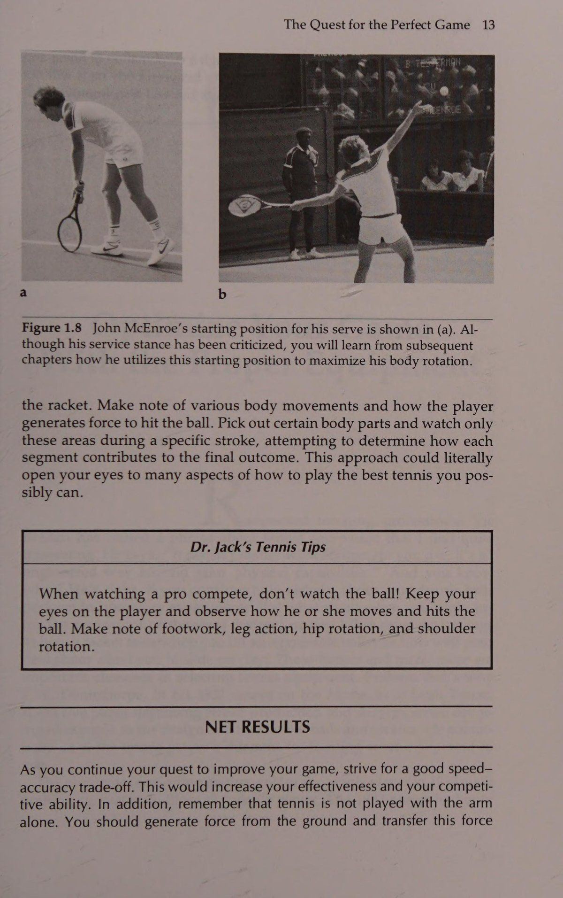
Tuy nhiên, đây chỉ là vị trí bắt đầu. Khi McEnroe bắt đầu chuyển động về phía trước, bàn chân sau của anh ấy sẽ vung về phía trước đến vị trí tiếp giáp với bàn chân trước. Điều này giúp tạo ra rất nhiều chuyển động xoay hông. Nhiều tay vợt, đặc biệt là các đàn em thích bắt chước các cú đánh của McEnroe, gặp khó khăn khi sử dụng phương pháp này; một tay vợt như vậy thường giữ chân sau ở vị trí ngăn không cho hông xoay hiệu quả. Nếu hông bị cản trở việc xoay, quả giao bóng sẽ kém. Tuy nhiên, nếu đặt bàn chân sau sao cho hông có thể xoay hoặc nếu bàn chân vung về phía trước, như McEnroe, thì hông có thể được sử dụng một cách hiệu quả.
However, this is only a starting position. When McEnroe begins his forward motion, his back foot swings forward to a position adjacent to the front foot. This helps to generate a great deal of hip rotation. Many players, especially juniors who like to imitate McEnroe’s strokes, have a problem using this method; such a player usually keeps the hind foot in a position where it blocks the hips from rotating effectively. If the hips are prevented from rotating, the serve will be poor. However, if the back foot is positioned so the hips are allowed to rotate or if the foot is swung forward, as McEnroe’s is, then the hips can be used effectively. The Pinpoint Stance
Thế đứng xác định Thường thì một tay vợt có kỹ năng sẽ trượt chân sau về phía trước trong khi giao bóng để bàn chân tạo thành một đế hỗ trợ nhỏ kiểu đầu đinh. Vấn đề lớn nhất đối với những người sử dụng kỹ thuật này là duy trì sự ổn định của cơ thể. Một Cú giao bóng và Cú đánh trên cao của những người thực hiện tốt hơn có thể trượt chân sau về phía trước, giữ khá ổn định và vẫn tạo ra một lực lớn từ mặt đất. Thông thường, tay vợt trượt chân sau về phía trước sẽ mất thăng bằng vì một điểm tựa rất nhỏ được tạo ra khi chân sau đặt cạnh chân trước. Với tầm quan trọng to lớn của sự cân bằng, một chuyển động giao bóng hiệu quả thường khó đạt được với tư thế này. Tư thế này có thể hiệu quả nếu độ ổn định dường như không phải là vấn đề đối với tay vợt, nhưng cũng như tư thế đứng trên bệ, tay vợt phải cố gắng xoay hông vừa đủ. Nếu bàn chân sau trượt về phía trước không đúng cách để nó ở phía sau bàn chân trước hoặc được giữ ở một vị trí cố định, thì việc xoay hông sẽ không được phép.
Often a skilled player will slide the hind foot forward during the serve so the feet form a small pinpoint-type base of support. The biggest problem for those who use this technique is maintaining body stability. One of the better performers can slide the hind foot forward, stay fairly stable, and still generate a great deal of force from the ground. Often a player who slides the hind foot forward will lose his or her balance, because a very small base of support is created when the hind foot is brought next to the front foot. With balance being of great importance, an efficient service motion is often difficult to achieve with this stance. This stance may be effective if stability doesn’t seem to be a problem for a player, but as with the platform stance, the player must strive for adequate hip rotation. If the hind foot is incorrectly slid forward so it is behind the front foot or is held in a fixed position, hip rotation will not be allowed.
Đó là lý do tại sao một tay vợt có kỹ năng sử dụng kỹ thuật này thường trượt nhẹ bàn chân sau về phía trước của bàn chân trước để hông hơi mở và có khả năng xoay tối ưu trong khi thực hiện cú đánh.
That’s why a skilled player using this technique usually slides the hind foot slightly forward of the front foot allowing the hips to be open slightly and capable of optimal rotation during the stroke.
Kiểu động tác chân nào mang lại cú giao bóng nhanh nhất?
Which Footwork Pattern Provides the Fastest Serve?
Một câu hỏi chưa được giải đáp về hai phương pháp tống đạt này là:
One unanswered question about these two methods of serving is this: Which one provides the server with the most force possible for hitting with high velocity?
Cái nào cung cấp cho người giao bóng lực mạnh nhất có thể để đánh với tốc độ cao? Đó có phải là tư thế đứng, trong đó hai bàn chân cách nhau khoảng bằng vai và cơ thể cân đối, hay đó là tư thế mũi nhọn, trong đó cả hai chân sát vào nhau cho phép lực từ cả hai chân tác dụng lên một khu vực rất nhỏ? Câu trả lời cho câu hỏi này là một câu hỏi thú vị. Tôi và các đồng nghiệp đã nghiên cứu kỹ thuật giao bóng bằng chân của một số tay vợt có kỹ năng sử dụng phim tốc độ cao và tấm ép (một thiết bị đo lực phản ứng của mặt đất). Một khía cạnh của nghiên cứu này là để xem động tác bằng chân nào, nền tảng nào (trong đó hai bàn chân tách ra) hoặc xác định (trong đó bàn chân sau trượt về phía trước gần phía trước), mang lại nhiều lực hơn cho cú giao bóng.
Is it the platform stance, in which the feet are approximately shoulder-width apart and the body well balanced, or is it the pinpoint stance, in which both feet are together allowing for the force from both legs to be applied to a very small area? The answer to this question is an interesting one. My colleagues and I studied the serving footwork techniques of several skilled players, using high-speed film and a force plate (a device that measures ground reaction force). One aspect of this study was to see which footwork action, platform (in which the feet stay apart) or pinpoint (in which the back foot slides forward near the front), provided more power on the serve.
Chúng tôi phát hiện ra rằng tư thế đứng xác định tạo ra lực phản ứng mặt đất thẳng đứng hơn, giúp vận động viên có thể bay cao hơn một chút trong không trung. Điều này có thể cung cấp thêm một chút đòn bẩy cho cú giao bóng, bởi vì vận tốc bóng ở thế đứng xác định cao hơn một chút so với tốc độ được tạo ra bởi thế đứng trên bục. Tuy nhiên, sự nghi ngờ của tôi đã được xác nhận về sự cân bằng.
We discovered that the pinpoint stance created more vertical ground reaction force, enabling the athlete to go a little higher in the air. This could provide a little more leverage for the serve, because the ball velocities for the pinpoint stance were slightly higher than those created by the platform stance. However, my suspicions were confirmed about balance.
Trọng tâm của ngay cả những tay vợt có kỹ năng này cũng di chuyển đáng kể khi họ sử dụng tư thế xác định, trong khi khả năng kiểm soát cơ thể tốt hơn nhiều khi họ sử dụng tư thế đứng. Vì vậy, quyết định là của bạn:
The centers of gravity of even these skilled players moved significantly when they used the pinpoint stance, whereas body control was much better when they used the platform stance.
Bạn cố gắng đạt được nhiều vận tốc hơn bằng cách sử dụng thế đứng chính xác, nhận ra rằng bạn phải luyện tập nó rất nhiều để phát triển sự cân bằng cơ thể khỏe mạnh, hay bạn hy sinh một chút vận tốc và đi theo tư thế đứng, điều này đảm bảo khả năng kiểm soát cơ thể tốt hơn? Hãy nhìn nó theo cách này: Boris Becker sử dụng tư thế đứng và anh ấy đánh một cú giao bóng khá tốt!
Thus, the decision is yours: Do you try to get more velocity by using the pinpoint stance, realizing that you must practice it a lot to develop sound body balance, or do you sacrifice a little velocity and go with the platform stance, which ensures more body control? Look at it this way: Boris Becker uses a platform stance and he hits a pretty good serve!
Bạn nên tiếp đất bằng chân nào?
Which Foot Should You Land On?
Cho dù bạn sử dụng phương pháp giao bóng nào, vẫn có vấn đề là chân nào thực hiện chuyển động sớm nhất để di chuyển vào sân 156 High Tech Tennis trước. Một số đấu thủ để chân sau của họ di chuyển xung quanh trong khi thực hiện động tác giao bóng và dẫn đường vào sân, như minh họa trong Hình 8.7, trong khi những người khác để chân sau của họ tụt lại phía sau và dẫn đường vào sân bằng chân trước (Hình 8.8).
No matter which method of service footwork you use, there is the problem of which foot comes through the motion the earliest to move into the court first. Some players allow their back feet to come around during the service motion and lead the way into the court, as demonstrated in Figure 8.7, whereas others let their back feet lag behind and lead the way into the court with the front foot (Figure 8.8). Radyies
Radyies Cc Hình 8.7 Hãy quan sát sự khác biệt khi tay vợt sử dụng bước chuyển tiếp và chuyển động giao bóng nửa vung. Lưu ý rằng anh ta đưa vợt gần như thẳng về phía sau từ vị trí ban đầu (a) đến vị trí gần như hướng mặt về phía hàng rào phía sau (b). Ngoài ra, hãy quan sát rằng bàn chân sau của anh ta là bàn chân đầu tiên tiếp xúc với sân sau cú va chạm.
Figure 8.7 Observe the difference when the player uses the crossover step and a half-swing serving motion. Notice that he brings the racket almost straight back from his starting position (a) to a position where it almost faces the back fence (b). In addition, observe that his hind foot is the first foot contacting the court following impact.
Cú giao bóng và cú đánh trên cao e Hình 8.8 Tay vợt quần vợt này thể hiện một bước không giao bóng và chuyển động giao bóng kiểu cối xay gió. Hãy chú ý cách anh ta đưa vợt xuống sao cho nó hướng xuống mặt đất (b), và cũng lưu ý rằng bàn chân trước của anh ta là bàn chân đầu tiên tiếp xúc với sân (e).
Figure 8.8 This tennis player demonstrates a noncrossover step and a windmill-type serving motion. Notice how he brings the racket downward so it is pointing toward the ground (b), and also be aware that his front foot is the first foot contacting the court (e).
Các nhà chức trách quần vợt từng nghĩ rằng những cú giao bóng khó nhất sẽ bị thực hiện bởi những người sử dụng bước chéo vào sân bằng chân sau trước. Cơ sở lý luận đằng sau lý thuyết này là việc bàn chân sau được đưa qua nhanh chóng sẽ tạo điều kiện thuận lợi cho việc sử dụng hông và thân vì chân đó giúp toàn bộ cơ thể xoay. Lý do này có vẻ hợp lý cho đến khi bạn nhìn vào một số cú giao bóng tốt hơn trong trận đấu ngày nay. Ví dụ, Lendl và McEnroe không sử dụng động tác chéo mà tiến vào sân bằng chân trước trước.
Tennis authorities used to think that the hardest serves would be hit by those using the crossover step and coming into the court with the back foot first. The rationale behind this theory is that the back foot being brought through so quickly facilitates usage of the hips and trunk, because that leg helps the entire body rotate. This reasoning seems valid until you look at some of the better serves in the game today. Lendl and McEnroe, for example, do not use a crossover movement but head into the court with their front feet first.
Khía cạnh thứ hai trong nghiên cứu động tác chân giao bóng của chúng tôi xem xét tác động của bước chéo (trong đó chân sau vào sân trước) và bước không bắt chéo (trong đó chân trước của 158 High Tech Tennis vào sân trước). Chúng tôi nhận thấy rằng bước chéo cho phép truyền lực mượt mà và hiệu quả hơn thông qua hệ thống liên kết của cơ thể, trong khi bước không chéo cho phép tay vợt có được nhiều động lượng thẳng đứng hơn nhưng khiến hành động thông qua hệ thống liên kết rất đột ngột. Vận tốc bóng từ hai hành động này—động lượng quay cao đối với chuyển động chéo và xung lượng thẳng đứng cao đối với chuyển động không giao cắt—là gần như nhau, do đó không có lợi ích thực sự nào được thu được so với kết quả cuối cùng.
A second aspect of our serving footwork study looked at the effects of the crossover step (in which the back foot comes into the court first) and the noncrossover step (in which the front foot comes into the court first). We found that the crossover step allowed a smoother and more efficient transfer of force through the body’s linked system, whereas the noncrossover step enabled the player to get more vertical momentum but caused the action through the linked system to be very abrupt. The ball velocities from these two actions—high rotational momentum for the crossover and high vertical momentum for the noncrossover—were about the same, so no true benefit was derived relative to the final outcome.
Vào lưới nhanh nhất có thể Câu hỏi bây giờ trở thành thế này: Nếu hai chuyển động động tác bằng chân mang lại kết quả tương tự nhau, điều đó cho phép người dùng vào lưới nhanh hơn khi chơi trò chơi giao bóng và vô lê? Phần thứ ba và cũng là phần cuối cùng trong nghiên cứu động tác giao bóng bằng chân của chúng tôi xem xét khía cạnh này của cú giao bóng. Chúng tôi thấy rằng kỹ thuật chéo. cho phép người giao bóng truy cập chỉ nhanh hơn một chút, nhưng tôi nên lưu ý rằng vấn đề có thể là do đối tượng của chúng tôi hoạt động kém hiệu quả. Tuy nhiên, đây là những gì chúng tôi đã thấy. Bàn chân sau trong kỹ thuật không bắt chéo thường vung sang một bên (hơi giống như McEnroe làm trong Hình 8.3) khiến cho các tay vợt của chúng tôi trong nghiên cứu của chúng tôi có một bước chuyển đổi khó xử thành sải bước. Kỹ thuật bắt chéo (Hình 8.7) cho phép chuyển sang bước chạy hiệu quả hơn nhiều. Tuy nhiên, tôi muốn thấy nhiều nghiên cứu hơn trong lĩnh vực này.
Getting to the Net as Fast as Possible The question now becomes this: If the two footwork motions do yield similar results, which allows its user to get into the net faster when playing a serve-and-volley game? The third and final part of our serving footwork research looked at this aspect of the serve. We found that the crossover technique. allowed the server to get in only slightly quicker, but I should note that the problem could be one of inefficiency on the part of our subjects. Here’s what we saw, however. The back foot in the noncrossover technique usually swung way out to the side (somewhat like McEnroe’s does in Figure 8.3) making an awkward transition into a running stride for our players in the study. The crossover technique (Figure 8.7) allowed a much more efficient transition into the running stride. I would like to see more research in this area, however. The Debate Over Arm Motion
Cuộc tranh luận về chuyển động của cánh tay Điểm gây tranh cãi cuối cùng sẽ được thảo luận là chuyển động vung vợt trong cú giao bóng. Mặc dù chỉ tồn tại một số phương pháp cơ bản cho phép tay vợt đánh một cú giao bóng tốt, nhưng bạn sẽ không bao giờ đoán được điều này là đúng khi quan sát nhiều tay vợt khác nhau tại câu lạc bộ của bạn hoặc sân quần vợt ở công viên. Dường như có một căn bệnh khiến tay vợt phát triển những đặc điểm riêng khi họ học được hành động cơ bản của việc giao bóng. Điều thú vị là, căn bệnh phát triển những đặc điểm riêng này cũng được thấy ở những người chuyên nghiệp.
The final controversial point to be discussed is the swinging motion in the serve. Although only a few basic methods exist that allow the player to hit a good serve, you would never guess this to be true while watching various players at your club or public park tennis courts. There almost seems to be a disease that causes players to develop idiosyncrasies once they learn the fundamental action of serving. Interestingly enough, this disease of developing unique idiosyncrasies is also seen in the pros. Roscoe Tanner had a quick rotary action that required incredibly accurate timing.
Roscoe Tanner đã có một pha hành động quay nhanh đòi hỏi phải căn thời gian cực kỳ chính xác. Connors tạo thành một cú móc bằng cổ tay của anh ấy khi thực hiện động tác backswing giúp cho cú giao bóng của anh ấy có lợi cho việc tạo ra độ xoáy cao. Danh sách có thể kéo dài vô tận; tuy nhiên, chúng ta sẽ thảo luận về hai phương pháp cơ bản thường thấy.
Connors forms a hook with his wrist on the backswing that makes his serve conducive to high amounts of spin production. The list could go on indefinitely; however, we will discuss two basic methods commonly seen. The Windmill Backswing The most popular method of arm action in serving involves a full windmill-type swing (Figure 8.8).
Cú đánh lùi của cối xay gió Phương pháp hoạt động phổ biến nhất của cánh tay khi giao bóng bao gồm một cú vung hoàn toàn kiểu cối xay gió (Hình 8.8). Khi tay vợt vào tư thế bắt đầu, vợt được hạ xuống sao cho gần như hướng xuống đất. Sau đó, vợt thường được đưa lên với một cánh tay mở rộng đến vị trí Giao bóng và Trên cao ngang vai. Từ đây, khuỷu tay uốn cong và vai bắt đầu xoay ra ngoài, cho phép đặt vợt ở phía sau lưng (một số người gọi đây là tư thế gãi lưng, nhưng nó thực sự không bao giờ đạt đến tư thế gãi lưng thực sự). Tại thời điểm này, hệ thống liên kết của cơ thể đã tạo ra lực từ mặt đất và truyền nó đến hông và thân. Vai tiếp tục xoay ra ngoài khi thân cây quay về phía trước, vào thời điểm gần đúng khi thân cây đạt vận tốc góc tối đa, vai tăng tốc độ quay bên trong của nó để vung vợt về phía bóng chạm vào. Khi đầu vợt được tăng tốc hơn nữa, khuỷu tay duỗi ra, cẳng tay nghiêng (xoay ra ngoài) và cổ tay uốn cong để cung cấp cho vợt tốc độ va chạm tối ưu và định vị vợt chính xác để tiếp xúc bóng hiệu quả.
As the player takes a starting stance, the racket is lowered so that it is almost pointing toward the ground. Then the racket usually is brought up with an extended arm to a position of about shoulder height. From here the elbow flexes and the shoulder begins to rotate externally, allowing the racket to be positioned behind the back (some call this a backscratch position, but it really never reaches a true backscratch). At this point, the linked system of the body has generated its force from the ground and is transferring it to the hips and trunk. The shoulder continues to rotate externally as the trunk rotates forward, and at the approximate time when the trunk attains its maximum angular velocity, the shoulder accelerates its internal rotation to swing the racket toward the ball impact. As the racket head is further accelerated, the elbow extends, the forearm pronates (turns outward), and the wrist flexes to provide the racket with optimal impact velocity and to position it correctly for an effective ball contact. The Half-Swing Service Motion
Chuyển động giao bóng nửa xoay Phương pháp thứ hai của hành động cánh tay khá giống nhau, ngoại trừ việc thay vì xoay hoàn toàn kiểu cối xay gió, kỹ thuật này sử dụng chuyển động nửa xoay (Hình 8.7). Vợt, khi bắt đầu cú vung, không được hạ thấp xuống để hướng xuống mặt đất. Thay vì thả đầu vợt xuống vị trí đó, cánh tay vung chỉ xoay sang một bên và ngay lập tức đi đến vị trí mà vợt được giữ bằng một cánh tay mở rộng ở độ cao xấp xỉ vai. Từ thời điểm này, các yếu tố như chuyển động, tạo lực và truyền lực đó sang vợt cũng giống như với kỹ thuật cối xay gió.
The second method of arm action is quite similar, except that instead of a full windmill-type swing the technique uses a half-swing motion (Figure 8.7). The racket, at the initiation of the swing, is not lowered so that it points toward the ground. Instead of dropping the racket head to that position, the swinging arm merely rotates out to the side and goes immediately to the position where the racket is held with an extended arm at approximately shoulder height. From this point, elements such as movements, the generation of force, and the transfer of that force to the racket are the same as with the windmill technique.
Lời khuyên khi chơi tennis của Tiến sĩ Jack Cho dù bạn lấy vợt về thế nào, hãy cố gắng giữ lòng bàn tay hướng xuống khi bạn đưa vợt lên về phía vị trí gãi lưng.
Dr. Jack’s Tennis Tips No matter how you take the racket back, try to keep your palm down as you bring the racket up toward the backscratch position.
Điều này giúp giữ cho cơ cánh tay và vai được thư giãn nhưng vẫn chuẩn bị cho chúng cho cú giao bóng bùng nổ.
This helps to keep the arm and shoulder muscles relaxed, yet still prepares them for the serve explosion.
Sự khác biệt giữa hai cú vung vợt ra sau Một số nhà nghiên cứu lập luận rằng có sự khác biệt tồn tại giữa hai phương pháp giao bóng liên quan đến lượng động lượng được tạo ra trong mỗi cú vung vợt. Nhiều nhà chức trách cho rằng phương pháp nửa vung không cho phép tay vợt sử dụng toàn bộ cơ thể của mình để thực hiện cú giao bóng một cách hiệu quả nhất. Những người khác nói rằng sự khác biệt chính giữa hai kiểu giao bóng là nhịp điệu. Họ cảm thấy rằng kỹ thuật vung nửa người không cho phép tay vợt đạt được nhịp điệu nhất định để tính thời gian nối tiếp các sự kiện trong hệ thống chuỗi liên kết của cơ thể một cách hợp lý.
Differences Between the Two Backswings Some authorities argue that a difference does exist between the two serving methods with regard to the amount of momentum produced during each swing. Many authorities state that the half-swing method doesn’t permit the player to use his or her entire body to hit the serve in the most efficient manner. Others say that the main difference between the two serving types is rhythm. They feel that the half-swing technique doesn’t allow the player to achieve a definite rhythm for timing the succession of events in the body’s linked chain system properly.
160 Lời khuyên về Quần vợt Công nghệ cao của Tiến sĩ Jack Chìa khóa để giao bóng là nhịp điệu. Bất kể bạn sử dụng động tác backswing nào, hãy chắc chắn rằng bạn có thể thoải mái tạo ra cảm giác nhịp nhàng.
Dr. Jack’s Tennis Tips The key to serving is rhythm. Regardless of the backswing you use, be sure you can comfortably generate a sense of rhythm.
Thật khó để nói liệu có sự khác biệt nào trong việc tạo ra động lượng giữa hai kiểu đánh hay không. Theo nghĩa thuần tuý sinh học thì không nên có. Tuy nhiên, có thể có sự khác biệt nhất định về nhịp điệu giữa hai cú đánh. Ví dụ, bạn có nhớ khi mới bắt đầu học giao bóng không? Giáo viên của bạn có thể đã nói với bạn rằng nếu bạn ném bóng kém thì bạn không cần phải vung vợt (đó chắc chắn là cách xử lý việc ném bóng không đúng cách). Tuy nhiên, nếu bạn tiếp tục vung vợt, bạn có thể sử dụng động tác vung vợt ra sau để điều chỉnh vận tốc của toàn bộ chuyển động. Nếu bạn ném bóng quá cao hoặc nếu điều kiện gió cản trở một cú vung vợt bình thường, bạn có thể làm chậm lại một chút và điều chỉnh cú đánh ngược của mình để tạo ra động lượng một cách hiệu quả. Việc vung vợt ra sau trong cả hai phương pháp giao bóng đều có thể được điều chỉnh, nhưng rõ ràng là phương pháp vung vợt hoàn toàn cho phép có nhiều thời gian hơn để điều chỉnh cú đánh. Tuy nhiên, bất chấp điều đó, có vẻ như hai chuyển động giao bóng có thể được sử dụng một cách hiệu quả và việc lựa chọn chúng tùy thuộc vào sở thích cá nhân.
It’s difficult to say whether any difference in the generation of momentum is present between the two stroke patterns. From a purely biomechanical sense there should not be. However, there may be a definite variation of rhythm between the two strokes. For example, do you remember when you took serving lessons as a beginner? Your teacher probably told you that if you tossed the ball poorly you didn’t have to swing at the ball (which is definitely how an improper toss should be handled). However, if you did go ahead and swing the racket, you could use the backswing to regulate the velocity of the entire movement. If you tossed the ball too high or if wind conditions prevented a normal swing, you could slightly slow and regulate your backswing to generate momentum effectively. The backswing in both serving methods can be regulated, but obviously the full-swing method allows more leeway for stroke accommodation. Regardless of that, however, it seems that the two service motions can be utilized effectively and their selection depends on personal preference. Dr. Jack’s Tennis Tips
Lời khuyên về tennis của Tiến sĩ Jack Bất kể bạn sử dụng phương pháp vung vợt nào, hãy nhớ rằng việc vung vợt sau đều có mục đích—để chuẩn bị hoặc cuộn cơ thể bạn cho sự bùng nổ của cú giao bóng. Vì vậy, động tác backswing phải là một chuyển động thoải mái được thực hiện với ít nỗ lực cơ bắp nhưng cũng phải có chủ ý.
Regardless of which backswing method you use, remember there is a purpose to the backswing—to prepare or coil your body for the explosion of serving. Thus, the backswing should be a relaxed motion performed with little muscular effort, but it should also be deliberate.
Tại sao một số tay vợt giao bóng và đánh đầu tốt hơn những người khác?
Why Do Some Players Serve and Hit Overheads Better Than Others?
Như tôi đã nói trước đó, việc giao bóng và đánh một cú ném qua đầu đều giống như một cú ném quá tay trong bóng chày (Hình 8.9). Trên thực tế, nhiều nhà khoa học thể thao đã chỉ ra rằng hành động ném hiệu quả là tuyệt đối cần thiết trong một cú giao bóng vô địch hoặc cú ném cao, đó có thể là lý do tại sao một số tay vợt có cú giao bóng tốt hơn những người khác. Máy chủ tốt chỉ cần sử dụng chuyển động ném hiệu quả hơn, điều này khiến tay vợt sử dụng hệ thống được liên kết một cách hiệu quả nhất. Vì vậy, hãy cùng xem một số vận động viên mắc lỗi ở đâu trong động tác ném của họ.
As I said earlier, serving and hitting an overhead are both similar to an overhand throw in baseball (Figure 8.9). In fact, many sport scientists have shown that an effective throwing action is an absolute necessity in a championship serve or overhead, which is probably why some players have better serves than others. Good servers simply use a more efficient throwing motion, which causes the players to utilize the linked system most effectively. Therefore, let’s see where some athletes go wrong in their throwing action.
Giao bóng và đánh đầu Hình 8.9 So sánh hành động của các vận động viên này khi họ thực hiện một cú giao bóng (a), đánh một cú đập từ trên cao (b) và ném bằng chuyển động quá tay (c). Những hành động tương tự của cơ thể xảy ra trong mỗi động tác.
Figure 8.9 Compare the actions of these athletes as they hit a serve (a), hit an overhead smash (b), and throw with an overhand motion (c). Similar body actions occur for each maneuver.
Như bạn đã biết, nguồn lực chính cho cú giao bóng và cú đánh đầu là mặt đất. Lực tạo ra được truyền qua chân đến hông, tới thân và chi trên. Nếu có vấn đề trong việc truyền lực giữa bất kỳ bộ phận quan trọng nào của cơ thể thì cú giao bóng sẽ không hiệu quả. Bộ phận cơ thể góp phần gây ra hầu hết các khó khăn khi giao bóng là hông. Nhiều người biểu diễn không sử dụng hông tốt khi giao bóng hoặc đánh đầu.
As you are aware, the primary source of power on a serve and overhead is the ground. The generated force is transferred through the legs to the hips and on to the trunk and upper limb. If a problem exists in the force transmission between any of these key body parts, the serve won’t be effective. The one body segment that contributes to most service difficulties is the hips. Many performers don’t employ the hips very well on the serve or overhead.
Đáng ngạc nhiên là nhiều đối thủ khi mô tả hình thức giao bóng của mình lại cảm thấy cơ thể của họ trở thành những đòn bẩy dài duỗi ra trên đường biên khi va chạm. Không có gì lạ khi nghe họ nói điều gì đó như thế này: "Tôi trông giống như Boris Becker khi tôi đánh bóng". Họ thực sự cảm thấy chuyển động giao bóng của họ giống với Becker trong khi thực tế thì không. Thay vì sử dụng chuyển động ném thích hợp bao gồm xoay hông và thân, tay vợt như vậy có xu hướng uốn cong hông và buộc thân về phía trước (giống như Jimmy Connors trong Hình 8.10) để đánh một quả giao bóng mạnh. Điều thú vị là, hành động giao bóng này giống như một trong những giai đoạn phát triển của một người trưởng thành Kiểu ném. Việc phân tích các giai đoạn phát triển cú ném quá tay có thể giúp ích cho bạn nếu cú giao bóng của bạn không hiệu quả như bạn mong muốn.
Surprisingly, many competitors, when describing their own service forms, feel that their bodies become long levers stretched out over the baseline at impact. It’s not unusual to hear them say something like this: “I look just like Boris Becker when I hit the ball. They really do feel their service motions resemble Becker’s when in fact they don’t. Instead of using a proper throwing motion that involves hip and trunk rotation, such a player tends to flex the hips and force the trunk forward (much like Jimmy Connors in Figure 8.10) to hit a hard serve. Interestingly enough, this action of serving resembles one of the developmental stages of a mature throwing pattern. An analysis of the stages of developing an overhand throw may help you if your serve isn’t as effective as you like.
Phát triển hành động ném âm thanh Khi một cá nhân (đặc biệt là trẻ em) lần đầu tiên học ném, người đó chỉ sử dụng chuyển động của cánh tay để đẩy bóng. Sớm hay muộn nhận ra rằng chỉ riêng chuyển động này sẽ không đẩy quả bóng đi xa, và cũng bằng cách làm mẫu những người ném giỏi hơn, cá nhân sẽ áp dụng kiểu ném bao gồm việc gập người về phía trước một cách mạnh mẽ. Ở đâu đó trong 162 High Tech Tennis này Hình 8.10 Hãy chú ý cách chuyển động giao bóng của Jimmy Connors, được mô tả ở (b), giống với chuyển động của bất kỳ tay vợt nào khác (a) ngoại trừ việc chân sau của anh ta bị ngăn không cho quay về phía sân và thân của anh ta bị uốn cong mạnh về phía trước ở hông. quá trình người ném mới bắt đầu bước về phía trước bằng chân đối diện khi quá trình truyền động lượng tuyến tính (Linear Momentum) được phát triển. Cuối cùng, người ném có được các kỹ năng thích hợp cần thiết để cuộn các đoạn cơ thể, bước về phía trước và duỗi các bộ phận cơ thể khi họ học cách kết hợp động lượng tuyến tính (Linear Momentum) và động lượng góc (Angular Momentum) một cách hiệu quả.
Developing a Sound Throwing Action When an individual (particularly a child) first learns to throw, he or she utilizes only arm movement to propel the ball. Realizing sooner or later that this motion alone won’t propel the ball very far, and also by modeling better throwers, the individual will adopt a throwing pattern that involves a forceful forward flexion of the trunk. Somewhere during this Figure 8.10 Notice how Jimmy Connors’s service motion, depicted in (b), resembles that of any other player (a) except that his hind leg is prevented from rotating toward the court and his trunk is flexed forward forcefully at the hips. process the novice thrower begins to step forward with the opposite foot as the transfer of linear momentum is developed. Finally the thrower acquires the proper skills necessary to coil the body segments, step forward, and uncoil the body parts as he or she learns to combine linear and angular momentum effectively.
Các giai đoạn tương tự của chuyển động cơ thể có thể được nhìn thấy trong cú giao bóng và cú đánh trên cao, nổi bật nhất là giai đoạn thân người bị uốn cong mạnh về phía trước. Một tay vợt quần vợt mắc lỗi này có thể dễ dàng uốn cong và duỗi đầu gối, nhưng khi lực gần truyền đến hông thì tay vợt không thể phối hợp hành động. Thay vì xoay hông vừa đủ, tay vợt chặn hông (ngăn chúng xoay) bằng cách giữ chân sau cố định với mặt đất hoặc trên không phía sau cơ thể. Jimmy Connors là một tay vợt luôn thể hiện theo cách này. Cách duy nhất Connors có thể thực hiện cú giao bóng đầu tiên mạnh là uốn mạnh thân mình về phía trước. Những tay vợt sử dụng kỹ thuật như Connors thường sử dụng có thể đánh một cú giao bóng khá khó, nhưng nó vẫn không tốt bằng nếu hệ thống liên kết được phối hợp hợp lý. Để xem điều này có áp dụng cho bạn hay không, hãy quay video cú giao bóng và cú giao bóng của bạn rồi xem phát lại ở chế độ chuyển động chậm. Nếu hông của bạn nhô ra phía sau về phía hàng rào và cơ thể của bạn Giao bóng và Phía trên bị uốn cong quá nhiều (uốn cong một chút cũng không sao), bạn có thể muốn thực hiện động tác ném quá tay của mình và áp dụng chuyển động cho các cú đánh của mình.
Similar stages of body movement can be seen in the serve and overhead, the most predominant being the stage in which the trunk is forcefully flexed forward. A tennis player guilty of this can easily flex and extend the knees, but when the force nears its transfer to the hips the player can’t coordinate the action. Instead of adequately rotating the hips, the player blocks the hips (prevents them from rotating) by keeping the hind leg fixed to the ground or in the air behind the body. Jimmy Connors is one player who has always performed this way. The only way Connors can hit a hard first serve is to forcefully flex his trunk forward. Players who use a technique such as Connors uses often can hit a fairly hard serve, but it’s still not as good as it could be if the linked system were properly coordinated. To see if this applies to you, have your serve and overhead videotaped and watch the replay in slow motion. If your hips stick out backward toward the fence and your body is bent a great deal (a slight bend is all right), you may want to work on your overhand throwing action and apply the motion to your strokes. The Service Hitch
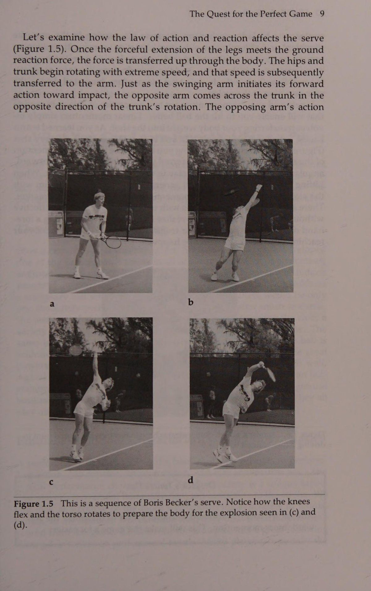
Cú giao bóng Một số người có thể sử dụng chính xác tất cả các phân đoạn cơ thể của mình nhưng có thời gian kém đến mức họ bị chậm trễ hoặc gặp trở ngại trong chuyển động giao bóng của mình. Cú va chạm này có thể xảy ra ở bất kỳ điểm nào trong quá trình giao bóng nhưng xảy ra thường xuyên nhất khi vợt đến gần vị trí cào lùi (Hình 8.11). Một số điều có thể gây ra sự cản trở trong chuyển động giao bóng, nhưng phổ biến nhất là thời điểm không đúng giữa hành động tung bóng và vung vợt.
Some people can employ all their body segments correctly but have such poor timing that they have a delay, or hitch, in their service motion. This hitch can occur at any point in the serve but occurs most often when the racket gets near the backscratch position (Figure 8.11). Several things may cause a hitch in a service motion, but the most common is poor timing between the tossing action of the ball and the swing of the racket.
Thường thì tay vợt sử dụng động tác tung bóng rất cao và chuyển động vung vợt về phía sau nhanh, để đến khi vợt sẵn sàng cho cú vung về phía trước, bóng vẫn chưa ở gần vị trí va chạm. Vì vậy, sự chậm trễ trong hành động lắc lư phải xảy ra. Sự chậm trễ này có ý nghĩa quan trọng hơn là chỉ làm chậm lại toàn bộ chuyển động.
Often a player uses a very high toss and a quick backswing motion, so that by the time the racket is ready for the forward swing, the ball still isn’t near the position of impact. Therefore, a delay in the swinging action must occur. This delay has more significance than merely slowing down the entire movement.
Hình 8.11 Đây là vị trí xảy ra phần lớn các trục trặc dịch vụ.
Figure 8.11 This is the position where the majority of service hitches occur.
Hãy nhớ tại sao động tác backswing được sử dụng? Đầu tiên, nó định hình cơ thể bằng cách cuộn hông và thân về phía sau để chuẩn bị cho cú xoay người về phía trước. Thứ hai, nó giúp tay vợt thiết lập nhịp điệu để lấy đà vào cú đánh và chuẩn bị khớp vai và khuỷu tay để vợt tăng tốc lên và về phía trước. Vì những lý do này, một cú giao bóng bị cản trở sẽ làm giảm nghiêm trọng hiệu quả của một động tác giao bóng. Trên thực tế, chuyển động kém hiệu quả đến mức tay vợt sử dụng chuyển động này cũng có thể bắt đầu chuyển động giao bóng tại vị trí của cú giao bóng hơn là thực hiện các chuyển động chuẩn bị khác. Những động tác ban đầu trong cú backswing trở nên vô ích vì cách mà dây móc làm giảm sự tạo ra động lượng. Tuy nhiên, khi bạn bắt đầu một chuyển động giao bóng từ vị trí cào lùi thì rất khó có khả năng tốc độ giao bóng sẽ lớn như vậy.
Remember why the backswing is used? First, it sets the body by coiling the hips and trunk backward in preparation for the forward swing. Second, it helps a player to establish a rhythm for gaining momentum into the stroke and readying the shoulder and elbow joints for the upward and forward acceleration of the racket. For these reasons a hitch in the serve severely reduces the effectiveness of a service motion. In fact, the inefficiency of movement is so great that the player using this motion may as well begin the service motion at the location of the hitch rather than go through the other preparatory movements. The preliminary actions in the backswing become useless because of the way the hitch cuts down the generation of momentum. However, when you start a service motion from a backscratch position it is highly improbable that the service velocity will be as great. Jumping Into the Serve
Nhảy vào giao bóng Khi những tay vợt quần vợt có kỹ năng cố gắng thực hiện những cú giao bóng tốc độ cao, họ thường chạm đất trong quá trình chuyển động. Một số nhà chức trách nói rằng một người giao bóng tốt thực sự sẽ nhảy vào giao bóng (Hình 8.12). Trên thực tế, một số chuyên gia giảng dạy đã phân tích các đoạn phim chuyển động chậm mô tả chi tiết chuyển động giao bóng của các tay vợt có kỹ năng cao tại các cuộc thi giao bóng vô địch thế giới. Các nhà nghiên cứu này báo cáo rằng những tay vợt thực hiện cú giao bóng nhanh nhất đều nhảy ra khỏi sân. Thông thường, nhảy càng cao thì giao bóng càng nhanh. Tuy nhiên, người ta cực kỳ nghi ngờ liệu các đấu thủ có thực sự nhảy vào giao bóng hay không, đặc biệt là để đạt được bất kỳ độ cao cụ thể nào mà tại đó có thể đạt được vận tốc vợt tối đa. Để cố gắng thực hiện một cú nhảy lên cao có mục đích và mạnh mẽ khi giao bóng sẽ đòi hỏi một mức độ phối hợp đặc biệt và hạn chế nỗ lực của tay vợt quần vợt để thực hiện một cú giao bóng hiệu quả. Do đó, chúng ta không nên xem xét hành động nhảy được thấy trong các lần giao bóng của nhiều Hình 8.12 Lưu ý cách tay vợt đứng khỏi mặt đất trong chuyển động giao bóng của anh ta (b). Hãy lưu ý rằng đây không phải là một bước nhảy mạnh mẽ; anh ta thực sự đang kéo cơ thể của mình lên khỏi mặt đất do hành động đẩy và ném.
As skilled tennis players attempt to hit high-velocity serves, they often come off the ground during the motion. Some authorities say that a good server actually jumps into the serve (Figure 8.12). In fact, some teaching pros have analyzed slow-motion films detailing the service motions of highly skilled players at world championship serving contests. These researchers report that players who hit the fastest serves all jumped off the court. Frequently, the higher the jump, the faster the serve. However, it is extremely doubtful that the players actually jumped into the serves, especially to reach any particular height at which a peak racket velocity might be met. To attempt a purposeful and forceful upward jump when serving would require a unique amount of coordination and inhibit the tennis player’s attempt to hit an effective serve. Therefore, we should not consider the leaping action seen during the serves of many Figure 8.12 Notice how the player is off the ground during his service motion (b). Be aware that this is not a forceful jump; he is actually pulling his body off the ground due to the thrusting and throwing action.
Các đối thủ đẳng cấp thế giới về Giao bóng và Vượt qua là điều cần thiết để đánh một cú giao bóng tốt. Bạn thấy đấy, những tay vợt này tạo ra nhiều động lượng (cả tuyến tính và góc cạnh) đến mức hành động nhảy là kết quả của tất cả lực được tạo ra để thực hiện một cú giao bóng mạnh. Nếu bất kỳ tay vợt nào trong số đó cố tình nhảy vào giao bóng của họ, kết quả có thể sẽ kém.
world-class competitors as a necessity for hitting a good serve. These players, you see, generate so much momentum (both linear and angular) that the jumping action is the result of all the force created to hit a hard serve. If any of those players consciously jumped into their serves, the results would likely be poor. Use of the Opposite Arm
Sử dụng Cánh tay đối diện Cho dù lực được lấy từ mặt đất và truyền qua cơ thể bao nhiêu đi chăng nữa, một thao tác rất quan trọng sẽ diễn ra để truyền lực đẩy cuối cùng nhằm tăng tốc cho chi trên. Khi xem trận đấu chuyên nghiệp tiếp theo trên truyền hình, hãy xem hành động của cánh tay đối diện của tay vợt trong quá trình giao bóng hoặc đánh đầu.
No matter how much force is acquired from the ground and transferred through the body, one very important maneuver takes place to transmit a final thrust of force to accelerate the upper limb. When watching the next pro match on television, watch a player’s opposite arm action during the serve or overhead.
Cánh tay không vung không bao giờ di chuyển hoàn toàn sang một bên trong quá trình chuyển động, nhưng khuỷu tay di chuyển sang một bên và cẳng tay đột ngột gập về phía trước và nhanh chóng đặt chính nó ngang qua thành ngực dưới (Hình 8.13). Chuyển động này mâu thuẫn với một số kỹ thuật giảng dạy vì nó diễn ra quá nhanh nên ít người nhìn thấy được. Một số chuyên gia giảng dạy mắc sai lầm khi dạy những gì họ nghĩ sẽ xảy ra chứ không phải những gì thực sự xảy ra. Tại sao chuyển động này diễn ra? Hãy nhớ lại cảm giác như thế nào trong phòng thay đồ ở trường trung học khi bạn lật người bằng ab Hình 8.13 Chú ý cách cánh tay đối diện đi theo thân người quanh (a) và đột ngột thu vào phía trước thân cây ngang qua thành ngực (b) trong khi thực hiện động tác giao bóng. Điều này hoạt động như một cơ chế phanh để giảm tốc độ quay của thân cây, cho phép chi trên tăng tốc. một chiếc khăn hoặc ai đó đã lật bạn. Làm thế nào mà người lật chiếc khăn lại khiến nó kêu to như vậy? Điều xảy ra là bàn tay phát triển vận tốc cao về phía trước và nhanh chóng kéo chiếc khăn theo nó. Bàn tay chậm lại và khi chiếc khăn lướt qua tay, bàn tay sẽ tăng tốc mạnh về phía sau. Thao tác này sẽ kéo một đầu khăn về phía sau trong khi đầu kia vẫn di chuyển về phía trước. Kết quả là tạo ra một tiếng tách lớn, có nghĩa là nếu chiếc khăn được nhắm đúng hướng, nó thực sự có thể gây ra một số vết đau.
The nonswinging arm never moves completely around to the side during the motion, but the elbow travels to the side and the forearm suddenly tucks in front and quickly positions itself across the lower chest wall (Figure 8.13). This motion contradicts some teaching techniques because it happens so fast that few people ever see it. Some teaching professionals make the mistake of teaching what they think happens, not what actually happens. Why does this motion take place? Recall what it was like in the high school locker room when you flipped someone with a b Figure 8.13 Notice how the opposite arm follows the trunk around (a) and suddenly tucks in front of the trunk across the chest wall (b) during the service motion. This acts as a braking mechanism to decelerate the trunk rotation, allowing the upper limb to accelerate. a towel or someone flipped you. How did the person flipping the towel make it pop so loudly? What happens is that the hand develops a high forward velocity and quickly pulls the towel along with it. The hand slows down and, as the towel passes by the hand, the hand forcefully accelerates backward. This pulls one end of the towel backward while the other end is still moving forward. The result is a loud snap, which means that if the towel is aimed correctly it can really inflict some pain.
Trên thực tế, cơ thể con người và các chuyển động của nó không được giải thích đơn giản như chuyển động của chiếc khăn. Tuy nhiên, có một số điểm tương đồng có thể áp dụng cho việc giao bóng và đánh một cú đập bóng.
Realistically, the human body and its movements are not as simply explained as the motion of the towel. However, there are some similarities that can be applied to serving and to hitting a smash.
Khi thân cây đạt vận tốc cao và vợt tiến đến vị trí mà từ đó nó sẽ được tăng tốc về phía trước, cánh tay đối diện sẽ đi qua phía trước thân cây. Cánh tay đối diện, đóng vai trò như một chiếc phanh, nhanh chóng giảm tốc độ của thân cây và khiến chi trên bật về phía trước, hơi giống như vậy. cái khăn lau. Phản ứng đàn hồi này mang lại cho vợt tốc độ cao.
As the trunk attains a high velocity and the racket approaches the position from which it will be accelerated forward, the opposite arm comes across the front of the trunk. The opposite arm, acting as a brake, quickly decelerates the trunk and causes the upper limb to snap forward, somewhat like the. towel. This elastic reaction provides the racket with a high velocity.
Bạn có nên nhảy để đánh một cú đập từ trên cao không?
Should You Jump to Hit an Overhead Smash?
Nhiều sinh viên làm việc cùng tôi cảm thấy rằng họ nên lao vào mọi nỗ lực mà họ chạm tới. Tôi không chắc lý do chính xác cho điều này, trừ khi họ cảm thấy mạnh mẽ hơn khi bay trên không. Tôi khuyên bạn đừng bao giờ nhảy trừ khi bạn bị ép buộc. Khi bạn đánh một cú từ trên cao bằng cả hai chân trên mặt đất như trong Hình 8.14, cơ thể bạn cực kỳ ổn định. Một lần Hình 8.14 Hãy chú ý cách vận động viên này duy trì sự ổn định khi anh ta đánh một cú đánh qua đầu trong khi anh ta vẫn ở trên mặt đất.:
Many of the students I work with feel that they should jump into every overhead they hit. I’m not sure of the exact reason for this, unless they feel more powerful when airborne. I advise that you never jump unless you are forced to. When you hit an overhead with both feet on the ground as shown in Figure 8.14, your body is extremely stable. Once Figure 8.14 Notice how this athlete maintains stability as he hits an overhead while he stays on the ground.:
Cú giao bóng và trên cao Bạn đang ở trên không, bạn không có quyền kiểm soát đường bay của cơ thể mình. Về bản chất, cơ thể bạn trở thành một viên đạn. Điều này có nghĩa là bạn sẽ thực hiện theo một chuyến bay được xác định trước (dù nó có thể nhỏ đến đâu), gây ra vấn đề tiềm ẩn về sự cân bằng và thời gian cho cú đánh.
you are airborne, you have no control over your body’s flight path. In essence, your body becomes a projectile. This means that you will follow a predetermined flight (however small it may be), causing a potential problem with balance and timing for the stroke.
Một câu hỏi mà tôi luôn nhận được là: Lực phản ứng mặt đất liên quan như thế nào khi tay vợt phải nhảy để đánh một cú đập từ trên cao? Lực phản ứng mặt đất chắc chắn đóng một vai trò trong việc nhảy qua đầu. Khi vận động viên nhận ra mình phải rời khỏi mặt đất để với tới và thực hiện cú đập từ trên cao một cách hiệu quả (Hình 8.15), trước tiên vận động viên phải xoay người sang một bên về phía lưới (hơi giống tư thế giao bóng ban đầu).
One question I always receive is this: How is a ground reaction force involved when a player must jump to hit an overhead smash? A ground reaction force definitely does play a role in the jump overhead. When the athlete realizes he or she must leave the ground to reach and effectively hit an overhead smash (Figure 8.15), the athlete must first turn the body sideways to the net (somewhat like the initial serving stance).
Khi bóng đến gần đấu thủ, đầu gối của chân sau uốn cong và duỗi ra một cách mạnh mẽ, đẩy vận động viên lên khỏi mặt đất. Việc duỗi chân sau sẽ tạo ra lực phản ứng mặt đất, lực này được truyền đến hông và thân ngay trước khi vận động viên rời khỏi mặt đất. Một phần lực tạo ra từ mặt đất bị mất khi vận động viên nhảy ra khỏi sân, nhưng vẫn còn đủ lực và được chuyển đến phần trên, cho phép vận tốc vợt cao.
When the ball nears the player, the knee of the back leg flexes and extends forcefully, pushing the athlete off the ground. The extension of the back leg initiates a ground reaction force that is transferred to the hips and trunk just before the athlete leaves the ground. Some of the force generated from the ground is lost when the athlete leaps off the court, but enough remains and is transferred to the upper limb, allowing for a high racket velocity.
Hình 8.15 Lưu ý trong phần trình diễn trên cao cách làm cho cơ thể của bạn trở thành một đòn bẩy dài và sử dụng khả năng xoay cơ thể tốt khi thực hiện một cú nhảy qua đầu.
Figure 8.15 Notice in the overhead demonstration how to make your body a long lever and to use good body rotation when hitting a jump overhead.
Hãy nhớ một số điều về việc nhảy qua đầu trước khi thử thực hiện. Đầu tiên, một khi bạn rời khỏi mặt đất, bạn hoàn toàn không kiểm soát được quỹ đạo mà cơ thể bạn sẽ đi theo cho đến khi chạm lại sân.
Remember several things about a jump overhead before attempting one. First, once you leave the ground you have absolutely no control over the trajectory your body will follow until it reaches the court again.
Vì vậy, sự ổn định khi thực hiện cú nhảy qua đầu là điều cần thiết. Bạn phải duy trì khả năng kiểm soát tốt các bộ phận cơ thể khác nhau có liên quan để khi ở trên không, bạn có thể vung vợt một cách hiệu quả. Thứ hai, vì việc kiểm soát phần thân trên rất quan trọng nên đừng cố thực hiện cú nhảy qua đầu với vận tốc cao. Khi làm chậm cú đánh của bạn một chút, bạn sẽ tối ưu hóa khả năng kiểm soát cú đánh của mình. Theo tôi, việc kiểm soát cú đánh quan trọng hơn nhiều so với tốc độ cú đánh khi bạn phát triển cú nhảy qua đầu của mình. Thứ ba, đừng thử nhảy qua đầu trừ khi thực sự cần thiết. Khi bàn chân của bạn duy trì tiếp xúc với bề mặt sân, bạn đang ở vị trí ổn định nhất, điều này không chỉ tạo điều kiện thuận lợi cho việc kiểm soát cú đánh mà còn cho phép bạn phát triển vận tốc lớn hơn trong cú đánh.
Therefore, stability in hitting a jump overhead is a necessity. You must maintain good control over the various body parts involved so that once you are airborne you can swing the racket efficiently. Second, because upper body control is so important, don’t try to hit a jump overhead with high velocity. In slowing down your stroke a bit you will optimize your shot control. In my opinion, shot control is much more important than stroke velocity when you develop your jump overhead. Third, don’t try a jump overhead unless it is absolutely necessary. When your feet maintain contact with the court surface you are in the most stable position, which not only facilitates shot control but allows you to develop greater velocity on the stroke. Hitting With Control
Đánh có kiểm soát Việc tạo ra tốc độ đầu vợt chỉ là một phần của việc đánh một cú giao bóng hiệu quả hoặc một cú đánh cao.
The production of racket head speed is only one part of hitting an effective serve or overhead. The second part is control.
Phần thứ hai là kiểm soát. Nhiều tay vợt cảm thấy rằng vì vợt của họ quá cao so với lưới khi tiếp xúc với bóng nên họ phải đánh xuống để giữ bóng trong cuộc. Họ không nhận ra rằng ngay cả những tay vợt quần vợt giỏi nhất cũng gặp khó khăn khi đánh xuống và giữ bóng trong cuộc. Trên thực tế, có một thực tế khá được chấp nhận là tay vợt phải có vợt ở khoảng cách gần 11 feet và đánh một cú giao bóng phẳng với tốc độ gần 100 dặm một giờ chỉ để đánh xuống 3 độ so với phương ngang. Trọng lực và lực cản của gió có tác động rất lớn đến một vật thể bay (như quả bóng tennis) một khi nó bị va chạm. Đó là lý do tại sao hầu hết tay vợt đánh xuống đều đưa cú giao bóng và cú đánh đầu của họ vào lưới. Bóng đi xuống kết hợp với tác dụng của trọng lực khiến bóng rơi vào lưới. Vì lý do này, hầu hết những người giao bóng giỏi đều đánh bóng thẳng ra ngoài hoặc hơi hướng lên trên so với mặt vợt ngay cả khi đánh những cú giao bóng có tốc độ rất cao.
Many players feel that because their rackets are so high above the net at ball contact, they must hit downward to keep the ball in play. They don’t realize that even the most skilled tennis players have difficulty hitting downward and keeping the ball in play. In fact, it is a fairly well-accepted fact that a player must have a reach of nearly 11 feet with the racket and hit a flat serve at almost 100 miles per hour just to hit downward 3 degrees from the horizontal. Gravity and wind resistance have a tremendous effect on a flying object (like a tennis ball) once it has been struck. That’s why most players who hit downward end up putting their serves and overheads into the net. The downward descent of the ball, combined with the effects of gravity, causes the ball to end up in the net. For this reason most good servers hit the ball straight out or slightly upward from the racket face even when hitting very high-velocity serves. Dr. Jack’s Tennis Tips
Lời khuyên về quần vợt của Tiến sĩ Jack ¢ Để đảm bảo khoảng trống trong lưới khi giao bóng, hãy tưởng tượng đánh ba quả bóng liên tiếp từ vợt. Quả bóng đầu tiên là quả bóng thực sự của bạn sẽ được giao, nhưng hãy giả vờ như có thêm hai quả bóng nữa để đánh.
¢ To ensure net clearance on the serve, imagine hitting three balls in a row straight out from the racket. The first ball is your actual ball to be served, but pretend there are two more balls to be hit.
Thực hiện đúng cách, bóng sẽ rời vợt ở một góc 90° và bạn có thể để trọng lực tác động lên mình. e Nếu bạn liên tục đánh dài, hãy thử ném bóng xa hơn vài inch về phía lưới. Đừng đánh xuống mà hãy tiếp tục cố gắng đánh ba quả bóng liên tiếp từ vợt.
Done properly, the ball will leave the racket at a 90° angle and you can let gravity work for you. e If you’re continually hitting long, try tossing the ball a couple of inches farther toward the net. Don’t hit down but continue trying to hit three balls in a row straight out from the racket.
Cú giao bóng và cú đánh đầu Không cần thiết phải thực hiện cú đập bóng từ trên cao mỗi khi bóng ở trên đầu bạn; đôi khi có thể yêu cầu một cú vô lê cao. Điều này đặc biệt đúng trong hai trường hợp: khi bóng không đủ cao để sử dụng cơ chế thích hợp để thực hiện cú đánh trên cao và khi bạn chưa di chuyển vào đúng vị trí dưới bóng. Vì vậy, đừng cố gắng chế ngự mọi đường bóng cao. Đôi khi bạn phải đánh vô-lê sâu và chờ cơ hội tiếp theo để thực hiện cú đập bóng.
An overhead smash isn’t necessary every time a ball is above your head; at times a high volley may be called for. This is especially true under two circumstances: when the ball simply isn’t high enough to use the proper mechanics for an overhead, and when you haven’t moved into the correct position under the ball. So don’t try to overpower every high ball. Sometimes you must volley the ball deep and wait for your next chance at a smash. The Second Serve
Cú giao bóng thứ hai Người ta nói rằng một tay vợt chỉ giỏi bằng cú giao bóng thứ hai của anh ta hoặc cô ta. Điều này rất có ý nghĩa nếu bạn cho rằng đối thủ thường mong đợi một quả bóng tốc độ cao trong lần giao bóng đầu tiên. Khi bạn đánh trượt, đối thủ của bạn sẽ có được lợi thế tâm lý lớn khi chờ đợi cú giao bóng thứ hai của bạn, điều này rõ ràng sẽ không khó bằng. Do đó, điều cần thiết đối với bất kỳ vận động viên thi đấu nào không chỉ là nỗ lực đạt được mức độ ổn định cao trong quả giao bóng đầu tiên (khoảng 70 đến 75% trong khi thi đấu) mà còn phải phát triển hiệu quả quả giao bóng thứ hai (95% trong khi thi đấu).
It has been said that a tennis player is only as good as his or her second serve. This makes a lot of sense if you consider that the opponent is usually expecting a high-velocity ball on the first serve. When you miss it, your opponent gains a big psychological advantage awaiting your second serve, which obviously won’t be as hard. Therefore, it’s necessary for any tournament player to not only work on achieving a high level of consistency in the first serve (approximately 70 to 75 percent during competition) but also to develop an effective second serve (95 percent during competition).
Vận tốc đầu vợt trong lần giao bóng thứ hai thường nhanh hơn trong lần giao bóng đầu tiên. Tuy nhiên, điểm mấu chốt để thực hiện cú giao bóng thứ hai tốt là bóng phải có độ xoáy lớn (thường là sự kết hợp giữa xoáy ngang và xoáy lên) để kiểm soát đường bay của nó. Điều này có nghĩa là vợt không chỉ phải cung cấp cho bóng một lực đẩy lớn về phía trước (mặc dù không nhiều như đối với quả giao bóng đầu tiên) mà còn phải nhanh chóng lướt qua mặt sau của quả bóng để nó xoay. Do đó, chuyển động của vợt trong lần giao bóng thứ hai không di chuyển về phía trước nhanh như lần giao bóng đầu tiên, nhưng do chuyển động theo chiều dọc nhanh hơn nhiều cần thiết để tạo ra độ xoáy nên tốc độ vợt tổng thể thường cao hơn.
The racket head velocity is often faster during the second serve than during a first serve. However, the key point in hitting a good second serve is that the ball must have a great deal of spin (usually a combination of sidespin and topspin) to control its flight. This means that the racket must not only provide the ball with a great deal of forward impetus (although not as much as for a first serve) but must also quickly brush the back side of the ball to give it rotation. Therefore, the racket movement on a second serve doesn’t move forward as quickly as a first serve, but because of the much faster vertical movement required for spin production, the overall racket velocity is often higher.
Để phát triển cú giao bóng thứ hai xuyên thấu, bạn phải cố gắng đánh bóng với tốc độ ít nhất bằng 3/4 tốc độ của cú giao bóng đầu tiên. Khi bạn thực hiện cú giao bóng thứ hai, hãy cố gắng đặt một lượng xoáy lên nhất định lên quả bóng (rất khó để đánh được xoáy lên thuần túy trong một cú giao bóng nhưng sự kết hợp giữa xoáy lên và xoáy ngang không quá khó). Cố gắng đánh bóng từ dưới lên trên giống như cách bạn thực hiện một cú đánh nền xoáy lên. Thí sinh trong Hình 8.16 minh họa cách thực hiện cú giao bóng thứ hai tốt. Bạn có thể so sánh chuyển động này với cú giao bóng đầu tiên của anh ấy. Cần lưu ý rằng trong Hình 8.16 cú ném bóng của anh ta không xa về phía sân và quả bóng cũng nằm ở vị trí cao hơn đầu anh ta khi chạm bóng so với lần giao bóng đầu tiên của anh ta. Kiểu ném bóng này tạo điều kiện thuận lợi cho việc tạo ra độ xoáy cần thiết. Khi bạn thực hiện cú giao bóng thứ hai Hình 8.16 Vận động viên này minh họa cách thực hiện cú giao bóng thứ hai hiệu quả. Mục tiêu của quả giao bóng thứ hai tốt là đánh bóng sâu vào phần sân giao bóng của đối phương và có đủ độ xoáy để tối đa hóa khả năng kiểm soát. thực hành động tác này, đảm bảo tập trung vào vận tốc bóng, khả năng tạo xoáy và độ sâu trong ô giao bóng. Một cú giao bóng thứ hai ngắn (bất kỳ cú giao bóng nào ở nửa trước ô giao bóng của đối thủ) cho phép đối thủ của bạn bước vào và đánh trả một cách mạnh mẽ.
To develop a penetrating second serve you must attempt to hit the ball with at least three-fourths of the speed of your first serve. As you hit the second serve try to place some amount of topspin on the ball (it is difficult to hit pure topspin on a serve but a combination of topspin and sidespin should not be too difficult). Try to brush the ball from bottom to top in much the same way you hit a topspin ground stroke. The competitor in Figure 8.16 demonstrates how a good second serve should be hit. You can compare this motion with his first serve. Be aware that in Figure 8.16 his ball toss is not as far in toward the court and that the ball is also located more above his head at impact than it is for his first serve. This type of ball toss facilitates the necessary spin production. When you Figure 8.16 This athlete illustrates how to hit an effective second serve. The goal of a good second serve is to hit the ball deep into the opponent’s service court and with enough spin to maximize control. practice this action, be sure to work on ball velocity, spin production, and depth into the service box. A short second serve (any serve in the front half of your opponent's service box) allows your opponent to step in and aggressively hit the return.
Lời khuyên về giao bóng và đánh đầu của Tiến sĩ Jack Khi cố gắng xoay quả giao bóng thứ hai, hãy để cổ tay của bạn bật ra. Đừng cố gắng phát âm quá mức. Khuỷu tay và vai của bạn dựa vào hành động nghiêng như một cơ chế tiếp theo để giảm tốc sau khi va chạm. Nếu bạn cố gắng ép quay sấp, sẽ không có kết quả tiếp theo và có thể dẫn đến viêm gân.
Dr. Jack’s Tennis Tips When trying to spin the second serve, let your wrist snap. Don’t try to pronate excessively. Your elbow and shoulder rely on the pronating action as a follow-through mechanism to decelerate after impact. If you try to force the pronation, there is no follow-through and tendinitis could result.
KẾT QUẢ NET Bây giờ đã rõ tại sao cú giao bóng và cú đánh trên cao là một trong những cú đánh quan trọng nhất trong quần vợt. Với số lượng tay vợt và các phương pháp đánh bóng khác nhau, không có gì ngạc nhiên khi tay vợt có thể nhầm lẫn về phương pháp giao bóng hoặc đánh qua đầu chính xác. Điều cần thiết là phải hiểu rằng lực tạo ra khi đánh một cú giao bóng hiệu quả và cú đánh từ trên cao phải đến từ mặt đất và lực đó phải được truyền qua cơ thể đến vợt một cách hiệu quả. Ngoài ra, một khi lực đó được truyền đến chi trên, điều quan trọng là phải tập trung vào việc bẻ cổ tay khi va chạm. Tranh cãi về những nét vẽ này đã tồn tại trong nhiều năm và tôi hy vọng chương này làm rõ một số vấn đề cho bạn.
NET RESULTS It should now be obvious why the serve and overhead are among the most important strokes in tennis. With the number of people playing and the different methods of hitting the ball, it is no wonder players can be confused about the correct method of serving or hitting an overhead. It is essential to understand that the force generated in hitting an effective serve and overhead must come from the ground and that the force must be efficiently transferred through the body to the racket. In addition, once that force is transferred to the upper limb, it is important to concentrate on snapping the wrist through impact.
Mặc dù có nhiều thông tin về cách cơ thể con người đánh một cú giao bóng và cú đánh trên cao, cách duy nhất để trở nên xuất sắc là nhận được sự hướng dẫn thích hợp và thực hành phương pháp bạn được dạy. Nhiều người cảm thấy họ thực hiện cú giao bóng và đánh đầu một cách tối ưu - cho đến khi họ nhìn thấy chính mình trên băng video. Khi điều đó xảy ra, phản ứng thường là “Có phải tôi không?” Vì vậy, cho dù bạn cho rằng cú giao bóng hay cú đánh trên của mình tốt đến đâu, bạn cũng có thể cần một chuyên gia có kiến thức giảng dạy chuyên nghiệp để phê bình những cú đánh này. “pi gen fae) ee ee OA ime fay BOP ibe aeapt Windle sain 2 Beng nt ribet in nee ll le Jeet sprigs bo Fer HE Deke as, too Gag > : Pate satay thet i hy Le ae ee ee ee Ooraige ee raed ite ola ;
Controversy about these strokes has existed for years, and I hope this chapter clarifies some issues for you. Although much information is available about how the human body hits a serve and overhead, the only way to excel is to receive the proper instruction and to practice the method you are taught. Many people feel they perform the serve and overhead in an optimum manner—until they see themselves on videotape. When that occurs the reaction is usually, ‘Is that me? Therefore, no matter how good you consider your serve or overhead, you may want to have a knowledgeable teaching pro critique these strokes. bo Fer HE Deke as, too Gag > : Pate satay thet i hy Le ae ee ee ee Ooraige ee raed ite ola ;
Chương 10: Xử Lý Tình Huống Khẩn Cấp: Trả Giao Bóng Sấm Sét & Đột Kích Lên Lưới
Chapter 10: Continual Dire Emergencies: Return of Serve, Approach Timing, and Passing Angles
Chuột (ORES. eA eePb « Tayol Ry eR Đó là một trò chơi liên tục có những trường hợp khẩn cấp nghiêm trọng P. Burwash, một huấn luyện viên quần vợt nổi tiếng, đã sử dụng từ khẩn cấp khi nói về trò chơi quần vợt. Một trong những câu chuyện yêu thích của Peter là lần anh thi đấu với Arthur Ashe trong một giải đấu vào cuối những năm 1960. Thay vì ở thế tấn công như bất kỳ tay vợt có kỹ năng nào đều mong muốn, Peter lại thấy mình liên tục ở trong tình trạng khẩn cấp. Ashe dễ dàng để Burwash chạy từ bên này sang bên kia và từ sân trước sang sân sau. Điều thú vị là hầu như bất kỳ tay vợt nào cũng gặp phải tình huống này khi chơi với một người dường như hoàn toàn kiểm soát trận đấu. Trên thực tế, bạn không bao giờ biết điều gì sẽ xảy ra tiếp theo trong bất kỳ trận đấu quần vợt nào! Với mỗi chuyển động của đối thủ, bạn phải điều chỉnh chiến lược và thế trận của mình.
Rat (ORES. eA eePb « Tayol Ry eR It’s a Game of Continual Dire Emergencies P. Burwash, a renowned tennis instructor, has used the word emergency when speaking of the game of tennis. One of Peter’s favorite stories is of the time he competed against Arthur Ashe in a tournament in the late 1960s. Instead of being on the offensive, as any skilled player would like to be, Peter found himself in a state of continual emergency. Ashe easily had Burwash running from side to side and from front court to back court. The interesting thing is that almost any tennis player has run into this situation, playing someone who seems to be in total control of the match. In fact, you never know what’s going to happen next in any tennis match! With every movement of the opponent, you have to make adjustments in your own strategy and court position.
Dấu ấn của một tay vợt xuất sắc không chỉ là khả năng thực hiện nhiều cú xoay khác nhau, ổ cứng thấp và quả cầu mặt trăng có vòng lặp mềm, mà còn là khả năng nhận từng cú đánh này và phản đòn di chuyển của đối thủ. Theo cách đó, quần vợt cũng giống như quyền anh, trong đó bạn phải tấn công khi có thể nhưng cũng phải có khả năng phản đòn khi cần thiết. Với ý nghĩ đó, chúng ta cần xem xét một số tình huống khẩn cấp mà bạn có thể gặp phải trong trận đấu và thảo luận về cách bạn có thể phản ứng hiệu quả nhất với từng tình huống đó.
A mark of a great player is not only the ability to hit various spins, low hard drives, and soft looping moonballs, but the ability to receive each of these shots and counter the opponent’s move. In that light, tennis is much like boxing, in which you have to take the offensive when you can but also must be able to counterpunch when you have to. With that in mind, we need to examine some of the emergencies you might encounter in match play and discuss how you can most efficiently react to each. The Return of the Serve
Trả lại quả giao bóng Khi bắt đầu mỗi điểm trong trận đấu, một đấu thủ ngay lập tức được đặt trong tình trạng khẩn cấp vì họ phải trả lại quả giao bóng. Không biết đối phương sẽ thực hiện cú giao bóng như thế nào, vận động viên phải chuẩn bị sẵn sàng để phản ứng với vị trí và vận tốc của cú giao bóng. Bạn không bao giờ biết liệu đối thủ sẽ vung một cú cắt nặng, tung một quả bóng thẳng vào bạn hay tung một cú giao bóng vào giữa hay không. Do đó, để thực hiện một cú trả bóng hiệu quả, bạn phải có khả năng đọc được tốc độ giao bóng của đối phương và kiểu xoáy của bóng.
At the initiation of every point in a match, a player is immediately placed in an emergency as he or she must return the serve. Not having any idea how the opponent will hit the serve, an athlete must be prepared to react to its placement and velocity. You never know if the opponent will swing you wide with a heavy slice, blast a ball right at you, or hit a kick serve to the middle. Therefore, to hit an effective return you must be able to read the velocity of the opponent’s serve and the type of ball spin it has.
Bạn có thể tham khảo các chương về giao bóng và xoáy bóng để giúp bạn về khía cạnh này, nhưng chúng ta nên thảo luận lý do tại sao một số tay vợt mắc lỗi trả giao bóng và cách bạn có thể cải thiện việc trả giao bóng của chính mình.
You can refer to the chapters on the serve and ball spin to help you with this aspect, but we should discuss why some players make service return mistakes and how you can improve your own return of serve. Ball Contact
Tiếp xúc bóng Mặc dù hầu hết các đối thủ trong giải đấu đều có khả năng phối hợp mắt vợt cực kỳ tốt, nhưng họ thường không đánh trả giao bóng tốt lắm. Rõ ràng, điều này có thể liên quan đến việc đối thủ giao bóng tốt như thế nào, nhưng không có gì lạ khi thấy những cú giao bóng kém trả về kém. Lý do chính là khi đánh trả nhiều tay vợt không đặt vợt đúng vị trí khi tiếp xúc. Những tay vợt khác cầm vợt của họ ở đúng vị trí nhưng lực đánh trả của họ có rất ít. Trong tất cả các trường hợp này, vận động viên để bóng đánh ra khỏi vợt thay vì để vợt đánh bóng.
Although most tournament competitors have extremely good eye-racket coordination, they often don’t hit their service returns very well. Obviously, this may have something to do with how well the opponent serves, but it’s not unusual to see poor returns of poor serves. The main reason is that when hitting returns many players don’t have their rackets properly positioned at impact. Other players hold their rackets in the correct position but have little force behind their returns. In all of these cases, the athlete lets the ball play off the racket instead of letting the racket play the ball.
Để thực hiện một cú trả giao bóng tấn công, bạn phải tấn công bóng (Hình 9.1). Điều này đúng bất kể cú trả bóng mà bạn muốn đánh là cú đánh vào ổ cứng hay cú trả bóng xoáy xuống mềm. Nếu bạn không nghĩ đến việc trả bóng một cách tích cực, bạn có thể đánh sai cú đánh và đánh bóng kém.
To hit an offensive return of serve you must attack the ball (Figure 9.1). This is true regardless of whether the return you wish to hit is a hard drive or a soft underspin return. If you don’t think of returning aggressively, you're likely to mistime your swing and hit the ball poorly.
Một số gợi ý huấn luyện mà tôi đã sử dụng trước đây có thể giúp bạn đạt được đòn tấn công trở lại.
A few coaching cues I’ve used in the past may help you achieve an offensive return.
Đầu tiên, hãy quan sát cách đứng của đối phương khi chuẩn bị giao bóng. Nếu người đó xếp hàng ở tư thế cởi mở thì khả năng thực hiện một cú giao bóng cắt lát là rất cao. Nếu thế đứng khép kín được thực hiện, đối phương có thể thực hiện một quả giao bóng. Tuy nhiên, hãy lưu ý rằng tay vợt càng có kỹ năng cao thì họ càng có thể ngụy trang những cú đánh này tốt hơn, vì vậy chiến lược này chỉ hiệu quả với những tay vợt kém kỹ năng hơn.
First, watch how the opponent stands when preparing to serve. If he or she lines up in an open stance, a slice serve is a strong possibility. If a closed stance is assumed, the opponent may hit a kick serve. Be aware, however, that the more skilled a player, the better he or she can disguise these shots, so this strategy only works on less skilled players.
Điểm tiếp theo là tính thời gian cho chuyển động đầu tiên của bạn để thực hiện một cú trả giao bóng. Giả sử vị trí sẵn sàng của bạn gần vạch cuối sân. Theo nguyên tắc chung, hãy đứng cách đường cuối sân khoảng 3 đến 4 feet nếu đối thủ gặp phải một Trận đấu khó khăn liên tục trong các trường hợp khẩn cấp nghiêm trọng. Hình 9.1 Đây thường là cách John McEnroe tấn công cú trả giao bóng của anh ta. Hãy quan sát cách vợt của anh ấy tiếp xúc tốt với bóng ở phía trước cơ thể anh ấy bất kể cơ chế cơ thể của anh ấy như thế nào. Mặc dù nhiều tay vợt có cơ chế cơ thể tốt hơn nhưng đầu vợt của họ lại chưa đến được điểm tiếp xúc thích hợp. giao bóng và ở đường cuối nếu giao bóng ở mức trung bình. Khi đối thủ thực hiện cú backswing, hãy tập trung chăm chú vào quả bóng. Khi đối thủ bắt đầu vung vợt về phía trước, hãy nhảy một bước ngắn và cân bằng về phía trước, như tay vợt minh họa trong Hình 9.2. Điều quan trọng là bạn phải duy trì khả năng kiểm soát toàn bộ cơ thể trong hành động nhảy nhỏ này; đừng nhảy quá nhiều hoặc tiến về phía trước quá nhanh. Mục đích của bước nhảy là để đạt được động lượng tuyến tính (Linear Momentum) khi bạn quay trở lại. Cố gắng tính thời gian tiếp đất của bước nhảy sao cho chân bạn chạm đất khi đối phương tiếp xúc với bóng. Bằng cách này, bạn có được động lượng tuyến tính (Linear Momentum) về phía trước và khiến các cơ ở chi dưới di chuyển theo cách này hay cách khác.
The next point is timing your first movement for hitting a return of serve. Assume your ready position near the baseline. As a general rule, stand about 3 to 4 feet behind the baseline if the opponent has a hard Game of Continual Dire Emergencies Figure 9.1 This is often how John McEnroe attacks his return of serve. Observe how his racket contacts the ball well in front of his body regardless of his body mechanics. Although many players have better body mechanics, their racket heads are late getting to the proper contact point. serve and at the baseline if the serve is mediocre. As the opponent takes his or her backswing, concentrate intently on the ball. Once the opponent begins the forward swing, take a short, balanced hop forward, as the player demonstrates in Figure 9.2. It is important that you maintain total body control during this small hopping action; don’t jump too much or move forward too quickly. The purpose of the hop is to obtain linear momentum in your return. Try to time the landing of the hop so that your feet hit the ground when the opponent contacts the ball. In this way, you gain linear momentum forward and set the lower limb muscles to move one way or the other.
Ngay lập tức khi nhận ra bóng đang di chuyển về phía nào của cơ thể bạn, hãy sử dụng vòng quay của thiết bị để thu vợt về trong một cú vung vợt về phía sau ngắn hơn một chút so với bình thường (Hình 9.2). Động tác xoay đơn vị cho phép bạn cuộn tròn cơ thể để thực hiện cú đánh, và động tác vung vợt về phía sau ngắn cho phép bạn vung vợt về phía trước một cách nhanh chóng. Đây là điểm quan trọng nhất trong sự trở lại của bạn. Hãy nghĩ đến việc nhanh chóng đưa vợt đến điểm va chạm nhưng không nhấc vợt lên khi vung vợt. Nếu bạn lười biếng vào thời điểm này, vợt sẽ không được định hướng chính xác khi tiếp xúc. Kết thúc cú vung của bạn với một cú theo sát tốt và di chuyển đến vị trí trên sân để chuẩn bị cho cú đánh tiếp theo của đối thủ.
Immediately upon recognizing which side of your body the ball is traveling toward, use the unit turn to take the racket back in a slightly shorter backswing than usual (Figure 9.2). The unit turn allows you to coil your body for the stroke, and the short backswing enables you to swing the racket forward quickly. This is the most crucial point in your return. Think of getting the racket to the impact point quickly—but don’t lift up as you swing. If you’re lazy at this point, the racket won’t be oriented properly at contact. Finish your swing with a good followthrough and move to a court position that prepares you for your opponent’s next shot.
Hình 9.2 Vận động viên này sử dụng bước nhảy cân bằng về phía trước để trả giao bóng. Vai của anh ấy giữ thăng bằng trong suốt chuyển động.
Figure 9.2 This athlete uses the forward balanced hop to return serve. His shoulder stays level throughout the movement. Dr. Jack’s Tennis Tips
Lời khuyên về quần vợt của Tiến sĩ Jack Khi bạn sử dụng bước nhảy cân bằng, đừng bay quá nhiều và đừng bị bắt khi đi quá xa vào sân. Ví dụ: nếu bạn ở cách đường cuối sân 3 feet trong lượt trả bóng và đối thủ thực hiện cú đánh sâu chéo sân của họ, bạn đang gặp rắc rối.
As you use the balanced hop, don’t go airborne too much and don’t get caught going too far into the court. For example, if you are 3 feet inside the baseline on your return and the opponent hits his or her shot deep crosscourt, you’re in trouble.
Trò chơi về các trường hợp khẩn cấp liên tục Các loại trả giao bóng Về cơ bản có hai loại trả giao bóng (ngoài cú lốp bóng): một cú phát bóng sâu trong đó bạn đánh và ở gần đường biên ngang của mình, và một cú đánh ngắn vào sân đối phương. Hoặc có thể được đánh phẳng, bằng xoáy lên hoặc bằng xoáy xuống. Mục đích của cú công bóng sâu có thể là để giữ đối thủ ở thế phòng thủ phía sau đường biên ngang của họ, kéo đối thủ ra khỏi vị trí bằng cách đánh chéo sân hoặc để giành chiến thắng rõ ràng. Bạn có thể sử dụng cú trả bóng ngắn để đưa tay vợt ném biên vào lưới, đánh vào chân người giao bóng và người bắt vô lê, hoặc để giành chiến thắng chung cuộc bằng cách đưa bóng chéo góc. Hãy nhớ rằng bạn có thể thực hiện theo một trong hai kiểu trả lưới nếu bạn có thể tấn công đối thủ dễ dàng hơn.
Game of Continual Dire Emergencies Types of Service Returns There are basically two types of returns (besides the lob): a deep drive in which you hit and stay near your own baseline, and a shot hit short into the opponent's court. Either can be hit flat, with topspin, or with underspin. The purpose of a deep drive can be to keep the opponent on the defensive behind his or her baseline, to pull the opponent out of position by hitting crosscourt, or to go for a clean winner. You can use the short return to bring a baseliner to the net, to hit at the feet of a serve and volleyer, or to go for an outright winner by angling the ball crosscourt. Remember that you can follow either type of return to the net if you can take the offensive more readily against your opponent.
Một phương pháp thực hành trả giao bóng là để đối tác luyện tập của bạn đứng ở vạch giao bóng của họ và đánh các cú giao bóng vào các phần khác nhau của hộp giao bóng của bạn. Yêu cầu đối tác của bạn thay đổi tốc độ và độ xoáy để mô phỏng cú giao bóng thứ nhất và thứ hai để bạn học cách phản ứng, di chuyển và đánh trả hiệu quả một cách nhanh chóng.
One method of practicing service returns is to have your practice partner stand at his or her service line and hit serves into various parts of your service box. Have your partner vary speeds and spins to simulate first and second serves so you learn to react, move, and hit effective returns quickly. Dr. Jack’s Tennis Tips
Lời khuyên về quần vợt của Tiến sĩ Jack Khi trả giao bóng, bạn có thể quay lại cụm từ ba từ được sử dụng trước đó trong cuốn sách—sẵn sàng, đọc, phản ứng! Đảm bảo giữ vai của bạn trong tầm kiểm soát và tránh rút ra khỏi cú đánh.
When returning a serve, you can return to the three-word phrase used earlier in the book—ready, read, react! Be sure to keep your shoulders in control and avoid pulling out of the shot.
Bạn Phải Luôn Đánh Trái Tay Phải Không?
Must You Always Hit a Backhand?
Khi lượt giao bóng đang diễn ra và điểm đang diễn ra, nhiều tay vợt thấy mình gặp khó khăn khi đối thủ liên tục tấn công trái tay của họ. Bên cạnh việc cải thiện các cú đánh trái tay của mình, những tay vợt này phải luôn nhớ rằng sẽ có những lúc đối thủ không thực hiện được một cú đánh xuyên qua phía bên trái của sân. Vì bất kỳ lý do gì, đôi khi anh ta hoặc cô ta sẽ đánh một cú bay bổng hoặc lốp bóng mềm. Nếu điều này xảy ra với bạn, bạn không cần phải đánh trái tay.
Once the return is in play and the point is in progress, many players find themselves struggling as their opponents continually attack their backhands. Besides working to improve their backhands, these players should always bear in mind there will be times when the opponent won't hit a penetrating drive to the backhand side of the court. For whatever the reason, he or she will occasionally hit a soft floater or lob. If this happens to you, you don’t have to hit a backhand.
Bất cứ khi nào bạn có cơ hội, hãy thoải mái chạy vòng quanh trái tay và trả bóng bằng thuận tay (Hình 9.3). Điều này không chỉ khiến bạn trở thành một tay vợt tấn công nhiều hơn mà còn khiến đối thủ của bạn phải suy nghĩ kỹ về việc đánh một cú đánh nhẹ vào trái tay của bạn.
Whenever you get the chance, feel free to run around your backhand and return the ball with a forehand (Figure 9.3). Not only will this make you a more offensive player, it will make your opponent think twice about hitting a soft shot to your backhand.
Nếu đối thủ tung một cú lốp bóng cao về phía trái tay của bạn, bạn có hai lựa chọn thay thế: chạy vòng quanh trái tay của bạn và đánh một cú đập bóng qua đầu thông thường hoặc đánh một cú trái tay trên cao. Bạn nên sử dụng cơ chế hành trình tương tự như được mô tả trong chương 8 cho phần trên không thông thường. Sự khác biệt duy nhất là động tác chân nhanh sang bên là cần thiết để chạy vòng quanh trái tay của bạn.
If the opponent hits a high lob to your backhand, you have two alternatives: run around your backhand and hit a conventional overhead smash, or hit a backhand overhead. You should use the same stroke mechanics as described in chapter 8 for the conventional overhead. The only difference is that quick lateral footwork is necessary to run around your backhand.
Hình 9.3 Hãy quan sát cách vận động viên này xử lý một quả bóng được đánh nhẹ về phía trái tay của anh ta. Anh ấy nhanh chóng di chuyển xung quanh quả bóng để có thể thực hiện một cú đánh thuận tay mạnh mẽ.
Figure 9.3 Observe how this athlete handles a softly hit ball to his backhand side. He quickly maneuvers around the ball so he can hit an aggressive forehand drive.
Khi bạn đánh một cú đánh trái tay qua đầu, thời gian là cực kỳ quan trọng.
When you hit a backhand overhead, timing is of extreme importance.
Bạn phải xoay cơ thể sang một bên trên lưới (Hình 9.4), xoay chi trên của bạn vào trong để vợt được đặt qua vai, bước về phía lưới hoặc nhảy (tùy theo yêu cầu của cú đánh) và xoay cánh tay bên ngoài để đánh bóng thẳng ra khỏi đầu vợt.
You must turn your body sideways to the net (Figure 9.4), internally rotate your upper limb so the racket is placed over your shoulder, step toward the net or jump (whichever is required by the shot), and externally rotate the arm to hit the ball straight out from the racket head.
Trò chơi liên tục trong các trường hợp khẩn cấp Vì đây vốn là một động tác vuốt yếu nên tay vợt có kỹ năng sẽ luyện tập nó để nâng cao thời gian và khả năng kiểm soát cũng như giúp thực hiện cú đánh mạnh mẽ. Nếu bạn thực hành cú đánh này, hãy đảm bảo kiểm soát trước.
Game of Continual Dire Emergencies Because this is naturally a weak stroking movement, the skilled player will practice it in order to enhance timing and control and to help make it a forceful shot. If you practice this shot be sure to work on control first.
Bạn phải có khả năng hướng bóng dọc biên cũng như chéo sân.
You should be able to direct the ball down the line as well as crosscourt.
Khi khả năng kiểm soát được phát triển đúng cách, bạn có thể tính toán thời gian để thực hiện một cú đánh mạnh mẽ. pare Seg c Hình 9.4 Tay vợt tennis này thể hiện cơ chế đánh một cú trái tay qua đầu khi bị buộc phải nhảy lên không trung để thực hiện cú đập.
Once control is properly developed you can work on timing to hit a powerful shot. pare Seg c Figure 9.4 This tennis player demonstrates the mechanics of hitting a backhand overhead when forced to leap in the air for the smash. Dr. Jack’s Tennis Tips
Lời khuyên về quần vợt của Tiến sĩ Jack Bạn nên tập chạy xung quanh trái tay của mình. Thực hiện đúng cách, nó có thể tàn phá hầu hết mọi đối thủ. Chỉ cần kiểm soát cơ thể của bạn và cố gắng để động lượng của cơ thể di chuyển vào sân chứ không phải về phía bên lề.
You should practice running around your backhand. Done correctly, it is devastating to almost any opponent. Just stay in control of your body and try to have your body’s momentum moving into the court, not toward the sideline. The Approach Shot
Cú đánh tiếp cận Trừ khi bạn là loại tay vợt cắm trại ở đường cuối sân trong một thời điểm, bạn cần phải biết cách vào lưới hiệu quả nhất.
Unless you’ re the type of player who sets up camp at the baseline during a point, you need to be aware of how to get to the net most effectively.
Một cách là giao bóng và vô lê, nhưng một cách khác (và rất quan trọng) là thực hiện một cú đánh tiếp cận và đi vào lưới. Khi đối phương đánh một quả bóng gần đường giao bóng của bạn, nó thường đóng vai trò là tấm vé vào lưới của bạn. Nhưng đây là lúc nhiều tay vợt gặp phải vấn đề. Họ chuẩn bị tiếp cận nhưng do thao tác không đúng nên mắc lỗi và bị mất điểm.
One way is to serve and volley, but another (and very important) maneuver is to hit an approach shot and go to the net. When the opponent hits a ball near your service line, it usually acts as your admission ticket to the net. But here is where many players run into problems. They prepare to hit the approach, but because of improper mechanics they make errors and lose points.
Một đấu thủ có thể tiếp tục mất điểm khi cố gắng tiếp cận lưới bằng mọi cách có thể, hoặc đấu thủ có thể dựng lều ở đường cuối sân và chỉ rời đi khi đối thủ đánh rất ngắn vào sân. Ngay sau khi đánh trả bóng ngắn, tay vợt như vậy sẽ rút lui về khu vực sân cuối sân. Chúng ta đã thảo luận ở chương 7 tại sao việc truy cập mạng lại quan trọng đến vậy, vậy bây giờ hãy nói về cách đạt được điều đó.
A player may continue to lose points by trying to approach the net in any way possible, or the player may pitch a tent at the baseline and leave only when the opponent hits very short into the court. Immediately upon hitting the return of the short ball, such a player retreats to the baseline sanctuary. We discussed in chapter 7 why it’s so important to go to the net, so now let’s talk about how to get there.
Bất cứ khi nào đối thủ của bạn đánh một quả bóng ngắn vào sân của bạn (ngắn đề cập đến bất cứ thứ gì gần đường giao bóng hoặc gần lưới hơn), nó có thể đóng vai trò là lời mời cá nhân của bạn vào lưới. Tất cả những gì bạn cần làm là thực hiện một cú đánh tiếp cận và theo đuổi nó đến vị trí lưới chiến lược nơi bạn có thể thực hiện cuộc tấn công.
Anytime your opponent hits a ball short into your court (short refers to anything near the service line or closer to the net), it can serve as your personal invitation to the net. All you need to do is hit an approach shot and follow it to a strategic net position where you can take the offensive.
Mặc dù nhiều tay vợt nhận ra giá trị của việc vào lưới, nhưng họ gặp khó khăn khi làm điều đó vì họ có những cú đánh tiếp cận kém. Tuy nhiên, vấn đề có thể không nằm ở bản thân cú đánh tiếp cận mà nằm ở cách tay vợt phản ứng với cú đánh của đối thủ và di chuyển để thực hiện cú đánh tiếp cận.
Although many players realize the value of going to the net, they have difficulty doing so because they have poor approach shots. However, the problem may lie not in the approach shot itself but in how a player reacts to the opponent's stroke and moves to hit the approach shot.
Chuẩn bị cho cú đánh tiếp cận của bạn Trước khi mô tả cơ chế của một cú đánh tiếp cận, tôi sẽ thảo luận về hai yếu tố cực kỳ quan trọng. Đầu tiên, bạn phải luôn chú ý xem bóng bật ra khỏi vợt đối phương như thế nào. Trong quá trình luyện tập, hãy quan sát các cú đánh của đối tác một cách cẩn thận, và khi bóng được đánh, hãy cố gắng nhận ra ngay lập tức nó sẽ đi đến đâu, độ mạnh của cú đánh và kiểu xoáy của nó.
Preparing for Your Approach Shot Before describing the mechanics of an approach shot, I’ll discuss two extremely important factors. First, you should always be aware of how the ball comes off the opponent’s racket. During practice watch your partner’s strokes carefully, and as a ball is hit try to immediately recognize where it is going, how hard it is hit, and what type of spin it has.
Điều này sẽ giúp bạn có được cú nhảy ngắn tốt để có thể tiếp cận lưới. Thứ hai, bạn không bao giờ nên để bóng rơi quá thấp trước khi thực hiện cú đánh tiếp cận. Bóng càng thấp thì bạn càng phải đánh lên trên để phá lưới. Điểm tiếp xúc lý tưởng là giữa thắt lưng và chiều cao vai, nhưng nếu quả bóng không nảy cao đến mức đó thì hãy cố gắng đánh nó ở điểm nảy cao nhất. Hãy chắc chắn rằng cơ thể của bạn được kiểm soát khi bạn chạy về phía quả bóng.
This will help you get a good jump on a short shot so you can approach the net. Second, you should never let the ball drop too low before hitting your approach shot. The lower the ball is the more upward you must hit it to clear the net. The ideal point of contact is between waist and shoulder height, but if the ball doesn’t bounce that high try to hit it at the peak of its bounce. Be sure your body is under control as you run toward the ball.
Chuyển động vào cú đánh tiếp cận của bạn Dạy học truyền thống khuyên rằng bạn không bao giờ thực hiện một cú tiếp cận trên đường chạy vì bạn không giữ thăng bằng và sẽ mất kiểm soát. Lời khuyên này hiện đã lỗi thời. Mặc dù đúng là bạn không muốn lao nhanh vào cú đánh tiếp cận, nhưng bạn có thể di chuyển qua nó mà vẫn kiểm soát được cơ thể của mình. Vị trí ổn định nhất để thực hiện cú đánh tiếp cận là vị trí đứng yên, nhưng vị trí đó sẽ khiến bạn tiến vào lưới chậm hơn và một hoặc hai bước gần lưới hơn có thể rất quan trọng. Do đó, nhiều giáo viên hiện khuyên học sinh nên “lướt qua cú đánh”. Như vận động viên thể hiện trong Hình 9.5, việc giữ cơ thể thấp hơn bình thường một chút để duy trì sự ổn định và hơi nghiêng sang một bên cho phép tay vợt sải bước vào cú đánh và Trò chơi khẩn cấp liên tục đánh vào những cách tiếp cận sâu và hiệu quả. Độ xoay ngang của cơ thể sẽ lớn hơn đối với cú đánh trái tay (đặc biệt là cú đánh trái tay bằng một tay) do hướng của cánh tay vợt so với cơ thể. Đó là lý do tại sao bạn có thể thấy một tay vợt bắt chéo các bước của mình để thực hiện cú đánh tiếp cận trái tay bằng một tay. Điều này cho phép tay vợt xoay người sang ngang vào lưới nhưng vẫn cho phép trượt (thông qua các bước chéo) trong cú đánh. Động tác bằng chân này thường không được thấy ở cú thuận tay vì hướng của cánh tay vợt so với thân không bắt buộc phải xoay sang bên. Tay vợt thường sẽ hơi xoay người sang một bên để thuận tiện cho cú đánh thuận tay, nhưng bước đi chéo sẽ không rõ ràng.
Movement Into Your Approach Shot Traditional teaching advised that you never hit an approach on the run because you aren’t balanced and will lose control. This advice is now out of date. Although it’s true that you don’t want to sprint into the approach shot, you can move through it and still be in control of your body. The most stable position in which to hit the approach shot is a standstill, but that position slows you in getting to the net, and a step or two closer to the net can be crucial. Therefore, many teachers currently advise students to ‘’glide through the stroke. As shown by the athlete in Figure 9.5, keeping the body a bit lower than usual to maintain stability and turning slightly sideways allow a player to stride into the shot and Game of Continual Dire Emergencies hit deep, effective approaches. The sideways turn of the body will be greater for the backhand (especially the one-handed backhand) because of the orientation of the racket arm to the body. That’s why you may see a player crisscrossing his or her steps to hit a one-handed backhand approach shot. This allows the player to turn the body sideways to the net yet permits gliding (via the crisscross steps) through the shot. This footwork is usually not seen for the forehand because the orientation of the racket arm to the body doesn’t mandate the side turn. A player will usually turn slightly sideways to facilitate the forehand swing, but the crisscross stepping will not be as obvious.
Hình 9.5 Ở đây bạn có thể thấy động tác bằng chân và kiểu vuốt cần thiết để thực hiện cú đánh tiếp cận trái tay. Sau khi tiếp xúc với bóng (c), vận động viên tiếp tục thực hiện cú đánh về phía lưới.
Figure 9.5 Here you can see the footwork and stroking pattern necessary to hit a backhand approach shot. Following contact with the ball (c), the athlete continues to move through the shot toward the net.
Bất kể bạn xoay sang ngang bao xa để đánh cú đánh tiếp cận hay bạn chọn lướt qua cú đánh như thế nào, vấn đề lớn nhất trong chuyển động cơ thể xảy ra ở giữa cú đánh. Hầu hết các tay vợt khi thực hiện các cú đánh tiếp cận đều thấy mình ở gần rìa sân vì rất ít cú đánh của đối phương sẽ trúng vào giữa. Nhận ra mình không ở giữa sân, họ cảm thấy cực kỳ cấp bách phải phục hồi sau cú đánh tiếp cận và nhanh chóng tiến đến giữa sân. Vấn đề là họ làm điều đó quá sớm. Nhiều tay vợt di chuyển đến giữa sân trước khi họ đánh được bóng (Hình 9.6). Họ rút lui khỏi cú đánh tiếp cận quá sớm, khiến cơ thể họ mất ổn định và dẫn đến những cú đánh sai lầm. Cơ thể phải ở trong cú đánh tiếp cận ít nhất cho đến khi bóng được đánh. Để gợi ý, tôi nói với những tay vợt mà tôi làm việc cùng hãy tưởng tượng vẽ một đường thẳng giữa vai của họ. Khi họ chuẩn bị thực hiện các cú đánh tiếp cận trái tay, tôi yêu cầu họ giữ đường đó hướng về điểm va chạm cho đến khi họ đánh bóng. Sau khi tiếp xúc xảy ra, tay vợt có thể di chuyển vào vị trí để đối phương trả về. Thường có nhiều thời gian để đạt được vị trí thuận lợi cho cú đánh tiếp theo của bạn.
Regardless of how far sideways you turn to hit the approach shot or how you choose to glide through the shot, the largest problem in body movement occurs in the middle of the stroke. Most players, as they hit approach shots, find themselves near the sideline of the court, because few of the opponent’s shots will be hit to the middle. Realizing they are not in the middle of the court, they feel extreme urgency to recover from the approach shot and quickly get to midcourt. The problem is that they do it too soon. Many players move to midcourt before they ever hit the ball (Figure 9.6). They pull away from the approach shot too soon, causing their bodies to become unstable and resulting in errant strokes. The body must stay into the approach shot at least until the ball is hit. As a cue, I tell the players I work with to mentally draw a straight line between their shoulders. As they prepare to hit backhand approach shots, I ask them to keep that line directed toward the point of impact until they hit the ball. Once contact occurs, the player can move into position for the opponent’s return. There is usually plenty of time to attain an advantageous position for your next shot.
182 High Tech Tennis Hình 9.6 Tay vợt quần vợt này chỉ ra cách đánh sai cú đánh tiếp cận.
Figure 9.6 This tennis player shows the wrong way to hit an approach shot.
Hãy quan sát cách cơ thể anh ấy di chuyển về phía giữa sân khi anh ấy đánh bóng.
Observe how his body is already moving toward the center of the court as he hits the ball.
Xoáy lên hay Xoáy xuống trong cú đánh tiếp cận của bạn?
Topspin or Underspin on Your Approach Shot?
Các cuộc thảo luận và hình ảnh trước đây liên quan đến các cú đánh tiếp cận được đánh bằng xoáy xuống. Một cuộc tranh cãi tồn tại giữa nhiều vận động viên về việc liệu một tay vợt nên đánh một cú đánh tiếp cận bằng xoáy lên hay xoáy xuống. Một số chuyên gia thích tất cả các cách tiếp cận xoáy lên, những người khác ủng hộ việc đánh tất cả các cú đánh tiếp cận xoáy xuống, và vẫn còn một nhóm khác ủng hộ việc đánh các cú đánh tiếp cận phía trên lưới bằng xoáy lên và những cú đánh dưới lưới bằng xoáy xuống. Dù bạn đứng ở đâu về vấn đề này, hãy xem xét một vài sự kiện cơ học sinh học. Đầu tiên, hãy nhớ rằng topspin chỉ có thể được đánh với gia tốc từ thấp đến cao của đầu vợt và những quả bóng ở dưới đỉnh lưới rất có thể sẽ phải được đánh bằng mặt vợt hơi mở để đẩy bóng lên trên để phá lưới. Do đó, khi bạn cố gắng thực hiện một cú đánh tiếp cận xoáy lên vào một quả bóng ở dưới lưới, bạn có thể phải gánh chịu hậu quả nặng nề. Đầu tiên, mặt vợt phải hơi mở, điều này tự nó sẽ tạo ra một vấn đề lớn vì cách tiếp cận xoáy lên của đầu vợt có thể khiến bóng đi xa. Yếu tố này, kết hợp với thực tế là bạn phải đi xuống phía dưới quả bóng để tạo ra xoáy lên khi nó đã ở dưới mức lưới và gần lưới hơn bình thường, khiến cho một cú đánh tiếp cận xoáy lên trong tình huống này trở nên khá khó khăn ngay cả đối với những đối thủ có trình độ cao hơn. Ngoài ra, cú đánh tiếp cận xoáy lên thường khiến bạn nâng cơ thể lên quá mức trong khi cố gắng tăng tốc đầu vợt hướng lên trên, thậm chí còn tạo ra nhiều vấn đề hơn cho cú đánh.
The preceding discussion and photographs involve approach shots hit with underspin. A controversy exists among many athletes as to whether a player should hit an approach shot with topspin or underspin. Some authorities prefer all topspin approaches, others advocate hitting all underspin approach shots, and still another group favors hitting approach shots above the net with topspin and those below the net with underspin. Wherever you stand on this issue, consider a few biomechanical facts. First, remember that topspin can only be hit with lowto-high acceleration of the racket head and that balls below the top of the net will most likely have to be hit with a slightly opened racket face to propel the ball upward to clear the net. Therefore, when you attempt to hit a topspin approach shot on a ball below the net you may have your work cut out for you. First, the racket face must be slightly open, which by itself creates a huge problem because the topspin approach of the racket head may cause the ball to go long. This factor, combined with the fact that you must get below the ball to create topspin when it is already below net level and closer to the net than usual, makes a topspin approach shot in this situation quite difficult even for advanced competitors. In addition, the topspin approach shot often causes you to lift your body excessively while trying to accelerate the racket head upward, creating even more problems for the stroke.
Một lợi thế của cú đánh xoáy lên trong cách tiếp cận là nó có thể được đánh với vận tốc rất lớn, đặc biệt là từ độ cao lưới trở lên. Vấn đề ở đây là nếu không đặt đủ xoáy lên trên quả bóng, nó có thể di chuyển xa và nếu đặt quá nhiều xoáy lên quả bóng, nó có thể nảy quá ngắn. Trò chơi về các tình huống khẩn cấp liên tục trên sân sẽ không có hiệu quả. Tất nhiên, lập luận ủng hộ xoáy lên là ngay cả khi bóng tiếp đất ngắn trong sân, nó sẽ nhảy ra khỏi sân và gây khó khăn cho đối phương đang cố gắng thực hiện một cú sút tốt.
An advantage of the topspin in approach is that it can be hit with a great deal of velocity, especially from net height or above. The problem here is that if not enough topspin is placed on the ball it might travel long and if too much spin is placed on the ball it may bounce too short Game of Continual Dire Emergencies in the court to be effective. The argument in favor of topspin, of course, is that even if the ball does land short in the court, it will jump off the court and cause problems for the opponent trying to hit a good passing shot.
Xoáy xuống cũng có thể được sử dụng để làm cho bóng bật ra khỏi sân, nhưng theo một cách khác. Đánh với quỹ đạo thấp, cú đánh tiếp cận xoáy xuống sẽ trượt, giữ ở mức thấp và buộc đối thủ phải đánh lên trong cú đánh chuyền qua. Hành động trượt này của phương pháp xoáy xuống là một trong những lý do khiến tôi thích dạy cú đánh này hơn. Mặt vợt vát tự nhiên cần thiết để đánh xoáy xuống, kết hợp với chuyển động từ cao xuống thấp cần thiết, cho phép bạn đánh theo hướng xoáy xuống khi bóng ở bất kỳ vị trí nào trên sân. Nó thường không thể được đánh với vận tốc cao được sử dụng với xoáy lên vì cú đánh xoáy xuống có xu hướng trôi nổi, nhưng nó có thể được đánh ở dạng cú công bóng thấp, sâu làm giảm cơ hội đánh trúng cú ghi điểm trực tiếp dễ dàng của đối phương. Nhược điểm lớn nhất của cú đánh tiếp cận xoáy xuống là nếu bạn đánh bóng một cách lười biếng và nó có quỹ đạo cao hơn bình thường thì bóng sẽ dựng đứng, tạo cơ hội tuyệt vời cho đối thủ của bạn thực hiện một cú đánh tấn công và tạo ra một tình huống khẩn cấp quần vợt mới cho bạn. Xem Bảng 9.1 để so sánh hai cách tiếp cận.
Underspin can also be used to cause the ball to jump off the court, but in a different way. Hit with a low trajectory, the underspin approach shot will skid, stay low, and force the opponent to hit up on the passing shot. This skidding action of the underspin approach is one of the reasons I prefer teaching this shot. The naturally beveled racket face required to hit underspin, combined with the necessary high-to-low motion, allows you to hit the underspin approach when the ball is in any position on the court. It usually cannot be hit with the high velocity used with topspin because of an underspin shot’s tendency to float, but it can be hit as a low, deep drive that lowers the opponent’s chances of hitting an easy winner. The biggest disadvantage of the underspin approach shot is that if you hit the ball lazily and it has a higher than normal trajectory the ball will sit up, allowing your opponent a great opportunity for an offensive shot and creating a new tennis emergency for you. See Table 9.1 for a comparison of the two approaches.
Bảng 9.1 Ưu điểm và nhược điểm của các cú đánh tiếp cận xoáy lên và xoáy xuống Lo ngại Kiểm soát xoáy xuống xoáy lên có thể khó khăn do for- _ Thường được tăng cường vì chuyển động của mắt và tốc độ vợt theo chiều dọc- —_ không nhất thiết phải là gia tốc của vợt. cao như vậy.
Table 9.1 Advantages and Disadvantages of Topspin and Underspin Approach Shots Concern Topspin Underspin Control Can be difficult due to your for- _ Usually is enhanced because ward movement and the verti—_ racket speed doesn’t have to be cal acceleration of the racket. as high.
Vận tốc Thường rất cao.
Velocity Usually is very high.
Có thể cao nhưng thường không cao bằng một cú đánh xoáy lên.
Can be high but usually is not as high as with a topspin shot.
Độ sâu Có thể đạt được, nhưng hãy nhớ- Dễ đạt được hơn, bởi vì xoáy lên buộc bóng xoáy xuống có xu hướng giữ bóng hướng xuống, điều này có thể khiến nó __ bóng ở trên không lâu hơn, ngắn hơn trên sân. cho phép cú đánh sâu hơn dễ dàng hơn.
Depth Can be achieved, but remem-Is easier to achieve, because ber that topspin forces the ball underspin tends to keep the downward, which may cause it __ ball in the air longer, which to be short in the court. allows the shot to be hit deeper with more ease.
Thoát nhanh nhưng cao.
Bounce Is fast, but high.
Chậm hơn, nhưng thấp hơn (nếu bóng tiếp cận sân ở góc dưới 45°).
Is slower, but lower (if ball approaches the court at less than 45°).
Bóng thấp Có thể khó vượt lên Rất dễ đánh qua lưới và lưới và đi sâu vào sân. sân đấu.
Low balls Can be difficult to get up over Are easy to hit over the net and the net and down into the deep into the court. court.
Bóng cao Dễ dàng đánh bóng với xoáy lên.
High balls Are easy to drive with topspin. _Are easy to slice with underspin.
_Dễ cắt bóng với xoáy xuống.
Dr.
Lời khuyên về quần vợt của Tiến sĩ Jack Khi thực hành cú đánh tiếp cận xoáy xuống của bạn, hãy nghĩ đến việc ''cắt'' quả bóng với một cú theo bóng dài. Hãy thực hiện trên quỹ đạo thấp và độ sâu vào sân.
Jack’s Tennis Tips When practicing your underspin approach shot, think of ‘’knifing” the ball with a long follow-through. Work on low trajectories and depth into the court. When the Opponent Is at the Net
Khi đối thủ ở trên lưới Cũng giống như việc bạn nỗ lực đánh trên đường chạy và đánh những cú đánh tiếp cận hiệu quả, hầu hết mọi đối thủ mà bạn từng đối mặt cũng vậy. Đối thủ của bạn cũng biết cách vào lưới hiệu quả, khiến bạn phải đối mặt với một tình huống khẩn cấp khác: lấy bóng của đối thủ.
Just as you work on hitting on the run and hitting effective approach shots, so does almost every opponent you'll ever face. Your opponent also knows how to get to the net effectively, presenting you with yet another emergency: getting the ball by the opponent.
Khi đối thủ lấy lưới trước bạn, về cơ bản có bốn điều bạn có thể làm: 1. Thực hiện một cú vô-lê dọc biên 2. Thực hiện một cú vô-lê chéo sân 3. Đánh bóng ngay vào đối thủ, cố gắng bắt họ mất cảnh giác 4. Lob qua đầu đối phương Cú sút Khi bạn cố gắng vượt qua một tay vợt lưới, mục tiêu rõ ràng là đánh bóng để nó vượt qua tầm với ngang của đối phương. Bạn phải đánh quả bóng đủ mạnh để nó có thể lọt vào người đối phương trước khi họ chạm tới nó, nhưng điều quan trọng không kém là đó phải là một cú đánh chính xác. Khi đối thủ của bạn chạm lưới, bạn có rất ít thời gian để suy nghĩ về điều gì sẽ xảy ra. Mỗi cú chuyền bạn đánh phụ thuộc vào vận tốc và vị trí cú đánh của đối thủ cũng như vị trí của đối thủ so với nơi bạn thực hiện cú đánh của mình. Phải mất rất nhiều kinh nghiệm trước khi một tay vợt quần vợt học được cơ chế đánh bóng thích hợp để sử dụng trong nhiều tình huống khác nhau. Tôi khuyên bạn nên thực sự luyện tập những cú vô-lê của mình thật nhiều. Yêu cầu bạn tập của bạn thực hiện cú vô lê trên lưới. Đánh một vài quả bóng vào hai bên sân (không cố gắng tìm người chiến thắng) và từ đây tính điểm. Bạn phải nỗ lực thực hiện các cú vô-lê của mình và nếu bạn không thành công, đối tác của bạn sẽ thực hành đánh những cú vô lê thắng lợi. Bạn thậm chí có thể mở rộng bài tập để tay vợt ở sân sau cũng có thể lốp bóng, điều này sẽ làm cho việc luyện tập trở nên thực tế hơn. Chỉ cần nhớ một số điều về việc thực hiện một cú vô-lê 1. Bạn không cần phải luôn đi theo vạch. Nếu bạn nhắm vào bên trong vạch một vài feet, bạn thường sẽ giành được điểm nhưng bạn cũng sẽ có phạm vi sai sót cho mình.
When an opponent takes the net against you there are basically four things you can do: 1. Hit a passing shot down the line 2. Hit a passing shot crosscourt 3. Hit the ball right at the opponent, attempting to catch him or her off guard 4. Lob over the opponent’s head The Passing Shot As you attempt to pass a net player, the obvious goal is to hit the ball so it clears the opponent's lateral reach. You must hit the ball hard enough so it can get by the person before he or she reaches it, but, just as important, it must be an accurate shot. When your opponent reaches the net you have little time to think about what must happen. Each passing shot you hit depends on the velocity and placement of your opponent's stroke and on the opponent's location relative to where you hit your passing shot. It takes a great deal of experience before a tennis player learns the proper stroke mechanics to use in various situations. I suggest that you actually practice your passing shots a lot. Have your practice partner volley at the net. Hit a couple of balls to either side of the court (not trying for a winner), and from here play out the point. You get to work on your passing shots, and if you’re unsuccessful, your partner gets to practice hitting volley winners. You can even expand the drill so the player in the backcourt can lob also, which will make the practice more realistic. Just remember a few things about hitting a passing shot 1. You don’t need to go for the line every time. If you aim a couple of feet inside the lines, you'll usually win the point but you'll also give yourself some margin for error.
Trò chơi khẩn cấp thảm khốc liên tục 2. Sử dụng đối thủ của bạn làm mục tiêu để đánh đi. Bằng cách cố gắng đánh những cú đánh xung quanh đối thủ, bạn sẽ thấy độ chính xác của mình được cải thiện nhanh chóng.
Game of Continual Dire Emergencies 2. Use your opponent as a target from which to hit away. By attempting to hit your shots around the opponent, you'll find your accuracy quickly improving.
3. Hãy tính tỷ lệ phần trăm trong số lần đánh vô-lê của bạn và đừng cố thực hiện các góc quá cao.
3. Play the percentages on your passing shots, and don’t try for extreme angles. The Lob
Cú lốp bóng Cú lốp bóng là một lựa chọn khác mà bạn có thể thực hiện khi đối thủ của bạn ở trên lưới. Trên thực tế, cú lốp bóng có thể là cú đánh bị đánh giá thấp nhất trong quần vợt. Nó có thể được sử dụng để thay đổi nhịp độ trận đấu trong một thời điểm hoặc giúp bạn có thêm thời gian để phục hồi về vị trí sân chiến lược khi bạn bị kéo ra khỏi sân, nhưng nó đặc biệt hiệu quả khi đối thủ ở trên lưới. Bạn có thể thực hiện một cú lốp bóng phòng thủ để di chuyển đối thủ ra khỏi lưới vào phần sân sau của họ, hoặc bạn có thể thực hiện một cú lốp bóng tấn công mà bạn thực sự sẽ giành chiến thắng.
The lob is another alternative you have when your opponent is at the net. In fact, the lob may be the most underrated shot in tennis. It can be used to change the pace of play during a point or to give you more time to recover to a strategic court position when you've been pulled out of court, but it is especially effective when the opponent is at the net. You can hit a defensive lob in order to move the opponent away from the net and into his or her backcourt, or you can hit an offensive lob with which you are actually going for a winner.
Cú lốp bóng phòng thủ thường được đánh bằng xoáy xuống (Hình 9.7), điều này cho phép bạn kiểm soát nhiều hơn và cũng sẽ giúp bóng nâng cao hơn một chút. Mặt vợt vát là cần thiết khi bạn thực hiện chuyển động vung vợt từ cao xuống thấp. Mục đích là để bóng có quỹ đạo cao, vượt qua tầm với của đối phương và đánh bóng sâu vào phần sân đối phương, buộc họ phải rời khỏi lưới.
The defensive lob is usually hit with underspin (Figure 9.7), which allows you more control and will also give the ball a bit more lift. A beveled racket face is necessary while you use a high-to-low swinging motion. The goal is to give the ball a high trajectory, clearing the opponent’s reach and hitting the ball deep into the opponent's court, forcing him or her away from the net.
Hình 9.7 Cú lốp bóng phòng thủ phải được đánh với xoáy xuống nhẹ. Quan sát mặt vợt vát đưa bóng hướng lên trên.
Figure 9.7 The defensive lob must be hit with slight underspin. Observe the beveled racket face sending the ball upward.
Cú lốp bóng tấn công, như trong Hình 9.8, cũng có thể được đánh bằng xoáy xuống nhưng thường được đánh bằng xoáy lên. Cú xoáy lên làm cho quả bóng có quỹ đạo giật khi nó vượt qua tầm với của đối phương đồng thời khiến quả bóng tăng vận tốc ngang sau khi nảy.
The offensive lob, seen in Figure 9.8, can also be hit with underspin but is generally hit with topspin. The topspin causes the ball to have a looping trajectory as it clears the opponent’s reach plus causes the ball to pick up its horizontal velocity after the bounce.
Mặc dù nhiều người cảm thấy cú lốp bóng xoáy lên cực kỳ khó đánh, nhưng thực tế không nhất thiết phải như vậy. Cần phải căn thời gian hợp lý, nhưng bạn nên coi cú lốp bóng xoáy lên như một cú đánh nền đã được sửa đổi. Ví dụ: hãy thử thực hiện cú đánh nền xoáy lên bình thường của bạn với một đối tác luyện tập. Khi bạn bắt đầu một pha đánh bóng, hãy cố gắng tăng khoảng trống trên lưới của các cú đánh xoáy lên của bạn. Bạn có thể phải giảm tốc độ cú đánh của mình một chút, nhưng đừng cố đánh thêm bất kỳ cú xoáy lên nào nữa. Hãy cố gắng tăng độ hở của lưới cho đến khi cú đánh của bạn cách lưới khoảng 15 đến 20 feet. Một khi bạn đã cảm nhận được chuyển động vuốt ve này, hãy nhớ nó, bởi vì bạn vừa học được cách đánh một cú lốp bóng xoáy lên hiệu quả.
Although many people feel the topspin lob is extremely difficult to hit, it doesn’t have to be. Good timing is required, but you should think of a topspin lob as a modified ground stroke. For example, try hitting your normal topspin ground stroke with a practice partner. As you get a rally going, work in increasing the net clearance of your topspin shots. You may have to slow down your shot a bit, but don’t try to hit any more topspin. Work on increased net clearance until your shots go about 15 to 20 feet above the net. Once you have the feeling of this stroking movement, remember it, because you’ve just learned how to hit an effective topspin lob.
Hình 9.8 Ở đây bạn có thể thấy một tay vợt trong giải đấu đánh một cú lốp bóng tấn công bằng xoáy lên như thế nào. Quan sát chuyển động dốc từ thấp đến cao của đầu vợt.
Figure 9.8 Here you can see how a tournament player hits an offensive lob with topspin. Observe the steep low-to-high motion of the racket head.
Phải làm gì nếu cú lốp bóng của bạn ngắn Một thiếu sót của cú lốp bóng là nếu bạn đánh nó ngắn, đối thủ của bạn sẽ có thể tiếp cận nó và đánh một cú cao trên đầu. Nhiều tay vợt, khi nhận ra mình đã lốp bóng kém, đã bỏ cuộc và để đối thủ đánh bất cứ thứ gì họ muốn. Tuy nhiên, bạn sẽ rất hiếm khi thấy một tay vợt giỏi bỏ cuộc trong trường hợp như vậy, đặc biệt là trong một thời điểm quan trọng. Nếu bóng bị đánh ngắn, đấu thủ ưu tú sẽ đợi đến giây cuối cùng (thường là ngay khi đối thủ chuẩn bị vung vợt) rồi chạy nhanh về một phía của sân trong Trò chơi khẩn cấp liên tục. Cố gắng đoán lần thứ hai đối thủ trong những tình huống này có thể mang lại lợi ích lớn vì bạn thường có thể đạt được rất nhiều động lực tâm lý bằng cách trả lại một quả bóng mà đối thủ cho rằng họ rõ ràng là người chiến thắng. Vì vậy, đừng ở giữa chờ cú đánh của đối thủ khi bạn ném bóng ''vịt'' qua. Bạn phải đi theo cách này hay cách khác; ít nhất bạn sẽ có cơ hội đưa vợt của mình vào bóng.
What to Do if Your Lob Is Short One shortcoming of the lob is that if you hit it short your opponent will be able to reach it and hit an overhead. Many players, once they realize they have hit poor lobs, give up and let their opponents hit whatever they wish. However, you will very seldom see a great player give up in such an instance, especially during a big point. If a ball is hit short, the elite competitor will wait until the last second (usually just as the opponent prepares to swing at the ball) and then sprint toward one side of Game of Continual Dire Emergencies the court. Trying to second guess the opponent in these situations can have big payoffs because you can often obtain a great deal of psychological momentum by returning a ball the opponent assumed was a clear winner.
KẾT QUẢ NET Điều thú vị là, kỹ năng của bạn càng tốt thì bạn càng gặp phải nhiều trường hợp khẩn cấp. Việc bạn phản ứng tốt như thế nào trước từng trường hợp khẩn cấp và điều chỉnh các chuyển động của riêng mình phù hợp với tình huống sẽ quyết định liệu bạn có tiếp tục xuất sắc hay không.
Therefore, don’t stay in the middle waiting for the opponent’s shot when you send over what’s called a ‘‘duck” ball. You must go one way or the other; at least you will have a chance to get your racket on the ball. NET RESULTS
Đây là lời khuyên của tôi để giúp bạn cải thiện kỹ năng khẩn cấp của mình. Đầu tiên, hãy luôn cố gắng giữ thăng bằng cơ thể bất kể bạn phải đánh cú đánh nào. Thứ hai, hãy đảm bảo chơi theo tỷ lệ phần trăm bất cứ khi nào có thể. Biết những hạn chế của bạn, thực hiện những cú đánh mà bạn có khả năng đánh và tránh những điều cực đoan. Nếu bạn không sở hữu một cú đánh nào, đừng đánh nó!
Interestingly enough, the better your skills become, the more emergencies you'll encounter. How well you react to each emergency and accommodate your own movements relative to the situation determines whether you will continue to excel. Here’s my advice to help you improve your emergency skills. First, always try to maintain body balance regardless of the shot you must hit. Second, be sure to play the percentages whenever possible.
Cuối cùng, hãy trở thành một tay vợt dẻo dai. Bạn không chỉ phải sẵn sàng thích nghi với các tình huống thi đấu khác nhau mà còn phải có khả năng phản ứng với các bước di chuyển của đối thủ. Đây là một bước quan trọng trên con đường tới chức vô địch quần vợt. pai Mather vợ Ms vai tức là picresenrats 2 i Ti Beran xe jeep ĂN A ce wsih; Fe iets dete he Wi ive aie tane Elites agape cowie | Beye Thier’ oa i) ee aL es gót chân Mt pew. " T Ta! igen a ay = valet A hoặc ed +t i as oa oo ori shoue ae wr ire thet ee, ee re. AE F bal; mm a TERE? j tony _ urrvil ales #y a : eres sealant oi Anta eee sneomneniiins nT s me ok hy te a i Sane eres rit Taree hi at hee pr an oe betas a i a “ are wine Me Ge Abe BRIGHT et wach rh Rew pak | aeinuoore Ie fi a ve iy Gil SNe Sate FPS oe ‘ahr et wh SeteratT aye | hs wa bey ¢ Sr" Sa ae yy Fie as “yy?
Know your limitations, go for shots you’re capable of hitting, and avoid the extremes. If you don’t own a shot, don’t hit it! Finally, be a flexible tennis player. You must not only be willing to adapt to different match play situations, but you must be able to react to your opponent's moves. This is a major step on the way to championship tennis. ive aie tane elites agape cowie I Beye Thier’ oa i) ee aL es heel . ; Mt pew. " T Ta! igen . a ay = valet A or ed +t i as oa oo ori shoue ae wr ire thet ep ee, ee re. AE F bal; mm a TERE? j tony _ urrvil ales #y a : eres sealant oi Anta eee sneomneniiins nT s me best ok hy te a ‘ i i Sane eres rit Taree hi at hee pr an oe betas a i ; a “ “ aren wine Me Ge Abe BRIGHT et wach rh Rew pak I aeinuoore Ie fi a ve iy Gil SNe Sate FPS oe ‘ahr et wh SeteratT aye
+ colli, 7 crear ane ot aret eore ; e pos ca oureinaa’ os an 7" Dt abt Soe =.=
I hs wa bey ¢ Sr" Sa ae yy Fie as “yy? + colli, 7 crear ane ot aret eore ; e = : pos ca oureinaa’ ‘ ; os an 7" Dt abt Soe
Chương 11: Sự Thật vs Ảo Tưởng (Facts & Fallacies) & Tiêu Chuẩn Nhà Vô Địch
Chapters 11: Facts vs Fallacies of Tennis and Championship Performance Criteria
ae si) Am yOR) 4 Tey HEL eR O Sự thật và sai lầm của trò chơi M bất kỳ huyền thoại nào cũng có liên quan đến tc nis. Tôi đã thảo luận về một số chủ đề thường bị hiểu sai, nhưng chương này là bản tóm tắt một số sự thật khó tin (hoặc bị hiểu sai) và những lầm tưởng thường bị lạm dụng nhất. Những huyền thoại này đã được phát triển qua nhiều năm bởi những tay vợt nói về những gì họ nghĩ họ thấy xảy ra trên sân. Vấn đề là mắt thường không đủ chính xác để thấy được điều gì thực sự xảy ra giữa quả bóng và vợt. Vì vậy, tôi đã biên soạn những sự thật và sai lầm này sau nhiều năm xem xét các màn trình diễn quần vợt bằng phim tốc độ cao, loại phim có thể dừng từng khung hình một và nghiên cứu.
Facts and Fallacies of the Game M any myths are associated with tc nis. I have discussed some of these commonly misconstrued topics, but this chapter is a summary of some of the hard-to-believe (or misunderstood) facts and the most often misused myths. These myths have been developed over the years by players who talk about what they think they see happen on the court. The problem is that the naked eye is not precise enough to see what actually happens between the ball and racket. Therefore, I have compiled these facts and fallacies after years of examining tennis performances with high-speed film, which can be stopped frame by frame and studied.
Sự kiện Sự thật số 1.
Facts Fact #1.
Càng ít phân đoạn cơ thể tham gia vào một chuyển động (trong phạm vi lý do), thì càng ít khả năng xảy ra lỗi. Việc sử dụng đủ cơ thể để tạo ra lực tối ưu là cần thiết, nhưng việc duy trì khả năng kiểm soát một cú đánh cụ thể cũng rất quan trọng. Tay vợt đôi khi phóng đại chuyển động của mình, sử dụng nhiều hành động phân đoạn nhằm cố gắng phát triển thêm lực hoặc ngụy trang cho một cú đánh. Ví dụ, hãy kiểm tra việc ném bóng khi giao bóng. Bằng cách sử dụng cả ba khớp của chi trên (vai, khuỷu tay và cổ tay) khi tung người, bạn sẽ tăng được số lượng bộ phận cơ thể phải sử dụng chính xác. Việc có ba khớp hoạt động sẽ làm giảm cơ hội đặt bóng vào đúng vị trí để đánh quả giao bóng tốt nhất, vì lỗi di chuyển có thể xảy ra ở bất kỳ khớp nào trong ba khớp. Thay vào đó, bạn nên ném bóng với chi trên chỉ di chuyển ở vai, nhờ đó duy trì được khớp khuỷu tay và cổ tay khá cứng và tăng khả năng ném chính xác. Mục tiêu đầu tiên của bạn là xác định lực cần thiết và những bộ phận cơ thể nào phải tham gia để ném bóng chính xác.
The fewer body segments involved in a movement (within reason), the less chance for error. Using enough of your body to generate an optimal amount of force is necessary, but maintaining control over a specific stroke is also important. Players at times exaggerate their movements, using many segmental actions in attempts to develop more force or disguise a shot. Let’s examine the ball toss when serving, for example. By using all three joints of the upper limb (shoulder, elbow, and wrist) when tossing, you increase the number of body parts that must be used accurately. Having three joints in action decreases your chances of placing the ball in the exact position to hit the best serve, because a movement error could occur in any of the three joints. Instead you should toss the ball with the upper limb moving only at the shoulder, thereby maintaining fairly rigid elbow and wrist joints and increasing the likelihood of an accurate toss. Your first objective is to determine how much force is required and what body parts must be involved to toss the ball with accuracy.
Sự thật số 2.
Fact #2.
Lực trong quần vợt đến từ cả động lượng tuyến tính (Linear Momentum) và động lượng góc (Angular Momentum). Bất kể bạn cố gắng thực hiện kiểu đánh nào, cơ thể bạn đều sử dụng cả động lượng tuyến tính (Linear Momentum) và động lượng góc (Angular Momentum) để tạo ra lực. Khi bạn bước vào cú đánh, bạn tạo đà theo hướng tuyến tính của bước. Xung lượng góc xảy ra từ sự xoay hông và thân của bạn để đưa đầu vợt vào đúng vị trí. Ngay cả trong các cú giao bóng và các cú đánh tiếp đất ở tư thế mở, bạn vẫn sử dụng cả động lượng tuyến tính (Linear Momentum) và động lượng góc (Angular Momentum). Khi giao bóng, chân của bạn duỗi ra để tạo ra một lực phản lực tuyến tính trên mặt đất, chuyển động lượng này sang xung lượng góc ở hông. Đối với cú đánh tiếp đất ở tư thế mở, lực tạo ra từ mặt đất theo hướng tuyến tính sẽ được truyền qua hông và thân của bạn dưới dạng xung lượng góc.
Force in tennis comes from both linear and angular momentum. Regardless of the type of shot you attempt, your body uses both linear and angular momentum to produce force. When you step into a shot, you create momentum in the linear direction of the step. Angular momentum occurs from the rotation of your hips and trunk to bring the racket head into position. Even during serves and open-stance ground strokes you use both linear momentum and angular momentum. In the serve, your legs extend to produce a linear ground reaction force, transferring this momentum to angular momentum at the hips. For the open-stance ground stroke, force generated from the ground in a linear direction is transferred via your hips and trunk in the form of angular momentum.
Điều quan trọng hơn trong hai loại động lượng này là động lượng góc (Angular Momentum) thu được từ việc xoay hông và thân, vì nó cung cấp động lực cho chi trên của bạn.
The more important of these two types of momentum is the angular momentum obtained from hip and trunk rotation, because it provides impetus to your upper limb.
Sự thật số 3.
Fact #3.
Phần lớn lực trong quần vợt đến từ mặt đất. Chúng ta biết rằng đối với mọi hành động đều có phản ứng bình đẳng và ngược chiều. Lực bắt đầu để vung vợt hiệu quả phải đến từ lực phản ứng của mặt đất và được truyền qua hệ thống liên kết của cơ thể gồm chân, hông, thân và chi trên. Cú đánh duy nhất trong môn quần vợt mà lực phản ứng của mặt đất không tác dụng là cú vô lê đấm (những cú vô lê truyền động thường cần lực từ mặt đất). Các cú đánh mặt đất, giao bóng và đánh đầu đều yêu cầu lực phản ứng mặt đất tối ưu để tạo ra tốc độ vợt.
Most of the force in tennis comes from the ground. We know that for every action there is an equal and opposite reaction. The initiation of force to effectively swing a racket must come from the ground reaction force and be transferred through your body’s linked system of legs, hips, trunk, and upper limb. The only shot in tennis to which ground reaction force does not apply is the punch volley (drive volleys usually do require force from the ground). Ground strokes, serves, and overheads all require an optimum ground reaction force to generate racket speed.
Sự thật số 4.
Fact #4.
Các cú đánh trái tay bằng một tay và hai tay có tầm tương tự nhau. Cho đến cuối những năm 1970, các huấn luyện viên quần vợt vẫn cảm thấy rằng cú đánh trái tay bằng một tay là cú đánh được ưa chuộng hơn vì khả năng tiếp cận xa hơn trong quá trình tạo cú đánh. Một nghiên cứu năm 1978 cho thấy có rất ít sự khác biệt về tầm với giữa các cú công bóng trái tay bằng một tay và hai tay khi tay vợt ở vị trí thích hợp để vung vợt. Có những vấn đề rõ ràng với những cú đánh cực rộng hoặc những cú đánh tiếp cận thấp đối với cú đánh trái tay bằng hai tay, nhưng những tay vợt sử dụng cú đánh trái tay bằng một tay cũng gặp vấn đề tương tự với những cú đánh rất rộng.
The one-handed and two-handed backhands have similar reaches. Up until the late 1970s, tennis instructors felt that the one-handed backhand was the preferred stroke because of its ability to reach farther in stroke production. A 1978 study found very little difference in reach between the one-handed and two-handed backhand drives when the player is in the proper position to swing the racket. There are the obvious problems with extremely wide shots or low approach shots for the two-handed backhand, but players using a one-handed backhand had similar problems on very wide shots.
Sự thật và Sai lầm của Trò chơi Rất ít cú đánh nền gây khó chịu xảy ra khi bạn bị duỗi người, ngay cả với cú đánh trái tay bằng một tay. Bằng cách sử dụng trái tay bằng hai tay, bạn có thể học các thao tác phòng thủ để sử dụng bằng một tay khi kéo rộng.
Few offensive ground strokes occur when you are stretched out, even with the one-handed backhand. By using the two-handed backhand you can learn defensive maneuvers to use with one hand when pulled wide.
Do đó, phạm vi tiếp cận hạn chế không phải là lý do chính đáng để tránh học trái tay bằng hai tay.
Consequently, limited reach is not a valid reason to avoid learning a twohanded backhand.
Sự thật số 5.
Fact #5.
Vợt có đầu lớn hơn có vùng đánh lớn hơn và cũng hấp thụ rung động tốt hơn so với vợt thông thường cũ. Nhớ lại phần thảo luận về mômen quán tính: Có hai cách để tăng khả năng chống xoay của đầu vợt trong tay. Đầu tiên là tăng bán kính đầu vợt (làm cho nó lớn hơn); thứ hai là thêm các trọng lượng nhỏ vào chu vi của đầu vợt. Cả hai cách đều tăng khả năng chống xoay bằng cách tạo vùng đánh hiệu quả lớn hơn. Ngoài ra, cả hai cách đều có xu hướng giảm lượng mô-men xoắn do tác động lệch tâm.
Larger headed rackets have larger hitting zones and also absorb vibration better than older conventional rackets. Recall the discussion on moment of inertia: There are two ways to increase a racket head’s resistance to rotation in the hand. The first is to increase the radius of the racket head (make it larger); the second is to add small weights to the perimeter of the racket head. Both ways increase the resistance to rotation by creating a larger effective hitting zone. Also, both ways tend to reduce the amount of torque from off-center impacts.
Sự thật số 6.
Fact #6.
Mặt vợt phải gần thẳng đứng để đạt được tác động tối ưu. Trong hầu hết mọi cú đánh, mặt vợt khi tiếp xúc phải gần như vuông góc (trong vòng 5 độ) với đường bay của bóng. Lần duy nhất vợt có thể lắc lư xa hơn so với phương thẳng đứng là khi bạn cố gắng xoáy xuống. Khi đó vợt có thể mở hơn 5 độ (nhưng không nhiều hơn), vì hành động của đầu vợt là từ cao đến thấp. Cú xoay từ cao xuống thấp phù hợp với mặt vợt hơi mở và thường giữ bóng trong sân.
The racket face must be near vertical to achieve optimal impact. In almost every shot attempted, the racket face, at contact, must be nearly perpendicular (within 5 degrees) to the flight of the ball. The only time the racket can sway farther from the vertical is when you attempt underspin. Then the racket can open more than 5 degrees (but not much more), because the racket head’s action is from high to low. The highto-low swing accommodates a slightly open racket face and usually keeps the ball in the court.
Sự thật số 7.
Fact #7.
Việc thay đổi cách cầm vợt khi thực hiện cú vô lê khi mới bắt đầu sẽ tạo điều kiện thuận lợi cho việc tiếp thu kỹ năng. Việc thay đổi cách cầm vợt khi thực hiện cú vô lê đã được tranh luận rộng rãi. Nghiên cứu duy nhất về chủ đề này chỉ ra rằng những người mới bắt đầu chơi quần vợt được dạy cách thay đổi cách cầm vợt từ kiểu thuận tay phương đông sang trái tay phía đông có khả năng kiểm soát cú bắt lưới (Volley) tốt hơn so với những người mới bắt đầu được dạy chỉ sử dụng cách cầm vợt kiểu lục địa. Một số tay vợt được dạy cách thay đổi cách cầm vợt khi đánh vô-lê sau đó đã thử cách cầm vợt lục địa, một lần nữa, điều này dường như giúp họ tiến bộ nhanh hơn. Họ có thể thực hiện các cú vô lê thuận tay và trái tay dễ dàng hơn mà không cần mất thời gian thay đổi cách cầm vợt. Những phát hiện này cho thấy rằng người mới bắt đầu nên học cú bắt lưới (Volley) bằng cách thay đổi cách cầm vợt, sau đó chuyển sang cách cầm vợt lục địa sau đó.
Changing grips during the volley as a beginner facilitates skill acquisition. Changing grips during the volley has been widely debated. The only study on this topic indicates that beginning tennis players taught to change grips from an eastern forehand to an eastern backhand acquired greater control of the volley than beginners taught to use only the continental grip. Some of the players taught to change grips when volleying later tried the continental grip, again, this seemed to help them improve more quickly. They were able to hit forehand and backhand volleys more readily without taking time for grip changes. These findings suggest that a beginner should learn the volley by using a grip change, then switch to the continental grip at a later date.
Ngụy biện sai lầm #1.
Fallacies Fallacy #1.
Bạn nên để mắt tới quả bóng. Thực tế là bạn nên theo dõi quả bóng khi thi đấu, điều này càng gần càng tốt để bạn có thể để mắt đến nó. Khoa học đã chứng minh rằng khi quả bóng di chuyển về phía tay vợt, nó sẽ mờ đi ở khoảng cách 5 đến 6 feet và tầm nhìn thường vẫn tập trung ở điểm đó cách đó 5 feet. Tay vợt càng giỏi thì càng dễ dàng sử dụng chương trình vận động tinh thần (hoặc hình ảnh) của cú đánh, dự đoán vị trí bóng sẽ dựa trên chuyển động của đường đạn.
You should keep your eye on the ball. The fact is that you should track the ball when competing, which is as close as you can come to keeping your eyes on it. It has been scientifically shown that as the ball travels toward the player it becomes a blur at 5 to 6 feet away, and vision usually remains focused at that point 5 feet away. The better the player, the easier it is for him or her to utilize a mental motor program (or image) of a stroke, anticipating where the ball will be based on projectile motion.
Quy trình này khó hơn đối với những người ở trình độ trung cấp, những người thường chưa phát triển các chương trình vận động phù hợp. Rủi ro khi yêu cầu những người trung gian để mắt đến quả bóng là họ thực sự cố gắng làm điều đó. Một số xoay đầu để duy trì giao tiếp bằng mắt khi bóng đến gần. Nếu quả bóng trở nên mờ đi gần bạn, việc xoay đầu sẽ tạo ra sự mất cân bằng vô ích. Ngoài ra, nếu bạn phát triển thói quen xấu là xoay đầu, bạn sẽ gặp khó khăn hơn trong việc xây dựng một chương trình vận động phù hợp để tạo ra cú đánh.
This procedure is more difficult for intermediates, who usually have not yet developed proper motor programs. The risk in telling intermediates to keep their eyes on the ball is that they actually try to do it. Some rotate their heads to maintain eye contact as the ball approaches. If the ball becomes a blur near you, head rotation creates a useless imbalance. Also, if you develop the bad habit of head rotation, you will have a more difficult time constructing a proper motor program for stroke production.
Tốt hơn là bạn nên sử dụng gợi ý ''tập trung vào quả bóng'", điều này sẽ không khiến bạn phải quay đầu khi vung vợt.
It is better to use the cue ‘‘concentrate on the ball,” which will not prompt you to turn your head as you swing.
Ngụy biện #2.
Fallacy #2.
Quần vợt là một trò chơi mà bạn chủ yếu phải tập trung vào ngón chân của mình. Chỉ làm điều này nếu bạn muốn bắp chân bị đau! Trong tất cả các tác phẩm phim tốc độ cao của tôi, tôi nhận thấy rằng phần lớn sự tiếp xúc của bàn chân với mặt đất khi một tay vợt chạy là cú đánh bằng gót chân. Điều này không có nghĩa là bạn phải đứng vững khi chơi. Trên thực tế, trọng tâm của bạn phải hơi hướng về phía trước trên quả bóng của bàn chân để bạn có thể tiếp cận quả bóng dễ dàng hơn, nhưng đừng cố kiễng chân.
Tennis is a game in which you should be mostly on your toes. Do this only if you want to have sore calves! In all of my high-speed film work, I found that the majority of foot contact with the ground as a player runs is heel strike. This does not mean you should be on your heels when you play. In fact, your center of gravity should be slightly forward over the balls of your feet so you can explode to the ball more readily, but don’t try to stay on your toes.
Ngụy biện #3.
Fallacy #3.
Bạn nên giữ đầu vợt phía trên cổ tay khi thực hiện cú vô lê.
You should keep the racket head above your wrist when volleying.
Mục đích của gợi ý giảng dạy này là giảm thiểu mức độ tự do của khớp trong một cú đánh có kiểm soát như cú bắt lưới (Volley), bởi vì hoạt động chung không cần thiết trong một cú đánh sẽ làm tăng nguy cơ mắc sai lầm. Với cổ tay được giữ khá cứng, bạn có thể tạo ra những cú vô lê hiệu quả và xuyên thấu. Tuy nhiên, theo nghĩa đen của nó, tín hiệu này không chính xác. Nếu góc ở cổ tay là tĩnh, các hoạt động của chi trên và thân của bạn có thể định vị đầu vợt ở nhiều vị trí khác nhau so với các bộ phận khác của cơ thể. Đầu vợt thậm chí có thể _ được đặt bên dưới cổ tay của bạn với cùng góc cổ tay như khi bạn cầm phía trên cổ tay. Vì vậy, hãy điều khiển cách chơi của bạn ở góc cổ tay chứ không nhất thiết ở vị trí đầu vợt.
The intent of this teaching cue is to minimize the amount of joint freedom in a controlled stroke like volleying, because unnecessary joint activity in a stroke does increase the chance of a mistake. With your wrist held fairly rigid, you can produce effective and penetrating volleys. In its literal sense, however, this cue is incorrect. If the angle at the wrist is static, your upper limb and trunk actions can position the racket head in various locations relative to other body parts. The racket head can even _ be positioned below your wrist with the same wrist angle as when held above your wrist. Therefore, key your playing on the wrist angle and not necessarily on the racket head position.
Ngụy biện #4.
Fallacy #4.
Hãy thực hiện cú giao bóng của bạn. Độ cao của vợt kéo dài trong một lần giao bóng thường tạo ra ấn tượng sai lầm về quỹ đạo cần thiết cho một cú giao bóng. Như đã đề cập trước đó, nhiều tay vợt cảm thấy rằng họ phải đánh bóng xuống để giữ nó ở phần sân giao bóng. Tuy nhiên, mô phỏng trên máy tính chứng minh rằng bạn phải có tầm với vợt khoảng 11 feet và đánh bóng với tốc độ khoảng 120 dặm một giờ để có thể đánh xuống 3 độ so với phương ngang. Vì rất ít tay vợt quần vợt đáp ứng được những yêu cầu về thể chất này nên điều quan trọng là bạn phải để trọng lực làm việc cho mình. Sẽ tốt hơn nhiều nếu bạn đánh bóng thẳng ra khỏi vợt hoặc thậm chí đánh bóng lên khi giao bóng. Từ một góc độ khác, việc phát triển cú giao bóng của bạn sẽ dễ dàng hơn nhiều bằng cách đánh bóng ra ngoài đường giao bóng và sau đó cố gắng đưa nó trở lại so với việc đánh quả giao bóng vào lưới và sau đó cố gắng vượt qua chúng.
Hit down on your serve. The height of the extended racket during a serve often gives a false impression of the necessary trajectory for a serve. As mentioned earlier, many players feel that they must hit down on the ball to keep it in the service court. However, computer simulation proves that you must have a reach of about 11 feet with the racket and hit the ball at approximately 120 miles per hour to be able to hit downward 3 degrees from the horizontal. As few tennis players meet these physical requirements, it is important that you let gravity work for you. It is much better to hit the ball straight out from the racket or even to hit up when serving. From another perspective, it is much easier to develop your serve by hitting the ball beyond the service line and then working on bringing it back in than it is to hit serves into the net and then work on getting them over.
Ngụy biện #5.
Fallacy #5.
Bạn nên xoay người sang một bên lưới khi thực hiện cú đánh nền.
You should turn sideways to the net when hitting ground strokes.
Mặc dù cần phải xoay vai sang một bên, nhưng Sự thật và Sai lầm của Trò chơi không nhất thiết phải xoay toàn bộ cơ thể của bạn sang một bên vào lưới, điều này chỉ nhằm mục đích cố định bạn ở một vị trí và hạn chế sự linh hoạt. Cú thuận tay ở tư thế mở yêu cầu xoay hông và thân để phát triển xung lượng góc tối ưu và bàn chân của bạn phải được đặt ở vị trí để cho phép xoay cần thiết khi bước vào cú đánh, nhưng hiếm khi cơ thể bạn hoàn toàn nằm nghiêng về phía lưới.
Although it is necessary to rotate your shoulders to the side, it is not necessary to turn your whole body sideways to the net, which only serves to fix you in one position and limit flexibility. The open-stance forehand requires hip and trunk rotation to develop optimal angular momentum, and your feet must be positioned to allow necessary rotation when stepping into the shot, but seldom must your body be completely sideways to the net.
Ngụy biện #6.
Fallacy #6.
Cố ý nhảy khi thực hiện cú đánh nền hoặc giao bóng tự động tăng sức mạnh. Rời khỏi mặt đất là điều thường thấy khi giao bóng và đánh những cú đánh trên mặt đất cứng. Trên thực tế, người ta đã chứng minh rằng một tay vợt ưu tú càng ở xa mặt đất thì cú đánh càng hiệu quả.
Intentionally jumping when hitting ground strokes or serves automatically increases power. Leaving the ground is common in serving and hitting hard ground strokes. In fact, it has been demonstrated that the higher an elite player is off the ground, the more effective the shot hit.
Tuy nhiên, một tay vợt giỏi không bao giờ cố tình nhảy khi đánh bóng; đúng hơn là cơ thể của anh ta hoặc cô ta thực sự bị kéo lên khỏi mặt đất nhờ tác động của chân và xoay cơ thể. Chuyển động khỏi mặt đất là hoàn toàn bình thường khi đánh bóng! Mối quan tâm chính không phải là bạn đã ở trên mặt đất mà là bạn ở trên mặt đất vào thời điểm nào trong cú đánh.
However, a great player never intentionally jumps when hitting a ball; rather his or her body is actually pulled off the ground by the leg action and body rotation. Movement off the ground is all right when hitting the ball! The primary concern is not that you are off the ground but at what point during the stroke you are off the ground.
Khi những tay vợt ưu tú rời khỏi mặt đất ngay trước khi thực hiện cú đánh trên mặt đất, tất cả lực họ tạo ra đều tập trung ở các bộ phận cơ thể nhỏ (chi trên). Nếu bạn rời khỏi mặt đất khi lực sinh ra ở hông và thân mình, quy luật tác dụng/phản lực sẽ có hiệu lực. Ví dụ, nếu bạn rời khỏi mặt đất khi toàn bộ lực dồn vào thân cây, lực đó sẽ truyền ngược xuống hông và cú đánh tiếp theo sẽ kém. Nếu bạn rời khỏi mặt đất khi lực ở chi trên, vẫn có phản ứng của chi trên của bạn với thân mình (phần cơ thể nhỏ chống lại phần lớn), nhưng tổn thất không đáng kể. Cố gắng rời khỏi mặt đất một cách mạnh mẽ trong một cú đánh hoặc giao bóng trên mặt đất là không cần thiết, bởi vì nó diễn ra một cách tự nhiên khi sự phát triển cú đánh mạnh mẽ và tối ưu xảy ra.
When elite players leave the ground just prior to hitting a ground stroke, all the force they generate is in the small body parts (the upper limbs). If you leave the ground when the force generated is in your hips and trunk, the law of action/reaction will take effect. For example, if you leave the ground when all the force is in the trunk, that force will travel back down through the hips and the subsequent stroke will be poor. If you leave the ground when the force is in the upper limb, there is still a reaction of your upper limb against the trunk (a small body part against a large one), but the loss in negligible. Trying to forcefully leave the ground during a ground stroke or serve is unnecessary, because it occurs naturally as optimal and forceful stroke development occurs.
Ngụy biện #7.
Fallacy #7.
Bạn nên giữ bóng trên dây càng lâu càng tốt. Trong trận đấu Pháp mở rộng năm 1980 giữa Jimmy Connors và Stefan Edberg, bình luận viên truyền hình Donald Dell đã mô tả một trong những động tác của Connors là “cú đánh hay nhất giải đấu”. Connors đã thực hiện một cú sút tiếp cận chéo sân khi anh ấy đi vào lưới. Edberg lốp bóng qua Connors ở phía thuận tay (bên trái của Jimmy) và theo cú lốp bóng của anh ấy vào lưới. Connors chạy lùi và đánh một người chiến thắng không thể tin nổi vượt qua Edberg, điều mà Dell mô tả như sau: 'Jimmy chạy lại, giữ bóng, đợi Edberg phạm lỗi, rồi vượt qua anh ta.'' Những bình luận như vậy rất phổ biến và những cụm từ như vậy cũng được sử dụng trong huấn luyện. Khi các huấn luyện viên nói về việc cầm bóng trên vợt, họ có ý định hỗ trợ học viên kéo dài vùng đánh của một cú đánh.
You should keep the ball on the strings as long as possible. During a 1980 French Open match between Jimmy Connors and Stefan Edberg, television commentator Donald Dell described one of Connors’s maneuvers as the ‘best shot of the tournament. Connors had hit a crosscourt approach shot as he went to the net. Edberg lobbed over Connors on the forehand side (Jimmy’s left) and followed his lob to the net. Connors ran back and hit an unbelievable winner past Edberg, which Dell described this way: ‘Jimmy ran back, held it, waited for Edberg to commit himself, and then passed him. Such commentaries are common, and such phrases are also used in coaching. When coaches talk about holding the ball on the racket, they intend to assist the student in lengthening the hitting zone of a stroke.
Xem xét gia tốc của đầu vợt và vận tốc của quả bóng đang tới, bạn có thể làm rất ít để thay đổi thời gian tiếp xúc. Ngoài ra, bóng ở trên dây càng lâu thì khả năng mắc lỗi càng cao (xem chương 2).
Considering the acceleration of the racket head and the velocity of the oncoming ball, there is little you can do to vary contact time. Besides, the longer a ball stays on the strings, the greater the chance for a mistake to occur (see chapter 2).
Cụm từ này đã trở nên phổ biến có lẽ vì một số vận động viên dường như kiểm soát cú đánh của họ tốt đến mức họ tạo ấn tượng rằng bóng được giữ trên mặt vợt, như Dell đã mô tả. Khi bạn cố gắng vượt qua đối thủ đang ở vị trí tấn công trên lưới, bạn nên đợi cho đến khi đối thủ phạm lỗi (bằng cách dịch chuyển trọng tâm) rồi thực hiện cú vô-lê. Có vẻ như thay vì giữ bóng trên dây, bạn giữ động tác backswing lâu hơn một chút. Điều này làm cho bóng rơi xuống một chút, do đó đặt ra những giới hạn cực kỳ lớn về thời gian cho đối thủ của bạn, những người thường di chuyển hoặc nghiêng về hướng này hay hướng khác. Sau khi phát hiện được sự cam kết có hướng này, bạn chỉ cần đánh bóng theo hướng ngược lại.
The phrase has become common probably because some athletes seem to control their strokes so well that they give the impression that the ball is held on the racket face, as Dell described. When you attempt to pass an opponent who is in an attacking position at the net, you want to wait until the opponent commits (by shifting center of gravity) and then hit the passing shot. Apparently rather than holding the ball on the strings you hold the backswing a bit longer. This lets the ball drop a little, thereby placing extreme time limitations on your opponent, who usually moves or leans in one direction or the other. Once detecting this directional commitment, you simply stroke the ball in the opposite direction.
Ngụy biện #8.
Fallacy #8.
Bạn sẽ cảm thấy bóng trên dây. Khi tác động xảy ra trên mặt vợt, tín hiệu (hoặc độ rung) phải truyền qua vợt, bàn tay, cẳng tay, cánh tay trên, vai và cổ trước khi đến não của bạn, một hành trình mất khoảng 50 mili giây. Như đã đề cập trước đó, tác động của bóng lên vợt kéo dài từ 3 đến 8 mili giây.
You should feel the ball on the strings. When impact occurs on the racket face, the signal (or vibration) must travel through your racket, hand, forearm, upper arm, shoulder, and neck before arriving at your brain, a trip that takes about 50 milliseconds. As mentioned previously, the impact of the ball on the racket lasts between 3 and 8 milliseconds.
Độ trễ thời gian. giữa va chạm và cảm giác va chạm dài hơn ít nhất 10 lần so với chính va chạm. Do đó, vào thời điểm bạn cảm thấy bóng chạm vợt, bóng cách dây khoảng 1 đến 2 feet trên đường quay trở lại lưới.
The time lag. between impact and the sensation of impact is at least 10 times longer than the impact itself. Consequently, by the time you feel the ball hit the racket, the ball is about 1 to 2 feet off the strings on its way back across the net.
Một số tay vợt đã sử dụng tín hiệu này (''cảm nhận bóng trên dây'') để cố gắng thay đổi kiểu di chuyển của họ ở giây cuối cùng nhằm đánh những cú đánh tốt hơn.
Some players have used this cue (‘‘feel the ball on the strings”) to try to change their movement patterns at the last second to hit better shots.
Điều này không những không thể làm được mà thậm chí còn có hại nếu cố gắng; nó sẽ chỉ làm tổn hại đến cơ hội cải thiện của bạn. Khi bạn bắt đầu cú vung về phía trước và vợt tăng tốc, bạn không nên cố gắng thay đổi mục đích của cú đánh. Bất kỳ thay đổi nào cũng phải xảy ra trước khi bắt đầu cú đánh.
This is not only impossible to do, it is also harmful to even try; it will only hurt your chance of improvement. Once you initiate the forward swing and the racket accelerates, you should not try to change the intent of the stroke. Any change should occur prior to the initiation of the stroke.
Lần mà tín hiệu "'cảm nhận bóng trên dây' có thể có hiệu quả là khi bạn nhận được phản hồi về điều gì sai ở một cú đánh nào đó. Nếu bạn được huấn luyện viên khuyến khích lưu ý cảm giác của một cú đánh tồi, bạn có thể tránh được cảm giác đó trong các cú đánh sau này. Sử dụng theo cách này, tín hiệu này có thể là một công cụ huấn luyện hữu ích.
The one time when the cue “‘feel the ball on the strings’ can be effective is when you receive feedback about what was wrong with a certain shot. If you are encouraged by your coach to note how a bad shot feels, you may be able to avoid that feeling in future shots. Used this way, this cue could be a helpful coaching tool.
Ngụy biện #9.
Fallacy #9.
Bạn nên chạy với vợt quay lại. Cơ thể con người không được thiết kế để chạy với cánh tay dang rộng hoặc chạy trong khi cầm một nông cụ dài nặng vài ounce. Nếu mục tiêu của bạn là chạy nước rút vào vị trí, bạn phải học cách sử dụng cánh tay của mình trong động tác bơm bình thường liên quan đến việc chạy nước rút. Điều này tạo điều kiện cho sự cân bằng và cho phép bạn tạo ra nhịp điệu thích hợp cho các động tác chạy nước rút nhanh chóng. Khi bạn giữ vợt ở vị trí chuẩn bị cho cú vung, sự cân bằng sẽ trở nên bấp bênh.
You should run with the racket back. The human body is not designed to run with an arm extended or to run while holding a long implement weighing several ounces. If your goal is to sprint into position, you must learn to use your arms in the normal pumping action associated with sprinting. This facilitates balance and allows you to generate the proper rhythm for quick sprinting actions. When you hold the racket back in position for the swing, balance is precarious.
Bởi vì chạy bằng vợt là một kỹ năng nâng cao, tuy nhiên, những người mới bắt đầu và người ở trình độ trung cấp có thể tốt hơn nên thực hiện cú đánh với vợt được giữ lại. Mặc dù họ sẽ không thể chạy nhanh nhất nhưng việc chuẩn bị vợt sớm sẽ nâng cao độ chính xác của cú đánh. Khi một tay vợt kém kỹ năng hơn cố gắng chạy về phía quả bóng và vung vợt, thì việc căn thời gian thường kém. Nếu bạn thuộc loại kỹ năng này, gợi ý này có thể có hiệu quả trong việc giúp bạn tạo ra sự kết hợp tối ưu giữa chuyển động và cú đánh. Tuy nhiên, khi bạn phát triển, bạn phải học cách di chuyển bằng cánh tay và vợt được giữ theo cách cho phép đạt được tốc độ và sự cân bằng tối ưu.
Because running with the racket is an advanced skill, however, beginners and intermediates may be better off moving toward a shot with their rackets held back. Although they will not be able to run their fastest, early racket preparation will enhance stroke accuracy. When a less skilled player tries to run toward a ball and swing, timing is usually poor. If you fall in this skill category, this cue may be effective in helping you produce an optimal combination of movement and stroke. As you develop, however, you must learn to move with the arm and racket held in a way that allows for optimal speed and balance. Fallacy #10.
Sự thật và Ngụy biện của Ngụy biện Trò chơi #10.
You should bevel the racket horizontally to hit underspin.
Bạn nên vát vợt theo chiều ngang để đánh được xoáy xuống. Mặc dù vợt nên hơi mở ra để đánh một cú công bóng xoáy xuống, tránh mở mặt vợt quá nhiều. Đúng vậy, những tay vợt xoáy xuống giỏi nhất có vợt cực kỳ cởi mở trong quá trình vung vợt sau cũng như trong các động tác theo sau, tạo ấn tượng rằng vợt cực kỳ cởi mở khi tiếp xúc. Điều thực sự xảy ra là vợt bị hở trong cú vung vợt về phía sau do cấu trúc bên trong của vai. Khi cú vung về phía trước được bắt đầu và tác động ở gần, vợt thực sự trở nên gần như thẳng đứng. Sau đó, để tối đa hóa khả năng theo bóng, vai lại xoay để tạo ấn tượng về mặt vợt mở.
Although the racket should be slightly open to hit an underspin drive, avoid opening the racket face too much. True, the best underspin players have their rackets extremely open in the backswing and also in the follow-through, giving the impression that the racket is extremely open on contact. What actually occurs is that the racket is open in the backswing because of the internal structure of the shoulder. As the forward swing is initiated and impact is near, the racket actually becomes nearly vertical. Then, to maximize the follow-through, the shoulder again rotates giving the impression of the open racket face.
Ngụy biện #11.
Fallacy #11.
Bạn nên cuộn đầu vợt để tạo ra xoáy lên. Mặc dù một số tay vợt dường như thực sự lăn bóng để đánh xoáy lên (giống như mọi người từng nghĩ về Bjorn Borg), nhưng điều này đã được chứng minh nhiều lần rằng điều này không xảy ra. Cách duy nhất để tạo ra xoáy lên là bắt đầu cú vung về phía trước bên dưới điểm va chạm và vuốt mặt sau của bóng theo hướng hướng lên trên, hoàn thành cú đánh với độ theo sát cao. Cú xoay càng thẳng đứng thì càng có thể áp dụng nhiều xoáy lên hơn.
You should roll the racket head to produce topspin. Although some players seem to actually roll over the ball to hit topspin (like everyone used to think about Bjorn Borg), it has been repeatedly demonstrated that this does not occur. The only way to produce topspin is to initiate the forward swing below the impact point and brush the backside of the ball in an upward manner, completing the stroke with a high followthrough. The more vertical the swing, the more topspin can be applied.
Hiện tượng lật xe dường như xảy ra do cấu trúc bên trong của khớp vai. Khi cánh tay của bạn đi qua thân cây của bạn trong cú đánh tiếp theo, vai của bạn sẽ xoay, tạo ra vẻ ngoài của một cú lăn nhằm mục đích tối đa hóa độ xoáy, nhưng cú lăn này thậm chí không bắt đầu cho đến khi bóng cách vợt của bạn khoảng 1 đến 2 feet.
A rollover appears to occur because of the internal structure of the shoulder joint. As your arm comes across your trunk in the follow-through your shoulder rotates, giving the appearance of a rollover that is meant to maximize spin, but this rollover does not even begin until the ball is about 1 to 2 feet off your racket.
Ngụy biện #12.
Fallacy #12.
Bạn nên lăn bóng chéo sân hoặc đánh bóng sớm để đi chéo sân. Hướng dẫn phổ biến này khiến bạn có ấn tượng sai lầm rằng đây là cách duy nhất để đánh bóng chéo sân. Khi bạn đánh theo hướng (dọc đường, tới giữa sân hoặc chéo sân), vị trí của mặt vợt sẽ xác định bóng sẽ đi đến đâu. Bóng không nhất thiết phải được đánh sớm hoặc có xoáy lên mạnh để đi chéo sân. Bạn thực sự có thể đánh chéo bàn với một quả bóng đã ở phía sau bạn chỉ bằng cách định vị mặt vợt một cách chính xác. Điều tương tự cũng đúng với câu ngạn ngữ cũ “đánh muộn để đi dọc theo đường biên”. Bởi vì hướng của mặt vợt quyết định đường bay của bóng nên những hướng dẫn này chỉ thành công khi chúng dẫn đến vị trí vợt chính xác. Thời điểm tác động không phải là yếu tố quyết định.
You should roll the ball crosscourt or hit the ball early to go crosscourt. This common instruction gives you the false impression that this is the only way to hit a ball crosscourt. When you hit with direction (down the line, to midcourt, or crosscourt), the position of the racket face determines where the ball goes. A ball does not have to be hit early or with heavy topspin to go crosscourt. You can actually go crosscourt with a ball that has gotten behind you simply by correctly positioning the racket face. The same holds true for the old teaching adage ‘‘hit late to go down the line. Because the orientation of the racket face determines the flight path of the ball, these instructions are only successful when they happen to result in correct racket position. Impact timing is not the determinant. NET RESULTS
KẾT QUẢ NET tôi hy vọng bạn thấy cuộc thảo luận về sự thật và ngụy biện này hữu ích. Cuộc thảo luận sẽ giúp bạn hiểu cơ sở vật lý của những khái niệm này và chỉ cho bạn cách sử dụng một số khái niệm ít rõ ràng hơn trong trò chơi của riêng bạn. Bây giờ công việc của bạn là đưa những ý tưởng trong cuốn sách này vào thực hành và chuẩn bị cho mình khi tham gia giải đấu.
I hope you find this discussion of facts and fallacies useful. The discussion should help you understand the physical basis of these concepts and show you how to employ some of the less obvious ones in your own game. Now the job is to put the ideas in this book to practice and prepare yourself for tournament competition.
Pa Tek DUT Ee ASS ướt " desea Dei oats Card ds War A UL ee a Hint a Sera scr ite by |) Seis; igee of) (Te ee 525i pe sect ier et ss eel ne ae ag i ee ea Te 4 SP ee eee . fli a ti be ot We, FR Ks sts erie hy led $4) + Se) Ae 'pet yến mạch jo aia chuột = ee er Pe eee ee eee i ek tate hidia caste “dl eit bakit, Pag, Seo! xin chào Hhgecaliert yplb mts &co ot tts i.
Ee ASS wet " desea Dei oats Card ds War A UL ee a Hint a Sera scr ite by |) Seis; igee of) (Te ee 525i pe sect ier et ss eel ne ae ag i ee ea Te 4 SP ee eee . fli a ti be ot We, FR Ks sts erie hy led $4) + Se) Ae ‘pet oat jo aia rat = ee er Pe eee ee eee i ek tate hidia caste “dl eit bakit, Pag, Seo! hi Hhgecaliert yplb & mts &co ot tts i.
Ag ord Sey A nn eit laeCeLee thương hại Ft an + wie ere, oer Aidit SPY eee aii! ee eter «ry vaty, Mey a Pub: ohh ee ae ae Age a md Sue, AY nA my = ie ~ an , ith Ethy ; xileek Ff hab, Sy isi fheneh aerih mart? i paw ete de eget Fj ae: + Ser eh alii Bete ee ee Be i besdien Bea Hef Rd tot & seth' ae a re "ANG Fed RRA pe Gin ordt rte wb Seer seers CT tóc giả sẽ liệt kê ey ip eH Lie Site a 'dau pub sarnl mee HERR F si BR SP AT tive: VBS eters SaivG ane G20 eine Mab Wins be lite SS eee py te" a Lào aapentitiles epost eh “fe: Wet wre ratgernate Chart ltr uae tail tgs — “a oe Se Sup, Fee Unie ap ra =a a. một Tee | =i Lh Sania eh pias) = ae Se aoe ; a Th att mut 9.) ecRe Vises 9 a Trer ne ." ei oe A IP ep ve Roe R jaan Bạn đã sẵn sàng cho giải quần vợt vô địch chưa?
Ag ord Sey A nn eit laeCeLee pity Ft an + wie ere, oer Aidit SPY eee aii! ee eter «ry vaty, Mey a Pub: ohh ee ae ae Age a md Sue, AY nA my = ie ~ an , ith Ethy ; xileek Ff hab, Sy isi fheneh aerih mart? i paw ete de eget Fj ae: + Ser eh alii Bete ee ee Be i besdien Bea Hef Rd tot & seth’ ae ie a re "ANG Fed RRA pe Gin ordt rte wb Seer seers CT wigrenll liste ey ip eH Lie Site a ‘dau pub sarnl mee HERR F si BR SP AT tive: VBS eters SaivG ane G20 eine Mab ; Wins be lite SS eee py te" a Lao aapentitiles epost eh “fe: wet wre ratgernate chart ltr uae tail tgs — “a , oe Se Sup, Fee Unie ap ra =a = a. a Tee | =i Lh Sania eh pias) = ae Se aoe ; a Th att mut 9.) ecRe Vises 9 a Tr er ne ." ei ep ve Roe R jaan I Are You Ready for Championship Tennis?
N. rằng bạn đã tiếp xúc với những tác động của khoa học thể thao đối với trò chơi quần vợt, với sự nhấn mạnh cụ thể vào việc cải thiện trò chơi của bạn, bạn sẽ đi đâu từ đây? Bạn đã sẵn sàng tham gia cuộc thi thực hiện một số điều tôi đã thảo luận chưa? Nếu bạn chưa sẵn sàng, làm sao bạn biết được khi nào bạn sẵn sàng? Mặc dù rất khó xác định câu trả lời cho những câu hỏi này nhưng tôi muốn tóm tắt một số chủ đề chính trong cuốn sách và kết hợp chúng với một số mẹo huấn luyện chung. Khi bạn đọc chương này, hãy luôn áp dụng những gì được nói đến cho bản thân và trò chơi của bạn. Bằng cách đó, tôi nghĩ bạn sẽ có thể cải thiện trò chơi của mình một cách hiệu quả nhất.
N. that you’ve been exposed to the effects of sport science on the game of tennis, with specific emphasis placed on improving your game, where do you go from here? Are you ready to go into competition implementing some of the things I’ve discussed? If you’re not ready, how will you know when you are? Although the answers to these questions are difficult to determine, I’d like to summarize some of the major topics in the book and combine them with a few general coaching tips. As you read this chapter, always apply what is said to yourself and your game. In that way I think you'll be able to improve your game most efficiently. Be in Control and Let Your Racket Do the Work
Hãy kiểm soát và để vợt của bạn phát huy tác dụng Khi chơi quần vợt cạnh tranh, nhiều vận động viên quá tập trung vào việc đánh những cú đánh tốc độ cao đến mức họ thực sự đưa toàn bộ cơ thể của mình vào 198 High Tech Tennis bằng cách nhảy khi họ vung vợt (Hình 11.1). Điều này không những không cần thiết mà còn có hại cho trò chơi của bạn; khi bạn sử dụng toàn bộ cơ thể không đúng cách (như khi nhảy vào một cú đánh), sẽ dẫn đến mất kiểm soát.
When playing competitive tennis, many athletes become so intent on hitting high-velocity shots that they literally put their entire bodies into the stroke by jumping as they swing (Figure 11.1). Not only is this unnecessary, it’s harmful to your game; when you use your entire body incorrectly (as when jumping into a stroke), loss of control will result.
Vì vậy, tôi khuyên bạn nên nghĩ đến việc chỉ đánh vợt tennis của mình vào bóng khi tiếp xúc. Hãy nhớ rằng vợt của bạn là bộ phận duy nhất đánh bóng trong khi phần còn lại của cơ thể bạn chỉ cung cấp lực. Vì vậy, khi chuẩn bị tung ra một cú đánh mạnh, đừng để cơ thể mất kiểm soát, bởi đó là nguồn sức mạnh của bạn. Thay vào đó, hãy tưởng tượng vợt của bạn xuyên qua quả bóng khi tiếp xúc.
Therefore, I suggest that you think of driving only your tennis racket into the ball at impact. Remember that your racket is the only part that hits the ball while the rest of your body merely supplies the force. So, when you prepare to hit a powerful stroke, don’t let your body go out of control, because it is your power supply. Instead, imagine your racket driving through the ball at impact.
Hình 11.1 Hãy chú ý cách Steffi Graf rời khỏi mặt đất trong cú đánh tiếp đất này.
Figure 11.1 Notice how Steffi Graf leaves the ground on this ground stroke.
Cô ấy thực sự đã kéo cơ thể của mình lên khỏi mặt đất nhưng không cố gắng nhảy vào cú đánh một cách có ý thức.
She actually pulls her body off the ground but does not consciously try to jump into the shot.
Làm cho mọi thứ xảy ra trong một thời điểm Khi mọi người bước vào các cấp độ cạnh tranh của quần vợt, họ có xu hướng trở nên cực kỳ lưỡng lự khi chơi tính điểm. Họ thường chơi phòng ngự và hy vọng đối thủ sẽ mắc sai lầm. Hãy lưu ý rằng bạn không thể chờ đợi điều gì đó xảy ra trong giải quần vợt vô địch! Có, tay vợt có thể đạt được mức độ thành công nhất định bằng cách đứng ở vạch cuối sân, lấy lại tất cả các cú đánh của đối thủ và chờ mắc lỗi. Tuy nhiên, để chơi quần vợt ở cấp độ cao hơn, bạn phải học cách biến mọi việc thành hiện thực chứ không phải chờ đợi chúng xảy ra. Bạn có thể làm điều này bằng cách suy nghĩ tích cực và tấn công vào điểm yếu của đối thủ khi có cơ hội. Tuy nhiên, đừng quá hung hăng và để hành động vuốt ve của bạn vượt quá tầm kiểm soát.
Make Things Happen During a Point When people enter the competitive levels of tennis, they tend to become extremely tentative when playing points. They often go on the defensive and hope that their opponents will make mistakes. Be aware that you cannot wait for something to happen in championship tennis! Yes, a player can attain a certain level of success by staying at the baseline, retrieving all of the opponent’s shots, and waiting for an error. However, to excel in the higher levels of tennis you must learn to make things happen—not wait for them to happen. You can do this by thinking aggressively and attacking the opponent’s weaknesses when the opportunity arises. However, don’t go overboard with aggression and allow your stroking actions to go out of control. Hitting Shots You Own In the heat of competition, many players attempt to hit low percentage shots that they later (when the points are over) realize they should never have tried. At the elite levels of tennis, the ability to judge shots that are within your capability and to hit accordingly is called being able to hit the shots that you own. For example, when you're in a certain position on the court, don’t attempt to hit an extremely difficult shot, but try your best to play the percentages. In doing so you'll find yourself a great deal more successful than if you go for the outrageous shots that even the best players don’t try.
Bạn đã sẵn sàng chưa?
Watch Out for Idiosyncrasies
Những cú đánh mà bạn sở hữu Trong sức nóng của cuộc thi, nhiều tay vợt cố gắng đánh những cú đánh có tỷ lệ thấp mà sau này họ (khi hết điểm) nhận ra rằng lẽ ra họ không bao giờ nên thử. Ở cấp độ quần vợt cao cấp, khả năng đánh giá các cú đánh trong khả năng của bạn và đánh cho phù hợp được gọi là khả năng đánh những cú đánh mà bạn sở hữu. Ví dụ: khi bạn đang ở một vị trí nhất định trên sân, đừng cố gắng thực hiện một cú đánh cực kỳ khó mà hãy cố gắng hết sức để chơi theo tỷ lệ phần trăm. Khi làm như vậy, bạn sẽ thấy mình thành công hơn rất nhiều so với việc bạn thực hiện những cú đánh xuất sắc mà ngay cả những tay vợt giỏi nhất cũng không thử.
When you analyze the game style of a pro, decide what the real performance attributes are and what causes the action to occur.
Hãy chú ý đến những đặc điểm riêng Khi bạn phân tích phong cách chơi của một tuyển thủ chuyên nghiệp, hãy quyết định xem thuộc tính hiệu suất thực sự là gì và nguyên nhân khiến hành động xảy ra. Bạn có thể học được rất nhiều điều từ việc xem xét cách một vận động viên chuyên nghiệp thực hiện một động tác hoặc kiểu chuyển động nhất định (Hình 11.2), nhưng bạn phải xem xét cụ thể toàn bộ hành động, từng phần cơ thể.
You can learn a great deal from examining how a professional athlete executes a certain stroke or movement pattern (Figure 11.2), but you must look specifically at the total action, body part by body part.
Hình 11.2 Lưu ý cách tay vợt này sử dụng lượt đơn vị để chuẩn bị cơ thể của mình.
Figure 11.2 Notice how this player employs the unit turn to prepare his body.
Biết Điều gì sẽ tạo nên một cú đánh hoàn hảo Hãy nhớ rằng để thực hiện một cú đánh hiệu quả, động tác chân tốt không chỉ cần thiết để di chuyển mà còn tạo ra lực phản ứng mặt đất. Sau đó, lực được truyền qua hông và thân tới chi trên, tạo ra 200 lực đẩy Tennis Công nghệ cao cho vợt. Chỉ có một điểm duy nhất trong toàn bộ chuyển động khi cú đánh phải hoàn hảo: tác động.
Know What Goes Into the Perfect Stroke Remember that to hit an effective stroke, good footwork is required not only to move but to generate a ground reaction force. The force is then transferred through the hips and trunk to the upper limb, generating impetus for the racket. There is only one point in the entire motion when a stroke must be perfect: impact.
Điều quan trọng không phải là cách bạn nhìn trong quá trình vung vợt sau hoặc theo sau mà chỉ là cách vợt chạm bóng trong khoảng thời gian từ 0,003 đến 0,008 giây tác động. Một số tuyên bố chung đúng ở đây. Mặc dù cơ bản nhưng chúng có thể giúp bạn.
What matters is not how you look during the backswing or the followthrough but only how the racket hits the ball during the .003 to .008 seconds of impact. Some general statements hold true here. Although basic, they may help you.
1. Nếu bóng đi quá xa khỏi mặt vợt, mặt vợt quá hở khi tiếp xúc.
1. If the ball goes too far upward off the racket face, the racket face was too open at impact.
2. Nếu bóng đi vào lưới, mặt vợt quá đóng khi va chạm.
2. If the ball travels into the net, the racket face was too closed at impact.
3. Nếu bóng đi về bên phải (đối với tay vợt thuận tay phải), đầu vợt sẽ nghiêng về hướng đó.
3. If the ball goes to the right (for a right-handed player), the racket head was angled in that direction.
4. Nếu bóng di chuyển sang trái (đối với tay vợt thuận tay phải), đầu vợt sẽ nghiêng về hướng đó.
4. If the ball travels to the left (for a right-handed player), the racket head was angled in that direction.
5. Nếu một quả bóng được đánh yếu vào sân mà đối thủ có thể tận dụng được thì cú đánh đó cũng có thể được coi là một lỗi. Hãy nhớ rằng, nếu bạn muốn tiến bộ, bạn phải có tốc độ đầu vợt chính xác để kiểm soát điểm.
5. If a ball is hit weakly into the court where the opponent can take advantage of it, the stroke may as well be called an error. Remember, if you are to improve, you must have the correct racket head speed to control the point.
6. Để có tác động hiệu quả nhất, mặt vợt phải gần như thẳng đứng.
6. For the most effective impact, the racket face should be nearly vertical.
Sử dụng Teaching Pro và Dụng cụ hỗ trợ trực quan Do vận tốc bóng và khoảng thời gian liên quan đến một số tình huống mà tôi vừa đề cập, bạn hầu như không thể xác định được vấn đề có thể nằm ở đâu trong quá trình thực hiện cú đánh của mình. Đó là nơi các giáo viên và huấn luyện viên chuyên nghiệp được đào tạo bài bản có thể giúp bạn. Họ đã học được cách mỗi bộ phận cơ thể tương tác với nhau và sự đóng góp của mỗi bộ phận vào hiệu suất tổng thể. Tuy nhiên, đôi khi ngay cả một con mắt được huấn luyện cũng gặp khó khăn trong việc phát hiện lỗi chuyển động. Đây là nơi mà nhiều loại phương tiện trực quan khác nhau có thể cực kỳ hữu ích. Hình ảnh tĩnh, phim và băng video có thể hỗ trợ bạn và người hướng dẫn phân tích mức độ hiệu quả và năng suất của bạn, bởi vì những phương tiện này cho phép làm chậm hoạt động tốc độ cao của một cú đánh quần vợt để có thể kiểm tra cụ thể từng bộ phận cơ thể.
Use of a Teaching Pro and Visual Aids Due to the ball velocities and time durations involved in some of the situations I’ve just mentioned, it’s virtually impossible for you to determine where a problem might lie in your stroke production. That’s where trained professional teachers and coaches can help you. They have learned how each body part interacts with one another and the contribution of each to the total performance. However, at times even a trained eye has difficulty in detecting a movement error. This is where various types of visual aids can be extremely helpful. Still pictures, film, and videotape can assist you and your instructor in analyzing how effective and efficient you are, because these media allow the high-speed action of a tennis stroke to be slowed so each body part can be specifically examined.
Chỉ có một vấn đề tồn tại với cách tiếp cận này: Một số vận động viên bị hấp dẫn bởi việc nhìn thấy chính họ trong chuyển động chậm và có thể nghiên cứu các trận đấu của chính mình một cách hiệu quả đến mức họ bắt đầu phân tích các cú đánh của mình mọi lúc. Đôi khi điều này đi xa đến mức họ phải xem xét kỹ lưỡng các chuyển động của mình trong khi thi đấu, điều này có thể gây bất lợi nghiêm trọng cho thành tích.
Only one problem exists with this approach: Some athletes are so intrigued by seeing themselves in slow motion and being able to effectively study their own games that they begin analyzing their strokes all the time. Sometimes this goes so far that they scrutinize their movements during match play, which can be seriously detrimental to performance. This phenomenon is called ‘‘paralysis by analysis. Therefore, use a coach and visual aids as you need them, but don’t get so involved with
Hiện tượng này được gọi là '' tê liệt do phân tích.'' Do đó, hãy sử dụng huấn luyện viên và các phương tiện hỗ trợ trực quan khi bạn cần, nhưng đừng quá tham gia vào phần Bạn đã sẵn sàng chưa? phân tích rằng nó ảnh hưởng đến cách bạn chơi. Bằng cách này, bạn sẽ phát huy được tiềm năng của mình khi tham gia giải đấu một cách hiệu quả nhất.
the analysis that it affects how you play. In this way you will reach your potential in tournament competition in the most efficient manner. Use an Effective Speed—Accuracy Trade-Off As you improve your skills and become involved in more high-level competition, you must be able to interchange speed and accuracy at will.
Sử dụng tốc độ hiệu quả—đánh đổi độ chính xác Khi bạn cải thiện kỹ năng của mình và tham gia vào các cuộc cạnh tranh ở cấp độ cao hơn, bạn phải có khả năng thay đổi tốc độ và độ chính xác theo ý muốn.
There will be times when it’s desirable to hit a high-velocity shot, but the game of tennis is mostly a game of control. Seldom will you need to hit the ball as hard as you can.
Sẽ có lúc bạn muốn đánh một cú đánh tốc độ cao, nhưng trò chơi quần vợt chủ yếu là trò chơi kiểm soát. Hiếm khi bạn cần phải đánh bóng mạnh nhất có thể. Một cú đánh đúng vị trí với tốc độ trung bình thường hiệu quả hơn nhiều so với một cú đánh tốc độ cao nhưng đặt vị trí kém.
A well-placed shot with medium speed is often much more effective than a high-velocity, poorly placed stroke. More realistically, you need to vary velocities and ball spins to maintain optimal control and to prevent your opponent from becoming grooved to your strokes.
Thực tế hơn, bạn cần thay đổi vận tốc và độ xoáy của bóng để duy trì khả năng kiểm soát tối ưu và ngăn chặn đối thủ của bạn không theo kịp cú đánh của bạn. Về khả năng kiểm soát, một số mẹo chơi chung có thể hữu ích. e Nếu bạn phải đánh bóng từ một góc sân của mình, cú đánh chéo sân sẽ cho phép bạn đánh bóng về phía xa hơn (Hình 11.3).
As far as control goes, a few general playing tips may be helpful. e If you must hit a ball from a corner of your court, a crosscourt shot allows you more court to hit toward (Figure 11.3). ¢ When you hit a crosscourt shot, the ball travels over the lowest part of the net (3 feet high in the middle versus 3 feet and 6 inches high at the sidelines). ¢ Your most effective strokes will usually be deep in the opponent’s court.
¢ Khi bạn thực hiện cú đánh chéo sân, bóng sẽ di chuyển qua phần thấp nhất của lưới (cao 3 feet ở giữa so với 3 feet và cao 6 inch ở đường biên).
All of this, however, depends on how well you react to the emergency created by your opponent’s previous shot.
¢ Những cú đánh hiệu quả nhất của bạn thường sẽ ở sâu trong phần sân đối phương.
Figure 11.3.
Tuy nhiên, tất cả những điều này phụ thuộc vào mức độ bạn phản ứng với tình huống khẩn cấp do cú đánh trước đó của đối thủ tạo ra.
When you hit a ground stroke crosscourt, you have more court available to hit into; a bonus is that the net is lower at the middle than at the sideline.
Hình 11.3. Khi bạn thực hiện một cú đánh chéo sân, bạn có nhiều sân hơn để đánh vào; một phần thưởng là lưới ở giữa thấp hơn ở bên lề.
Work on Adapting to Emergencies Just as you try to dominate your opponent by varying your stroke production and placement, your opponent will try to do the same thing to you.
202 Công nghệ quần vợt công nghệ cao để thích ứng với các tình huống khẩn cấp Cũng giống như bạn cố gắng thống trị đối thủ bằng cách thay đổi cách tạo và vị trí cú đánh của mình, đối thủ của bạn cũng sẽ cố gắng làm điều tương tự với bạn. Đó là lý do tại sao điều quan trọng là bạn không chỉ phát triển động tác chân và cú đánh hiệu quả mà còn phải nỗ lực thực hiện việc đánh trả hiệu quả các cú đánh theo cách tương tự. Nghĩa là, bạn phải tập trả bóng có độ nảy thấp, bóng có độ nảy cao, cú đánh rộng, cú đánh sâu, cú đánh ngắn và những quả bóng có độ xoáy khác nhau ở cả hai bên thuận tay và trái tay của bạn.
That’s why it’s important that you not only develop effective footwork and strokes but also that you work on hitting effective returns of shots hit the same way. That is, you must practice returning lowbouncing balls, high-bouncing balls, wide shots, deep shots, short shots, and balls with different spins on both your forehand and backhand sides. You also need to practice a serve-and-volley strategy, and you must learn how to effectively hit an approach shot on a short ball.
Bạn cũng cần thực hành chiến lược giao bóng và vô lê, đồng thời bạn phải học cách thực hiện một cú đánh tiếp cận bóng ngắn một cách hiệu quả. Sau khi vào lưới, bạn phải tinh chỉnh cú vô lê thấp, cú vô lê cao, cú vô lê chạm, cú vô lê góc cạnh và cú đập bóng qua đầu. Danh sách có thể tiếp tục, nhưng bạn có thể nhận thức được những lĩnh vực mà bạn phải làm việc. Dù ưu tiên của bạn là gì trong việc luyện tập để đạt được một trận đấu quần vợt toàn diện, hãy nhớ rằng mọi thứ xảy ra trên sân trong trận đấu đều mang tính tình huống. Vị trí của đối thủ trong phần sân của họ, vị trí của bạn trong phần sân của bạn, và cú đánh của đối thủ là một số yếu tố quyết định bạn sẽ đánh trả cú đánh nào. Và cách duy nhất để phát triển những lĩnh vực này là luyện tập chúng trong môi trường cạnh tranh như một trận đấu tập.
Once you get to the net, you must refine your low volley, high volley, touch volley, angled volley, and overhead smash. The list could continue, but you are probably aware of the areas on which you must work. Whatever your priorities are in practicing to achieve a well-rounded tennis game, remember that everything occurring on the court during the match is situational. The opponent's position in his or her court, your position in your court, and the shot your opponent hits are some of the factors that determine what shot you hit in return. And the only way to develop these areas is to practice them in a competitive setting like a practice match. Goal Setting With Mechanics in Mind
Thiết lập mục tiêu khi lưu ý đến Cơ học Bất kể trình độ kỹ năng hiện tại của bạn như thế nào, mục tiêu tạo cú đánh của bạn nên bao gồm bốn khái niệm quan trọng đối với việc tiếp thu kỹ năng và thành tích thi đấu: 1. Kiểm soát 2. Tính nhất quán 3. Độ sâu 4. Sức mạnh Điểm mấu chốt đối với hầu hết mọi tay vợt là sức mạnh là giai đoạn cuối cùng của quá trình phát triển cú đánh và kiểm soát là giai đoạn đầu tiên. Bạn phải học cách kiểm soát các kiểu chuyển động để đạt được hiệu quả cú đánh tối ưu. Điều này bao gồm khả năng đánh dọc biên, chéo sân và đến các khu vực cụ thể của sân. Kiểm soát không nhất thiết có nghĩa là có thể đánh được một xu trên sân, nhưng bạn phải nỗ lực để đạt được mức độ chính xác nào đó.
Regardless of your current skill level, your goals for stroke production should involve the four concepts crucial to skill acquisition and competitive performance: 1. Control 2. Consistency 3. Depth 4. Power The key point for almost any player is that power is the last phase of stroke development and control is the first. You must learn to control movement patterns to achieve optimal stroke production. This includes the ability to hit down the line, crosscourt, and to specific areas of the court. Control does not necessarily mean being able to hit a dime on the court, but you must work to achieve some measure of accuracy.
Phần thứ hai của mục tiêu tạo ra cú đánh liên quan đến tính nhất quán.
The second part of the stroke-production goal involves consistency.
Sau khi giành được quyền kiểm soát, bạn phải học cách đánh liên tục với độ chính xác vào các phần khác nhau của sân. Điều này đòi hỏi bạn phải giữ thăng bằng và sử dụng cơ thể hợp lý để nâng cao hiệu quả của cú đánh. Nếu bạn đang ở Bạn đã sẵn sàng chưa? trình độ kỹ năng thấp hơn, hãy thử chiến lược không thể tranh cãi rằng tay vợt cuối cùng đánh bóng trên sân sẽ thắng trận đấu. Điều này nghe có vẻ đơn giản, nhưng bạn càng giữ được nhiều bóng, bạn càng gây áp lực lên đối phương và bạn càng tự tin hơn. Ở cấp độ kỹ năng cao hơn, bạn phải kết hợp khả năng kiểm soát và tính nhất quán cùng với yếu tố thứ ba – chiều sâu.
Once you attain control, you must learn to hit consistently with accuracy to various parts of the court. This requires you to maintain balance and properly use your body to enhance shot effectiveness. If you are at a lower skill level, try the inarguable strategy that the last player to hit the ball in the court wins the match. This sounds simple, but the more balls you keep in play, the more pressure you place on the opposition and the more confidence you gain. At higher skill levels you must combine control and consistency along with the third factor—depth.
Độ sâu cú đánh rất quan trọng đối với thành tích chơi quần vợt ở trình độ cao hơn. Nếu bạn có thể giữ mọi cú đánh trong phạm vi 5 feet tính từ đường cuối sân, thì đối thủ của bạn sẽ bị giữ ở phía sau đường cuối sân, nơi khó tấn công. Nhiều vận động viên có xu hướng quên tầm quan trọng của chiều sâu và lao thẳng vào sức mạnh. Họ tung ra những cú đánh tấn công rất mạnh, nhưng cuối cùng lại đánh vào khu vực xung quanh đường giao bóng.
Stroke depth is crucial to upper level tennis performance. If you can keep every shot within 5 feet of the baseline, then your opponent is kept behind the baseline where attack is difficult. Many athletes tend to forget the importance of depth and go directly to power. They hit very hard offensive strokes, but end up hitting into an area around the service line.
Bất kể lực đằng sau cú đánh là bao nhiêu, việc thiếu độ sâu sẽ cho phép đối thủ tiến vào, sử dụng động lượng về phía trước để tấn công trong một thời điểm. Ở hầu hết các cấp độ kỹ năng, sẽ hiệu quả hơn nhiều nếu lấy bớt sức mạnh của quả bóng và đánh nó sâu hơn vào phần sân đối phương. Các cú đánh của bạn càng sâu đều, bạn càng có thể tận dụng lợi thế vị trí sân của đối phương và các tình huống khác trong trận đấu một cách hiệu quả hơn.
Regardless of the force behind a shot, lack of depth allows the opponent to move in, using forward momentum to take the offensive during a point. At most skill levels it is much more effective to take some power off the ball and hit it deeper into the opponent's court. The more consistently deep your strokes, the more effectively you can take advantage of the opponent's court position and any other match situations.
Yếu tố cuối cùng trong sự phát triển cú đánh là sức mạnh. Có thể đánh có kiểm soát, nhất quán và có chiều sâu là điều tuyệt vời; thêm yếu tố sức mạnh sẽ đưa bạn đến gần khả năng đẳng cấp thế giới. Hầu hết tay vợt không chờ đợi để phát triển ba yếu tố đầu tiên – họ muốn ngay lập tức thực hiện những cú đánh mạnh mẽ. Đây có lẽ là sai lầm lớn nhất họ từng mắc phải trong sự nghiệp quần vợt của mình.
The final factor in stroke development is power. To be able to hit with control, consistency, and depth is marvelous; adding the element of power puts you near world-class ability. Most players do not wait to develop the first three elements—they want to go immediately to powerful strokes. This is probably the biggest mistake they will ever make in their tennis careers.
Như tôi đã nói, nếu bạn chỉ đánh những cú đánh mạnh mà không có sự kiểm soát, tính nhất quán hoặc độ sâu, thì bạn đang gặp rắc rối. Không bao giờ chỉ thực hiện những cú đánh hoặc cú vô lê mạnh mẽ. Thay vào đó, hãy cố gắng xâm nhập sân đối phương; hướng tâm lý của bạn đến mục tiêu đặt vào sân đối phương, chứ không phải vung mạnh. Ngay khi bạn bắt đầu vung mạnh, bạn sẽ làm mất tổ chức hệ thống liên kết của cơ thể và khiến cánh tay của bạn phải làm việc quá sức. Hãy nhớ rằng mặc dù chi trên góp phần tạo ra lực của cú đánh, nhưng trên hết nó là một cơ chế kiểm soát, trong khi chân, hông và thân là những nơi tạo ra lực chính. Cố gắng tung ra những cú đánh chắc chắn, có kiểm soát, xuyên sâu vào phần sân đối phương. Quyền lực sẽ phát triển như một kết quả tự nhiên của sự kiểm soát, tính nhất quán và chiều sâu.
As I have said, if you merely hit powerful strokes without control, consistency, or depth, you are asking for trouble. Never just hit powerful ground strokes or volleys. Instead, try to penetrate the opponent’s court; gear your mentality to a goal of placement in the opponent’s court, not to swinging hard. As soon as you start swinging hard, you disorganize the body’s linked system and overwork your arm. Remember that although the upper limb contributes to the force of a stroke, it is above all a controlling mechanism, whereas the legs, hips, and trunk are the major force producers. Try to deliver solid, controlled shots that penetrate deeply into the opponent’s court. Power will develop as a natural result of control, consistency, and depth. Practicing Effectively
Luyện tập hiệu quả Luyện tập không làm nên sự hoàn hảo; thực hành hoàn hảo làm cho hoàn hảo. Tôi đã chứng kiến nhiều tay vợt luyện tập vài giờ mỗi ngày trong nhiều năm mà vẫn không đạt được trình độ mà lẽ ra họ có thể đạt được nếu họ luyện tập hiệu quả hơn.
Practice doesn’t make perfect; perfect practice makes perfect. I’ve seen many players practice several hours a day for years and still not achieve the levels they might have attained if they had practiced more effectively.
Luyện tập hiệu quả không chỉ bao gồm việc làm việc với một huấn luyện viên giỏi và nhận thức được khả năng tạo cú đánh của chính bạn mà còn phải có thái độ tinh thần đúng đắn trong các buổi luyện tập.
Effective practice involves not only working with a good coach and being aware of your own stroke production but also having the right mental attitude during practice sessions.
204 Quần vợt công nghệ cao Nhiều vận động viên không rút ra bài học từ những sai lầm của mình. Gần như thể họ lặp đi lặp lại những lỗi giống nhau. Tôi đề nghị rằng khi luyện tập, bạn nên lưu ý một số điều. Cố gắng không mắc cùng một lỗi hai lần (ví dụ: không liên tục đánh bóng dài mà thay vào đó hãy sử dụng nhiều dạng xoáy lên khác nhau kết hợp với vận tốc chậm hơn để có được sự tự tin trong cú đánh và lấy lại thời gian của bạn). e Hãy có một thái độ kiên quyết khi luyện tập, giống như bạn đang ở trong một tình huống thi đấu.
Many athletes don’t learn from their mistakes. It’s almost as though they practice the same errors over and over. I suggest that as you practice you bear a few thoughts in mind e Try not to make the same mistake twice (e.g., don’t continually hit balls long, but rather use various forms of topspin combined with a slower velocity to gain confidence in the stroke and to regain your timing). e Have a determined attitude when you practice, just as though you were in a match situation. ° Practice on all surfaces (hard court, clay, and grass) and in all situations (e.g., wind, bright sun, indoors, and outdoors, and so on) so you can accommodate your game whenever necessary. ¢ Conduct your drills to simulate all the emergencies that could present themselves during a match! e Initially practice a new skill for about 5 minutes, then do something else before returning to the new skill for another 5 minutes.
° Luyện tập trên mọi bề mặt (sân cứng, sân đất nện và cỏ) và trong mọi tình huống (ví dụ: gió, nắng chói, trong nhà và ngoài trời, v.v.) để bạn có thể điều chỉnh trận đấu của mình bất cứ khi nào cần thiết.
Try to practice the new skill 3-4 times per hour for a total of 15-20 minutes. You will learn the skill more effectively this way. ¢ Remember: It’s the quality of practice that will make you better, not the quantity.
¢ Tiến hành các cuộc diễn tập của bạn để mô phỏng tất cả các tình huống khẩn cấp có thể xảy ra trong trận đấu! e Ban đầu hãy luyện tập một kỹ năng mới trong khoảng 5 phút, sau đó làm việc khác trước khi quay lại kỹ năng mới trong 5 phút nữa. Cố gắng thực hành kỹ năng mới 3-4 lần mỗi giờ trong tổng thời gian 15-20 phút.
Don’t Be Afraid to Put Yourself on the Line There is only one basic reason you get nervous during a match: You are too concerned about whether you will win or lose. Face it; all of us who have competed in tennis have, at one time or another, choked.
Bạn sẽ học kỹ năng này hiệu quả hơn theo cách này.
Did you ever wonder why you get so worked up over a match?
¢ Hãy nhớ rằng: Chính chất lượng luyện tập sẽ giúp bạn tốt hơn chứ không phải số lượng.
Here’s my analysis. Tennis is a game that pits one on one, much like boxing.
Đừng ngại đặt mình vào nguy hiểm Chỉ có một lý do cơ bản khiến bạn lo lắng trong một trận đấu: Bạn quá lo lắng về việc mình sẽ thắng hay thua. Đối mặt với nó; tất cả chúng ta, những người từng thi đấu quần vợt, lúc này hay lúc khác đều nghẹn ngào. Bạn có bao giờ tự hỏi tại sao mình lại quá phấn khích sau một trận đấu không? Đây là phân tích của tôi.
When you play poorly, you have no one else to blame. And the worse you play, the worse you feel. We tend to measure our self-esteem by the results of our matches, and we place little emphasis on how we play each specific point. Unlike football, basketball, or soccer, there is no clock in tennis.
Quần vợt là một trò chơi đấu một chọi một, giống như quyền anh. Khi bạn chơi kém, bạn không còn ai để đổ lỗi nữa. Và bạn càng chơi tệ, bạn càng cảm thấy tệ hơn. Chúng ta có xu hướng đo lường lòng tự trọng của mình bằng kết quả các trận đấu và ít chú trọng đến cách chúng ta chơi từng điểm cụ thể.
When you have a lead, you can’t play it safe and wait for time to run out. The game is full of stories about players who were up 6-0, 5-0, 40-love and yet lost. In fact, did you know you can lose 47 points in a row (6-0, 5-0, 40-love) and still win the match?
Không giống như bóng đá, bóng rổ hay bóng đá, không có đồng hồ trong quần vợt. Khi bạn dẫn trước, bạn không thể chơi an toàn và đợi hết thời gian. Trò chơi chứa đầy những câu chuyện về những tay vợt đang dẫn trước 6-0, 5-0, 40-love nhưng vẫn thua. Trên thực tế, bạn có biết mình có thể thua 47 điểm liên tiếp (6-0, 5-0, 40-love) mà vẫn thắng trận? Dù điều đó có vẻ khó xảy ra nhưng bạn không thể tranh cãi về vẻ đẹp của hệ thống tính điểm. Bạn chưa bao giờ thắng trận đấu cho đến khi bạn giành được điểm cuối cùng.
As unlikely as that seems, you can’t argue the beauty of the scoring system. You’ve never won the match until you’ve won the last point. These are my recommendations for becoming a better tennis competitor.
Bạn đã sẵn sàng chưa?
1.
Đây là những khuyến nghị của tôi để trở thành một vận động viên quần vợt giỏi hơn.
Make everything that happens on the court a challenge.
1. Hãy biến mọi việc xảy ra trên sân thành một thử thách. Sử dụng các yếu tố như gió hoặc mặt trời để có lợi cho bạn. Trên hết, đừng để họ làm bạn thất vọng.
Use factors such as the wind or sun to your advantage. Above all, don’t let them put you down.
2. Tích cực quản lý sai lầm. Nếu bạn mắc lỗi, hãy phản hồi bằng cách hình dung ra cú đánh phù hợp sẽ trông như thế nào; bạn thậm chí có thể phá vỡ một nụ cười. Dù điều gì xảy ra, hãy luôn tích cực về bản thân.
2. Manage mistakes positively. If you make a mistake, respond to it by visualizing what the proper shot should look like; you can even break a smile. Whatever happens, stay positive about yourself.
3. Kiểm soát cảm xúc của mình. Đối với 95% số điểm mà một đối thủ giỏi (ví dụ: Becker) giành được, bạn không thể biết được bằng nét mặt rằng tay vợt đó thắng hay thua. Chỉ 5% trường hợp một tay vợt giỏi thể hiện hành vi cực kỳ tích cực (ví dụ: Becker boogie) hoặc cực kỳ tiêu cực. Bạn có thể siết chặt nắm tay và nói “Có!” nhưng đừng mất kiểm soát. 4. Chuẩn bị kế hoạch cho từng điểm. Trước khi bước lên hàng để giao bóng hoặc nhận bóng, bạn nên biết mình muốn làm gì. Rõ ràng, điều đó khó khăn hơn nhiều khi trả giao bóng vì bạn phải phản ứng với quả giao bóng của đối phương, nhưng bạn vẫn phải có ý tưởng về những gì bạn muốn làm với quả bóng. 5. Chơi từng điểm một. Điều này rất dễ thực hiện khi bạn bị tụt lại phía sau vì bạn biết đó là cách duy nhất để bạn có thể quay lại trận đấu. Tuy nhiên, bạn cũng nên làm điều đó khi đang dẫn trước. Quần vợt là một trò chơi diễn ra từng điểm một bất kể tỷ số là bao nhiêu hay đối thủ của bạn là ai.
3. Control your emotions. For 95 percent of the points a great competitor (e.g., Becker) plays, you cannot tell by the facial expression whether that player won or lost the point. Only 5 percent of the time does a great player show extremely positive (e.g., the Becker boogie) or extremely negative behavior. It’s alright to clench your fist and say ‘’Yes!” but just don’t lose control. 4. Prepare for each point with a game plan. Before you ever step up to the line to serve or receive you should know what you'd like to do. Obviously, that’s much more difficult on the return of serve because you must react to the opponent’s serve, but you should still have an idea of what you want to do with the ball. 5. Play one point at a time. This is easy to do when you're behind because you know it’s the only way you can get back into the match. However, you should also do it when you’re ahead. Tennis is a game played one point at a time no matter what the score is or who your opponent is.
6. Khi thi đấu, không phải là lúc nghĩ đến cơ chế đánh.
6. When it’s time to compete, it’s not time to think about stroke mechanics.
Nếu bạn xử lý cách bạn đánh bóng, bạn sẽ không thể thi đấu với phong độ tốt nhất. Trên thực tế, rất có thể bạn sẽ bị tê liệt khi phân tích. Bạn có thể sử dụng các trận đấu tập để nghiên cứu cơ chế cú đánh trong thi đấu, nhưng nếu trận đấu bạn đang chơi có tầm quan trọng, hãy trở thành một đối thủ và chỉ cần hoàn thành công việc.
If you deal with how you're hitting the ball, you won’t compete at your best. In fact, you'll most likely experience paralysis through analysis. You can use practice matches to work on stroke mechanics in competition, but if the match you’re playing is of importance, be a competitor and just get the job done.
Nếu bạn muốn tìm hiểu thêm về việc cạnh tranh và một số vấn đề đằng sau trò chơi tinh thần, tôi khuyên bạn nên tham khảo tài liệu tham khảo ở cuối cuốn sách.
If you want to learn more about competing and some of the issues behind the mental game, I suggest you consult the references at the end of the book.
Dự đoán mọi khả năng Dự đoán trong quần vợt liên quan đến nhiều khía cạnh của trò chơi. Một vấn đề mà tôi đã đề cập trong chương này là trường hợp khẩn cấp. Khi bạn chơi 206 High Tech Tennis một cách cạnh tranh, bạn sẽ liên tục bị đặt vào tình huống khẩn cấp này đến tình huống khẩn cấp khác. Rõ ràng, bạn phải học cách xử lý từng tình huống khó khăn khi nó xuất hiện và cách duy nhất để làm điều này là trải nghiệm từng tình huống đó trong suốt trận đấu. Các hiệp luyện tập và các trận đấu sẽ có ích, nhưng bạn cần phải tham gia vào các giải đấu được Hiệp hội Quần vợt Hoa Kỳ công nhận. Thi đấu dưới áp lực của những giải đấu này là cách duy nhất để bạn trở nên “cứng rắn”. Để biết lịch thi đấu quần vợt được tổ chức ở cấp quốc gia, cấp khu vực hoặc cấp quận (khu vực), hãy yêu cầu thông tin từ Hiệp hội Quần vợt Hoa Kỳ, 1212 Avenue of the Americas, New York, NY, 10036.
Anticipating All the Possibilities Anticipation in tennis deals with many facets of the game. One that I’ve already mentioned in this chapter is the emergency. As you play competitively, you will continually be placed in one emergency after another. Obviously, you must learn how to handle each predicament as it presents itself, and the only way to do this is to experience each one during match play. Practice sets and matches will help, but you need to become involved in sanctioned United States Tennis Association tournaments. Playing under the pressures of these tournaments is the only way you will become ‘‘match tough. To get a schedule of tennis tournaments held at the national, sectional, or district (regional) level, request the information from the United States Tennis Association, 1212 Avenue of the Americas, New York, NY, 10036.
Một phần khác của trò chơi đòi hỏi một số kiểu dự đoán là hiểu được đối thủ có khả năng làm gì trong một thời điểm.
Another part of the game that requires some type of anticipation is understanding what the opponent is capable of doing during a point.
Bạn có thể sử dụng thông tin khoa học thể thao được trình bày trong cuốn sách này để phân tích thực tế trò chơi của đối thủ; thực hiện phân tích này trong thời gian khởi động và trong vài điểm đầu tiên của trận đấu. Ví dụ, khi bạn khởi động, hãy để ý xem đối thủ có đánh sâu và xoáy nhiều hay không.
You can use the sport science information presented in this book to actually analyze your opponent’s game; do this analysis during the warmup and during the first few points of the match. As you warm up, for example, notice whether the opponent hits deep and with heavy spin.
Nếu. không, có lẽ bạn có thể tấn công bằng cách tiếp cận lưới bằng một quả bóng ngắn.
If. not, perhaps you can attack by approaching the net on a short ball.
Khi phần khởi động kết thúc, bạn sẽ có thể khái quát khả năng của đối thủ; khi trận đấu bắt đầu bạn sẽ biết mình đúng đến mức nào. Trách nhiệm chính của bạn là chơi trò chơi của riêng mình, nhưng hãy kiểm tra đối thủ khi có tình huống xảy ra. Chẳng hạn, hãy lên lưới và xem điều gì sẽ xảy ra. Đừng nản lòng nếu bạn bị mất điểm; đối thủ có thể đã có một cú đánh may mắn. Tuy nhiên, nếu bạn thử điều gì đó để kiểm tra khả năng của đối thủ trong một tình huống nhất định và bạn bị mất một số điểm khi làm điều đó, bạn sẽ cần phải thay đổi chiến lược của mình một chút. Một sự thay đổi có thể xảy ra trong chiến lược trong ví dụ mà tôi đã đề cập có thể là bạn giữ nguyên vị trí cuối sân và đưa đối thủ lên lưới. Đến bây giờ, bạn có thể đã nhận thức được tầm quan trọng của việc linh hoạt với chiến lược của mình trong trận đấu. Bám sát một kế hoạch trò chơi cụ thể có thể là sự thất bại của bạn. Tuy nhiên, nếu nó hiệu quả thì đừng thay đổi nó!
When the warm-up is over, you should be able to generalize your opponent’s capabilities; when the match begins you'll find out how correct you are. Your primary responsibility is to play your own game, but test the opponent when the situation arises. For instance, go to the net and see what happens. Don’t be discouraged if you lose a point; the opponent may have hit a lucky shot. However, if you try something as a test of the opponent's capabilities in a certain situation and you lose several points doing it, you will need to change your strategy a bit. One possible change in strategy for the example I’ve mentioned may be for you to stay at your baseline and bring the opponent to the net.
Loại dự đoán cuối cùng cần thiết trong thi đấu là biết khả năng sút của đối thủ trong một thời điểm vì họ ở các khu vực khác nhau của sân. Ví dụ, khi McEnroe tung ra một cú giật thuận tay rất mềm, hầu như không qua lưới và lao về phía đối thủ đang ở trên lưới, anh ta thường chạy về phía lưới ở góc mà anh ta nghĩ rằng đối thủ sẽ đánh bóng. Những người thông báo trên truyền hình nói rằng khả năng đoán trước của McEnroe là phi thường. Tuy nhiên, hãy xem xét những lựa chọn mà đối thủ có sẵn cho anh ta khi McEnroe thực hiện một cú sút xoáy xuống ngắn gần như không đi vào lưới. Cú đánh duy nhất mà đối thủ có thể thực hiện là một cú vô lê góc ngắn. Vì vậy, McEnroe đoán trước được đối phương sẽ đánh bóng như thế nào và ở đâu trước khi cú sút của anh ta thậm chí đi qua lưới và bắt đầu chạy đến vị trí đó trên sân. Trên thực tế, thay vì đoán trước đối thủ sẽ làm gì, McEnroe tự lập bằng cách buộc đối thủ phải đánh một cú đánh nhất định.
By now you may be aware of how important it is to be flexible with your strategy during a match. Sticking to one specific game plan could be your downfall. However, if it works, don’t change it! The final type of anticipation necessary in competition is knowing your opponent’s shot capabilities during a point as he or she is located on various parts of the court. For example, when McEnroe hits a very soft looping forehand that barely clears the net and dips toward his opponent, who is located at the net, he often takes off running toward the net at the angle where he thinks the opponent will hit the ball. The television announcers say that McEnroe’s anticipatory capabilities are phenomenal. However, consider what options the opponent has available to him when McEnroe hits a short topspin shot that barely clears the net.
Bạn đã sẵn sàng chưa?
The only shot the opponent can hit is a short angled drop volley.
Bạn cũng có thể thiết lập một quan điểm, nhưng bạn phải có khả năng trả lời nhiều câu hỏi, chẳng hạn như câu hỏi sau.
Therefore, McEnroe anticipates how and where the opponent will hit the ball before his own shot even clears the net and starts running for that position on the court. In actuality, instead of anticipating what the opponent will do, McEnroe sets himself up by forcing the opponent to hit a certain shot.
Đối phương có thể đánh trúng đường biên bằng một cú sút rộng không?
You can also set up a point, but you must be able to answer many questions, such as the following.
Đối phương có chạm tốt không?
Can the opponent hit down the line on a wide shot?
Tôi có thể tiếp cận lưới trong lần giao bóng thứ hai của anh ấy hoặc cô ấy không?
Does the opponent have good touch? Can I approach the net on his or her second serve?
Khi tôi lên lưới, liệu đối thủ có cố gắng vượt qua tôi ở một bên cụ thể mỗi lần không?
When I go to the net, will the opponent attempt to pass me on one particular side each time? ¢ Can the opponent lob well?
¢ Đối phương có thể lốp bóng tốt không?
NET RESULTS
KẾT QUẢ NET Đây chỉ là một số điều mà những tay vợt vô địch thực sự nhận thấy khi trận đấu đang ở giai đoạn đầu. Rõ ràng, họ không cần phải tự hỏi mình từng câu hỏi trong một trận đấu. Qua nhiều năm thi đấu, họ đã học được cách nhận biết khi nào đối thủ của họ gặp khó khăn khi thực hiện một cú đánh nhất định trong những điều kiện cụ thể. Bạn có thể có được khả năng tương tự, nhưng nó có thể đến với bạn dễ dàng hơn vì bạn có thể sử dụng nền tảng khoa học thể thao của mình để biến mình thành một nhà vô địch thực sự.
These are but a few of the things true championship players notice when a match is in its early stages. Obviously, they don’t have to ask themselves each question during a match. Through years of tournament competition, they have learned to recognize when their opponents have trouble performing a certain stroke under specific conditions. You can acquire the same ability, but it may come to you more easily because you can employ your sport science background to make yourself a true championship player.